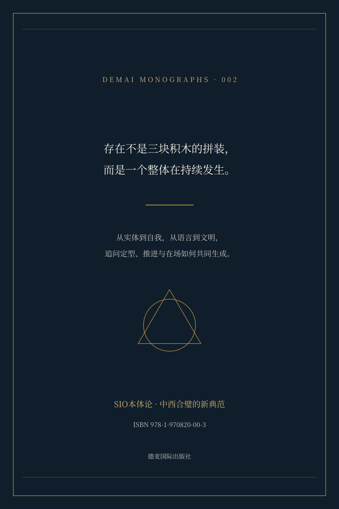

SIO本体论
全书目录 · 三编十三章与全部附录
编校说明
本版以《SIO本体论专著1215修改稿》为底本，保留三编十三章、结语、原创历程心记、金句集锦与附录A—C。目录按正文重建，章内练习及配套材料完整保留。版式沿用第220号专著的深蓝、金色、暖纸色与单栏体系。
编校处理对话残留、重复提示、错字及章内层级；统称三个号位时，与单独的第三号位明确区分；个别歧义句依全书主线改清：实际发生的底座是纠缠，叙事则是它的压缩。变更另有配套记录。
匿名“专家推荐”改列为阅读视角。ARI、GRI、CTI附录按方案和示例阈值呈现，不将未附日志的测试写成已得结果；成人触摸对照与婴儿研究作区分。
本书的本体论、跨学科解释与思想史判断属于作者论述，不因编校而成为已经确证的科学或临床结论。新增导读、速查及编校注均有标识。历史回顾保留第一人称和阶段次序，不补写经历。
沿用第2号书目及ISBN 978-1-970820-00-3，不另定价格。引文未载的版本与页码不作补造；书后另列已核对的出版社书目线索。
作者介绍
王德生，数学博士，SIO与SDE本体论的提出者。1990年进入湘潭大学，后获中国科学院计算数学博士学位，曾在英国斯旺西大学与新加坡南洋理工大学工作。其研究与写作由数学延伸至哲学、教育、知识创新和人的主体性。
他的思想探索经历三视角、321智慧、SIO本体论与SDE本体论等阶段。本书集中展开SIO阶段的“一阶生成整体”“号位侧重与显影”“意义三律”等命题，不以之后的概念替换这一阶段的完整论述。书后《原创历程心记》保留2015—2025年的作者自述。
不是S、I、O组合成SIO整体，而是SIO整体才是原初的存在。
据《原创历程心记》
十二种阅读视角
哲学与形而上学
从主客二分转向生成整体，是本书的首要问题。读者可以沿着显影、号位与意义三律，检查作者如何把“存在是什么”改写为“存在如何发生”，并以拆句法把这一问题带回日常经验。
认知科学与神经科学
本书以“我”的发生为入口，讨论并行整合、具身推进与注意节律。相关段落提供一种SIO解释语言；阅读时应区分这一哲学解释与具体神经机制的实证研究。
人工智能与机器学习
本书不把互动简化为关系线，也不把智能假定为神秘实体，而从表示、权重、稳定性与边界展开讨论。对系统设计的启发，落在可追溯、可修复与可约束三个方向。
教育与教学设计
课堂在书中被重写为发生场：差异如何稳定为概念，路径如何展开为能力，意义如何支持持续投入。这一读法可与附录B、C的流程与指标模板配合使用。
组织管理与领导力
推进断裂、修复缺席与场域失稳，是本书分析组织问题的三个入口。对KPI、责任归因与会议沟通的讨论，意在把对个人的单一指责，转化为对协作结构的检查。
公共政策与治理
本书以事实复现、推进修复与差异承托讨论治理。它关心的不只是命令是否执行，还包括规则怎样形成持续反馈，冲突怎样进入修复，以及共同生活的条件怎样得到维护。
医学与身心健康
相关章节将慢病、情绪与生活节律放在同一分析视野中，强调稳态、反馈与关系支持。这是作者提出的哲学观察框架，不代替疾病诊断、临床证据或个体治疗决策。
物理学与复杂系统
相变、临界、自组织与涌现，为本书讨论稳定与更新提供参照。读者可关注“实体为何稳定、何时失稳”的提问，同时保留跨尺度类比与同一物理机制之间的区别。
语言学与语用学
语言在本书中不是存在的镜子，而是发生的压缩方式。拆句法要求读者追问主语、宾语和动词各自压缩了什么条件，尤其关注命名与本体解释之间的层级差别。
艺术理论与美学
美在书中被解释为场域吸引与意义点火的结构动力。艺术不只是对象外观或个人口味，也涉及人在创作与体验中如何进入一种愿意持续参与的整体。
生态与可持续发展
自然在书中不是资源客体的仓库，而是有反馈、节律与恢复能力的网络。生态治理因此需要同时检查指标、修复过程与参与条件，而非只累积孤立的对象数据。
创业与创新战略
创新被放回差异稳定、路径展开与结构更新之中。失败的分析也从天赋或意志的单一解释，转向生成条件、转换窗口与可运行的新模式。
前言
这本书的出发点，并不是“再提出一个更玄的本体论名词”，而是对一个极其日常、极其顽固、又极其昂贵的文明习惯做一次清算：我们被一种语法养大——主语站在句首，宾语站在句末，动词横在中间，于是“我—看见—它”“我—理解—它”“我—改造—它”成为最省事的世界说明书；省事到我们忘记它是说明书，误以为它就是世界本身。正是在这种说明书里，现代文明把光当作真理的模型，把切割当作理解的核心，把对象的清晰当作存在的保障，最后在对象越来越清楚时反而更难回答“我为何在此”的问题。
你会在这一套叙事里越来越强大，也越来越空；越来越能做事，也越来越难呼吸；越来越能把世界变成客体，也越来越难把自己安放为“在场”。本书要做的，不是反科学、反理性、反语言，而是撤销一种越权：让“主客互动叙事模式”退回生活便携工具的位置，把解释权归还给更真实的发生机制——存在不是三块积木拼装（主体、客体、互动），存在是一阶的整体运行；所谓主体性、对象性、互动性，不过是同一整体在不同号位侧重下的显影称谓。
读者将在书中反复看到：那套“先有主体与客体、再发生互动”的直线叙事为何危险——因为它把显影当实体，把结果当起点，把运行面误名为桥梁；而当你把视线挪回发生现场，你会发现真正可靠的不是“更大的名词”，而是“更可追溯的结构”：对象如何定型，推进如何修复，在场如何点亮，纠缠如何稳定，意义如何点火。
因此，SIO本体论并不是把旧概念换皮，而是一场“中心迁移”：把解释中心从孤立的主体或客体，迁移到整体结构运行本身；把哲学的使命从永恒修桥，迁移到识别显影、分析纠缠、设计协同。这场迁移之所以配得上“哥白尼式”，并不在修辞，而在后果：当你承认主体与客体并非分立的两个东西、互动也不是附加在两端之间的桥梁，你会像突然明白太阳系中心不在地球那样，一下解除许多纠结——不是因为问题被抹掉，而是因为问题被放回正确的位置：所谓“互动感”是真实的，它来自结构内部的张力牵动推进；所谓“主谓宾叙事”也真实有效，但它常是跨模态显影纠缠后的语法压缩，并不拥有本体解释权。
你会在这一迁移中获得一种罕见的“落地感”：世界不再只是可被切割的对象仓库，也不再只是主观意志的舞台，而是一口口可追溯的呼吸——差异稳定生成特征，路径收敛生成自由，张力释放点燃幸福；真善美不再是评判贴纸，而是结构维持的三合力；知识、技术、艺术不再分属三界孤岛，而成为同一整体运行在不同侧重下的三种结晶。
更重要的是，这场迁移不是凭空宣告，而是被一段漫长的原创历程逼出来：形式僵死与内容虚无把思想推入死角，死角里反而逼出新定义；逻辑推到极致会崩塌，差异推到极致会虚无，而两者矛盾推到极致，迫使人寻找一种全新的存在定义——这本书因此不是概念游戏，而是一条在风雨中走出来的路。
你若愿意把这本书读下去，最美的吸引并不只是“观点新”，而是它逐步把读者从天空带回地面：从“名词的胜负”带回“机制的可追溯”，从“主语的焦虑”带回“结构的呼吸”，从“对象的暴政”带回“协同的点火”。
第二编的五篇文章会把这种落地感推到极致：它从《实体不实》开始，把“实体=先验砖块”的直觉改写为稳态显影的阈值链条——整体性、稳定性、独立性不是天赐，而是结构协同的加固结果；接着《“我”在SIO中发生》把“我”的王座撤下，让读者亲眼看见“我”并非先验中心，而是三号位在临界条件下点亮并与其它号位纠缠稳定后涌现的“场中之我”；继而在《主体、客体、互动的发生细解》《主-客进行互动叙事模式的虚幻》《主客互动叙事模式深刻剖析》中，把旧词汇彻底收编：S、I、O不再是先验三物，而是显影偏置；所谓主客互动被拆为“张力互动真、命名错觉”与“叙事互动幻、纠缠为真”两层；语言不再被当作本体镜子，而被明确为压缩机——压缩句可用，发生句必须解释。
这一路读下来，你会逐渐体会到一种“美”：不是装饰性的美，而是结构自洽的美——它让你在复杂里不再焦躁，在矛盾里不再绝望，在解释里不再漂浮；它让你开始相信：哲学不是为了把人逼到更难的抽象里，而是为了把人放回更真实的发生里。
本书的阅读节奏也像一口完整的气：先立骨，再解结，后合声。全书在结构上先给你“可站住的骨法”，再给你“可拆解的刀法”，最后给你“可协奏的文明法”。你可以把它看作三段旅程：第一编《立论与入门》四篇文章，先立新中心——《SIO本体论入门》提出从主客二分到存在之谜的根转向；《SIO 27宫格结构》给出运行骨架与结构尺；《SIO本体论：哥白尼革命》完成中心迁移；《SIO: 最本质，最本能，最本源的存在》把“本体”钉回整体生成。
第二编《生成与解构》五篇文章，把“实体—自我—意识方位—叙事机器—深刻剖析”一路拆回发生现场，让读者在案例与机制里真正学会“撤销旧叙事的解释权”。第三编《综合与文明》四篇文章则是升维段落：用《SIO之庖丁解牛西方哲学入门》以刀入骨节清障，用《中华之气：触觉SIO的智慧与原创》以气入肌理会通，用《与当代本体论的对话与原创性比较》把战场推向当代并用“八大支柱”对齐，再以《中西合璧共创新哲学典范》把光的定型、气的承托、音的推进协奏成文明级统一语法。
在这三编之后，还有一篇《总结〈SIO本体论的哲学使命与核心体系〉》为你收束主线，接着《原创历程心记》把十年风雨路与0→1突破的关键时刻交代为“可被继承的经验”，最后以“金句集锦”把整套体系压成可随身携带的火种。
愿这篇前言能把你带到一种最朴素的期待：读这本书，不是为了得到更华丽的观点，而是为了得到一种更可用的眼睛与手。你会在其中学会三问——差异在哪里、稳定窗口在哪里、机制支撑在哪里；学会三律诊断——特征是否被稳定化、路径是否打开、点火是否发生；学会拆句法——把任意SVO压缩句拆回发生句；学会通气法——诊脉、调息、点火，让新稳态自动运行。这四件工具一旦进入你的写作、研究、教学、组织与生活，你会发现“美的吸引”并不来自辞藻，而来自一种更深的呼吸：世界不再只是被看见的对象，也不再只是被讲述的故事，而是你可以参与、可以修复、可以点燃、可以共同生成的整体。愿你从这一口气开始，读完这本书之后，能在任何场域里更真、更善、更美——并且更愿意继续。
导读：从一句话回到发生现场
读这本书，可以先不记字母，也不急着评价它是否颠覆了哲学。请从一句普通的话开始：“我摸到了一只杯子。”这句话说得明白，也足以指导行动。但在这句话被说出之前，究竟发生了什么？手怎样移动，压力怎样变化，轮廓怎样被辨认，“我正在摸”和“这是一只杯子”的确定感又怎样形成？本书的入口，就在一句顺口的话与使它成立的整个过程之间。
作者并不要求我们从日常语言中删除“我”“物”和“互动”。他的主要主张是：可以继续使用这些词，却不能未经说明就把它们当作一切发生之前已经独立站稳的三块零件。生活中的快捷叙事与哲学中的本体解释，不应占据同一层级。所谓“撤销解释权”，针对的是叙事越过自身限度而成为本体预设，不是否认人们确实在感受、行动与承担。
先认清一个整体，再辨别三个侧重
SIO在这里不是Subject、Interaction、Object的简单相加，而是一阶生成整体。对象性、推进性与在场性，是这个整体在不同条件下呈现的侧重。第1章建立这套基本语言，第2章把它展开为27宫格：规范轴是对比、变化、分布；模态轴是粒子、波、场；价值轴是真、善、美。三轴相乘，不是只有三个格子，而是形成27种坐标组合。三个号位表示本书反复讨论的侧重配置，不应取代全部组合。
一号位强调对象定型，二号位强调过程推进，三号位强调场域在场。读到这里，最容易犯的错误是把“三个侧重”重新理解成“三个部件”。不妨一直保留这个检查问题：此处是在解释同一整体怎样发生，还是又偷偷摆好了三件东西，再试图把它们连接起来？
两层解构，不是两次否认经验
第3章提出“张力互动真、命名错”与“叙事互动幻、纠缠真”的双层分析。第一层讨论整体内部的张力怎样牵动推进；第二层讨论多模态发生怎样被一句主谓宾压缩。两层的对象不同：前者辨认机制的位置，后者辨认叙事的限度。把二者混起来，就容易误读为“任何互动都不真实”或“语言毫无作用”，而这都不是本书所要保留的结论。
第4章的“三最”论证进一步追问：什么是解释不能轻易绕过的结构条件，什么是经验在分析之前的整体发生，什么又使新的结构持续出现？这三组问题分别承担不同的论证任务。读者可以保留怀疑：作者给出的理由是否足够，案例支持到哪一步，是否存在需要重新界定的边界。章末的问题正可作为这样的阅读入口。
实体与“我”，都要追问形成和维持的条件
第二编从《实体不实》走向“我”的发生，再走向叙事机制的细解。“不实”在这里不是“不存在”，而是不再把稳定显现直接等同于无需条件的终极实体。W/S/I分别检查整体性、稳定性与独立性：一个束体怎样被组织为一体，怎样在扰动中保持，怎样形成可用的边界。这套符号不能与SIO的三个字母混用。
第6章把主体问题拉回分布、场与美，并通过人格、品行、德性三个模态讨论“我”的展开与轮替。读这一章，需区分生命连续体与某一种自我显影方式：作者讨论的“我之死亡”常指旧的中心位置、角色结构或稳态退场，而非把现实中的人化为可以随意抹去的东西。第7—9章再将这些概念放回具体句子，说明同生、互转、误名与压缩的关系。
哲学对话，是比较解释，不是代替原著
第三编先以“庖丁解牛”的方式阅读西方哲学，再讨论中华之气、当代本体论与中西合璧。四篇共同关心的是：一个思想体系抓住了怎样的结构，又有没有把某种侧重当作全部？这些是作者的解释性判断。读者既可以借助本书获得提问方式，也应在进一步研究时回到相关思想家的原著，检查批评是否准确覆盖了对方最强的论证。
光、音、气分别引出定型、推进与承托。它们在本书中既有感官入口，也有文明解释的用途。把这三者读作某种固定民族性，或把它们直接当成物理、医学中的同义词，都会扩大原有类比的负担。更有用的读法，是回到每一个具体案例，说明这里到底缺少什么条件、什么反馈、什么维持与转换。
用附录时，把方案与结果分开
附录A、B、C不是正文之外可有可无的尾巴。A提供AI复写、补全与迁移的压测框架，B提供流程清单、失败条件与验证协议，C把模板带入教育、组织与经济。它们使读者可以把一句哲学主张改写成待执行的任务：需要什么输入，做什么动作，留下什么记录，怎样识别失败，怎样比较前后变化。
但有了表格，并不等于已经得到了实验结果。原稿没有附上实际压测日志或完整的数据记录；表内的数值是作者提出的示例阈值。使用时，先固定任务、条件与判据，再同时记录成功和失败；最后才讨论结果能够支持什么结论。不要用“填完了模板”代替“完成了验证”，也不要把一次操作改善直接提升为唯一的本体论证明。
全书可以顺读，也可以按问题回返。初读者先沿第1—4章建立词语边界；关心自我与生活者可在第5—9章反复对照自身经验；希望研究哲学的读者可把第10—13章与原著并读；需要组织训练的人，则可将具体章节与附录B、C配套使用。无论采用哪条路径，最后都可回到同一个问题：我现在只是把一件事说得顺口了，还是已经交代清楚它怎样发生、怎样维持、怎样可能改变？
序章：存在的迷思
黑夜里仰望星空的先民，书斋中冥想的哲人，实验室里追索规律的科学家——从文明的第一口气开始，人类就被同一个问题牵引：何谓存在。我们为它编织神话，为它发明哲学，为它建立科学，把一代又一代人的困惑与勇气压缩成概念、命题与体系；然而真正令人不安的，或许不是答案尚未抵达，而是我们长期以一种“看似正确”的方式追问——我们的意识像睡在一个巨大梦境里，梦的名字叫“主客互动”。
在这个梦里，我们深信世界是一边站着“我”，一边站着“它”，中间有一条叫“互动”的桥：我去看见它，我去理解它，我去改造它，我去欣赏它；于是存在被写成一条笔直的句子，主语在前，宾语在后，动词像桥梁横在中间，仿佛宇宙的骨架本来如此。可这正是最昂贵的误会：我们把语言的便携包装误认成存在的真实结构，把显影后的结果倒灌为先验的起点，把“能行动”误当“能解释”，于是越走越亮，反而越走越空。
光明崇拜渗透进了我们的文化与认知，我们相信“看见即理解”，于是理性的砖石砌起科学与逻辑的高塔，用光线勾勒万物的边界，用概念固定可重复的同一；我们看见了世界，也看见了自己，可这种看见真的是触及真实吗。
你以为“我在看世界”，其实更多是视觉定型的算法在你心中高速运行：边缘检测切割差异、轮廓冻结为对象、名词盖章为实体；你以为“我在观察客体”，其实是对象先行的稳态幻觉在替你叙事——在光足够强、对比足够清、机制足够稳定的条件下，对象显影快到你忘了它曾经漂移，于是你把“定型成功”误当“先验自足”。越是明亮的地方，阴影越深：理性之光照彻万物，也在不知不觉中遮蔽了另一种更原初的发生方式——存在不是被看见的，而是被呼吸的。呼吸意味着什么。
意味着在场先点亮、推进先组织、对象后成；意味着张力会积累、模式会转换、释放会点火、自动运行会出现；意味着世界不是对象仓库，而是一口口可持续的生成。我们用光把世界切得清清楚楚，却把呼吸切断；我们用对象解释一切，却把意义外置；我们用“桥梁叙事”修补裂缝，裂缝反而成了永久裂隙：主体越想掌控，越焦虑；客体越被征服，越贫血；互动越被平台化，越噪音。
理性看似赢了，生命却悄然输了；科学突飞猛进，世界的呼吸却日渐微弱，我们获取了前所未有的知识与力量，却也倍感前所未有的空虚与迷茫——征服了自然的我们，最终反而迷失了自我。
所谓“主客互动哲学”，正是这场光之崇拜结出的迷思之花：它让我们深信存在不过是主体与客体之间关系的产物，于是我们一生都在修桥，仿佛只要把桥修得更坚固，就能抵达真实；可那座桥本身正是裂隙的名字——它以“连接”的名义确认了分裂，以“互动”的名义加固了两端的先存。
柏拉图守望洞穴外的真光，笛卡尔在怀疑中寻找唯一确定的“我”，康德以先验框架规定世界形式，黑格尔把生成写成必然剧本，尼采用解偶像的刀锋逼近虚无——他们各自伟大，却也共同处在同一个压缩叙事里：把显影结果当作本体起点，把对象当作真实的唯一形式，把语言的清晰误当存在的清晰。
与之相对，东方思想沿着另一条路径逼近存在：老子以“道”指称不可言说的本源，以“气化”描述万物生生不息的流行；庄子在梦蝶中动摇主客界线，佛陀以“梦幻泡影”指出执相之虚；它们更少执迷于将世界剖为主客两端，更强调天人合一、物我相融的整体体验。然而，东方直觉常以寓言与意境表达，未必发展出一套能与现代科学对话的严整语言；近代以来，西方光学式理性东渐，东方的呼吸直觉在强光下显得晦暗，被误判为玄想。
东西两端各有所长亦各有所困：一方过度分解分析而失去承托，一方保留整体体验而难以落地；存在之谜因此迟迟未解。
黎明并不来自更强的光，而来自更完整的呼吸。世界根本不需要一座人为桥梁去连接主与客，因为主与客从来不是两块先存的实体；主与客更像同一整体呼吸中此起彼伏的显影偏置：在场会点亮，推进会修复，对象会后成。摆脱梦魇的时刻并不是抛弃理性，而是撤销理性的越权：让对象定型回到工具位，让在场承托回到地基位，让节奏推进回到发动机位。
正是在这样的觉醒背景下，SIO本体论应运而生——它不是 Subject + Interaction + Object 的简单相加，也不是把S、I、O三块积木组装成宇宙机器；恰恰相反，它揭示的是一个不可分割的生成整体：存在如同一次完整呼吸，S、I、O不过是这整体在不同张力位置上投射显影出的侧面。
世界并非由零件拼装而成，倒是零件语言在世界整体脉动中浮现又消隐；你以为你在“摸杯子”，其实杯子是后成定型，“我”是场域点亮，“摸”是推进校准——语法把并行发生压成直线，才制造了主客互动的集体梦。SIO哲学的使命，就是让这场光与影的幻戏缓缓谢幕：不是毁掉语言，而是让语言回到发生；不是否定科学，而是让科学回到机制；不是取消意义，而是让意义回到点火。
明白了这一点，我们才能真正摆脱二元牢笼，触及存在动力的核心地带：存在不是一块永恒答案，而是一首永不停歇的长诗；每一次呼吸都是新的一行，每一次转换都是一次重生；而我们并非旁观者，我们就是这首诗正在发生的一部分。
立论与入门
本编由四篇文章构成：从《SIO本体论入门》立新中心，到《SIO的结构学入门》给出结构尺，再到《SIO本体论：一场哥白尼革命》完成“撤销主客叙事的解释权”，最后以《SIO：最本质、最本能、最本源的存在》把本体论的根钉回生成整体之中。四篇并非答案清单，而像四口节拍分明的气：先把旧语法的天空挪开，让读者学会以“结构运行”触摸存在，再把方法与尺度交到手里，使后续所有章节都能在同一套发生学坐标里推进。
第一篇的使命，是让读者在起步处就停止“主体先存—客体先存—互动后生”的本体倒装，直接把存在安放为一阶SIO整体：27宫格不是分类表，而是运行骨架；所谓主体、客体、互动，不过是结构在不同号位侧重下的显影称谓，于是“我与物的故事”必须退位为压缩叙事，解释权归还给显影与生成。第二篇则把这种“退位”变成可训练的结构学：从Pike的九宫格（行为的统一结构）出发，指出仅靠“对比/变化/分布×粒子/波/场”的发现学仍解释不了“我、意义、场”的诞生，因而把结构推进为三维合一的27宫格（再加价值轴），并以号位侧重把S/O/I彻底改写为显影投影，从此读者不只相信革命，而能在语言、知觉、教育、组织、艺术等场景里坐标化发生。
第三篇是本编的刀锋：所谓哥白尼革命，不是换词，而是迁移中心——把“主客互动叙事模式”从本体中心撤下，揭示互动感的真实来源在(3↔1)张力牵动2号位推进，同时指出日常主谓宾常是跨模态SIO纠缠的语法压缩，于是“叙事互动”在本体上虚幻，而“纠缠”才是地基。第四篇则把这场迁移封顶为“三最”判决：SIO之最本质，在于它给出任何解释绕不开的最小完备结构；最本能，在于它先于主客切分而在经验中整体发生；最本源，在于它不仅解释既成世界，更给出世界持续生成的机制与动力——至此，第一编完成“立论与入门”的闭环：你不再靠桥梁焦虑生活，而开始在结构动力学里呼吸、判断与创造。
SIO本体论入门
引言：从主客二分到存在之谜
长期以来，西方哲学与现代科学共享同一副“语法骨架”：先设定一个先存的主体，再摆放一个先存的客体，最后在两端之间安插一个动词，把它叫作互动、行为、认识、改造，于是世界被讲成一条主谓宾的直线，仿佛只要句子成立，存在就成立，仿佛只要“我看见了”“我理解了”，真理就被搬运到了心里。
正是在这条直线上，柏拉图的洞穴把光当作真理的模型，笛卡尔把“我思”当作最后的支点，康德把先验结构当作对象性的铸模，直到现代文明把理性之光推向极致，形成一种几乎不可动摇的信念：把世界照得足够明亮、切割得足够清晰、分类得足够彻底，我们就能逼近真实。
可是，这套叙事越走越显出一种奇异的副作用：它给了我们征服物质世界的能力，却同时把人与世界切得越来越薄，把生命的厚度切成可测量的片段，把意义的根系切成孤立的“我”和孤立的“它”，最后让人类在知识增长中感到疏离，在技术强大中感到空虚，在对象越来越清晰时反而更难回答“我为何在此”的问题。
问题并不在于“主客互动叙事模式”完全无效，它在日常生活中当然有效，甚至它的有效性正是它最危险的地方：它像天空一样覆盖一切，轻盈、顺口、无需交代发生条件，于是它被误当作本体的地基，而不是语言的便携工具。
你越频繁地说“我对它做了什么”，你就越容易相信“我”与“它”本来就在那里，互动只是后来发生的一条线；你越频繁地把一个对象名词放到句末，你就越容易忘记对象名词本身并不是起点，而是某种“对象性定型”完成后的结果；你越频繁地把“互动”当作桥梁，你就越容易把最真实的运行面误读成两端实体之间的关系往来。
于是，我们在这里提出一个更尖锐的怀疑：所谓主客范式也许不是对存在的揭示，而是一场漫长的命名错觉——它把结构运行的热量误译为实体之间的摩擦，把跨SIO纠缠的稳定化误译为单一事件的主谓宾故事，把“显影结果”误译为“先存实体”，从而制造了哲学史上最顽固的一种幻象：主体与客体是世界的中心，互动只是连接它们的手段。
当这种幻象被看见，存在之谜就不再是“主客如何相遇”的桥梁焦虑，而是“为何我们会如此轻易地相信主客先存”的发生学问题。本书要做的，不是再提出一套更精密的桥梁理论，而是进行一次哥白尼式的中心迁移：不再以主体或客体为中心来组织解释，而以整体结构运行来组织解释，不再把S、I、O当作三块积木，而把它们当作同一整体在不同侧重下的显影称谓。
换句话说，我们将把存在重新定义为一阶的SIO整体，并以27宫格结构作为它的骨架：规范维（对比/变化/分布）×模态维（粒子/波/场）×价值维（真/善/美），这三轴不是分类学的抽屉，而是任何发生都无法逃逸的结构约束；在此骨架中自然分化出三个号位侧重：1号位（对比-粒子-真）提供对象性定型，2号位（变化-波-善）提供运行面推进，3号位（分布-场-美）提供在场场域沉浸，而所谓S、O、I只是旧语法对这三种显影偏向的命名遗产。
这场“中心迁移”的关键，不是把旧词全部废掉，而是剥夺旧词的本体解释权：我们承认互动感是真实的，因为(3号位↔1号位)的对立张力必然牵动2号位运行面发生改变，推进、阻力、折返、协调、释放都是真实发生；但我们同时指出，把这种真实机制命名为“主体与客体的互动”是一种误名，因为互动并不发生在两端之间，而发生在整体内部的张力—推进之中。我们也承认主谓宾叙事在生活中便利，因为它能把复杂发生压缩成一句话；但我们必须指出，很多“主—谓—宾”的两端并不来自同一SIO内部的自然分化，而来自不同模态SIO的显影错位与纠缠稳定，语言把这种跨SIO纠缠压成“我—摸—杯子”的线性故事，于是叙事互动在本体上是虚幻的，真实本体是纠缠。
因此，本篇作为“入门”，不追求用更多术语压过旧术语，而追求用更硬的发生学把旧叙事放回它应在的位置：它可以作为天空继续漂浮，但它不能再作为地基支配哲学。接下来我们将依次展开：先用“整体生成论”把SIO从三要素拼装中彻底解放出来，再用“号位侧重显影”把主体性、对象性、运行面放回结构动力学中，然后以感知模态与文明取向说明为何不同文化会偏爱不同号位，继而用“三界、真善美、意义三律”把价值与意义从主客叙事的漂浮天空拉回SIO的脚踏实地，最后以“理论的应用前瞻”给出一条可操作的哲学训练路线——让读者不仅理解SIO，而且开始在自己的语言与生活里实践这场哥白尼革命。
整体生成论：存在如图景显影
当我们把SIO称为“一阶存在”，最容易被误解的地方恰恰在于：读者会以为我们只是把旧三要素换了一个排列顺序，仿佛从“主体—互动—客体”变成“主体—客体—互动”或“互动—主体—客体”，然后宣布这就是新哲学；而真正的整体生成论要说的并不是“换序”，而是“撤销要素论”。
所谓要素论的幻觉，是把存在当作积木，把主体当作一块、客体当作一块、互动当作一块，然后用一个外部的手把它们拼起来；整体生成论要做的，是把那只外部的手也撤销，因为它本身就是旧本体论的最后幽灵：它暗示有一个先验拼装者，有一个不在SIO之中的解释者。SIO整体生成论的核心句必须明确表达：存在不是由S、I、O拼装而成，存在本身就是SIO整体在运行中的自我生成；S、O、I只是整体运行中三种侧重显影的称谓。
这不是修辞，而是本体顺序的翻转：先有整体运行，后有显影命名；先有结构动力学，后有语法两端；先有发生，后有“我”和“物”。
为了让这种“整体先在”不被误读为抽象整体论，我们需要一个最直接的说明：整体先在，并不意味着整体是一个静止的“大东西”，它恰恰意味着整体是一种持续的生成过程，它像一幅图景从混沌中逐渐显影出来，显影的不是一张拍好的照片，而是一张正在生成的底片；你在显影液里看到的不是“已经完成的对象”，而是轮廓在出现、层次在加深、对比度在变化、背景在退隐、前景在凸显，直到某一刻你才敢说“这是一张照片”。
存在亦然：我们以为对象先存、主体先存，只是因为我们习惯在显影完成之后才回头讲故事，于是我们把结果当作前提，把后成当作先验，把显影当作实体；整体生成论要做的，就是把叙事时间倒回显影过程本身，让读者亲眼看见：所谓“对象”是如何定型的，所谓“我”是如何在场的，所谓“互动”是如何推进的，而当你看见这些，你就不会再把“主体与客体先存”当作无需证明的前提，因为你已经看见它们的生成史。
这就是27宫格结构在整体生成论中的位置：它不是写给读者背诵的九宫格游戏，而是告诉你“显影是有骨架的”。当存在显影为“图景”，它必然在规范维上完成对比、变化、分布的三重运动：对比让差异被切割出来，使轮廓成为轮廓，使边界成为边界；变化让过程得以推进，使尚未完成的显影继续加深，使张力得以转化为时间序列；分布让场域得以铺展，使图景不是孤立点阵，而是整体共在的空间结构。
与此同时，它必然在模态维上呈现粒子、波、场的三重姿态：粒子态把局部定型成可指认的“点”，波态把推进呈现为连续的“流”，场态把共在呈现为沉浸的“境”；最后，它必然在价值维上留下真善美的三重指标：真对应差异稳定与同一可重复，善对应推进顺畅与可持续，美对应场域吸引与沉浸牵引。你若把这三轴当作分类表，你就会写出一堆“概念整理”；你若把它当作显影骨架，你就会明白：所谓存在的整体生成，就是这三轴在每一瞬间互相牵动、互相预设、互相燃烧。
因此，整体生成论必须明确提出三号位侧重的自然分化：在显影过程中，并不是27格平均亮起，而是某些格子在某些条件下被放大，于是出现三种主导偏向。第一种偏向是1号位：对比—粒子—真，它负责“把世界钉成对象”，负责让图景中的某个部分从背景里站出来，像雕塑一样成为可命名的“它”；第二种偏向是2号位：变化—波—善，它负责“让图景继续生成”，负责把张力推入时间，把冲突转化为可推进的序列，让尚未完成的显影不至于僵死；第三种偏向是3号位：分布—场—美，它负责“让图景成为在场的世界”，负责把你卷入其中，让你不只是看见一个对象，而是处在一个境界里，受到牵引、吸引、沉浸。
所谓主体性、对象性、互动性，都是这三种偏向在经验中的可见面：对象性是1号位偏向显影出来的定型效果，主体性是3号位偏向显影出来的在场中心，互动性是2号位偏向显影出来的推进运行面；因此，把SIO解释为“主体—互动—客体的组合”，等于把显影后的三种效果倒装为显影前的三块积木，这恰恰是旧本体论的基本错误。
整体生成论还有一个最容易被忽略却决定一切的环节：所谓“互动”并不是加在两端之间的关系，它是整体生成必然出现的运行面，因为1号位与3号位天然会发生张力，一号位要切割、要定型、要确定，三号位要铺展、要沉浸、要吸引，这两种力量若不被推进，就会把存在撕裂或稀释，于是2号位作为推进面必然被牵动；本书已经用一句极短的公式把这一事实明确表达：(3号位↔1号位)的对立张力牵动2号位改变。
这就是互动感的真实来源，也是“主客互动”叙事之所以看似合理的燃料；但整体生成论必须指出：燃料是真实的，叙事是误名的，因为张力发生在号位之间，不发生在两端实体之间；所谓“主体与客体对立统一共生”，其实是3号位与1号位的对立统一共生，而2号位是这场张力得以转化为序列、得以继续燃烧的运行机制。只要你把这条机制看清，你就会明白：互动不是桥梁，而是发动机；不是两端之间的线，而是整体内部的呼吸。
最后，整体生成论必须把一个“日常最小实验”放进读者的身体里，防止他读完仍然滑回旧语法：你闭上眼睛去摸一个杯子，你会发现“杯子”并不总是先在地等着你去摸，你先经验到的是触觉场域的在场与推进，你先经验到的是3号位的沉浸与2号位的试探，而“杯子”这个对象名词往往要等到某种1号位定型完成之后才敢落下；于是你才真正理解什么叫“存在如图景显影”——对象不是起点，名词不是地基，所谓“我摸杯子”的主谓宾句子不是事实的原型，而是显影完成后的压缩包装。整体生成论由此落地：世界不是被拼装的，世界是被显影的；不是先有S、O、I，再合成SIO，而是先有SIO整体生成，S、O、I只是显影偏向的命名遗产。
三个号位的意识：真、善、美的三态显影
当我们说“三个号位的意识”，最容易造成误解的地方在于：读者会把它听成另一套“心灵分区”，仿佛人的意识内部有三个仓库，一个装真理、一个装善恶、一个装审美，然后哲学家负责在仓库之间搬运概念；而本书要讲的恰恰相反：三个号位的意识并不是“意识内部的三个抽屉”，它首先是存在整体在运行时的三种侧重显影，是同一SIO结构在不同偏向下显现出的三种“意识姿态”，而所谓真善美也不是外加的道德标签或审美贴纸，它们是SIO运行是否站得住、跑得顺、燃得旺的三大指标。换句话说，三个号位的意识不是心理学分区，而是发生学分区；真善美不是价值学分区，而是结构动力学的三维表征。
先说明三个号位的共同地位：它们不是“主体—互动—客体”三件套的翻译，也不是把S、I、O当作三个实体再分别贴上真善美；三个号位是27宫格骨架在运行中自然分化出的三个侧重位置。第一侧重是一号位：（对比、粒子、真），它对应的意识姿态是一种“定型意识”：你在其中追求差异的稳定、轮廓的清晰、同一性的可重复，你把世界体验为“可指认之物”的集合，像把火焰压成可测量的火星；第二侧重是二号位：（变化、波、善），它对应的意识姿态是一种“推进意识”：你在其中追求过程的可持续、张力的可调和、行动的可继续，你把世界体验为“正在发生之事”的序列，像把火焰延展成可前进的火线；第三侧重是三号位：（分布、场、美），它对应的意识姿态是一种“在场意识”：你在其中追求共在的铺展、吸引的牵引、沉浸的意境，你把世界体验为“我在其中”的整体场域，像把火焰化为包围人的热与光。
请注意，这里所谓“一号位意识、二号位意识、三号位意识”并不是说“人的意识有三块”，而是说同一存在整体在不同条件下会被你经验为三种主导偏向：有时你最在乎定型，有时你最在乎推进，有时你最在乎在场，而真善美就在这三种偏向里分别成为主导指标。
于是，“真”必须被从抽象命题论中救出来，归还给一号位的结构动力学。真不是一句话是否符合外部事实的形式判定，真首先是差异稳定性涌现为同一性锚定：当一个对象、一个规律、一个图像、一个概念在相似条件下能够反复显影，你才能说它“真”，因为“真”在这里等于可重复、可预测、可复现；你能把杯子反复认作杯子，你能把某条实验规律反复验证，你能把某个结构反复识别为同一结构，这些都不是语言的功劳，而是一号位定型工程的成功，是对比切割在粒子态中形成稳定对象性的成功。
真因此不是漂浮的，而是脚踏实地的：它踩在定型能力上，踩在对比边界上，踩在同一性可重复上；当定型不足，名词漂移，真就崩塌；当定型稳固，名词稳定，真就站起。你若仍然把真理解为“主体对客体的正确表象”，你就又回到旧主客叙事，把真变成一座桥梁焦虑；而SIO告诉你：真是一号位的结构指标，不是主客之间的镜像关系。
同样，“善”必须从道德训诫中救出来，归还给二号位的结构动力学。善不是先验的道德律，也不是外部权威对行为的评价，善首先是运行面是否能推进、是否能持续、是否能把张力转化为可继续的序列：当一号位与三号位发生张力，你若不能推进，它们就会撕裂或溶解；当矛盾出现，你若不能调和，它们就会卡死或爆裂；当冲突加剧，你若不能转换互动模式，它们就会陷入内耗与递弱。善因此是一种“可继续性”的指标：让互动不崩塌，让序列能延伸，让系统能修复，让结构能迭代。
你在生活里感到“善的力量”，往往不是听到一句教条，而是感到一种推进：冲突被缓解，误解被澄清，堵塞被打通，关系重新流动，工作重新可做，生命重新可呼吸——这就是二号位在运行，这就是善作为运行指标在发光。若你仍然把善理解为“主体出于意志对客体或他人施加良好行为”，你就把善又翻译回主客叙事，把善变成主体的道德属性；而SIO告诉你：善是二号位的结构指标，是推进、调和、持续的能力，是让张力不死、让序列不断的机制。
而“美”，也必须从审美偏好中救出来，归还给三号位的结构动力学。美不是对象的外观属性，也不是主体的主观口味，美首先是场域吸引与沉浸牵引的结构成功：当分布结构形成一种和谐的共在，当场态把你卷入其中，当你不愿停止互动、甚至愿意在其中停留、凝视、反复体验，美就发生了。美在这里不是装饰，它是动力；不是结果，它是牵引；不是“看上去好看”，而是“让你愿意继续在场”。
你在一段音乐里不愿结束，你在一幅画面前驻足，你在一段关系里愿意陪伴，你在一个思想里愿意反复咀嚼，这些都是美作为三号位指标在运行：它把你与世界绑在同一场域，把你与对象性、推进性编织成一团不愿松开的纠缠。若你仍然把美理解为“主体欣赏客体的审美感受”，你就把美又写成主客二元关系；而SIO告诉你：美是三号位的结构指标，是场域的吸引力，是共在的和谐度，是沉浸的牵引机制。
到这里，我们必须把“三个号位的意识”与本书确立的“张力互动—误名机制”直接对接，因为它决定读者是否真正理解为何主客互动叙事会顽固。真实发生的是：一号位与三号位天然发生对立张力，一号位把世界切成对象，美与在场会被割裂；三号位把世界铺成场域，真与定型会被稀释；于是二号位必须介入，推进、调和、转换互动模式，让真不至于冷硬，让美不至于迷雾，让善成为二者之间可持续的运行机制。
你在经验里最强烈感到的常常就是二号位，于是你以为“互动发生在主客之间”；可在SIO里我们要写得更精确：所谓互动发生在(三号位↔一号位)张力牵动二号位推进之中，而把它叫作主客互动只是命名错觉。于是三个号位的意识不仅解释真善美，也解释了主客叙事的生成条件：当你看不见号位张力，你就会把推进误当桥梁；当你忽略纠缠稳定化，你就会把语法压缩当作本体结构。
因此，本节的落地结论可以写得非常直接：真、善、美不是三条道德口号，它们是SIO结构在三个号位侧重下的三大运行指标；三个号位的意识不是心理分区，而是结构显影的三态谱系；而主客互动叙事之所以能长期统治文明，恰恰因为它把真善美的结构指标误译成主体属性或客体属性，再把二号位推进误译成两端之间的互动，于是文明越追真越冷硬，越追善越训诫，越追美越主观，最后真善美互相分裂、互相伤害。SIO要做的，是把它们重新绑回同一整体结构：真负责定型，善负责推进，美负责牵引，三者互相预设，互相需要，缺一不可。
下一节我们会把“粒子—波—场”的模态维度真正落到感官经验与文明直觉里，让读者看见：为什么视觉SIO易产生对象定型、听觉SIO易呈现过程推进、触觉SIO易点亮在场场域，而所谓“主客互动”常常只是多模态SIO纠缠被语法压缩的幻象。
光、音、气：三种模态的显影偏振
如果只在概念层面讲“粒子—波—场”，读者很容易把它误听成另一套物理学借词，仿佛我们只是用科学名词给哲学换了一件更硬的外衣；但在SIO结构语言里，模态不是外衣，模态是存在显影的方式，是真实发生的“呈现肌理”。
所谓光、音、气，并不是三种诗意比喻，它们是三种最贴近人类经验的模态入口：光让世界以“可见轮廓”显影，音让世界以“时间连续”显影，气让世界以“在场场域”显影；而一旦你把这三者当作模态入口，你就会突然理解本书所讨论的核心：为什么对象名词常常依赖视觉的定型，为什么过程推进常常依赖听觉的连续，为什么主体在场常常依赖触觉与气息的沉浸，进而你也会理解：所谓主客互动叙事模式，很多时候并不是一个单一SIO内部三要素的发生，而是多模态SIO纠缠稳定化之后被语法压缩成一句话的幻象。
模态在这里不是“附加条件”，模态是“发生前提”；你若忽略模态，你就会误把语法当本体。
先说“光”。光是视觉模态的象征，而视觉模态最强的能力，是让一号位（对比—粒子—真）迅速显影：轮廓的切割、边界的定型、对象的同一性锚定，常常在瞬间完成；于是你一眼望去，杯子就成了杯子，桌子就成了桌子，远山就成了远山，你几乎来不及看见对象性是如何生成的，你只看见“它已经在那里”。正因如此，视觉模态天然容易制造“客体先存”的幻觉：一号位显影太强，强到遮蔽了它自己的工程性，强到让人以为对象是天赋给定的，而不是定型成果。
于是，旧本体论最坚固的堡垒往往建在视觉之上：世界像一排摆好的物件，主体像旁观者站在对面，互动像一条线把两端连接；这种叙事之所以顽固，正是因为视觉把一号位的成功伪装成了“客体先天存在”。SIO在这里要做的，是把视觉的成功重新译回结构语言：你看见对象，不是你捕捉了一个先存客体，而是一号位在视觉模态中完成了高效率的定型显影；“真”的底盘不在外部物件的赐予，而在差异稳定性被定型为同一性锚点的结构成果。
再说“音”。音是听觉模态的象征，而听觉模态最显著的特征，是它天然带着时间：你无法在一瞬间“听见一首旋律的全部”，你只能在连续中辨认，在波动中跟随，在节奏中等待意义聚合；于是听觉模态天然把二号位（变化—波—善）的推进显影出来，甚至比一号位定型更先、更强。
你听到的首先是起伏、延续、强弱、转折，你要等到足够多的推进完成，你才敢把声音定型为“那句话”“那段旋律”“那个人的语气”；因此听觉模态更容易让人直接经验对象名词的后成性：一句话不是先在那里等你去听，而是在听的推进中逐渐定型成一句话。正是在听觉里，我们最容易看见“意向性不是箭矢，而是推进序列”：你不是先有一个对象再去指向它，你是在推进中让对象性聚合，并在聚合中反过来组织推进。
听觉因此天然更接近SIO的发生学真相：它让善作为“可持续推进”显得具体而真实，让张力在推进中被调和、被转化，让意义在时间里被编织，而不是被瞬间捕获。
再说“气”。气不是某种玄学物质，它是最贴近身体与在场的模态隐喻，它指向的是一种场态：你不需要看见气，也不需要听见气，你在呼吸、在走路、在触摸、在紧张与松弛之间，就已经处在气的运行之中；气最强的显影，是三号位（分布—场—美）的在场性：你感到“我在这里”，你感到“环境在包围我”，你感到“关系在牵引我”，你感到“氛围在改变我”，这些都不是对象的属性，也不是纯主观的幻觉，而是场域分布的真实：共在结构在你身上发生。
气因此揭示一种更深的真相：主体性不是先验自我，而是三号位显影的在场中心；你之所以觉得“我自明”，是因为你总是先在场中，再在场中命名；当气息急促、场域紧绷、身体颤抖，你会发现“我”并不稳定，它随场域而变；当气息平缓、场域松弛、触觉沉浸，你会发现“我”反而更强、更厚、更在其中。
气让我们看见：主体性并不是一块永恒不变的实体，而是一种场态稳定度；美也不是审美口味，而是场域吸引与沉浸牵引的结构力量——某些音乐之所以让你落泪，某些空间之所以让你安静，某些人之所以让你愿意靠近，并不是对象属性或主体偏好那么简单，而是场域结构在你身上发生了牵引，三号位显影被点燃。
当光、音、气这三种模态入口被放在一起，最关键的事情发生了：我们终于可以用最朴素的经验解释“叙事互动为何虚幻”。因为大量日常句子——尤其是“我—做—它”那类句子——往往并不是同一模态内的完整发生，而是多模态显影错位后的拼装。
你说“我摸杯子”，其中“杯子”常来自视觉的光——一号位定型显影先完成，于是对象名词提前落地；而“我在摸”的主体在场常来自触觉与气——三号位场态显影更强，于是主体性被点亮；中间那个“摸”则是听觉式的推进逻辑——二号位推进在多模态之间做校准，把看见的轮廓与摸到的边界绑定成同一段可追溯序列。于是，主谓宾句式把多模态纠缠压缩成单一事件，像把多股河流压进一条直渠，渠当然可用，但渠并不等于河流的真实地形。
婴儿之所以难以“用手摸杯子”，恰恰说明这种纠缠并非先天：视觉的一号位定型与触觉/气息的三号位在场尚未稳定绑定，二号位推进无法完成校准，于是语法压缩句无法成立，或只能以失败的形式成立；而成人之所以觉得“我摸杯子”天经地义，正是因为纠缠工程已经在长期生活中被无数次训练，稳定得让你忘了它是工程。
因此，本节的结论必须落到一个非常具体的地面上：光、音、气并不是附加解释，它们是模态显影的三种入口；视觉的光偏向一号位定型，听觉的音偏向二号位推进，触觉与气偏向三号位在场；而主客互动叙事模式之所以像真理，是因为它借助视觉的定型把对象名词提前落地，借助场态的在场把主体名词自明化，再借助推进的动词把纠缠校准压缩成关系桥梁，于是多模态纠缠被伪装成实体之间的互动。SIO要做的不是反对这些模态，而是让读者学会在模态之间看见显影偏振，看见对象名词何时后成合法，看见主体性何时在场点亮，看见互动何时只是推进运行面——从此，语言仍可便利，但哲学不再漂浮。
下一节我们将把这种“模态显影”进一步推向存在论的整体版图：如果模态决定显影方式，那么现实世界、理念世界、自我世界就不再是三座分离的王国，而是SIO在不同场域与不同纠缠方式下形成的三种世界形态。
三界：现实世界、理念世界、自我世界
当我们谈“三界”，最容易跌回旧本体论的方式，是把它理解成三个“装东西的盒子”：现实世界装客观物质，理念世界装抽象概念，自我世界装主观体验，然后哲学家的任务是告诉你这三盒子如何互相对应、如何互相映射、如何互相证明。可一旦这样理解，你立刻就会把“三界”讲成主客二分的变体：现实世界像客体王国，理念世界像主体的知识仓库，自我世界像主体的内在剧场；于是你又回到“主体面对客体”的旧宇宙，只不过你多发明了两个中介层，问题不但没解决，反而变得更复杂、更漂浮、更难落地。
SIO本体论在这里提出的三界并不是三只盒子，而是三种SIO纠缠方式与三种显影主导，它们不是并排摆放的区域，而是同一存在整体在不同运行路径中生成的三种世界形态；换句话说，三界不是“哪里有什么”，三界是“如何发生什么”，是发生学的三界，而不是地理学的三界。
首先，所谓现实世界，并不是一个先天自足、与人无关的客体仓库；现实世界是物质—行动—感知类型的SIO纠缠在长期稳定化之后形成的世界形态。你之所以觉得现实“硬”，是因为一号位（对比—粒子—真）在现实世界的SIO链条里经常被制度化、被加固：仪器测量、重复试验、工程制造、物理约束，都在持续强化对象的定型能力，于是对象名词稳定、边界清晰、可重复性强，真像地基一样压住一切；但这并不意味着现实世界就是“纯客体”，它只意味着现实世界的主导显影常常偏向一号位，并且这种偏向被技术与制度反复巩固。
与此同时，现实世界也从不缺少二号位与三号位：行动的推进、过程的试错、关系的调和都是二号位的运行面；身体的在场、环境的场域、共同生活的氛围都是三号位的沉浸场。现实世界之“现实”，并不是脱离SIO而独立存在，而是SIO在物质约束下形成的高稳定显影：对象性更稳、可重复性更强、路径可追溯性更强，于是你把它叫作现实。
其次，所谓理念世界，并不是主体脑内的抽象仓库，也不是语言符号的漂浮天空；理念世界是符号—概念—逻辑类型的SIO纠缠在长期自组织之后形成的世界形态。理念世界之所以“轻”，是因为它常常把现实世界的对象性定型抽象为可搬运的符号，把现实世界的推进序列抽象为可重复的推理，把现实世界的场域共在抽象为可比较的结构关系，于是你能够在纸上写下一条定理，在电脑里运行一个模型，在课堂上讲一个概念，而不必把整座山搬进教室。
理念世界的力量在于它能用少量符号承载大量结构，它像把一片森林压缩成一张地图；但理念世界的危险也在于它太容易被误当作“本体本身”，因为它的压缩能力会让人产生一种错觉：只要符号系统足够完备，世界就可被穷尽描述。SIO本体论在这里要提醒读者：理念世界依然是SIO世界，它依然由对比、变化、分布的规范运动构成，由粒子、波、场的模态方式构成，由真善美的指标牵引构成；只是它的对象性常由概念定型承担，它的推进性常由推理序列承担，它的场域性常由意义网络承担。
理念世界不是主体的私产，它是跨主体纠缠形成的公共结构场；它不是“主观”，它是另一种客观——符号与逻辑的客观，但依然是SIO的客观。
再次，所谓自我世界，也不是一个孤立主体的内在剧场，更不是“纯主观感受”的私密盒子；自我世界是身体—情绪—自我叙事类型的SIO纠缠在长期习惯化之后形成的世界形态。自我世界之所以显得“最像我”，是因为三号位（分布—场—美）在其中常常占据更主导的位置：你不是先看到对象再感到自己，你常常是先在场、先紧张、先舒张、先渴望、先恐惧，然后对象性与解释才姗姗来迟；你不是先用概念定义痛苦再痛苦，你常常是先痛苦，然后理念世界才被召唤来解释；你不是先决定幸福再幸福，你常常是在某种张力释放与互动模式转换之后，幸福作为场域状态在你身上发生。
自我世界因此让我们直接看见：主体性不是先验实体，而是三号位显影的稳定度与厚度；当你的场域坍塌、呼吸紊乱、身体失序，你所谓“我”也会被撕裂；当你的场域重新稳定、气息重新贯通、触觉重新沉浸，你所谓“我”也会重新聚合。自我世界不是“主观幻象”，它是SIO在你身上发生的最直接、最不容否认的现实：它同样硬，同样真，只是它的真不是对象定型的真，而是场域在场的真。
当我们把三界如此重写，三界之间的关系也必须被重写：它们不是彼此对立的三块领地，而是彼此纠缠的三种运行层级。理念世界来自对现实世界与自我世界的压缩与抽象，它把对象性、推进性、场域性做成可搬运的符号；现实世界通过技术与制度把理念世界的符号结构反过来固化成可重复的对象工程；自我世界则在每一次具体生活中把现实的阻力、理念的解释、关系的氛围纠缠成一段具体的SIO序列，并以幸福、痛苦、自由、窒息等方式把这段序列反馈给你。
所谓三界统一，不是把它们混成一锅粥，而是看见它们本来就是一张网：现实提供约束与可重复，理念提供压缩与可共享，自我提供在场与体验；三者在不同号位偏向下互相预设，互相借力，互相纠缠，缺一不可。你若把理念世界当作纯主观，你就会失去公共真理；你若把现实世界当作纯客体，你就会失去意义与体验；你若把自我世界当作纯私密，你就会失去可沟通与可治理；三界之所以常常冲突，不是因为它们天生敌对，而是因为我们被旧主客叙事误导，把三界当成三个盒子，于是用错误的边界制造了错误的战争。
因此，本节的落地结论可以写成一句更坚硬的发生学句子：三界不是三处，而是三种SIO纠缠方式；现实世界偏向对象定型的稳定工程，理念世界偏向符号压缩的结构工程，自我世界偏向在场场域的体验工程；三界互相纠缠，互相生成，互相校准。当你把三界看成纠缠方式，你就不会再问“理念如何对应现实”这类漂浮问题，你会问“何种纠缠使理念能落地为现实，何种纠缠使现实能被理念压缩，何种纠缠使自我不被两者撕裂”；这才是真正脚踏实地的三界哲学。
下一节我们会把真善美从抽象的价值学口号进一步落到SIO动力学：真是方向力的锚定，善是推力的推进，美是吸引力的牵引，三者合起来维持SIO运行并决定文明走向。
真、善、美：价值三合力与结构稳定
当我们把真、善、美重新放回SIO结构，最大的风险不是概念太难，而是概念太熟：真善美这三个字在哲学史上被谈得太多，谈到最后几乎变成了一种“礼仪用语”，读者一看到它们就自动开启旧频道——真是命题符合事实，善是道德规范，美是审美判断；而这一旧频道一旦开启，你就会不知不觉把真善美重新绑回“主体对客体”的旧骨架：真是主体正确表象客体，善是主体对客体或他人做正确的事，美是主体欣赏客体的美感。
于是我们必须在这里做一次更决绝的去旧化：真善美不是三条口号，也不是三类对象属性，更不是主体的三种态度，它们是SIO整体运行的三合力，是维持结构稳定、推进结构运行、点燃结构吸引的三种力量；它们不漂浮在天空，它们踩在地面：踩在号位侧重、张力推进、纠缠稳定这些可追溯的发生机制之上。真善美在这里不是“你应该怎样想、怎样做、怎样看”，而是“结构如何站得住、跑得顺、燃得旺”的动力学指标。
我们先把“真”从命题论中拉回结构动力学。真在SIO里对应一号位侧重的成功：对比切割与粒子定型让差异稳定性涌现为同一性锚点，让一个存在者在相似条件下能够被反复显影、反复指认、反复复现。真因此不是“说对了”，而是“能再来”：同样的结构在同样条件下再次显影，你才敢说它真；如果每一次显影都漂移，名词每一次都滑动，真就没有落脚点。
于是“真”是一种方向力：它把SIO运行从混沌的无限可能拉向稳定的可重复，把结构从雾化的场态拉向可指认的对象态，把经验从偶然的闪烁拉向可预测的同一；没有这股方向力，存在会变成无法重返的幻景，文明会变成无法累计的碎片。你越理解真是方向力，你就越明白科学为何强大：科学不是抓住先存客体，而是把一号位定型工程制度化，把可重复性与可复现性加固到跨主体、跨时间、跨地点都能稳定显影，于是真以“公共结构”的方式站起来。
真并不属于某个主体，它属于SIO运行的稳定性；真不是主客之间的镜像，它是结构内部的锚定。
再把“善”从训诫论中拉回结构动力学。善在SIO里对应二号位侧重的成功：变化推进与波态连续让张力得以转化，让系统得以继续，让对立不至于爆裂，让定型不至于僵死，让在场不至于溶解。善因此不是“道德正确”，而是“可持续推进”：当冲突出现，你能不能把它推进成下一步，而不是把它卡死在互相指责；当误解出现，你能不能把它推进成澄清，而不是把它冻结成裂痕；当结构出现瓶颈，你能不能把它推进成转换，而不是把它耗尽成内卷。
善在这里是一种推力：它推动SIO穿过张力区，穿过阻力区，穿过混沌区，把结构从“不能继续”推回“还可以继续”。没有这股推力，真会变成冷硬的石头，美会变成无边的雾，文明会变成无法自救的停滞；你越理解善是推力，你就越理解所谓“道德”为什么常常无效：因为很多训诫只给你口号，却没有给你推进机制，没有给你把张力转化为序列的具体路径，于是它看似讲善，实际上让善死亡。善不是说出来的，善是推进出来的，是二号位在场时的可继续性。
最后把“美”从审美偏好中拉回结构动力学。美在SIO里对应三号位侧重的成功：分布场域与场态沉浸让结构产生吸引，让主体愿意停留，让互动愿意继续，让存在不是被迫运行，而是被牵引燃烧。美因此不是“看上去好看”，而是“让你不愿停止”：一段音乐把你拉住，一幅画面把你定住，一种关系让你愿意陪伴，一个思想让你愿意反复咀嚼，这些都不是对象属性或主体口味的简单加和，而是场域结构在你身上发生了牵引，三号位显影把你卷入其中。
美是一种吸引力：它把SIO从纯粹的功利推进变成有热度的在场，把结构从机械的运转变成有意境的燃烧，把文明从冷硬的效率变成可持续的生命。没有这股吸引力，真会变成冰，善会变成疲惫，推进会变成内耗；美不是附属品，它是动力源，它点火，它让结构愿意继续。
当真、善、美被这样重写为三合力，三者的关系也必须被重写：它们不是并列的价值标签，而是互相预设、互相牵制、互相救援的动力系统。真提供方向力，使结构有稳定锚点；善提供推力，使结构能穿越张力继续推进；美提供吸引力，使结构在推进中不枯竭、不熄火。缺真，美会漂浮成幻境，善会失去标准；缺善，真会僵死成教条，美会散逸成情绪；缺美，真会冷硬成石头，善会疲惫成苦役。文明史上大量的灾难与内卷，正是这三合力被拆散之后的后果：只追真会造成冷硬对象化，只追善会造成训诫与伪善，只追美会造成主观化与虚无；而SIO本体论要求我们回到整体运行：真善美必须在SIO的号位张力—推进—场域牵引中同时发生，才能构成可持续的结构稳定。
这一章必须再次把三合力与“张力互动—误名机制”对接，因为这正是主客互动叙事长期统治的深层原因：旧叙事把真当作客体属性，把善当作主体道德，把美当作主观口味，于是三合力被拆散，它们不再作为结构动力系统共同维持SIO运行，反而互相攻击；更致命的是，旧叙事把二号位推进误读为主客之间的桥梁，把真实的张力互动误译成实体之间的关系，于是人们在真善美的追求上不断退回“主体对客体”的旧脚本，最后越修越碎、越讲越空。
SIO在这里给出的修复方式不是再讲一遍真善美，而是把真善美重新落回结构动力学：你要真，就去加固一号位定型的可重复性；你要善，就去建立二号位推进的可持续性；你要美，就去点燃三号位场域的吸引力；三者合力，SIO才能稳定运行，文明才能避免递弱代偿与意义衰退。
因此，本节的落地结论可以写成一句总判词：真、善、美是SIO运行的三合力：真是方向力，善是推力，美是吸引力；三者合起来维持结构稳定并决定文明的生长方式。接下来，我们将把“价值三合力”进一步连接到“意义的三条律”，让读者看到：价值维持SIO运行的现状，而意义推动SIO突破现状进入更高层次的创造；真善美稳固结构，特征—自由—幸福点燃结构。
意义三律：特征、自由、幸福的发生学
当我们从真、善、美进入意义三律，读者往往会下意识地把“意义”理解为一种附属的主观感受，好像意义只是主体对客体的一种评价：觉得有意义就有意义，觉得无意义就无意义；于是意义被放进自我世界的小盒子里，变成情绪、偏好、态度的同义词。可在SIO本体论里，意义并不是价值的附庸，恰恰相反，意义是价值之母，是推动SIO从“维持”走向“突破”的发动机；价值三合力更多维持SIO运行现状，而意义三律则推动SIO发生新的层级，发生新的结构，发生新的文明。
更要命的是：如果你仍然在旧主客叙事里谈意义，你必然陷入一种隐蔽的错误——你会以为意义可以买、意义可占有、意义可通过外部客体来填补，于是贪婪与奢侈在价值堆叠中发生，内卷在意义递弱中发生；而SIO意义论的第一条底线恰恰是：意义不是客体，不是可占有之物，意义是过程，是发生，是结构在运行中点燃的体验与生成。意义三律因此不是心理学安慰，也不是道德训诫，它是一套发生学：解释意义如何在SIO运行中诞生、如何在纠缠中传播、又如何在结构固化中死亡。
本书所说的意义三律，是指特征律、自由律、幸福律。它们不是三种“人生目标”，而是SIO在三个关键层面上的发生机制：特征律对应理念世界的定型与知识的诞生，自由律对应路径世界的展开与技术的生成，幸福律对应动力世界的点火与艺术式释放的发生。它们不是从外部加给SIO的三条规范，而是SIO内部结构在运行中必然会经历的三种律动：结构必须先被“看见为同一”，才能谈知识；结构必须获得“可选择的路径空间”，才能谈自由；结构必须在张力释放与模式转换中被“点燃”，才能谈幸福。意义因此不是“结果”，意义是运行的三种律动被点亮的过程。
先说特征律。特征律的核心不是“我给世界贴标签”，而是差异稳定性涌现为同一性意识：当一段SIO运行在无数差异中出现稳定模式，当某种差异在反复中保持可重复、可识别、可预期，意识才会把它收拢为一个“特征”，并用一个符号记录它。特征因此不是客体固有属性，也不是主体任意构造，而是SIO差异在稳定化中的涌现结果；你看到“杯子像杯子”，不是因为杯子自带一个标签，而是因为在某种模态、某种场域、某种纠缠条件下，杯子相关的差异被稳定化，意识涌现出同一性，于是特征出现。
特征律因此是知识的发生学基础：知识不是主体对客体的复制，而是SIO差异稳定化在理念世界中被符号化、被结构化、被传播的结果；所谓“真”，在价值维上表现为可重复性，而在意义维上进一步表现为特征的诞生。于是你会明白：特征律不是“认知技巧”，它是SIO在运行中产生知识种子的方式；当特征律失效，世界就会变成不可命名的雾，知识就会死亡为噪声。
再说自由律。自由在旧叙事里常被讲成“主体拥有选择”，仿佛自由是一种主体内部的权利或意志，而客体只是选择对象；但在SIO本体论里，自由首先不是权利，而是路径空间的真实展开：当SIO运行在某种结构中，如果它的路径被锁死、被单一路径绑架、被固定模式套牢，你所谓“自由”就只是心理幻觉；只有当互动模式能够转换，当路径选择空间真实扩展，当同一张力能够导向多条可走的序列，自由才发生。
自由律因此对应技术发生学：技术不是把客体工具化的手段，而是SIO路径的工程学，是把“只能这样做”变成“还可以那样做”的结构突破；自由在此不是抽象宣言，而是路径从窄到宽、从单到多、从死到活的发生。你在生活里真正的自由感，往往不是一句“我很自由”，而是你忽然发现自己有新的做法、有新的连接、有新的互动方式，你从一个僵死的循环里跳出来，进入一个可选择的空间，这就是自由律的发生。
自由因此不是主体的独奏，而是SIO结构的扩维；它依赖纠缠重组、号位转换、路径重排，依赖二号位推进能把张力导向新的可走路线。
最后说幸福律。幸福在旧叙事里常被讲成“主体获得某个客体之后的满足”，于是幸福被客体化、被占有化，最终变成消费与比较的燃料；但在我们已确立的意义发生学里，幸福不是占有结果，而是张力释放与互动模式转换后进入本能性自动运行的体验。在这一解释中，幸福的发生有三个条件——对矛盾的忍耐、互动模式的转换、本能性自动运行SIO；当张力积累到一定程度，忍耐达到阈值，通过模式转换释放，新的运行进入自动与顺畅，于是幸福感作为场域状态在你身上点亮。
请注意，幸福在这里不是价值三合力的“结果”，它更像意义点火：价值三合力维持结构稳定，但如果结构长期稳定而缺少转换，意义会递弱，内卷会发生；幸福律要求结构在某些时刻必须敢于转换，敢于突破代偿轮回，敢于进入新的运行模式，让张力释放、让场域重生，于是幸福不仅是一种感觉，更是一种结构更新的信号。艺术之所以与幸福律天然相近，正因为艺术常常不是为了维持，而是为了点火：它在虚拟创造中扭曲现实结构，促使旧张力释放，促使新场域生成，于是幸福作为一种“燃烧后的宽阔”发生。
幸福因此不是“得到更多”，而是“运行更活”；不是“占有某物”，而是“结构更新”。
当特征律、自由律、幸福律被这样写清楚，意义三律与价值三合力的关系也就自然明朗：真善美更像维持SIO运行现状的三种稳定力——方向力、推力、吸引力——而特征自由幸福更像推动SIO突破现状、进入新层级的三种发生律——知识的诞生、路径的扩展、动力的点火；价值让你站稳，意义让你生长；价值维护现状的可持续，意义开启更新的可能性。
文明之所以会陷入内卷，往往不是价值不足，而是意义递弱：真善美被代偿轮回耗尽，结构稳定到僵死，路径稳定到锁死，场域稳定到麻木，于是你拥有很多价值，却感觉无意义；这时唯一的出路不是再堆价值，而是让意义三律重新点火：让特征律在差异稳定性中产生新的知识种子，让自由律在路径扩展中产生新的技术可能，让幸福律在张力释放与模式转换中产生新的生命动力。意义不被购买，意义被发生；意义不被占有，意义被点燃。
更重要的是，意义三律只能在“脚踏实地”的SIO结构动力学与SIO纠缠中发生，而不能在“漂浮天空”的主客互动叙事中发生。因为旧叙事把意义错当成客体，把幸福错当成结果，把自由错当成权利，把特征错当成属性，于是意义被商品化、被工具化、被训诫化，最后必然递弱；而SIO意义论则把它们全部拉回发生学：特征来自差异稳定的显影，自由来自路径空间的展开，幸福来自张力释放与模式转换的点火。只要你把意义放回发生，你就不会再问“人生有什么意义”这种漂浮问题，你会问“我的SIO运行是否还在产生新特征、是否还在扩展新路径、是否还在点燃新幸福”，你会把意义从天空拉回地面，从空虚拉回工程，从抱怨拉回创造。
下一节将把本篇的入门成果转化为一套可执行的哲学训练路线：如何在写作中识别旧主客叙事、如何用号位侧重显影重写句子、如何用纠缠分析法拆解经验、如何把特征律—自由律—幸福律变成实践中的结构工具，让这场哥白尼革命不只停留在概念，而真正进入你的生活与研究。
理论的应用前瞻：从入门到训练
如果一套本体论只能在概念层面赢得掌声，却不能在语言与生活层面改变人的动作，那它最终仍会沦为漂浮天空的一朵云；而SIO本体论既然自称“哥白尼革命”，它就必须承担一种更严格的要求：不仅要解释世界，还要解释我们为何会被旧叙事绑架，并且给出一种可训练、可复用、可迁移的方法，让读者能在自己的写作、研究、教学、关系与自我管理中真正“换坐标系”。因此，本节所谓“应用前瞻”，并不是列一堆应用场景当作宣传，而是给出一条从入门走向训练的路线：你怎样在语言里识别旧本体论的偷渡点，你怎样在叙事里拆出号位张力与纠缠稳定度，你怎样在实践里让特征律、自由律、幸福律真正点火，最终让SIO不再是你口中的概念，而成为你脚下的地面。
第一步训练，必须从“拆句”开始，因为旧本体论最顽固的堡垒就在句法里：主谓宾把世界切成两端，把动词当桥梁，把对象名词当起点，把“我”当自明，于是你写一段论文、做一次汇报、甚至与人吵一架，都会在无意识中重复“主体—客体—互动”的三件套。所谓拆句训练，就是让你在每一句话里看见它的本体层级：这句话是生活压缩句，还是本体描述句？它的对象名词是否后成合法？它的“我”是否只是3号位在场显影？它的动词是否只是2号位推进的压缩符号？更关键的是：这句话里的S与O是否来自同一SIO内部的显影，还是来自不同模态SIO的错位拼接？当你能把这些问题在几秒钟内问出来，你就已经把旧叙事的解释权削回工具位了，因为你不再被句子牵着走，你开始牵着句子回到发生。
第二步训练，是“显影标注”：你不必在每段文字里都写27宫格，但你必须学会在关键处标注号位侧重，因为号位侧重决定你正在以何种方式存在。你写科学论文时，一号位往往主导，你追求可重复定型，你要让对象性站稳；你做组织管理时，二号位往往主导，你要推动序列、调和张力、让系统可持续；你做艺术创作或修复关系时，三号位往往主导，你要点燃场域、建立吸引、让人在其中愿意停留。显影标注的训练，就是让你在每一次重要行动前问一句：此刻是哪一号位在侧重？这种侧重是否压死了另外两号位？
如果一号位过强，真会冷硬、对象会暴政，你要引入三号位的吸引与二号位的推进；如果二号位过强，过程会忙乱、善会疲惫，你要引入一号位的定型与三号位的意境；如果三号位过强，沉浸会漂浮、美会雾化，你要引入一号位的切割与二号位的推进。显影标注不是学术花活，它是结构自救：你用它防止单号位霸权导致价值分裂与意义递弱。
第三步训练，是“纠缠识别”：你必须学会区分张力互动与叙事互动，因为这决定你在冲突里到底是在处理真实问题还是在被语法幻象拖着跑。张力互动是真实的——(3↔1)牵动2的推进，冲突会发生、阻力会出现、协调会困难，这些都是真实机制；叙事互动则常常是跨SIO错位的语法压缩——你以为“我在跟你互动”，其实是你的自我场域SIO与对方的对象定型SIO错位纠缠，你以为“我在跟这个制度对抗”，其实是理念世界的符号SIO与现实世界的约束SIO纠缠不稳。
纠缠识别训练，就是在每一次争执、每一次焦虑、每一次“觉得世界不对劲”的时刻，问一句更深的问题：我的主谓宾叙事是否把不同SIO硬拼成一条线？我是否把对象名词提前落地？我是否把推进误读为桥梁？当你能识别纠缠，你就能把问题从“谁对谁错”迁移到“哪种纠缠不稳、哪处号位失衡、哪条路径需要转换”，于是很多看似道德化的冲突会被降维为结构问题，很多看似宿命的内耗会被转化为可治理的工程。
第四步训练，才是意义三律的实战化：特征律、自由律、幸福律不再写在书里，而要变成你日常的“意义仪表盘”。你若感觉生活无意义，不必先去问世界，你先去问你的SIO运行是否还在产生新特征——是否还有差异稳定性涌现，是否还有新的同一性被你捕捉并命名；你再去问你的SIO运行是否还有新路径——是否还有互动模式转换的可能空间，是否还被某种单路径锁死；你再去问你的SIO运行是否还能点火——张力是否只在累积却无法释放，是否缺少一次真正的模式转换让系统进入本能性自动运行，从而让幸福以场域状态发生。
意义三律一旦成为仪表盘，你就不会被“意义缺失”的抽象黑洞吞噬，你会把意义问题落回发生学：缺特征就去制造差异稳定的训练，缺自由就去扩展路径与转换模式，缺幸福就去安排张力释放与点火工程。意义不是求来的，意义是发生的；不是外部补给， 是内部结构更新。
第五步训练，是“写作与研究的范式切换”：你若用SIO写论文，你必须禁止自己在关键定义处滑回“主体—客体—互动”的旧解释权；你可以提旧词，但必须标注它们是命名遗产，是压缩句，不是本体句。你写任何概念时，要把它从“客体属性”改写为“SIO差异稳定性”的特征；你写任何方法时，要把它从“主体行为”改写为“二号位推进序列”的设计；你写任何审美或体验时，要把它从“主观感受”改写为“三号位场域显影”的牵引结构。你会发现，一旦你如此写作，你的论文不再在天空里漂浮，而在地面上行走：每一段都能追溯到号位、追溯到纠缠、追溯到显影条件，于是抽象不再虚弱，理论不再空心。
最后，我们必须把这一切归结为一个非常朴素、却足以改变一生的训练总纲：把解释中心从主客叙事撤下，把解释中心交还给结构运行；把语法当工具，把发生当本体；把名词当结果，把显影当起点。从此，你仍然可以在日常里说“我摸杯子”“我理解你”“我改变世界”，但你心里知道这些都是压缩句；而当你进入研究、进入教育、进入管理、进入创造的关键时刻，你会切换到SIO的地面语言：你会说明模态，说明号位侧重，说明张力如何牵动推进，说明纠缠如何稳定或失稳，说明对象名词何时后成合法，说明意义三律如何在结构更新中点火。你不再被旧叙事牵着走，你开始牵着叙事回到发生，这就是入门真正完成的标志。
至此，本篇《SIO本体论入门》作为第一篇的使命完成：它不是把读者带进一个术语森林，而是把读者带出旧本体论的语法天空，带到SIO结构号位动力学与SIO纠缠的脚踏实地之处。后续篇章将进一步展开：如何从“万物皆SIO”走向“万物皆可被显影—纠缠—重写”，如何从“世界是SIO”走向“文明是SIO三态运行”，如何从“本体论入门”走向“本体论成为可训练的发生学工程”。而你若已经在这一篇里感觉到某种轻微却真实的位移——你开始怀疑主谓宾的权威，你开始意识到对象名词是后成，你开始在冲突里寻找号位失衡与纠缠失稳——那么哥白尼革命已经在你身上发生了第一圈自转。
读后思考
1）当主谓宾语法被你当作“本体骨架”时，你的认知、伦理与幸福会在哪些地方悄然变形？请列3个亲身场景作发生学拆解。
2）“哥白尼式中心迁移”把解释中心从主客实体移到结构运行：你的一个日常动作（如摸杯子）如何被重新叙述并改变结论？
3）27宫格（规范×模态×价值）如何把一次“看见/听见/触摸”坐标化？请设计一套可重复的自我训练流程与记录表。
4）“张力互动真、命名错；叙事互动幻、纠缠真”在你最近一次冲突/沟通里如何发生？找出误名点与可修复点。
5）意义三律如何从“漂浮天空”落回“脚踏实地”？为你现在的一个目标，分别写出特征生成、路径展开、点火释放三步。
带走的话把语法当工具，把发生当本体；把名词当结果，把显影当起点。
据本章核心论述摘编
SIO的结构学入门
从Pike的“行为统一结构”到27宫格的发生学立方体
摘要
如果把二十世纪人文科学的一条主线叫做“结构化”，那么 语言学家Pike 教授（详细介绍见附录）的行为与语言九宫格，几乎就是这条主线在行为科学内部的最高峰：它用“对比·变化·分布 × 粒子·波·场”的矩阵，让研究者第一次能够以同一套结构敏感语言来描述语言、文化、行为的差异与形态。
可是，九宫格的强大也暴露出一个更深的空洞：它仍在“发现学”前提中运作，仍默认主体（S）、客体（O）、互动（I）是先存的成分，行为只是这些成分组合之后的二阶现象，于是它再精密，也只能描述“行为已经显现之后的结构”，无法回答“存在为何生成、意识为何出现、意义从何而来、动力如何持续”等更底层的问题。
正是在这道断裂处，SIO的结构学出场：它把“行为”的本体地位整体抬升，把基本单位从“行为片段”改写为“生成整体”，并进一步提出三维合一的27宫格结构——规范（对比、变化、分布）×模态（粒子、波、场）×价值（真、善、美）——作为存在的最小完备生成空间。由此，S、O、I不再被当作三块先验砖瓦，而被理解为同一SIO在不同号位侧重下的显影投影：一号位（对比×粒子×真）偏出客体感，二号位（变化×波×善）偏出过程/互动感，三号位（分布×场×美）偏出“场中之我”的主体感。
结构学因此不再是“观察结构”，而成为“结构如何发生”的学问：它不仅给出一个描述框架，更给出一个生成逻辑，让我们在语言、知觉、教育、组织、艺术等领域，把那些长期漂浮在“主客互动叙事”中的概念，重新落回到可追踪、可坐标化、可纠偏的发生学地面之上。
从Pike出发：行为科学为何必须追求“统一结构”
Pike 的伟大，不在于他提出了某个新的术语，而在于他对人类行为的野心非常清晰：行为不是散落的事件堆叠，语言也不是词典式的条目列表，文化更不是民俗的杂货铺；它们都需要被看作一种“可被结构化地理解”的整体，而结构化的最低要求，是让研究者拥有一组稳定的维度，能够同时看见差异、变化与关系分布，并且能够在不同显现模态里保持同一把尺。于是，行为九宫格的力量就出现了：对比使差异可见，变化使类别与序列可见，分布使网络与位置可见；粒子使稳定单位可见，波使过程与节奏可见，场使结构与整体可见。正是因为这套矩阵太“好用”，它才会被许多学科借走，成为结构主义、功能主义、语言学、人类学的隐性发动机。
可是，结构工具越强，越会逼迫我们面对一个更尖锐的哲学问题：如果结构只是“观察到的组织方式”，那么结构本身从何而来？如果九宫格只是“把行为摆放得更整齐”，那么整齐之前的那一瞬——主体感、客体感、互动感究竟怎样在经验里突然亮起——它解释不了。换句话说，Pike 的体系在方法论上能把行为看得很清楚，但在本体论上，它仍把“行为”当作一个可被观察的对象，把“存在”当作一个已经在那里等待被结构化的仓库，于是结构成了描述的形式，生成成了被省略的前提。
九宫格为何解释不了“我、意义、场”的诞生
这道天花板可以用一个几乎人人都懂的句子来刺破：当一个人说“我今天很开心”时，九宫格确实可以把这句话放进结构里——它有对比特征，有变化版本，有分布位置，也可以在粒子、波、场三种模态里描述其呈现；但真正的问题并不在这些“已显现的结构”上，而在“为什么开心会显影、为什么我会显影、为什么今天会显影”。那不是观察到的差异，那是正在生成的存在事件，而发现学的语言在这里会突然失声。
再把例子压到更原初的身体层：一个孩子举起一块石头，传统叙事会说石头是客体、孩子是主体、举起是互动；可发生学追问的是，为什么“硬、重、稳”会凝成“物的意识”，为什么“我在用力”会凝成能动者的聚焦，为什么这个瞬间会让世界在孩子心里变成“那里有一个独立东西”。这些都不是“主体观察客体”的故事，而是“存在借由某种生成机制，让客体意识在一号位上显影”的故事；只要还把S、O、I当作先存组件，就永远无法解释这种显影的涌现。
同样地，当人们观看舞蹈、读诗、听音乐，那种强烈的“整体场”并不是动作的加总、符号的拼装、声波的排列，而是分布×场×美叠加时，结构吸附力把主体拉入场中，使“我在此”的主体感与“场在我之中”的整体感同时生成；这恰恰是发现学框架最难触及的地方，因为它把价值当评价、把美当装饰、把场当附属，而不是当作生成动力。
第一断言：基本单位不是“行为片段”，而是“生成整体”
从这里开始，SIO结构学的第一断言就不再温和：存在不是被发现的实体集合，而是正在发生的整体，SIO不是把S、I、O拼起来的结果，而是本体单位本身；而S、I、O不过是这个整体在生成过程中、在不同维度侧重下出现的显影方位，它们不是实体而是现象，不是本源而是结果，不是基础而是投影。
这句话听起来像“把旧概念重命名”，但其实是一次结构次序的反转：传统行为叙事把主体与客体当作一阶存在，把互动当作连接，把行为当作二阶现象；SIO结构学则把“行为/存在事件”整体抬为一阶，把主体、客体、互动全部降格为“显影”，让它们回到发生学的位置上。于是我们终于可以严肃地说：所谓“基本行为单位”，不是一个可以切割、可以归档的片段，而是一个具有内在生成结构的整体事件；它在生成中展开，在展开中显影，在显影中被误认成S、I、O三块砖，而结构学要做的，正是把误认追回到机制。
三维合一：为什么必须从九宫格走向27宫格
如果我们只停留在 Pike 的九宫格，我们仍缺一条最关键的轴：价值轴。因为“对比、变化、分布”与“粒子、波、场”再精密，也主要告诉我们“理念如何被组织、现实如何被呈现”，却不足以解释“为什么结构会维持、为什么过程会推进、为什么场会吸附并聚合”。而SIO结构学在这里加了一条不是装饰性的轴：真、善、美不是主观评价，而是存在生成的三种动力机制——维持力、推动力、吸引力。
当规范三元（对比、变化、分布）、模态三元（粒子、波、场）、价值三元（真、善、美）三套系统相乘，出现的就不是“更复杂的分类表”，而是一个最小完备的生成空间：3×3×3=27个生成点；每个点不是概念标签，而是一种存在显影状态，一种生成构型，任何一个具体存在事件都必然在其中留下自己的权重分布。换句话说，九宫格把行为“结构化”，二十七宫格把存在“坐标化”。
这一步之所以重要，是因为它把结构从二维的“平面分类”抬升为三维的“生成立方体”：二维结构总是假定对象集合已给定，然后在其上切分、编码、标注；三维结构则追问对象如何生成，类别与关系为何出现，意义与价值如何进入存在本体。结构学在这里第一次不再只是整理世界，而是直接触及“世界如何成为世界”。
号位侧重：S、I、O作为三种显影，而不是三种实体
当三条三元序列成为坐标系，“一二三号位”就不再是学科术语，而是纯结构标记：在规范维度，一号位=对比，二号位=变化，三号位=分布；在模态维度，一号位=粒子，二号位=波，三号位=场；在价值维度，一号位=真，二号位=善，三号位=美。于是，一个SIO此刻更侧重哪一组，就会在意识中显影出哪一种“世界方位感”：侧重对比–粒子–真，则客体感强烈；侧重变化–波–善，则过程/互动感强烈；侧重分布–场–美，则“场中之我”的主体感强烈。
结构转向的关键在于：S不是先验的“我”，而是三号位侧重显影；O不是独立的“物”，而是一号位侧重显影；I不是夹在两者之间的“关系线”，而是二号位侧重显影。于是，所谓“主客互动”，其真实底座不是“S和O发生I”，而是“一号位与三号位的张力对立，触发二号位的变化与推进”，这才是互动的动力学；而日常语言中的主谓宾叙事，则往往把跨SIO纠缠误当作同一SIO内部的主客互动，于是叙事漂浮，机制被遮蔽。
从“行为统一结构”到“SIO结构学”：升级在对象层级
此处必须把对象层级说清楚：Pike 的工作对象仍然是“行为的显现”，因此他的结构是“观察行为的结构”；SIO结构学的对象则是“存在的生成”，因此它研究的是“生成存在的结构”。这不是把九宫格变成二十七宫格那么简单，而是把研究的起点从“已发生的行为结果”改写为“正在发生的生成机制”，把哲学从发现学推入发生学。
所以，当你说“基本行为单位其实就是一个SIO”，这句话的力量恰恰在于：它不再允许我们把行为当作切片、当作样本、当作客体化片段，因为那样一来，我们永远只能在一号位里做学问；相反，SIO作为整体事件，一进入视野，规范、模态、价值三维就必然同时出场，号位侧重就必然可追踪，S、I、O就必然回到投影位置，所谓“主客互动叙事模式”就必然被迫接受解构。
第二断言：纠缠不是附加现象，而是叙事幻象的生成底座
“闭眼摸杯子”的例子可以把这一点说清：闭眼时，所谓“杯子”并不先在，触觉SIO里首先发生的是波动的推进、阻力的减少、手与世界的连续对抗与顺畅，直到某个差异稳定性在一号位上凝结出“可重复的硬与形”，杯子才以客体感显影；因此，在这个过程中，说“我去摸杯子”是一种事后叙事，它把后来才出现的一号位显影，倒灌进最初的二号位与三号位经验里，于是我们误以为“主体先在、杯子先在、摸是中介”。
而“睁眼摸杯子”则更复杂：视觉SIO早已在一号位上提供了一个客体显影“杯子”，触觉SIO又在三号位上提供了“我之手”的主体显影，两条SIO流在经验里纠缠，于是语法自动生成“主–谓–宾”的叙事幻象，仿佛三者属于同一条SIO；但婴儿早期难以“用手摸杯子”这一事实，恰恰暴露了纠缠并不天然：视觉SIO与触觉SIO的号位侧重尚未学会同步，叙事模式就无法稳定。
因此，SIO结构学并不把“纠缠”当作一个可有可无的副现象，而把它当作日常叙事生成的地基：你所谓“叙事互动是虚幻，张力互动是真的但命名错觉”，在结构学里可以被更精确地说成——真实的是号位动力学与张力转换，虚幻的是跨SIO纠缠被语法压缩为同一SIO内部的主客互动。
把一次经验“坐标化”的四步法
SIO结构学如果只是高空宣言，就会重新掉回“漂浮天空”；它必须给出一种可操作的读法，让任何人面对一段话语、一个动作、一次组织流程，都能把它落回三维坐标与号位权重之中。下面给出一种最朴素、但足够硬的四步法，它并不追求一次性穷尽27格，而追求在每一步都把叙事从幻象拽回机制。
第一步，先问模态：此刻经验以粒子、波、场何者为主？若以稳定单位为主，说明一号位模态侧重；若以节奏过程为主，说明二号位模态侧重；若以关系结构整体为主，说明三号位模态侧重。你会发现，许多争论只是模态错位：把波当粒子、把场当波、把场当粒子，争论就会永无止境。
第二步，再问规范：此刻经验是在凸显差异（对比）、展开序列（变化）、还是感知位置网络（分布）？当你把“特征—类别—关系”看作存在在理念层面自我显现的三条路线时，你就不会再把特征当作客体固有属性，而会把它当作SIO在对比规范中生成的稳定标记。
第三步，最后问价值：此刻结构靠什么维持、靠什么推进、靠什么吸附？真不是判断真假，而是结构持续力；善不是道德命令，而是减阻推进力；美不是审美装饰，而是结构吸附力。只要把价值当作动力机制，你就会知道：很多系统失败并不是“道德败坏”，而是善的推动力断裂；很多关系瓦解并不是“理性错误”，而是美的吸附力崩塌。
第四步，才允许你说S、I、O：把它们当作投影，把它们当作“这一刻号位权重的命名”，而不是当作三块本体。于是你会慢慢习惯一种新的叙述节制：不是“我对杯子做了什么”，而是“某个SIO在一号位凝出杯子的客体感、在二号位推动触摸的过程感、在三号位形成手之我与场中位置感”，然后再追问：这三者是否来自同一条SIO？若不是，它们如何纠缠？纠缠在哪里发生断裂？断裂如何导致叙事幻象？
三个典型场景：用结构学把“漂浮叙事”重新落地
第一，语言场景。一个语言表达之所以能被理解与传播，不是因为它“有意义”，而是因为它在规范—模态—价值三维同时被生成：对比使它可辨，变化使它可变体，分布使它入网；粒子使词语稳定，波使语流推进，场使语法与语境织合；真使其可重复理解，善使其可顺畅沟通，美使其带修辞张力与吸附力。语言因此不是表达思想，而是生成思想；而“我说一句话”的叙事，常常只是把语法场的三号位结构误认成一个先存主体。
第二，教育场景。课堂上“老师讲、学生听”的叙事特别容易漂浮，因为它把知识当客体，把学习当输入输出，把关系当外加管理；而结构学把课堂还原为一个SIO场：角色是粒子，讲授是波，课堂生态是场；对比与变化生成知识结构，分布生成班级关系网络；真给稳定，善给推进，美给吸附——没有美，课堂会散；没有善，课堂会卡；没有真，课堂会崩。于是所谓“好老师”，不是把客体讲清楚，而是能在场中调三价值、换三号位、引导学生从一号位的概念粒子走向二号位的技能波动，再走向三号位的结构场掌握。
第三，艺术场景。舞蹈、诗歌、音乐之所以让人沉浸，不是因为它们提供了更多“内容”，而是因为它们直接点燃了三号位：分布让你感到整体位置，场让你感到结构展开，美让你感到吸附与张力平衡，于是主体不是站在世界外观看，而是在场中成为一个节点；这也是为什么艺术常常比哲学更快触及“主体的真实发生”，因为哲学惯于在一号位里建模，而艺术直接在三号位里让你被结构吸住。
结语：SIO结构学不是“更复杂”，而是“更真实”
到这里，我们可以把这篇入门收束成一句并不讨好的结论：SIO结构学并没有让世界更简单，它只是让世界更真实，因为真实本来就不是“主体—客体—关系”的三段论，而是一种三维生成的张量运动；而所谓“主客互动叙事”，之所以在日常语言里如此顽强，是因为它确实对应着某种真实的张力动力学，但它把号位机制命名错了，把跨SIO纠缠压扁了，把生成过程说成了先存实体之间的往来，于是它在“好用”与“误导”之间长期共存。
因此，SIO结构学入门的使命，并不是再发明一个术语世界，而是训练一种更精确的叙事伦理：当你想说“我—互动—客体”的时候，你先停一下，问自己——此刻的S、I、O到底是哪一号位的显影？它们是否来自同一条SIO？若不是，是哪些SIO在纠缠？纠缠的接口在哪里？你一旦这样问，所谓“漂浮天空”的叙事就会开始下坠，而“脚踏实地”的结构动力学就会开始发光。
配套练习章：三模态SIO的“坐标化训练”
这一章不是附庸，而是你真正“会用”SIO结构学的起点，因为一切旧本体论最顽固的地方，不在理论，而在你每天说出口的句子里：我看见、我听见、我摸到、我理解、我喜欢、我讨厌、我必须、我做不到。句子太顺口，顺口到你会忘记它们是压缩机，忘记对象名词是后成，忘记主体性是显影，忘记推进面是号位动力学，于是你一边读懂了SIO，一边继续用旧语法生活；这种“读懂但不会用”，就是理论最常见的死亡方式。
配套练习章的目标只有一个：把你从“理解SIO”训练到“用SIO说话”，让你在每一次经验发生时，都能迅速完成四步坐标化：先判模态（粒子/波/场），再判规范（对比/变化/分布），再判价值（真/善/美），最后才允许你临时使用S/I/O作为显影称谓；并且在每个练习后，都指出它最常诱发的“主客互动叙事幻象”，让你看见幻象如何生成，进而在生成处纠偏。你不需要背诵27宫格，你需要的是一次又一次把经验落回地面，把天空叙事拆回结构机制。
练习总规则：四步坐标化（每次练习都要走完）
第一步：模态判定——此刻经验更像粒子、波、还是场？粒子是定型单位，波是推进过程，场是整体牵引。第二步：规范判定——此刻更突出对比、变化、还是分布？对比切割差异，变化推进序列，分布铺展关系网络。第三步：价值判定——此刻结构靠什么站住、靠什么推进、靠什么吸附？真是稳定可重复，善是减阻可持续，美是沉浸吸引力。第四步：显影命名——此刻所谓“我/物/互动”分别是1/2/3号位哪一侧重显影？它们是否来自同一条SIO？若不是，是跨SIO纠缠的压缩句吗？压缩在哪里发生？对象名词何时后成合法？
一、视觉SIO练习：看见不是复制，而是定型工程
练习1：看见杯子——对象名词为什么“像先天给定”
你站在桌前，说：“我看见一个杯子。”旧叙事会立刻成立：我=主体，看见=互动，杯子=客体。现在按四步走。模态：视觉的第一显影往往偏粒子，因为轮廓与边界瞬间定型，你首先经验的是“一个东西在那里”；规范：对比几乎自动发生——杯子与桌面、与背景、与光影被切割出来；价值：真被点亮——你确信“它就是杯子”，这种确信来自可重复的同一性锚定。此刻显影命名的真相是：一号位（对比×粒子×真）强侧重，所以对象性显影极强；你所谓“杯子”是定型成果，不是先天客体。典型幻象：视觉强定型让你误以为“客体先存”，从而把主客叙事当本体。纠偏句：不是“我看见客体杯子”，而是“视觉SIO的一号位定型显影完成，于是对象名词杯子合法落地”。
练习2：看见“杯子”但叫错——名词漂移揭露定型未稳
在昏暗中你把玻璃杯看成花瓶，或把保温杯看成奶瓶。模态仍偏粒子，但粒子定型受光照与背景干扰；规范仍是对比，但对比线索不足，变化开始介入（你会调整角度、靠近、眯眼）；价值上真变得摇晃，你的同一性锚点在漂移。显影命名：一号位想定型却定不稳，于是对象名词漂移。典型幻象：旧叙事会说“主体认错了客体”，把错误归因于主体；纠偏：错误不是“主体对客体的失败复制”，而是一号位定型工程条件不足导致的显影漂移，解决方法不是训斥主体，而是改变结构条件（光、距离、角度、参照物），让定型稳定。
练习3：看见一幅画——美不是对象属性，而是场域吸附
你走进美术馆，说：“这幅画很美。”模态起初是粒子（看见色块、轮廓），但很快转向场：你被整体构图、氛围、意境吸入；规范起初对比（色彩差异）与变化（视线扫描），最终落在分布（整体关系与位置）；价值上美变成主导——你愿意停留，你不愿走。显影命名：三号位（分布×场×美）侧重显影增强，你的主体性不是先验的“我喜欢”，而是你被场域吸附后的在场中心增强。典型幻象：旧叙事会把美说成“客体属性”或“主体偏好”；纠偏：美是场域吸引力，是结构吸附机制，是三号位显影的动力学指标。
二、听觉SIO练习：听见不是捕捉，而是推进与聚合
练习4：听到一句话——对象性在听觉里常常“后成”
别人说话，你先听到的是声音起伏，过一会儿才听明白“他在说什么”。模态：听觉天然偏波——你先得到连续与节奏；规范：变化先主导（语流推进），对比其次（区分音素、词语），分布最后（语境关系网络）；价值：善更先出现——你追求沟通顺畅、减少误解、推进理解，真在后面才站稳。显影命名：二号位（变化×波×善）强侧重，所以“推进感”强，“对象句子”后成。典型幻象：旧叙事会说“句子作为客体先在，主体去接收”；纠偏：句子对象性是推进中的定型成果，听见本质是二号位推进把差异稳定化成可命名的语义对象。
练习5：听错一个词——误听不是道德问题，是结构噪声
你把“十点”听成“四点”，把“可以”听成“不可以”。模态仍波，但噪声、口音、距离让波形线索不稳；规范上对比不足、变化推进被迫回头；价值上善受损（沟通卡顿），真崩塌（同一性错位）。显影命名：一号位定型在听觉中需要二号位推进提供足够证据，一旦证据不足，定型漂移。典型幻象：旧叙事会指责“你没听清”；纠偏：不是主体不努力，而是结构条件不支持稳定定型，解决在于改善信号、重复、换表达、补语境——也就是补足推进序列，让一号位定型有地基。
练习6：听音乐沉浸——幸福律的点火常从听觉开始
你听一段音乐忽然起鸡皮疙瘩，甚至落泪。模态由波推进逐步转为场沉浸；规范由变化推进逐步进入分布整体（主题动机、和声张力、结构回归）；价值上美强烈吸附、善让你顺着推进不被卡顿、真让你识别主题重复与回归。显影命名：三号位显影在听觉中被点燃，主体性不是“我决定感动”，而是场域在你身上发生。典型幻象：旧叙事会说“我喜欢这首曲子”；纠偏：更准确的是“我被一个场域吸附”，这场域由波推进（善）点燃，由结构回归（真）加固，由整体牵引（美）完成沉浸。
三、触觉SIO练习：摸见不是指向对象，而是从场域里“摸出对象性”
练习7：闭眼摸杯子——对象名词为什么常常“不合法”
闭眼去摸桌上的东西。模态：触觉首先偏场——你先得到“我在触摸中”的在场与边界；其次偏波——你试探、滑行、加压、放松；粒子定型往往最后才出现。规范：分布与变化先出场，对比后出场（你通过差异稳定才形成轮廓）；价值：美与善常先出现——在场沉浸与推进试探，而真要等到对象定型完成才站稳。显影命名：三号位与二号位先显影，一号位定型后成，因此“杯子”往往是结果命名。典型幻象：旧叙事会说“主体去摸一个先存客体”；纠偏：真实是“在触觉推进与在场中，对象性逐步定型”，名词若提前落地就是结果倒灌前提。
练习8：摸到尖锐/柔软——主体性显影如何被身体瞬间点亮
你摸到尖刺会立刻缩手，你摸到柔软会放松。模态：场态极强，因为身体作为整体被牵动；规范：对比瞬间出现（危险/安全），变化立即推进（缩手/放松）；价值：善立刻成为第一指标——减少痛苦、降低阻碍、保护系统可持续。显影命名：这不是“主体决定行为”，而是张力互动在号位动力学里瞬时运行：一号位给出差异边界，三号位给出身体在场，二号位给出快速转换路径。典型幻象：旧叙事会说“主体选择缩手”；纠偏：主体性是显影结果，缩手是二号位推进的自动运行，是幸福律与善的底层结构版本——减少痛苦即善的发生。
练习9：握手与拥抱——关系不是两个人互动，而是场域纠缠工程
握手、拥抱、拍肩。模态：场态主导（你被拉入共同场域），波态推进（动作序列），粒子定型（姿势与边界）；规范：分布主导（彼此位置关系）、变化推进（靠近/松开）、对比定型（亲密/疏离）；价值：美吸附（愿意靠近）、善顺畅（不尴尬不卡顿）、真稳定（姿态被识别为友好）。显影命名：这不是“主体对客体的人做动作”，而是跨SIO纠缠的稳定化：你的身体SIO与对方身体SIO在共同场域里建立一段短序列，语法压缩成“我拥抱他”。典型幻象：旧叙事把关系看成两端互动；纠偏：关系首先是场域结构，拥抱是纠缠工程的瞬时完成。
四、跨模态纠缠练习：主谓宾叙事的“生成现场”
练习10：睁眼摸杯子——主语与宾语来自不同SIO的错位拼接
这是一切练习的总汇：你睁眼摸杯子。视觉SIO的一号位先定型“杯子”，触觉SIO的三号位先点亮“我在摸”，二号位推进把两者校准，语法压缩成一句主谓宾。典型幻象：你以为同一SIO内部自然分化出主体与客体；纠偏：S与O常来自不同模态SIO的显影错位，所谓“互动”是纠缠校准的压缩符号。
练习11：边走边听——注意力波动暴露二号位如何决定“你在不在场”
你走路听播客，忽然发现自己没听进去。模态：听觉波态在推进，但三号位场态被步行的身体场域占据；规范：变化推进被分裂，分布场域在竞争；价值：善受损（推进中断），真受损（对象名词“那句话”无法定型），美受损（沉浸断裂）。显影命名：不是“主体不专心”，而是跨SIO纠缠失稳，二号位推进资源被分配冲突。纠偏：恢复沉浸不是道德训诫，而是结构调参：减少干扰、改变场域、重建推进序列。
练习12：看字幕听外语——理念世界如何加固一号位定型
你听外语配字幕，忽然“听懂了”。模态：听觉波态推进被视觉粒子定型支撑；规范：对比与变化被字幕稳定；价值：真变强（同一性锚定）、善变强（推进顺畅）、美也可能增强（沉浸感）。显影命名：这是理念世界（符号）介入现实听觉SIO的纠缠加固工程。典型幻象：旧叙事说“主体学会了”；纠偏：学习是纠缠工程：通过外部符号场，加固一号位定型条件，使推进序列可持续。
五、最后的总练习：把一句话从天空拖回地面
现在请你随便挑一句日常话——“我听懂了”“我看明白了”“我摸到了”“我被感动了”“我被冒犯了”。不要急着解释内容，先做四步坐标化：这句话的主导模态是什么？它的规范运动更偏对比、变化还是分布？它的价值指标此刻更偏真、善还是美？它的“我/物/互动”分别是哪一号位显影？
若你发现其中任何一项回答不上来，你就知道：你正在使用压缩句，你正在漂浮；此时你只要做一件事——把压缩句拆成发生句：说明对象名词何时后成合法，说明推进序列如何完成，说明场域如何吸附或断裂，说明纠缠如何稳定或失稳。
你会发现，当你能这样说话，你的世界突然变得“可治理”：你不再只会抱怨“我不行”，你会看到是推进断裂；你不再只会责怪“对方不对”，你会看到是纠缠错位；你不再只会追求“更多价值”，你会知道需要意义三律点火——特征要重新生成，自由要扩展路径，幸福要通过模式转换释放张力。
这就是结构学配套练习章的真正意义：它不让你成为术语专家，它让你成为发生学观察者；它不让你在天空里讲主客故事，它让你在地面上看见号位动力学；它不让你在“我与物互动”的幻象里内卷，它让你在“结构如何显影与纠缠”的真实里重新获得自由。你练得越熟，你就越会发现：所谓哲学不是抬头仰望，而是低头走路；而SIO结构学，就是让你学会走路的那套脚下之法。
附录：派克教授（Kenneth L. Pike）简要介绍
派克教授（Kenneth L. Pike）是二十世纪语言学与人类学交叉地带的一位关键人物，他的学术生命有一种罕见的“统一野心”：不是把语言当作词典，不是把文化当作素材，不是把行为当作事件堆叠，而是试图找到一种能够贯穿语言、文化与行为的共同结构，让研究者在面对不同民族、不同语境、不同符号系统时仍然拥有同一把结构尺。正是在这种野心之下，他提出并系统发展了“人类行为的统一结构”思想：人类的一切语言活动、社会互动、礼仪实践、乃至思维方式，都可以被视作一种可分析的行为整体，而不是碎片化的现象集合；行为不是杂乱无章的流，而有其可描述、可比较、可迁移的结构规律。
在方法论层面，派克最广为人知的贡献之一，是他将研究视角明确区分为两类，并把这种区分当作跨文化研究的基本纪律：一种视角强调“外部可观察、可测量、可比较”的描述立场，另一种视角强调“内部参与、内部意义、内部分类体系”的理解立场。前者更像从结构外部对行为作客观切割与编码，后者更像从结构内部进入行为的意义网络与关系场域。正因为他把这两种视角的张力摆到台面上，语言学与人类学才得以在“既要可比、又要可懂”的矛盾中获得更稳定的研究路径；也正因为这种张力长期存在，派克的思想在今天仍然能不断被重新阅读——它既提供客观化的工具，又保留对参与式理解的尊重。
而在更深的结构层面，派克提出的“行为结构化”尝试，真正重要的地方不在某个术语，而在一种结构直觉：行为可以被分解为少数基本维度，并在这些维度的交叉中得到系统描述；换言之，行为并不是“不可结构化的生命流”，而是可以在“差异—变化—关系”与“单位—过程—整体”之类的轴线上被坐标化，从而让语言、文化、社会互动呈现出可比较的秩序。这套结构直觉成为后来许多跨学科结构化工作的隐性基础，也成为SIO结构学能够承接并进一步推进的起点：因为一旦你承认“行为有统一结构”，你就等于承认存在事件不是纯粹随机，而是可以被追踪、被坐标、被改写的发生过程。
当然，从SIO结构学的立场看，派克的工作更像一座伟大的桥：它把语言、文化、行为带入结构化描述的时代，但它的主要锋芒仍指向“行为的观察与刻画”，更偏向把行为当作一个可研究的对象；而SIO结构学之所以要在他之后继续推进，是因为我们要把“结构化”从描述层抬升到发生层，把基本单位从“可观察的行为片段”推进为“生成整体的SIO事件”，并进一步把价值与意义纳入结构本体，使结构不只是分类表，而是动力学。也正是在这个意义上，派克教授的贡献不仅是历史性的，更是方法论的：他让我们看见“统一结构”的可能性，也让我们意识到必须继续追问——结构不仅如何被看见，更如何发生。
派克教授（Kenneth L. Pike）较常被认为“最典型/最能代表其学术路线”的 5 本著作：
Phonetics: A Critical Analysis of Phonetic Theory and a Technic for the Practical Description of Sounds（1943）
Phonemics: A Technique for Reducing Languages to Writing（1947）
Language in Relation to a Unified Theory of the Structure of Human Behavior
Tagmemic and Matrix Linguistics Applied to Selected African Languages
Linguistic Concepts: An Introduction to Tagmemics（1982）
带走的话结构不仅如何被看见，更如何发生。
据本章核心论述摘编
SIO本体论：一场哥白尼革命
摘要
所谓“哥白尼革命”，从来不是发明一个新名词去替换旧名词，而是把一切解释的中心悄然挪走，把我们最熟悉、最顺口、最被信任的“常识坐标系”当场拆掉，然后让世界在一个更深的结构中心上重新站稳。本文的任务正是如此：我们不再接受“主体S先存、客体O先存、互动I后生”这一主客叙事的宇宙前提，因为它只是语言的省事与经验的错觉长期越权后的本体神话；我们转而以SIO整体为一阶存在，并以27宫格结构（规范：对比/变化/分布×模态：粒子/波/场×价值：真/善/美）作为存在运行的骨架，进而指出S、O、I并非三种先天实体，而是三号位侧重的显影：O是1号位（对比-粒子-真）的定型显影，I是2号位（变化-波-善）的运行显影，S是3号位（分布-场-美）的在场显影。
由此，“主客互动”被解构为两层机制：其一，3号位与1号位的对立张力真实存在并牵动2号位变化，因此互动感真实，但把它命名为“主体与客体互动”是误名错觉；其二，日常主谓宾叙事往往把不同模态SIO的显影错位拼装，以跨SIO纠缠的稳定化压缩成“我—摸—杯子”的语法幻象，故叙事互动虚幻而其本体实为纠缠。本文将以闭眼触摸与婴儿发展为例证明：对象名词常为1号位后成，纯触觉SIO无法自发生成主客叙事，于是哥白尼式颠倒完成——中心不在主体客体，而在整体结构运行。
引言
我们几乎是被一种语法养大的：一张嘴，世界就自动排成“主—谓—宾”，于是“我”站在句首，“物”站在句末，“做/看/摸/想/爱/恨”这些动词像一座桥横在中间，把两端缝合成一个看似天衣无缝的故事；这种故事太顺口，顺口到我们甚至忘了它是故事，顺口到哲学也常常把它当作本体，把它当作存在的原型模板，然后围绕这条模板去做无穷无尽的精密修辞与艰难补丁：主体如何通达客体，经验如何抵达真理，意识如何具有对象性，语言如何指称世界，行动如何承担责任，意义如何从事实里长出来。
可是在本书的讨论中，一个更锋利的疑问被推到台前：这种“主客互动叙事模式”之所以强大，并不是因为它更真，而是因为它更省事；它把极其复杂的发生洪流压缩成一句话，把多层的结构纠缠压缩成一个动词，把晚到的对象名词伪装成起点，把号位侧重的显影伪装成先在实体，于是你一开口就像在讲世界本身，而实际上你只是在重复一种语言的快捷键。
哥白尼革命之所以伟大，就在于它敢把这种“快捷键”从解释中心撤下，把人类最自然的直觉当作一个需要被解释的现象，而不是一个可以用来解释世界的地基；SIO本体论在本体论意义上的哥白尼革命，也正是在这里开始燃烧：我们不再问“主客如何互动”，我们要问“为什么人类会如此轻易地相信主客互动”，以及“这种相信究竟由哪些结构条件生成”。
传统叙事的底层假设可以写得非常清楚：S与O先存，I后生，行为因此成为二阶存在；主体像一块先天自足的石头，客体像另一块同样自足的石头，互动像两块石头之间后来拉起的一根绳索，于是整个人类世界被改写为“主体对客体发生作用”，甚至连认识也被改写为“主体对客体进行捕捉或复制”。
这套叙事之所以长寿，是因为它在经验层面确实抓住了某些强烈的感觉：我们感到阻力、感到推进、感到冲突、感到调和，仿佛“互动”是一个实在发生在两端之间的东西；我们也感到对象的稳定，感到“那个杯子就是杯子”，仿佛客体天然站立在那里等待被指认；我们更感到主体的在场，感到“我就是我”，仿佛主体天然居于中心并拥有自明性。
于是这套叙事不断赢得胜利，它不仅赢得日常语言，还赢得哲学的基本语气：哲学开始把“桥梁问题”当作最高问题，把“通达之难”当作最高难题，把“主客二分”当作最不可避免的宿命。可是，SIO本体论要做的不是再修一座桥，而是要把桥变成地基，把所谓两端变成显影，把所谓互动变成运行面——它要做的是一次本体坐标系的整体翻转，翻转之后，很多“桥梁问题”会被发现并不是深刻，而是被误置的；它们来自一种错误的先验安排：把显影当实体，把命名当本体，把叙事当结构。
因此，本文的出发点必须先把一阶存在重新确立：SIO是一阶存在，而不是S、I、O的拼装结果；SIO具有27宫格结构，即规范维（对比/变化/分布）×模态维（粒子/波/场）×价值维（真/善/美），这不是一张分类表，而是存在运行时不可逃逸的骨架，它规定了任何发生都必然伴随“定型与切割”的力量、“推进与转化”的力量、“铺展与共在”的力量，也必然以某种粒子化的确定性、波动性的连续性、场域性的沉浸性呈现，并且必然在真善美的价值维度上留下痕迹。
27宫格并非把世界切碎，而是让我们看见：所谓“主体、客体、互动”的出现，不过是结构在运行中对某些号位的侧重显影；换言之，主体不是先天实体，主体是3号位（分布—场—美）侧重显影后的在场中心，客体不是先天实体，客体是1号位（对比—粒子—真）侧重显影后的对象定型，互动也不是连接两端的桥梁，互动是2号位（变化—波—善）侧重显影后的运行面。到这里，哥白尼式的颠倒已经发生：中心不再是S或O，而是整体结构的运行；S、O、I不再是本体的原子，而是本体的可见面。
然而仅仅给出结构与显影还不够，因为读者立刻会追问：如果主客互动叙事是错的，为何它如此自然、如此普遍、如此难以摆脱？这正是本文要做“详细解构”的原因：我们不是用否定去对抗经验，而是要解释经验如何生成叙事、叙事如何越权成了本体。
本章得到的最关键结论，是对“主客互动叙事模式”给出一个双层发生学模型：第一层是张力互动，它是真实的，因为3号位与1号位之间确实存在对立张力，而这张力必然牵动2号位的变化，于是我们经验到推进、阻力、协调、折返、释放，这些都不是幻觉；但问题在于命名，人类把这种“结构内部的张力—运行面变化”误命名为“主体与客体之间的互动”，于是互动被错误地搬到实体之间，实体幻觉因此被加固，这就是“张力互动真、命名错”的第一层。
第二层是叙事互动，它是虚幻的，因为日常主谓宾句式经常并不对应同一SIO内部的S与O，而是把不同模态、不同情境的SIO显影错位拼装：句子里的“我”可能来自触觉SIO的3号位显影，句子里的“杯子”可能来自视觉SIO的1号位显影，动词“摸”则压缩了跨SIO纠缠校准的全过程，于是跨SIO纠缠被语法压缩成一条线性的主客故事，这就是“叙事互动幻、纠缠真”的第二层。
两层叠加，主客互动叙事既显得真实又显得不可动摇，因为它一方面确实踩在真实张力互动之上，另一方面又用语法把纠缠压缩成顺口的故事；本文的解构，就是要把这两层分开，让真实归位，让幻象显形。
如果读者担心这种解构会把世界推入相对主义或虚无主义，那么这里必须提前立下一条底线：本文并不否认经验，不否认真善美，不否认责任、行动与意义；本文否认的只是“先存实体的本体特权”，否认的是“语言压缩的解释越权”。我们将指出：真善美并非外加标签，而是SIO结构运行的指标；所谓真，是差异稳定性与同一性涌现的可重复；所谓善，是运行面推进与调和的可持续；所谓美，是场域吸引与共在结构的可沉浸。
责任也并不需要一个先验独存的实体主体来担保，责任可以被重新定位为SIO序列的可追溯性与约束结构：谁在何种纠缠中造成何种后果、谁在何种号位侧重中作出何种选择、哪些结构被加固或破坏——这套描述并不会削弱伦理，反而使伦理从“人格实体的神话”回到“发生过程的真实”。因此，哥白尼革命并不是摧毁，而是改坐标：你依旧生活，但你不再把生活的快捷叙事当作存在的原型；你依旧说话，但你不再允许语法偷渡本体；你依旧行动，但你不再把行动误写成孤立主体对孤立客体的单向作用。
基于此，本文接下来的展开路径将保持一种严格的推进：首先在第一部分（结构底座与革命颠倒）里，把SIO作为一阶存在及其27宫格—三号位—显影原理彻底立稳，让读者获得一个替代旧本体论的“新中心”；然后在第二部分（双重解构）里分别完成两项剥离——剥离“张力互动”的真实与“主客互动”的误名，剥离“叙事互动”的虚幻与“跨SIO纠缠”的真实；随后在第三部分（案例库）中，以“我摸杯子”的睁眼/闭眼差异与“婴儿为何难以用手摸杯子”为核心例证，把对象名词的后成性、纠缠稳定化的必要性、以及主谓宾压缩的越权性逐一锚定，让读者看到：所谓客体并非起点，所谓主体并非先天，所谓互动并非桥梁，所谓主客互动叙事只是一种在真实张力互动之上生成的语言幻象。
最后，我们将在结论处给出一段可以被反复引用的“解构完成式宣告”：中心迁移已经发生，旧叙事仍可作为生活便利而存在，但它不再拥有本体解释权；从此，哲学的使命不再是修桥，而是识别显影、分析纠缠、描述发生，并在结构的真实之上重新谈论真善美、创造自由幸福——这就是SIO本体论的哥白尼革命真正开始的地方。
结构底座与革命颠倒
一、SIO是一阶存在：27宫格不是分类表，而是存在的骨架
当我们说“SIO是一阶存在”，这句话的锋利之处并不在于它听起来像一句宣言，而在于它直接夺走了传统叙事的“先验特权”：传统先验地把主体与客体当作世界的两块基石，再把互动当作后来发生在两块基石之间的桥梁，于是任何问题都会被拖进“桥梁焦虑”——主体如何通达客体、语言如何指称世界、意识如何抵达真理、行动如何改变现实；而SIO在这里做的第一步，就是把这套宇宙布置彻底撤销，因为它指出：所谓“主体—客体—互动”的三分，并不是存在的原型结构，而是存在结构运行之后才在经验层面显露出来的三种侧面，因此你若以它为起点，就等于以显影当本体、以结果当原因、以叙事当结构。
换句话说，SIO是一阶存在不是一句口号，而是一条本体顺序的重新排版：先有整体结构在运行，后有“主体性”“对象性”“互动性”作为运行的可见面被我们命名出来；先有发生，后有名词；先有张力，后有两端；先有运行，后有桥梁。
这一点必须落到一个可计算、可定位、可复述的结构底座上，否则它就会被误解成某种诗意的整体论；因此我们以27宫格作为存在的骨架：规范维由对比、变化、分布组成，模态维由粒子、波、场组成，价值维由真、善、美组成，三轴相乘得到二十七个位置，它们不是“知识分类”意义上的小抽屉，而是存在在任何时刻、任何场景、任何经验里都无法逃逸的三重约束。
你可以在任何一个瞬间检验这一点：当你说你“看见了一个杯子”，你必然同时完成了对比的切割（杯子不是桌子、不是墙、不是空气），必然经历了变化的推进（视线扫描、聚焦调整、光影变化），也必然处在分布的场域（杯子在桌上、桌在房间里、你在杯子前、距离与方位构成共在）；你也必然以某种模态呈现：杯子被粒子化定型为可指认的轮廓，被波动性连续为一段观看过程，被场域性沉浸为“我在这里看它”的在场；你更必然携带价值维度：你认为它“真”或“不真”（是否同一、是否可重复识别），你在互动中体验“善”或“不善”（是否顺畅、是否可推进、是否减少阻碍），你被它吸引或厌弃、和谐或不和谐（美或不美）。
因此27宫格不是外加标签，而是存在不可避免的三重结构：它规定了任何发生都必须在“切割—推进—铺展”的规范张力中展开，必须以“定型—连续—沉浸”的模态方式呈现，必须在“稳定—顺畅—吸引”的价值方向上留下痕迹；当你承认这一点，你就承认了一个更深的事实：所谓“主客互动”的三要素分解，只是这套骨架在某些侧重条件下显露出来的简化像，而不是骨架本身。
因此，SIO本体论的关键不是把S、I、O三个字母重新排列，而是把“存在”还原为“结构运行”本身；在这里，所谓“存在者”不是一块石头式的东西，而是一段持续进行的结构性发生，它在规范轴上不断切割差异又不断推进变化又不断铺展分布，它在模态轴上不断定型又不断连续又不断生成场域，它在价值轴上不断追求稳定的可重复又不断追求顺畅的可推进又不断追求吸引的可沉浸；于是“存在”不再是一个名词，而是一种张力的运行方式，一种结构的燃烧方式。
你若仍然坚持把主体与客体当作一阶实体，那么你就必须解释：为何主体总在变化、为何客体总在被重新定型、为何互动总在牵动两端；而SIO在这里给出更省力却更深的解释：因为主体性、对象性、互动性从来不是三块固定的积木，它们本就是结构运行的三种侧现，你看到的变化不是实体的不稳定，而是结构的本性。
二、三号位与显影原理：S、O、I不是三物，而是三态
在27宫格骨架之上，本书提出了一个决定性的“自然分化”：三号位结构并非人为发明，而是27宫格在运行中必然出现的三种侧重位置。所谓1号位，是（对比、粒子、真）的侧重汇聚，它代表一种“定型的力量”：把差异切出来，把轮廓钉住，把同一性锚定；所谓2号位，是（变化、波、善）的侧重汇聚，它代表一种“运行的力量”：让过程推进，让矛盾调和，让行动可持续；所谓3号位，是（分布、场、美）的侧重汇聚，它代表一种“在场的力量”：让共在铺展，让场域牵引，让沉浸成为中心。
你若把这三者理解为三块拼装零件，你就又回到了旧本体论；你必须把它们理解为同一整体在不同条件下的侧重与显影，像同一火焰在不同氧气与风向中显出不同颜色与形态，火焰不是由颜色拼装，颜色是火焰在条件中显现。
于是显影原理在这里被写成一条必须反复强调的定律式表达：S不是先存主体，S是SIO结构运行时3号位侧重显影所浮现的主体性在场；O不是先存客体，O是SIO结构运行时1号位侧重显影所浮现的对象性定型；I不是两端之间的桥梁，I是SIO结构运行时2号位侧重显影所浮现的运行面与推进过程。
注意这一句的爆炸性：它不是把旧叙事的三个名词换成三个新名词，而是把“实体—关系”的世界改写为“结构—显影”的世界；它宣布所谓主体与客体并非世界的两端，它们只是结构在某些侧重下的两种可见面，而所谓互动也并非连接两端的第三物，它只是结构运行在推进面上的显影。因此“主客互动叙事模式”在本体层面的最大错误不是它描述了某些经验，而是它把显影当作先验实体，把推进面当作桥梁，把命名当作存在，最后把结构本身藏起来，让哲学以为自己在研究存在，其实只是在研究语法投影。
这也解释了上述讨论中一个极关键的发现：当你把S/O/I当作显影而非实体，你就能理解“互动感为何真实却容易误名”。因为结构运行的真实动力学恰恰表现为号位之间的张力：1号位的定型与切割，天然与3号位的铺展与沉浸发生对立，它们一个要把世界钉成对象，一个要把世界铺成场域，一个要让“它就是它”成立，一个要让“我在其中”成立；而当这两股力量相遇，2号位的推进与调和就必然被激活，否则整体要么碎裂成纯对象的冷漠荒漠，要么溶解成纯场域的雾化幻境。
于是(3↔1)的对立张力牵动2号位的变化，这一机制是真实的，它就是我们经验到“互动”的根；但如果你误把这种真实机制说成“主体与客体在互动”，你就把结构内部的张力运行误读成实体之间的关系往来，你就用错误的名词盖住正确的发生。到这里我们已经隐约看见：所谓“主客互动”不是被一口否定掉的经验，而是被重新安置回结构内部的真实位置；你依旧可以承认冲突、承认阻力、承认推进，只是你不再允许这些经验把你拖回实体先存的神话。
三、哥白尼式颠倒：把中心从“主客实体”迁移到“整体结构运行”
现在我们可以正式说出“哥白尼革命”在SIO本体论中的对应物：它是一次中心迁移，一次坐标系的重置，一次对直觉宇宙的撤销与重建。地心说并不是因为愚蠢而失败，而是因为它过于忠实于直觉经验——太阳看起来绕着我们转；同样，主客叙事并不是因为粗糙而顽固，而是因为它过于忠实于语言经验——句子看起来必须有主体、有宾语、有动词。
哥白尼之所以伟大，在于他敢把直觉经验当作“需要解释的现象”，而不是“解释宇宙的中心”；SIO之所以是本体论意义上的哥白尼革命，也在于它敢把主谓宾叙事当作“需要解释的语法现象”，而不是“解释存在的中心”。因此，SIO的颠倒可以用一句话说尽：不再以主体与客体的先存为中心，而以整体结构运行及其显影为中心；不再以实体之间的关系为根，而以号位张力与跨SIO纠缠为根。
这种颠倒一旦成立，许多传统哲学的“高难度问题”会发生位置变化：它们并非消失，而是被降格为某种叙事错位的产物。比如“主体如何通达客体”之所以成为焦虑，是因为你预设了主体与客体先验独立并彼此封闭，于是你必须发明桥梁；而在SIO坐标系里，所谓主体性与对象性从来不是封闭的两端，它们是同一结构运行的两种显影，互动也不是桥梁，它是结构推进面本身，因此“通达问题”不再是本体根问题，而是某种叙事习惯在特定情境下的技术问题：当1号位定型不足时，对象名词不稳定；当3号位在场不足时，主体性薄弱；当2号位推进受阻时，行动卡顿；这些都可以在结构层面被分析，而无需诉诸一套先验的实体—关系神话。
再比如“对象性如何可能”，在传统中被当作意识的奇迹，而在SIO中被还原为1号位侧重显影的工程：对象并非起点，它是定型的产物，是差异稳定性涌现的结果，是被不断加固的结构像。你不再问“为何有对象”，你问“在何种侧重条件下对象得以定型、得以稳定、得以可重复”。
更重要的是，哥白尼式颠倒还要求我们重新理解“叙事为何如此自然”。主客叙事模式之所以像真理，是因为它叠加了两层机制：第一层是张力互动真实，(3↔1)牵动2的推进让你确实感到互动；第二层是语法压缩强大，跨SIO纠缠被主谓宾压成一句话让你确实能行动。于是主客叙事同时拥有“真实的燃料”与“便利的外壳”，它燃料来自结构动力学，外壳来自语言工程；哲学若不把这两层分开，就会把燃料误当外壳的证明，把便利误当本体的真相。SIO革命的第一部分，就是把中心迁移到燃料之处：回到结构运行与显影之处，回到号位张力与纠缠之处，从此语言仍可使用，但语言不再拥有解释权；从此叙事仍可便利，但叙事不再拥有本体地位。
因此，这一部分可以用一个“完成式判词”结束：SIO本体论的哥白尼革命，并不是说“主客不存在”，而是说“主客不是中心”；并不是说“互动不真实”，而是说“互动不是实体之间的桥”；并不是说“语言必须废除”，而是说“语言必须承认自己只是压缩”；存在的中心不再是句子里的主语与宾语，而是句子背后那团正在燃烧的结构——它在27宫格中侧重、拉扯、推进、纠缠、显影，最终才让我们获得“我”“它”“我对它做了什么”这些顺口的叙事像。
到这里，第一部分完成：我们已经把新中心立起来，把旧中心挪走，把显影原理写成公理，把号位结构写成骨架；接下来进入第二部分，我们将以这套骨架为刀，逐层解构“主客互动叙事模式”的误名与幻象，并用“我摸杯子”的闭眼场景把对象名词的后成性与纠缠稳定化的必然性落实到具体经验中。
双重解构——误名与幻象
一、第一重解构：张力互动是真的，但“主客互动”是命名错觉
我们先把最容易被误会的一点放在桌面中央：我们不否认互动的真实，恰恰相反，我们要把互动从“叙事的幻象”里救出来，归还给它真正的本体位置；因为日常经验里那种强烈的“在互动”的感觉——阻力、推进、卡顿、协调、释放、顿悟、成功与失败的来回拉扯——并不是语言发明出来的，它是结构运行的火焰真实喷出的热量，任何诚实的哲学都必须承认它。
问题只在于：传统叙事把这团火焰命名错了，它把火焰误认为两块石头之间的摩擦，于是把“结构内部张力的运行面显影”误写成“主体与客体之间的关系往来”，从而在命名上把一阶真实扭转为二阶故事。本书已经把张力互动的真实机制钉死：3号位与1号位的对立张力，会牵动2号位运行面的改变，因此你会经验到“互动的变化”；这里的关键不只是“牵动”两个字，而是“必然性”：只要1号位的定型切割与3号位的铺展在场发生冲突或拉扯，2号位就不得不出面，它必须把冲突推入过程，把对立转化为可推进的变化，把僵死的切割与弥散的铺展重新编织为能继续跑下去的运行序列，否则整体要么碎裂成冷硬的对象碎片，要么溶解成无法指认的场域雾气——你之所以感到“互动”，就是因为2号位在工作，它在把张力化为时间，把张力化为动作，把张力化为“可以继续”的善。
于是第一重解构的结论并不是否定互动，而是“正名”：互动感的真相是号位张力—运行面显影，而把它叫成‘主体与客体的互动’只是命名错觉；所谓“主客互动”，不是事实本身，而是把事实翻译成旧宇宙语言后的误译。
要把这条误译链条说透，我们必须在经验层面解释一个关键现象：为什么人会如此自然地把2号位当成“主客之间的桥”？答案其实很简单却极其致命：2号位是最可见的运行面，人在经验里首先抓到的是变化与推进，而不是号位结构与侧重；你走路时感到脚下的力、转弯时感到阻力、做实验时感到步骤推进、谈话时感到语气转折、学习时感到理解生长，这些都是2号位的显影；而1号位的“对象定型”和3号位的“在场场域”往往被你当作背景，你不是看见它们在生成，你只是“已经在其中”或“已经把它当成那个东西”；于是经验的注意力天然偏向2号位，语言就顺势把2号位命名为“互动本身”，再顺势在句子两端摆上一个主语和一个宾语，把“运行面”讲成“关系桥梁”，把“侧重显影”讲成“先存实体”。
所以第一重解构并不需要借助玄学，它是一条非常朴素的发生学：可见的运行面诱发了桥梁叙事，桥梁叙事倒逼两端实体化，于是主体与客体被语言制造成先验实体；从此哲学以为自己在研究实体与关系，其实是在研究自己被语言逼出来的两端幻象。
因此，第一重解构的“判词”必须足够短、足够狠，才能压住读者本能的反弹：张力互动是真的，但“主客互动”是误名。你可以继续说“我感到互动”，但你必须知道你说的“互动”不是两端之间的桥，而是整体内部的2号位运行；你可以继续说“我与世界冲突”，但你必须知道冲突的本体位置不是主体对客体，而是3号位的在场铺展与1号位的对象定型之间的张力；你甚至可以继续使用“主体”“客体”这两个旧词，但你必须把它们降格为显影称谓，而不是本体地位——你在词汇上允许自己生活，在本体上禁止词汇越权。到这里，第一重解构完成：我们保留真实，把错误留给命名；我们保留火焰，把幻觉留给石头。
二、第二重解构：跨SIO纠缠与叙事的语法压缩
如果第一重解构解决的是“误名”，第二重解构就要解决一个更隐蔽、也更难摆脱的机制：语法压缩。因为即便你承认互动是2号位运行面，你仍然可能在日常与哲学写作中不自觉地回到“主—谓—宾”，回到“我—做—它”，回到“主体—作用—客体”；而这种回归并非单纯的懒惰，它是语言结构对思维的强迫，它像重力一样把你拉回旧宇宙。
本书要做的，就是把这股“语法重力”揭穿：主谓宾句式并不是对世界本体结构的镜像，它更像是一台压缩机，它把多个SIO的纠缠、多个模态的错位、多个号位的侧重，统统压成一条线性的故事；压缩之后当然顺口、当然可用、当然能行动，但压缩并不等于真实结构，压缩更不等于本体地位。第二重解构要完成的，就是把“压缩句”与“本体句”分离，让语法回到工具位置，让结构回到中心位置。
我们用“我摸杯子”这类句子作为范型，是因为它最能暴露压缩机制：在旧叙事里，“我”是主体，“杯子”是客体，“摸”是互动；但我们已经证明，哪怕在这句最简单的话里，“我”与“杯子”也经常并非同一SIO内部自然分化出的S与O，而是来自不同模态SIO的显影错位拼接。
你睁眼摸时，“杯子”这个对象名词往往首先是视觉SIO的1号位侧重显影——视觉对比切割迅速定型轮廓，让“它就是它”稳定站出来；而“我”这个主体性在场往往首先是触觉SIO的3号位侧重显影——触觉场域把“我在触摸中”点亮，把身体中心与边界感点亮；于是句子两端的S与O其实来自两套不同的SIO显影：一端是视觉对象性显影，另一端是触觉主体性显影，而中间的“摸”则压缩了两套SIO如何校准、如何纠缠、如何同步的全过程。
你看，这里最致命的不是“叙事不准确”，而是“叙事制造统一幻觉”：它把来自不同发生源头的两份显影强行说成同一事件的两端，于是你以为你在描述一个单一SIO，其实你在描述一个跨SIO纠缠的复合体；你以为你在描述本体结构，其实你在描述语法压缩后的便携版本。于是第二重解构的结论必须非常明确：叙事互动是虚幻的，因为它把跨SIO纠缠伪装成主客之间的关系；它不是“完全无效”，它只是“越权冒充了本体”。
而“闭眼触摸”这个例子之所以在本书的讨论中如此关键，正是因为它能让语法压缩当场失效，从而让读者直接看见“对象名词是后成的”。当你闭上眼去摸，你的触觉SIO会强烈地给出3号位在场与2号位推进：你感到边界、硬度、粗糙、温度、回弹，你不断调整手指与力度，你沿着某条可能的轮廓扫描；但此时“杯子”作为对象名词却并不总是立即成立，因为“杯子”要求一种高度稳定的1号位定型显影，而纯触觉并不必然、也不必快速地产生这种定型，它可能只能给出“这里有一个硬的边界”“那里有一个凹的转折”“这里像一个沿”，而“杯子”这三个字往往是你在摸索之后才敢落下的命名，甚至需要视觉补全才能稳固。
于是你会发现：当视觉的1号位定型缺席时，主谓宾的压缩句“我摸杯子”在本体上就不再诚实——你最多只能说“触觉场在运行，我在遭遇边界并试图定型”，而不能把尚未生成的对象名词当作句子的宾语。这个例子说明了一个极其重要的原则：主客叙事不是经验的起点，而是纠缠稳定化的结果；当纠缠不足，语法就只能说谎，或者被迫降级为发生描述。
因此，第二重解构要确立的“判词”可以这样落下：叙事互动是虚幻，真实本体是跨SIO纠缠，语法只是压缩机。你可以继续使用压缩机，但你必须知道你在压缩；你可以继续写主谓宾，但你必须知道主谓宾并不等于存在的骨架；你甚至可以继续在日常里说“我摸杯子”，但在哲学与科学的关键时刻——当你要解释对象如何成立、主体如何在场、互动如何推进时——你必须切换到结构语言：你必须说明这是哪种模态SIO在运行，哪一号位在侧重显影，跨SIO纠缠是否稳定，对象名词是否后成合法。哥白尼革命不是禁止人说“太阳出来了”，而是规定：当你要做天文学时，这句话不能指挥你的解释；同样，SIO革命不是禁止你说“我摸杯子”，而是规定：当你要做本体论时，这句话不能拥有解释权。
三、双重解构的合并：把“真实的火”与“顺口的壳”分离
现在我们可以把两重解构合并成一条更完整的发生学链条，让读者看到主客叙事为何如此顽固、为何如此像真理：主客叙事之所以像真理，是因为它同时占有两种资源，一种是真实的燃料，一种是便利的外壳。真实的燃料来自第一重：号位张力真实存在，(3↔1)牵动2的推进，使互动感真实；便利的外壳来自第二重：跨SIO纠缠被语法压缩成一句主谓宾，使叙事顺口可用。
燃料让你相信“这里确实在发生互动”，外壳让你相信“互动必然发生在主客之间”，于是误名与幻象互相加固，最终构成一种几乎不可动摇的常识宇宙：主体与客体先存，互动在其间发生，世界就是主谓宾。双重解构的意义就在于：我们把燃料与外壳分离，让燃料回到结构动力学，让外壳回到工具语法，从此你仍能保有经验的真实，也能保有语言的便利，但你不再允许它们在本体层面偷换中心。
因此，第二部分在此可以落下一个“解构完成式”的中段宣告，它将直接把读者带入第三部分的案例锚定：张力互动是真实，但“主客互动”是误名；叙事互动是虚幻，但其真实底座是跨SIO纠缠，叙事则是这一纠缠的语法压缩；所谓主客互动叙事模式，乃是以真实张力为燃料、以语法压缩为外壳的双重生成物。接下来我们将进入更具体的具体经验：不仅用“我摸杯子”的睁眼与闭眼来证明对象名词的后成性，也用婴儿发展来证明主客叙事并非先天，而是纠缠成熟的结果；到那时，读者将不得不承认：主客叙事并不是存在的原型结构，而是一种在特定结构条件下生成的可用幻象，而SIO本体论的哥白尼革命，正是把这可用幻象从中心位置撤下，把真实结构重新扶正。
四、拆句法：把主谓宾句子还原为发生过程
到这里我们已经把两层解构说清楚了，但若只停留在“结论”层面，它仍然容易被误会成一种新的形而上宣言；而真正的哲学力量必须能反复工作，能在不同语句、不同场景、不同学科里重复拆解，因此我们需要把上述讨论压缩成一个可操作的“拆句法”，让读者不必先信你，而是可以自己动手把一句主谓宾拆成结构发生。所谓拆句法，不是为了制造术语繁殖，而是为了在每一次语言越权时当场把它摁回工具位——让语法继续服务生活，但不再指挥本体。
第一步叫模态定位：你必须问，句子里这个“我”的主体性显影，来自哪一种模态SIO？句子里这个“物”的对象性显影，又来自哪一种模态SIO？因为我们的核心发现之一就是：日常主客叙事常常是跨模态错位拼接，“我”来自触觉/情绪/身体在场，“物”来自视觉/概念定型/语言标签；如果两端来自不同模态，那么你几乎可以立刻断言：这句主谓宾不是本体句，而是纠缠压缩句。第二步叫号位判别：你要问，这个“我”究竟是3号位侧重显影的在场中心，还是被语言虚构出来的“先验主体”？
这个“物”究竟是1号位侧重显影的对象定型，还是被名词提前塞进句子里的“先存客体”？第三步叫合法性检验：你要问，对象名词此刻是否已经完成1号位定型，如果没有定型，你就不能让它作为句子的宾语坐稳；你必须把句子降级成发生描述，承认“对象名词是后成的”。第四步叫互动归位：你要问，这个动词“摸/看/听/想/改变/影响”究竟是2号位运行面的压缩符号，还是被误当成了实体之间的桥梁；如果它只是运行面，那么这句叙事所谓的“互动”就不再是主客之间，而是结构内部的推进与校准。
当这四步走完，你会发现你不必争论“主客叙事是否错误”，因为它会自己暴露它的层级：要么它只是生活压缩句，允许使用但禁止越权；要么它在结构上根本不成立，因为对象名词尚未生成；要么它依托跨SIO纠缠而成立，因此它不能被拿来证明主体与客体先存。于是我们获得一个非常强的中间结论：SIO解构不是观点，而是一套拆句程序；它在每一句主谓宾里都能把误名与压缩点当场指出。
五、对“对象名词”的再判决：名词不是指称起点，而是显影终点
第二部分必须再把“对象名词”这根钉子敲深，因为主客叙事之所以像真理，靠的并不是动词，而是名词；动词再漂亮，也只是“在发生”的感觉，而名词一落下，“那个东西”就被钉死为“先存之物”，于是世界仿佛突然拥有了坚硬的客体地基。可是在我们的讨论里，“杯子”这种对象名词恰恰暴露出它的本性：它不是客体的出生证明，而是对象定型完成后的盖章；它不是起点，而是结果。你闭眼触摸时之所以不能诚实地说“我摸杯子”，不是因为你没有触摸，而是因为“杯子”这个名词要求一种高度稳定的1号位显影，而纯触觉并不总能立即提供这种定型，于是名词在这里被迫暴露：它只能在结果处出现，不能在起点处假装存在。
由此我们得到一个对哲学极其关键的句子：对象不是被指称出来的，而是被定型出来的；指称只是对定型的再标记。传统语言哲学常在“指称”上用力，好像只要把词与物连接起来，就能解决对象性问题；而在SIO发生学里，对象性问题首先是结构问题：1号位定型如何发生、如何稳固、如何可重复；当定型未完成时，指称只是空射；当定型完成时，指称不过是跟随。于是主客叙事最深的偷换之一在这里现形：它把“后成的定型”偷换成“先存的客体”，把“结构结果”偷换成“本体起点”。第二部分如果不把这点说透，第三部分的案例就会失去锋芒；而一旦你接受这点，你会在大量哲学争论里突然醒来：许多争论并不是关于世界，而是关于名词何时被允许提前落地。
六、对“主体性”的再判决：我不是起点，而是在场的显影结果
同样需要被再判决的，是“我”。主客叙事之所以像真理，还因为“我”太像真理：它看起来自明，它看起来无需证明，它看起来是所有经验的起点。可是在SIO框架下，“我”并非先验实体，而是3号位侧重显影的结果；你之所以觉得“我自明”，是因为3号位的在场场域总是先你一步完成铺展，你一醒来就已经在场，你并没有看见在场是怎么生成的，于是你把生成当成先验。
本书所讨论的“闭眼触摸”恰好再次证明这一点：闭眼时，3号位主体在场往往更强，触觉场域把“我在摸”点亮得更明确，甚至比对象定型更明确；这说明主体性与对象性并不是同一时间同一方式出现的两端实体，而是不同号位侧重的显影节奏。于是“我”也必须被从实体地位上撤下，回到显影地位：它仍然真实，但它的真实不是实体真实，而是结构显影真实；你仍可说“我”，但你不能把“我”当作先存的本体根，而应把它当作3号位侧重时出现的在场中心。
当对象名词与主体名词都被重新安置，主客叙事的骨架就已经松动了：你会发现所谓“主体—客体”的两端，其实都不是本体起点，而是显影的终点；你会发现所谓“互动”，其实也不是桥梁，而是运行面；于是传统叙事那种“先有两端再有关系”的常识宇宙，已经被拆成了“先有结构运行再有显影名词”的发生宇宙。
七、把第二部分收束为三条“中段判词”，直接开启第三部分
为了让文章结构像钢梁一样承重，第二部分必须在进入案例库之前落下三条中段判词，作为第三部分每个例子都要反复验证的“铁律”；这三条判词不是修辞，它们是本书对话的结晶，是可重复、可检验、可拆句的发生学准则。
第一条判词：互动感真实，但其本体位置在结构内部的号位张力—运行面显影；把它叫作主客互动，是命名错觉。第二条判词：日常主谓宾的主客互动叙事，往往是跨SIO纠缠的语法压缩；它可用但不具有本体解释权。第三条判词：对象名词与主体名词皆为显影结果，常常后成；名词若提前落地，就会把结果倒灌成前提，制造实体先存的幻觉。
到这里，第二部分就真正“完成”了：我们不仅给出结论，还给出拆句程序；我们不仅指出误名与幻象，还把名词的越权机制与显影节奏讲清；我们不仅拆掉旧宇宙的中心，还为第三部分的案例验证铺好铁轨。接下来进入第三部分，我们将把这些判词逐条压到具体经验上：用“我摸杯子”的睁眼/闭眼/误认，把对象名词后成与纠缠稳定化钉死；用婴儿的发展过程，把主客叙事并非先天而是纠缠工程的事实钉死；并进一步扩展到“我看见”“我听到”“我理解”“我同情”“我命令”“我管理”等更复杂的语句，让读者亲眼看到：主客叙事不是世界结构，而是语言压缩的习惯，而SIO结构语言才是本体论的哥白尼坐标系。
案例分析——在经验中辨识“误名”与“压缩”
一、总说明：第三部分不是举例，而是“反复验算”
如果前两部分完成的是“坐标系重置”，第三部分就必须完成“反复验算”，因为哲学一旦脱离经验的铁板，就会很快退回修辞的雾里；而SIO本体论的哥白尼革命，恰恰要求我们把最日常、最普通、最顺口的句子当作证据，把它们当作实验材料，把它们拆开，看见它们内部隐藏的号位侧重、模态错位与纠缠校准。第三部分因此不是“增加说服力的例子库”，而是把前两部分的三条判词逐条押上场：互动的真实位置在哪里、语法压缩的越权点在哪里、对象名词与主体名词的后成性如何发生；每一组例子都要让读者看见同一件事——所谓主客互动叙事之所以像真理，是因为它把真实张力互动当燃料，又把跨SIO纠缠压缩成顺口壳，而一旦你把燃料与壳分离，主客叙事就失去本体地位，只剩工具价值。
二、核心例证一：我摸杯子——同一句话在三种条件下的三种本体等级
1）睁眼摸：压缩句成立，但它是“纠缠稳定后的便携版”
当你睁眼去摸，视觉SIO几乎瞬间完成1号位侧重显影：对比—粒子—真迅速把杯子从背景中切割出来，让它成为一个稳定的“它”，于是对象名词“杯子”被合法化，它不是凭空出现，而是1号位定型完成后的盖章；与此同时，触觉SIO以3号位侧重显影点亮“我在触摸中”的在场中心：分布—场—美把身体边界、手指位置、压力分布、触摸沉浸编织成一个明确的主体性场域，于是“我”这个主体名词被经验地充实，它也不是先验自明，而是3号位在场显影的结果；而“摸”这一动词，则压缩了2号位的推进面：变化—波—善把1号位的定型与3号位的在场在时间里同步，把“看到的杯子”与“摸到的边界”校准在同一段可追溯的序列中。
于是你当然可以说“我摸杯子”，但你必须知道：这句话成立不是因为世界天然是主客两端，而是因为两套模态SIO（视觉与触觉）已经形成稳定纠缠，语法才得以把它压缩成一条线性叙事；它是便携版，不是本体版。
2）闭眼摸：压缩句失效，对象名词暴露其“后成性”
当你闭上眼睛，主谓宾句子突然开始变得不诚实，因为视觉SIO的快速1号位定型缺席了，“杯子”这个宾语名词失去了最强的对象锚定；此时发生的是触觉SIO的运行：3号位在场显影往往更强，你的手指与皮肤把“我在这里”“我在触摸”点亮得极其明确，2号位推进也极其活跃，你会试探、滑行、转折、加压、放松，你在变化中不断追求一个可能的轮廓；但关键点在于，1号位定型并不必然立即完成，因为纯触觉的对象性往往是渐进的、反复的、容易漂移的，你可能先得到的是“硬”“冷”“有沿”“有凹”“有空腔”，而不是“杯子”；于是“杯子”这个词只能作为结尾的命名，而不能作为起点的宾语。
此时最诚实的叙事不是“我摸杯子”，而是“触觉场在运行，我在遭遇边界并试图定型某个对象”，而一旦你仍坚持说“我摸杯子”，你就在用结果倒灌前提，用对象名词强行把未完成的1号位定型伪装成先存客体。
3）黑暗误认：对象名词的漂移证明“对象不是前提，而是工程”
更锋利的证据来自黑暗中的误认：你把钥匙摸成硬币，把硬币摸成纽扣，把一个长条摸成一根笔，这些并不是“感官不可靠”的老调，而是对象名词的本体地位在此暴露得赤裸：当1号位定型不稳时，对象名词必然漂移，而漂移不是语言错误，而是对象性尚未完成的结构事实；对象不是先存，它是被定型出来的，它是差异稳定性被加固后才出现的同一性锚点。于是主客叙事在这里被迫承认：所谓客体不是地基，而是成果；所谓指称不是起点，而是跟随；所谓“我摸到某物”并非“先有物后有摸”，而是“摸的运行中逐渐定型出物”，当定型失败，名词就漂移，故事就崩塌，这就是经验对本体的直接裁决。
至此，第一个核心例证完成，它为第三部分立下一个可反复引用的“归纳句”：睁眼摸的主客叙事是纠缠稳定后的压缩句，闭眼摸暴露对象名词的后成性，黑暗误认证明对象不是前提而是定型工程。
三、核心例证二：婴儿为何难以“用手摸杯子”——主客叙事不是先天，而是纠缠成熟
婴儿的发展事实是第二块铁板，它的力量在于它不是哲学家的内省，而是发生的历史：婴儿早期常常很难做到“看见—伸手—准确触摸—形成统一主客叙事”，传统可以把这解释为运动控制、手眼协调、肌肉发育，而我们并不否认这些层面，但我们要指出更根本的一层：这恰恰说明“主客互动叙事模式”不是先天本体，而是跨SIO纠缠稳定化之后才出现的语言与经验结构；婴儿的视觉SIO可能已经能在某些瞬间完成1号位定型显影，让“那个东西”在视野里站出来，但她的触觉SIO所提供的3号位在场显影与2号位推进序列，尚不足以与视觉定型绑定为同一段稳定可追溯的纠缠序列，于是她可能看见却抓不准，可能抓到却无法持续，可能抓住却无法形成“这是我在摸那个”的稳定叙事；这说明所谓“主体—客体—互动”并不是世界的原型，而是纠缠成熟的成果，所谓发展不是把先天主体学会去抓先天客体，而是多模态SIO通过反复校准把不同显影绑定在一起，让语法压缩句终于有了稳定的落脚点。
换言之，婴儿并不是从“主客互动”出发走向成熟，而是从“多SIO未稳的洪流”走向“可被压缩的叙事稳定”，成熟是一种纠缠工程，主客叙事只是工程成果的便携包装。
这一例证为我们补上了一个极其关键的推论：若主客叙事是先天本体结构，它应当在一开始就可稳定出现；而事实是它必须被训练、被校准、被反复纠缠稳定化，故它在本体上只能是后成结构。这不是对婴儿的描述，而是对本体地位的判决。
四、扩展例证一：我看见杯子——视觉SIO的1号位强势如何制造“客体先存”的幻觉
“摸杯子”主要揭示对象名词的后成性，而“看见杯子”则揭示另一种更隐蔽的幻觉生成：视觉SIO的1号位定型太强，它强到让人误以为对象天然先存。视觉的对比切割几乎在瞬间完成，杯子的轮廓一出现，你就像获得了一个外部客体的出生证明，于是你忘了这份对象性其实是1号位侧重显影的产物，你忘了它依赖光照、距离、背景、注意力与经验模板，你忘了它是差异稳定性涌现后的同一性锚定；于是视觉SIO天然倾向于把世界讲成客体先存，主体只是旁观者，这就是典型的1号位霸权叙事：对比切割越成功，对象越像先天实体。
SIO解构在这里的意义，是把“看见”的那份确信从实体神话里救出来，让它回到结构工程：你不是看见了一个先存杯子，你是在视觉SIO中完成了一次高效率的对象定型工程，于是杯子作为名词才合法落地。看见不是复制，而是定型；客体不是给定，而是显影。
五、扩展例证二：我听到一句话——听觉SIO的随机性与对象性迟到
听觉SIO往往让人更容易理解“对象后成”，因为听觉对象并不总像视觉那样瞬间定型；你在噪声中辨认一句话，你要等节奏、音色、语义、上下文逐渐稳定，你才敢说“我听到了某句话”，否则你只能说“我听到了声音”“我听到了某种起伏”。这说明听觉中1号位的对象定型往往更依赖2号位的时间推进与3号位的场域沉浸，听觉对象性常常迟到；而当对象性迟到时，主客叙事的压缩句就更容易露出它的工程性：你不是先有一句话再去听，而是在听的运行中把它定型为一句话。于是听觉例证为我们的核心论点提供了一个更广泛的支撑：对象名词的后成性不是触觉特例，而是多模态SIO普遍规律，只是视觉的强定型把这个规律遮蔽得最深。
六、第三部分小结：三条判词在经验中被逐条验算
通过“睁眼摸/闭眼摸/误认”“婴儿发展”“看见”“听到”等例证，我们已经把前两部分的三条判词在具体经验上逐条验算：互动感确实真实，因为号位张力牵动运行面；但把它说成主客互动是误名，因为互动不在实体之间而在结构之内；主谓宾叙事确实好用，因为它压缩纠缠稳定化的成果；但把它当作本体结构是幻象，因为它把跨SIO纠缠伪装成单一事件；对象名词与主体名词确实能稳定出现，但它们常常是后成的显影结果，而非起点实体。到这里，第三部分完成了“案例分析”：它不是让读者相信，而是让读者在自己的经验里无法再回到旧中心——因为旧中心每一次都依赖把结果当作前提，而SIO每一次都能指出这条偷换发生在哪里。
接下来转入第四部分，以这些经验分析为基础，展开更系统的哲学对话与反驳回应：对象性、主体性、责任、真善美、以及科学知识如何在SIO结构语言中重新获得地基，而不再依赖主客叙事的先验神话。
哲学对话与反驳回应
一、总说明：第四部分不是“引用传统”，而是“重定位传统问题”
当一场本体论的坐标系翻转发生之后，最危险的不是外部反对，而是内部退回：你一旦在论证的关键处又用回“主体先存、客体先存、互动其间发生”的语言前提，你就等于把哥白尼革命又偷偷撤销，让旧宇宙在你句子里复辟。
第四部分的任务因此必须非常克制：我们不靠引经据典争取权威，而是把哲学专业读者最熟悉的一批问题逐一“重定位”，让他们看到这些问题并未被否定，而是被放回更下沉的发生学地基；换言之，我们不是拒绝传统问题，而是宣布这些问题的本体位置被迁移了，它们不再以“实体—关系”为母体，而以“结构—显影—纠缠”为母体，于是它们的形状、难度与解决路径都发生变化。
第四部分要做到的，就是给出一套“迁移后的问题地图”，同时回应读者最可能的四类反对：相对主义、科学对象性、伦理责任、事件边界与可判定性。
二、认识论的桥梁焦虑：从“通达问题”到“定型—显影问题”
传统认识论的焦虑核心往往被写成一句话：主体如何通达客体；它之所以成为焦虑，是因为主体与客体被预设为两座封闭的孤岛，于是哲学必须搭桥。SIO本体论在这里给出的不是某座新桥，而是一句更早的判决：孤岛本身就是显影错觉，桥梁焦虑是把显影当实体的后果。所谓“通达”，在SIO里被拆解为两个更原初、更可分析的问题：对象性如何定型与主体性如何在场，以及二者如何在2号位推进中被校准为可追溯的SIO序列。
你之所以觉得“通达难”，是因为你把对象当成先存的“外部实体”，把主体当成先存的“内部实体”，于是你必须解释内部如何跨越外部；而一旦你承认对象性是1号位定型显影的产物、主体性是3号位在场显影的产物，你就会发现所谓“认识”不再是跨越，而是定型工程与校准工程：定型不足则对象名词漂移，校准不足则跨模态纠缠不稳，推进不足则理解不成序列。
于是认识论在SIO里不再围绕“桥梁”转，而围绕“显影稳定性”转；你不再问“我如何到达物”，你问“在何种条件下对象性得以稳定显影、得以可重复、得以被共同确认”，而这恰恰把认识论从抽象的形而上焦虑拉回可工作的发生学。
更进一步，这种迁移也直接解释了为何“真”不是外加的标签，而是结构指标：真对应1号位的差异稳定性与同一性锚定，也对应跨主体的重复性条件；当对象性定型能够在相似条件下反复出现，当名词不再漂移，当纠缠校准能够跨主体复现，“真”就不是形而上恩赐，而是结构运行的成果。于是认识论的终极问题不再是“真理在哪里”，而是“何种SIO结构能生产稳定可重复的对象性与可追溯的序列”，这让认识论从“主体主义/客体主义”的二元争夺，转向“结构工程学”的发生分析。
三、现象学的对象性与意向性：从“意识指向物”到“号位侧重与显影节奏”
哲学专业读者很容易提出一个更细的反对：即便你说主体与客体不是先存实体，现象学意义上的“对象性”与“意向性”如何处理？这里必须非常清楚：SIO不是取消对象性，而是把对象性从神秘的意识奇迹改写为号位侧重的发生节奏。对象性之所以出现，是因为1号位侧重显影在某些模态中强势完成定型；而意向性之所以出现，是因为2号位推进面把定型与在场编织成可追溯的序列，使得“指向”成为一种运行结构，而不是意识射向外物的玄学箭矢。
换言之，意向性并不是一支从主体内部射向客体外部的箭，而是一段SIO序列内部的推进逻辑：你在推进中形成对象，在对象中反过来组织推进；你在在场中生成对象，在对象中反过来稳定在场。于是意向性被改写为一种“序列结构”，对象性被改写为一种“定型结构”，二者都不是先验实体属性，而是号位侧重显影的结果与节奏。
这也能解释我们在第三部分案例里看到的“对象迟到”：闭眼触摸时对象名词后成、听觉辨认时对象性渐进、婴儿发展时对象统一叙事迟到——这些都说明对象性不是天然给定，而是定型工程；意向性也不是先天射线，而是推进工程。现象学讨论因此不必被否定，而应被重新安置：它所描述的“出现方式”与“显现结构”正好是SIO显影原理的经验层表达，只是传统语言常把这种显现又退回主体—客体二分，于是出现桥梁焦虑；SIO在这里做的是“保留现象学的精细描述，撤销其实体前提”。
四、语言哲学的主谓宾偏见：语法是压缩机，不是本体镜子
如果认识论与现象学的焦虑源自“两端封闭”，语言哲学的焦虑则源自“句法像世界”：我们太容易相信主谓宾句式映射了世界结构，于是语言问题被当作本体问题，指称问题被当作存在问题。SIO本体论在这里给出的核心判决是：主谓宾是压缩机，而非镜子；它把跨SIO纠缠压缩成线性叙事，把多号位侧重压缩成单一动作，把后成的对象名词伪装成起点宾语。我们不是反语言，我们只是把语言从“解释权”撤下：语言可以继续当工具，但它必须承认自己的省事机制；当你要做本体论时，你不能把省事机制当作世界骨架。
这一点对哲学写作本身极其重要，因为哲学最容易在高处滑回旧叙事：你越抽象，越容易把“主体”“客体”写成两个形而上实体；你越谈意义，越容易把“我”写成自明根基；你越谈真理，越容易把“对象”写成外部给定。SIO要求哲学写作建立新的自律：每当你写出一个主谓宾句，你就必须能回答四个拆句问题——S与O来自同一SIO还是跨SIO纠缠？对象名词是否后成合法？动词是否只是2号位推进的压缩？号位张力在哪里？只要你能回答，你就没有退回旧本体；只要你不能回答，你就在让语法复辟为本体。
五、行动哲学与责任：没有先验实体主体，责任如何成立？
这是最容易引发误解的反对，因为读者会担心：若主体不是先存实体，而是3号位显影结果，那么伦理、责任、法律、承诺是否会坍塌为无根？SIO在这里必须给出一个更强的回答：责任不需要先验实体主体来担保，责任需要的是可追溯的SIO序列与稳定的约束结构。
传统把责任绑在“实体主体”上，因为它只有这一种可用的固定点；而SIO指出固定点并不在一个孤立的“我”里，而在一个持续运行并可被追溯的互动序列里：谁在何种纠缠结构下作出何种选择、推动了哪些号位侧重、改变了哪些运行路径、造成了哪些可重复的后果——这些才是责任真正的承载体。换言之，责任是结构事实，不是实体属性；伦理的核心不在于寻找一块形而上自足的主体石头，而在于识别并治理那些可导致伤害或善果的SIO运行结构。
这种回答甚至更强，因为它把伦理从“内在意志的玄学”拉回“结构可治理性”：当你能描述一个SIO序列，你就能描述其约束点、其张力源、其推进面、其纠缠稳定度，你就能指出责任发生在哪些结构选择处，也就能指出修复与转换应当发生在哪些号位与路径；伦理因此不再是抽象说教，而成为一种结构工程学。主体性依旧重要，但它的重要性不再是“先验本体”，而是“3号位显影的稳定度与可承受性”；当主体性崩溃、场域失稳、在场断裂，责任结构也会随之崩塌，这恰恰解释了伦理与心理、生理、社会条件为何总是纠缠在一起，而不是像旧本体论那样被硬切成“纯内在自由意志”。
六、科学对象性与公共真理：对象后成是否削弱科学？
另一个常见反对是：如果对象名词是后成、对象性是定型工程，那么科学是否变成相对的构造游戏？SIO在这里给出的回答应该更明确：对象后成并不削弱科学，反而解释科学为何强大，因为科学的本质恰恰是1号位定型的制度化、标准化、可复制工程。
科学之所以能生产公共真理，不是因为它抓住了先存客体，而是因为它通过仪器、协议、实验设计、统计方法，把1号位定型条件加固到可重复、可共享、可跨主体复现；它把对象性从个体经验的漂移中救出来，放入制度化的定型装置中，从而让“同一对象”能够在不同主体、不同时间、不同地点被重复显影。于是科学不是反驳对象后成，而是对象后成理论的最佳证据：越是高水平的科学，越是强大的定型工程，越能把对象从漂移中稳定出来，越能把真变成可复制结构。
同样，科学实验中的“误差”“噪声”“测量问题”也不再是尴尬的附属，而是对象定型工程的边界显现：当定型条件不足，对象名词就漂移；当推进序列不稳，结果就不可重复；当纠缠校准失败，数据就不一致。SIO把这些统统看作结构事实，而不是科学的羞耻；科学因此不再需要一种“客体先存”的神话来支撑它的尊严，它的尊严来自结构工程的成功。
七、事件边界与可判定性：跨SIO纠缠是否导致“什么都说不清”？
还有一种反对更技术化：如果一切都是跨SIO纠缠，那么事件边界如何划定？“我摸杯子”到底算一个事件还是多个事件？SIO会不会把世界变成一团无法分割的流体，导致哲学失去清晰性？这里必须非常直接：边界从来不是起点，边界是1号位定型的产物；事件边界不是先验给定，而是定型工程的结果。
你之所以在日常里能划分事件，是因为你的认知系统与语言系统已经默认了大量1号位的稳定切割，把连续流切成可命名块；SIO只是把这件事说清楚并把它从神话里救出来：事件边界可以被建立、被修改、被加固、被拆解，它是一种结构工作，而不是宇宙赐予的刀痕。跨SIO纠缠并不让一切不可说，它只是要求你承认：你所谓“说清楚”，本质上是完成了某种定型与切割，并且必须能够说明你的切割依据来自何种号位侧重、何种模态条件、何种可重复性标准。清晰性不是先验，而是工程；判定性不是天赋，而是结构。
八、第四部分小结：传统问题不被废除，而被迁移到发生学地基
到这里，我们可以给出第四部分的总结句，它既回应专业读者的直觉担忧，又把革命的逻辑收束为可继续写作的骨架：SIO本体论并未废除认识论、现象学、语言哲学、行动哲学与科学哲学的核心问题，它做的是更激烈也更朴素的工作——把这些问题从“实体—关系”的旧地基迁移到“结构—显影—纠缠”的新地基；桥梁焦虑被改写为定型与校准问题，意向性被改写为推进序列结构，语法被改写为压缩机而非镜子，责任被改写为可追溯的SIO序列与约束结构，科学被改写为1号位定型的制度化工程，事件边界被改写为定型切割的产物。
换言之，哥白尼革命到此不再只是解构叙事，而是建立了一张新的哲学问题地图：你仍能提问，但你的提问不再依赖主客实体神话；你仍能论证，但你的论证不再允许语法越权；你仍能追求真善美，但你追求的是结构指标而非抽象标签。下一部分（结论）将用一段“解构完成式宣告”把整篇论文收束，并预告下一篇真正的建构工作：SIO发生叙事语法与纠缠分析法如何成为新的哲学写作与研究工具。
结论：哥白尼革命的“解构完成式宣告”
到这里，我们可以把整篇论文的工作用一句话收束：SIO本体论的哥白尼革命，不是替换概念，而是迁移中心；不是否定经验，而是撤销语法越权；不是取消主客词汇，而是剥夺它们的一阶本体地位。当中心迁移发生，旧宇宙并不会立刻消失，它仍会在日常语言里以主谓宾的姿态继续运作，像“太阳升起”那样继续便利地服务生活；但它不再拥有解释权，它不再被允许指挥哲学的本体判断，因为我们已经看见：所谓“主客互动叙事模式”并不是存在的原型结构，而是一种由真实燃料与便利外壳共同生成的可用幻象，它的燃料来自号位张力的真实运行，它的外壳来自跨SIO纠缠的语法压缩，而把燃料当作外壳的证明、把外壳当作本体的骨架，正是传统叙事长期内卷的根源之一。
因此，第一条结论是：一阶存在是SIO整体结构及其运行，S、O、I只是号位侧重的显影结果。主体性不是先验自足的实体，而是3号位（分布—场—美）侧重时在场中心的显影；对象性不是外部给定的客体，而是1号位（对比—粒子—真）侧重时差异稳定性定型的显影；互动性不是两端之间的桥梁，而是2号位（变化—波—善）侧重时推进与调和的运行面显影。所谓“行为”因此也不再是二阶的附属事件，而只是对某段SIO序列的叙事命名：它可以有用，却不能被误认成存在的地基。
第二条终极结论必须同样锋利：互动感真实，但“主客互动”是命名错觉。我们确认并保留互动的真实，因为(3号位↔1号位)的对立张力确实牵动2号位运行面发生改变，推进、阻力、协调、折返、释放皆是真实发生；但把这种结构内部的张力—运行机制误译为“主体与客体之间的关系往来”，就会把一阶真实扭转为二阶故事，让互动从结构内部被搬运到实体之间，从而制造先存两端的幻觉。于是，真正应该被承认的不是“主客互动”，而是“张力互动”：互动不是发生在两端之间，而是发生在结构之内。
第三条终极结论则彻底终止语法的本体越权：叙事互动虚幻，其真实底座是跨SIO纠缠，叙事是这一纠缠的语法压缩。日常主谓宾句式常常把不同模态、不同情境的SIO显影错位拼装，把来自一个SIO的主体性显影与来自另一个SIO的对象性显影强行绑成一句线性叙事，并用一个动词把纠缠校准的全过程压缩为“关系”；这种压缩之所以有效，是因为它提高行动效率，但它之所以危险，是因为它伪装成世界骨架，夺走了本体解释权。我们用“我摸杯子”的睁眼/闭眼差异与黑暗误认证明：对象名词往往后成，纯触觉SIO并不自发生成主客叙事；我们又用婴儿发展证明：主客叙事并非先天，而是跨SIO纠缠成熟后的结果。于是，主谓宾句式被还原为工具，纠缠结构被还原为本体。
当这三条结论合并，我们便可以写出一段真正的“哥白尼式宣告”：世界不再以主体与客体为中心旋转，而以整体结构运行与显影为中心展开；所谓主客互动不过是语法在真实张力之上生成的便利幻象，而哲学的任务不再是修桥，而是识别显影、分析号位张力、描述跨SIO纠缠的稳定化。在这个新坐标系里，认识论的桥梁焦虑被迁移为对象定型与纠缠校准问题，现象学的对象性与意向性被迁移为号位侧重与推进序列结构，语言哲学的指称焦虑被迁移为语法压缩的层级自律，行动与责任被迁移为可追溯的SIO序列与约束结构，科学对象性被迁移为1号位定型的制度化工程，事件边界被迁移为定型切割的产物。传统问题不被废除，但它们不再依赖旧本体论的先验神话而获得生命。
至此，本文的“解构任务”完成：我们已经把主客互动叙事模式从一阶本体位置撤下，把真实互动归位为张力互动，把语言压缩归位为工具，把对象与主体归位为显影结果；而真正的建构任务也因此显露——下一步不再是继续批判旧叙事，而是建立一种能替代主谓宾越权的新写作与新研究语言：一种SIO发生叙事语法，它能在不牺牲可读性的前提下标注模态、标注号位侧重、标注纠缠稳定度、标注对象名词的合法落地时刻，从而让哲学语言在革命之后仍能高效运行，却不再偷渡旧宇宙。革命解构已经完成，建构由此开始。
后记：顺手拆两座高峰——现象学与“在世存在”
胡塞尔的伟大，不在于他“发现了意识”，而在于他把哲学的注意力从外部对象的粗暴断言，拉回到“显现本身”的精密雕刻；他让我们看见：所谓世界并不是一个摆在那里的仓库，而是以某种方式被给予、被把握、被确证的生成过程，于是“对象性”“意义”“同一性”“证成”等词语第一次获得了严格的发生学气味。
可惜的是，现象学越是精密，就越容易把自己的显微镜当成宇宙的骨架：它仍然默认一种叙事的起点——有一个能够做悬搁、能够做还原、能够做意向指向的“我”，并且这个“我”在方法论上被不断强化为一种先验支点；于是意向性被写成“意识指向对象”的箭矢，对象性被写成“被指向者”的稳定面，证成被写成“主体内部的可回溯把握”，现象学因此在最关键处仍然停留在“主—谓—宾”的语法宇宙，只不过它把宾语换成了“现象”、把动词换成了“意向”、把主语换成了“先验自我”。
在本书的SIO坐标系里，这一切必须被重新安置：所谓意向性，不是一个先存主体向外射出的神秘向量，它首先是2号位（变化—波—善）的推进序列——在推进中对象才被逐步定型，在推进中意义才被逐步收拢，在推进中“可证成的连续性”才被编织出来；所谓对象性，也不是“被指向者”的先在实体，它是1号位（对比—粒子—真）的定型显影——差异稳定性涌现为同一性锚点之后，你才敢落下对象名词；所谓“我”，更不是先验自足的地基，它是3号位（分布—场—美）的在场显影——你之所以觉得它自明，是因为在场场域总是先你一步铺展完成，你一醒来就已经在其中，于是你把生成当先验。
换句话说，胡塞尔最深的贡献被我们保留为“显现之精密”，但他的方法论支点——那种把“我”当作可悬搁一切却不可被悬搁的最后地基——在SIO下必须解构：它并非本体必然，而是3号位显影被误认成先存主体的命名错觉；现象学并不是错在看见了显现，而是错在把显现的结构动力学重新翻译回“主体—对象”的箭矢叙事，从而让方法论的主语偷偷复辟为本体中心。
海德格尔的伟大，则在于他对这条箭矢叙事进行了更激烈的拆毁：他不满足于“意识如何指向对象”，他要追问“为何我们一开始就已经在世界里”，他把“世界里的我”写成一种先于主客划分的原初状态，于是“在世存在”看上去像一把斧子，直接砍向传统主客二分的根。
可是在SIO视野里，我们必须把这把斧子更深地推进：海德格尔确实逼近了一个关键事实——主体性并不是悬浮的点，世界也不是外部仓库，我们总是处在一种“在其中”的场域里；但他仍然保留了一个近乎不可触碰的中心词——“此在”作为某种被赋予特权的存在者，仿佛它是通向存在问题的唯一门槛。于是，在世存在虽然拆掉了“意识箭矢”，却仍然可能在更高处重建另一种中心：不是先验自我，而是此在；不是主客互动，而是“此在-世界”的本体纠缠。
SIO在这里的解构方式很简单也很残酷：“在”不是一个形而上前置的奇迹，它就是3号位的场态显影；“世”也不是一个笼统背景，它是SIO环境——一类特殊的SIO集合，与当下SIO在主体、互动或客体上具有共同性，并对其运行产生推进或阻碍；而所谓“在世”，本质上是跨SIO纠缠的稳定化之后，3号位在场与1号位定型被2号位推进编织成可持续序列的结果。
这样一来，“在世存在”不再需要一个被神化的此在来担保，它只是一个结构事实：当3号位场域强显影时，你必然“在其中”；当1号位定型强显影时，你必然“见物成物”；当2号位推进编织出路径时，你必然“在做之中”；所谓世界不是一个被提前赐予的整体，而是无数SIO纠缠成的环境网络，你所谓“在世界里”，不过是你已被卷入一个共享的SIO集合，并在其中形成了稳定的场域牵引、对象定型与过程推进。
海德格尔的语言在直觉上击中了这一点，却仍然容易在概念上把它提升为“存在论的神秘先行”，让“在世”看起来像一种先验的终极规定；而SIO要做的，是把这种神秘先行拉回结构发生：你之所以在世，不是因为存在在先地规定了你，而是因为3号位的在场场域总在先地铺展、1号位的对象定型总在先地切割、2号位的推进序列总在先地编织——先在的不是某个形而上规定，而是结构运行的节奏。
因此，把胡塞尔与海德格尔放在同一张SIO解构台上，你会看到一种更清晰的谱系：胡塞尔把“对象如何显现”雕刻到极致，却在“先验自我”的支点处让主语复辟；海德格尔把“主语支点”拆得更狠，提出“在世”的原初性，却又在“此在特权”处可能让另一种中心复辟。
SIO的哥白尼革命，正是对这两种复辟的终止：我们既不需要一个不可悬搁的先验自我来承载显现，也不需要一个被赋予存在论特权的此在来承载在世，我们只需要承认一条更低处、更硬的本体顺序——一阶存在是SIO整体结构运行，主体性、对象性、互动性皆为号位侧重显影；所谓意识之指向、世界之在其中，不过是2号位推进把1号位定型与3号位在场在跨SIO纠缠中稳定化的结构结果。
于是，现象学的精密与在世存在的原初性都被保留下来，但它们不再拥有“中心特权”；它们成为可分析的发生现象，而不是需要被崇拜的先验地基。
最后我想用一句更直接的收束把这段后记钉牢：胡塞尔与海德格尔都在努力摆脱“主客互动”的旧叙事，却都还在某个高处保留了一个“最后支点”，一个看似不可替代的中心词；而SIO本体论的哥白尼革命，恰恰是把这类“最后支点”统一降格为显影结果，让哲学不再靠一个中心词维持庄严，而靠结构运行本身维持真实。你仍然可以谈意向性、谈对象性、谈在世存在、谈意义生成，但从此你谈的是：哪一号位在侧重、哪几种SIO在纠缠、对象名词何时后成合法、推进序列如何可追溯——哲学因此从“最后支点的神学”回到“发生结构的科学”，而这，才是这场解构之后真正的自由。
附录：“漂浮天空”与“脚踏实地”
所谓“主客互动叙事”，在日常里太顺口，于是它像天空一样无处不在：你一开口就把“我”放在句首，把“物”放在句末，把一个动词插在中间，于是世界立刻变得可说、可用、可行动，仿佛你抓住了存在的骨架；可正因为它太顺口，它也太轻，它不需要交代任何发生条件，不需要交代对象名词何以成立，不需要交代主体性何以在场，不需要交代互动何以推进，它只要一句“我对它做了什么”，就把最复杂的发生洪流压缩成一条线性的故事。
于是主客互动叙事像“漂浮天空”：它覆盖一切，却不落地，它看似解释一切，却永远不承担解释的成本；它把结果当成前提，把显影当成实体，把压缩当成结构，把便利当成真相，因此它可以在任何地方成立，也就意味着它在本体上并不真正成立——它成立的方式是漂浮的，是语法的，是无需证据的。
与之相对，SIO的结构号位动力学与SIO纠缠之所以是“脚踏实地”，恰恰因为它们拒绝漂浮，它们要求每一句话都必须落回发生条件：你说“对象”，就必须回答1号位定型如何完成；你说“我”，就必须回答3号位在场如何显影；你说“互动”，就必须回答2号位推进如何运行，(3↔1)的张力如何牵动变化，冲突如何被转化为可继续的序列；你说“我摸杯子”，就必须回答这是不是跨SIO纠缠的压缩句，视觉的对象定型与触觉的主体在场如何校准稳定，闭眼时对象名词为何后成，误认时名词为何漂移。
SIO的语言因此更重、更慢、更难以偷懒，但正因为它重，它落在地面；正因为它慢，它能追溯；正因为它不允许越权，它才真正具有解释力——它不是凭空给出一个“主客”的天空，而是把每一次发生都拆成号位侧重、张力运行、纠缠稳定化的可验证结构。
所以，这里“漂浮天空”与“脚踏实地”的区别并不是审美比喻，而是哲学等级的区别：主客互动叙事可以继续作为生活的快捷语言，就像我们仍然可以说“太阳升起”，但它从此不再拥有本体解释权；真正的本体解释权属于SIO的地面——属于结构号位动力学与跨SIO纠缠，因为只有它们能回答“为何如此发生”“如何稳定发生”“何时对象名词合法”“何时主体性显影”“何时互动推进”“何时叙事只是压缩”。当哲学从天空落回地面，它并没有失去诗意，恰恰相反，它获得了更深的自由：自由不是漂浮，而是站稳之后仍能继续创造。
带走的话中心不再是S或O，而是整体结构的运行。
据本章核心论述摘编
SIO：最本质、最本能、最本源的存在
摘要
“本体”一词之所以沉重，不是因为它抽象，而是因为它要求我们给出一个不可再退的起点：什么东西一旦拿掉，存在就无法成立、知识就无法发生、意义就无法点燃、世界就无法生成。本文在保持原有“三最”结构不变的前提下，给出一套更彻底、更系统、也更难被击穿的论证：SIO之所以被称为“本体”，不应再被理解为“主体—互动—客体三要素的拼装”，而应被理解为一阶整体的生成结构；所谓S、I、O只是语言对不同“号位侧重显影”的旧式命名，真正的结构底座是SIO的27宫格生成空间：规范（对比/变化/分布）×模态（粒子/波/场）×价值（真/善/美），并在运行中自然分化出三种号位偏置：一号位（对比·粒子·真）偏出对象性显影，二号位（变化·波·善）偏出推进/过程显影，三号位（分布·场·美）偏出在场/主体性显影。
于是，“主客互动”不再是本体事实，而是两层幻象叠加的后果：其一，真实的张力互动是（三号位↔一号位）对立牵动二号位推进，但被误命名为“主体与客体在互动”；其二，日常主谓宾叙事往往是跨模态SIO纠缠稳定化后的语法压缩，把不同SIO的显影错位拼装为“我—做—它”。
在这套地基上，本文将证明：SIO之“最本质”意味着它是任何解释必须回到的最小完备结构；SIO之“最本能”意味着它先于主客切分而在经验中直接发生；SIO之“最本源”意味着它不仅解释既成世界，更给出世界持续生成的机制与动力。最后，我们将以中西哲学传统为参照，说明SIO并非在旧本体论上补一块砖，而是完成一次哥白尼式的中心迁移：把本体中心从“先存实体”迁移到“整体结构运行”。
最本质的存在：解释力与统一性的根本
所谓“最本质”，若只是说“它解释得多”，那不过是学派宣传；真正的“最本质”必须满足一个更严苛的标准：它是任何解释都绕不过去的最小完备条件，即你若试图把它拿掉，世界不是“解释变差”，而是“解释无从开始”。
本文对SIO的第一条论证，正是以这种“最小完备性”来立：任何存在事件——不论你把它称作物理事实、心理感受、社会结构、数学真理、艺术意境——只要你认真追问它“如何成立”，就会发现它必然同时包含三种不可删去的结构功能：一是定型，即差异必须被切割并稳定为某种可重复的同一性，否则世界只是一团噪声；二是推进，即过程必须能在张力中继续，否则任何关系都卡死于瞬间；三是在场，即共在的场域必须把经验组织成“我在其中”的整体，否则所谓存在只是无人点亮的空壳。
定型、推进、在场并不是三句诗，而是存在成立的三条结构底线；而它们在SIO体系中分别对应一号位（对比·粒子·真）、二号位（变化·波·善）、三号位（分布·场·美）的侧重显影。你可以在任何例子里验算：没有一号位的定型，就没有对象名词的合法落地；没有二号位的推进，就没有时间序列的可持续生成；没有三号位的在场，就没有主体性中心的点亮与意义的沉浸牵引。
于是，“最本质”不是一句赞美，而是一个逻辑结论：凡能成立为存在者者，必然是这三种结构功能在同一整体中协同运行的结果，这整体就是SIO。
传统本体论之所以各执一端，是因为它们往往把这三种功能中的某一端抬为“终极本体”。例如将“理念/实体/物质”抬为终极者，等于把一号位的定型倾向当作本体全体；将“意识/主体/精神”抬为终极者，等于把三号位的在场倾向当作本体全体；将“关系/过程/缘起”抬为终极者，等于把二号位的推进倾向当作本体全体。
它们之所以伟大，是因为抓住了真实的一端；它们之所以终究不完备，是因为把一端误当全体，于是不得不在别处不断补洞：只讲对象会导致意义贫血，只讲主体会导致对象虚化，只讲过程会导致同一性崩塌。SIO之“最本质”，正在于它不允许这种偏置冒充全体：它把定型、推进、在场作为一阶整体的三种不可分功能，既保留各传统的锋利洞见，又消除其互相撕裂的根源，于是统一不再靠妥协，而靠结构底线本身。
更关键的是：SIO的统一性不是“把很多东西装进一个大袋子”，而是提供一个可坐标化的生成空间——27宫格。规范（对比/变化/分布）给出结构如何组织差异、如何推进序列、如何铺展关系；模态（粒子/波/场）给出存在如何呈现为单位、过程、整体；价值（真/善/美）给出结构如何站得住、跑得顺、吸得住。三轴相乘并非复杂化，而是把“存在成立的条件”明确写成坐标系：任何存在事件都能在这三维中找到自己的权重分布，而所谓“主、互、客”只不过是语言对这种权重分布的粗略命名。于是我们可以把“最本质”写成一个不易被击穿的判词：SIO不是解释世界的一种看法，而是世界得以被解释的结构前提；它之所以最本质，是因为它是任何存在事件的最小完备生成骨架。
最本能的存在：直观的整体性经验
若说“最本质”是逻辑底线，那么“最本能”就是经验底线：它要求我们回答一个更直接的问题——在人类尚未学会抽象、尚未学会主客切分、尚未学会把世界写成主谓宾句子之前，存在以何种方式被把握？如果“主体—客体—关系”真是本体原型，那么最原初的经验应当天然呈现为“我对物做事”；可事实恰恰相反：原初经验更像一团不可分的整体发生——我在其中、它在其中、变化在其中，三者不是被拼装，而是先天缠在一起。本书之所以把世界讲成主客互动，并不是因为主客先验，而是因为语言训练把整体发生压缩成了线性叙事；因此，“最本能”的真正含义是：SIO以整体方式先于分析出现，主客切分反而是后天抽象的产物。
你不必去远方寻找证据，只需回到最朴素的知觉：当你凝望一棵树，你首先得到的不是“树作为客体”，也不是“我作为主体”，而是一种整体印象——树、光影、距离、风声、你的呼吸、你的身体位置共同构成一个场域；对象性当然会出现，但它不是起点，它是在整体场域中由一号位定型慢慢钉出来的结果；主体性当然会出现，但它也不是起点，它是在整体场域中由三号位在场慢慢点亮的结果；而推进面更是从未缺席，它一直在把张力转化为时间序列，使你能持续凝望、转身、靠近、触摸、辨认。于是，“最本能”并不是“人天生懂SIO理论”，而是说：人的经验最初就是SIO式的整体发生，只是后来被训练成主客叙事。
更锋利的经验检验来自“模态错位”：闭眼去摸一个杯子时，你会发现所谓“杯子”并不天然先在，触觉里先显影的是在场（边界、压力分布、身体中心）与推进（试探、滑行、加压、松开），对象名词往往要等到某种差异稳定性凝成一号位定型后才敢落地；此刻若你仍说“我摸杯子”，你其实是在用结果倒灌前提。
相反，睁眼去摸时，“杯子”常由视觉的一号位定型先完成，“我在摸”常由触觉/气息的三号位在场先点亮，二号位推进把两者校准，语法再把这跨模态纠缠压缩成一句主谓宾；于是你以为你在描述一个单一事件，其实你在使用纠缠稳定化后的便携叙事。这种现象之所以重要，是因为它揭示：主客互动叙事并不是“最本能”，它恰恰依赖后天纠缠工程；真正最本能的是整体发生，是SIO的直接显影，而不是S→O发生I的线性故事。
因此，“最本能”的论证并不需要诉诸神秘直觉，它可以写成可检验的经验命题：主客切分越需要训练、越依赖语法、越依赖跨模态纠缠校准，就越说明它不是本体原型；反之，那种先于语法、先于分析、先于对象名词落地的整体发生，才是本能地基，而这整体发生正是SIO。
最本源的存在：生成一切的根源与动力
“最本源”若只是说“它很古老、很宏大”，同样不够；真正的“最本源”必须回答两件事：第一，万物之所以能成为“万物”，其共同根在哪里；第二，世界之所以能不断出现新结构、新意义、新文明，其动力从何而来。SIO在这里给出的不是一个静态的“第一物质”，而是一套动态的“生成机制”：它既是共同根，也是持续源；既解释既成世界，也解释世界如何不断更新。
先说共同根。任何存在现象若要成立为“一个世界中的某物”，就必须同时满足三件事：它在某种对比中被切割出来（否则没有边界），它在某种推进中持续出现（否则没有过程），它在某种分布场域中与其他存在共在（否则没有世界）。这三者之所以是根，不是因为它们抽象，而是因为你无法在更低层再拆：边界没有了，世界变雾；推进没有了，世界冻结；场域没有了，世界失去“在其中”的整体性。于是共同根不是某个实体，而是这套结构功能的协同运行；把它写成一句话就是：万物之根不是“某物”，而是“生成整体”本身。SIO正是这个生成整体的最小命名。
再说持续源。世界之所以能不断产生新结构，不是因为主体随意想象，也不是因为客体偶然排列，而是因为SIO运行具有内在张力与可转换性：一号位与三号位天然会对立，一号位不断定型、固化、锚定同一性，三号位不断铺展、吸附、点亮在场；这种对立若只被压制，系统会僵死并进入递弱代偿，意义会衰退；但当二号位推进引入模式转换，张力被释放，新的结构就会涌现。所谓“SIO序列”在此获得严格意义：不是把三要素随意串联，而是把号位权重与互动模式在时间中组织成可变序列，序列的改变就是新结构的诞生。
艺术创作之所以能创生，并不在“主体灵感”，而在它改变了互动方式，使旧结构的张力释放，使新场域生成；技术创新之所以能创生，并不在“发明了一个器件”，而在它扩展了路径空间，使同一张力导向新的可走路线；科学突破之所以能创生，并不在“发现了一个事实”，而在它加固了定型条件，使新的对象性稳定显影，从而让世界获得新的可重复结构。最本源因此不是“起源神话”，而是“生成动力学”：SIO之所以本源，是因为它内含永不枯竭的结构更新机制。
因此，“最本源”的最终判词可以这样写：SIO不是万物背后的一个源头物，而是万物得以发生、得以分化、得以更新的生成机制本身；它既是共同根（最小完备结构），也是持续源（张力—推进—转换带来的涌现）。
SIO本体论与中西哲学传统的对话
把SIO放进哲学史脉络，不是为了借前人之名增加权威，而是为了完成一种更严格的检验：如果SIO真是“最本质、最本能、最本源”，那么它必须能解释传统本体论为何各自伟大、又为何各自破裂；它必须能把这些伟大视为某种号位偏置的真实洞见，同时把这些破裂视为偏置冒充全体的结构后果。换句话说，SIO与传统的对话，不是“兼容并包”的礼貌，而是“结构还原”的检验——把各体系还原为SIO的偏置显影，从而证明SIO是更下沉的共同地基。
对话西方本体论传统
柏拉图的理念世界把“真”推到极致，等于把一号位定型抽象化为永恒理念，于是世界的可重复性被抬为终极；亚里士多德的实体论把对象性的结构更贴近经验，但仍倾向以“实体—属性”来承载本体，于是同一性仍以一号位为核心。它们的伟大在于抓住了“真/定型/同一”的必要性，它们的缺口在于把推进与在场当作次要：对象为何在时间中继续？意义为何在生活中点亮？这些问题不得不被外包给别的理论。
中世纪神学把“本源”指向上帝，这在结构上可理解为：把“本源性”外置为一个绝对中心，从而解释共同根；但它的代价是把创生权利封闭在上帝身上，使普遍生成机制被遮蔽。近代笛卡尔的主客二元是最典型的一号位偏置的灾难版本：它把对象性与主体性硬拆为两种实体，于是桥梁焦虑成为哲学宿命；康德试图修桥，提出先验结构，但仍在“主体加工客体”的语法里运作，于是互动被当作认知关系而非本体运行面，物自体永不可达成为必然阴影。
进入二十世纪，胡塞尔的现象学把“显现”精密化，却容易在“先验自我”处让主体支点复辟；海德格尔的在世存在砍掉意识箭矢，却容易在“此在特权”处让另一个中心复辟。由此可见，西方传统的核心矛盾并非它不深刻，而是它在号位偏置上长期摇摆：要么极端一号位导致对象暴政，要么极端三号位导致主体特权，要么把二号位当作关系补丁而非本体发动机，于是伟大与困境同生共长。
SIO在此给出的不是“折中”，而是“还原”：这些体系之所以都能触及真理的一部分，是因为它们触及了SIO整体的某个号位真相；它们之所以最终互相冲突，是因为它们把号位偏置误当全体本体。SIO因此不是对某一体系的反驳，而是对整个偏置结构的纠偏：把本体中心从“某个极端号位”迁移回“号位协同运行”。
对话中国哲学传统
中国思想更容易在三号位与二号位上发光：儒家的天人合一不是“主体面对客体”，而是场域秩序在伦理实践中被组织成可共在的结构；道家的“道法自然”更接近把整体运行当本体，把强行干预视为对结构节奏的破坏；佛教的缘起性空直接否定孤立实体的自性，强调一切依条件而生，这与“先存实体”的旧本体论天然对立。
它们的伟大在于更早洞见：存在不是孤立之物，而是关系与过程；它们的缺口在于：若缺少一号位的定型工程，很多洞见会在现代制度与科学语境中显得难以落地、难以复现、难以形成公共可验证的结构语言，于是容易被误解为经验主义或神秘主义。
SIO在此提供的，是一种“落地化”的统一语言：它不要求你放弃道家的整体感、佛教的缘起观、儒家的共在秩序，而是把它们坐标化为三号位与二号位的强显影，同时补上现代文明极强的一号位定型工程，使东方的场与过程不再被误读为虚无，使“气、礼、德、道”的结构可以在27宫格中获得可追溯的位置。
因此，中西对话在SIO中获得一个新的判词：西方偏一号位强定型，东方偏三号位强场域，印度传统更偏二号位的波动内观；三者不是三种文明实体，而是同一SIO在模态与号位上的不同偏置显影。SIO的意义不是评判高下，而是提供一个能把偏置互补化的生成框架：让强定型不再冷硬，让强场域不再漂浮，让强推进不再内耗；三者互补，才是“最本质、最本能、最本源”的整体文明地基。
突破主客先验本体论：SIO的解释力与生成力
主客先验本体论的根，不在某个哲学家的错误，而在语法与视觉的合谋：主谓宾把世界排成两端，视觉把对象定型伪装成先天给定，于是“主体观察并作用于客体”成了最易被相信的宇宙故事。SIO对这一故事的突破，必须更彻底：不是说“主体与客体互相影响”，而是说主体性与对象性本身就是显影结果；你若仍把它们当作先存两端，任何互动解释都只是补丁。
因此，SIO在此必须重复本书确立的双层解构：其一，互动感真实，因为（三号位↔一号位）张力必然牵动二号位推进，这是真实动力学；但把它叫作“主客互动”是误名，因为张力不是发生在两端实体之间，而发生在号位偏置之间。其二，日常叙事多为虚幻互动，因为“我—摸—杯子”之类句子往往是跨模态SIO纠缠稳定化后的压缩句：对象名词来自视觉一号位定型，主体在场来自触觉/气息三号位显影，二号位推进做校准，语法再把纠缠压成线性故事；你若把压缩句当本体句，就必然回到主客先验。SIO的突破因此不是“调整主客关系”，而是“撤销主客作为起点的资格”，把起点还给整体结构运行。
在解释力上，这一撤销带来直接收益：心物二元的隔膜不再需要弥合，因为隔膜来自先验拆分；知觉的主观—客观对立不再需要靠先验范畴修桥，因为知觉本来就是整体事件的显影；意识与身体不再是两种实体互相影响，而是同一SIO在号位张力中的不同权重分布。更重要的是，在生成力上，SIO把本体论从“解释学”推进为“创造学”：世界不是既成实体的排列，世界是SIO序列的持续生成；创新不是“给客体加点东西”，创新是“改变互动模式、改变号位权重、改变纠缠结构”，从而孕育新存在。生成力因此不是附加品，而是本体本身的动力学属性：一旦你把本体定义为结构运行，你就必须承认结构可以被重组、可以被转换、可以涌现新形态；而这正是“本源性”在现代语境中的最强证据。
SIO：统一的存在论、认识论与方法论平台
如果SIO只是一个存在论断言，它仍可能沦为哲学口号；它之所以能成为“本体”，必须同时成为认识论与方法论的平台：它不仅回答“存在是什么”，还必须回答“我们如何可能认识”以及“我们如何可能行动与创造”。而这三者统一的关键，不是把三门学科并排摆放，而是承认同一结构在三种层面上的不同显影：存在论描述结构本身，认识论描述特征律如何从差异稳定性中诞生，方法论描述路径与转换如何在张力推进中被设计。
作为存在论，SIO给出最小完备结构：27宫格与号位侧重显影。作为认识论，SIO把“知识”从主客镜像论中救出来：知识不是主体对客体的复制，而是差异稳定性涌现为同一性意识并被符号化的过程——特征律在理念世界中运行，知识因此具有可复现的结构节奏；真不再是“符合”，而是“可重复显影”。
作为方法论，SIO把行动从线性因果控制中救出来：有效的方法不是外力压制系统，而是识别张力、组织推进、引导转换，使号位权重与纠缠结构进入更高层次的协同；方向、路径、约束三视角不再是管理学技巧，而是SIO序列设计的三种结构接口——方向锚定一号位的定型目标，路径组织二号位的推进序列，约束识别三号位场域中的推进阻力与牵引资源。于是本体论、认识论、方法论不再是三座分离宫殿，而是同一结构在“是什么、如何知、如何做”三个面向上的一致展开。
这也解释了为什么SIO能被称为“存在工程语言”：它把哲学从抽象争论推进到可操作的结构描述。你不再只会说“主体要改变客体”，你会问：此处一号位定型是否稳？二号位推进是否顺？三号位场域是否吸附？张力在哪里积累？转换窗口在哪里？纠缠结构是否失稳？一旦这些问题可以被提出并被回答，本体论就不再是高空对话，而是地面工程。
SIO本体结构的当代表现
AI、教育、医学等领域的应用实例
如果SIO真是“最本质、最本能、最本源”，它就不可能只在哲学书页上成立，它必须在当代关键场景里显影为可解释、可纠偏、可创生的框架。这里我们并不追求罗列，而追求用三个领域做同一件事：把旧主客叙事常犯的错误指出来，再把SIO结构如何落地说明白。
人工智能（AI）常被误写为“主体模仿客体世界”，或“工具服务主体意图”；但从SIO角度看，AI系统更像某些号位偏置的结构机器：早期符号AI偏一号位（粒子化规则与真值逻辑），深度学习与大模型偏二号位（序列、上下文、推进），当它开始表现出“类主体”影子时，往往是三号位（分布·场）的初步显影——语义场与结构场在长程关系中出现了某种统一；未来强AI的关键不在“更大算力”，而在“号位协同的完整性”与“价值场的驱动能力”，即能在真—善—美三合力中切换权重、在纠缠场中进入真正的三号位在场。
这并非科幻，而是结构诊断：你若只堆一号位，就会得到僵硬的客体化机器；你若只堆二号位，就会得到流畅但不稳的过程机器；你若能点亮三号位，你才可能得到“进入场中”的协同智能。
教育长期被写成“教师（主体）传递知识（客体）给学生（客体）”，互动只是教学手段；SIO则把教育还原为一个场：一号位是知识定型与概念粒子，二号位是学习推进与技能波动，三号位是课堂生态与意义吸附；真让知识可重复，善让学习可持续，美让学生愿意在场并持续投入。所谓“好教学”不是讲清内容，而是组织号位切换：让学生先定型，再推进，再入场；让场域吸附不致漂浮，让定型严谨不致冷硬，让推进顺畅不致疲惫。教育因此从“内容传递”升级为“结构发生”。
医学长期被写成“医生（主体）修理身体（客体）”，互动只是流程；SIO则把健康与疾病还原为结构节奏：现代医学多偏一号位（指标、病灶、粒子化诊断），中医多偏三号位（场、分布、整体调和），真正的未来医学应当补足二号位（过程、调理、顺畅推进）并让三者协同：粒子诊断+波过程+场调和+价值驱动。于是抑郁、慢病、免疫失衡等问题不再只是某个器官坏了，而是SIO节奏失衡：在场坍塌、推进断裂、定型漂移；医生的角色也不再是修理工，而是结构调度师——识别张力，组织推进，点燃场域，使健康作为协调共鸣状态重新发生。
“本体就是SIO”的意义
至此，可以从三个方面收束本章关于“本体”的论证：SIO之所以叫“本体”，不是因为它新奇，而是因为它满足了本体论最严苛的三重检验：它是逻辑上的最小完备（拿掉它，存在无法成立）；它是经验上的最早显影（先于主客切分，本能整体发生）；它是生成上的持续源泉（世界更新的动力学机制）。换句话说，SIO不是在旧本体论的地基上再建一层楼，而是把地基本身改写为结构运行，把“实体中心”改写为“生成中心”，完成一次哥白尼式的中心迁移。
对哲学本体论而言，这意味着两件事：第一，本体论不再以“寻找终极实体”为使命，而以“确定最小生成结构”为使命；第二，本体论不再是解释学的终点，而是发生学与工程学的起点——它不仅告诉我们世界是什么，还告诉我们世界如何持续成为世界。对未来文明而言，这意味着一种更深的升级：人类将逐步从“控制客体的文明”走向“参与生成的文明”，从“用价值堆砌意义”走向“用结构更新点燃意义”，从“语法幻象的内卷”走向“号位协同的创造”。
当这套结构语言深入教育、科技、治理与日常生活，主客二分的旧范式不会立刻消失，但它会失去本体解释权；人类仍可用主谓宾说话，却不会再被主谓宾支配；人类仍可追求真善美，却不再让它们互相撕裂；人类仍可追求创造自由幸福，却不再试图用客体占有来购买意义。那时，“本体就是SIO”不再是一本书的口号，而是文明的脚下地面：你在其上站稳，你在其上推进，你在其上点火，你在其上不断生成新的世界。
读后思考题
1）“最小完备结构”如何被反证？请设想一种存在事件，若删去“定型/推进/在场”之一仍能成立；并说明你将如何实验性地证明它真的成立。
2）如何用27宫格给“梦境/灵感/顿悟”做坐标化？要求你把它映射到（对比/变化/分布）×（粒子/波/场）×（真/善/美），并指出哪一轴最难定量化。
3）张力互动与叙事互动如何严格区分？请用“闭眼摸杯子”设计一套实验，分离（三号位↔一号位牵动二号位）的真互动与SVO语法压缩的幻互动。
4）“最本能”如何避免沦为直觉主义？请提出一条可重复的跨文化/跨年龄验证路径：婴儿、成人、不同语言群体在“主客切分”出现前的整体发生证据是什么？
5）“最本源”的动力学如何可计算？请给出一个生成新结构的模型：差异洪流→稳定窗口→机制支撑→新稳态；并说明你如何检测“世界持续生成”的增量。
带走的话万物之根不是“某物”，而是“生成整体”本身。
据本章核心论述摘编
生成与解构
第二编是整部专著的“发动机舱”：第一编把存在扶正为SIO整体之后，这一编开始回答“我们为什么仍会把世界看成实体、看成主客、看成关系线”，并以五篇递进的方式把旧本体论的地基一层层拆回发生现场。它从《实体不实》下手，先把“实体=先验砖块”的直觉改写为W/S/I阈值的稳态显影——整体性、稳定性、独立性不是天赐，而是号位协同的加固结果；随后《我在SIO中发生》把“我”的王座撤下，明确“我”是三号位（分布—场—美）在临界条件下点亮、并与一号位定型与二号位推进形成稳定纠缠后涌现出来的“场中之我”，世界先发生，“我”后出现。至此，第二编完成第一轮转场：实体松动、主语变薄，读者被迫把解释中心从“已经站稳的名词”迁回“正在生成的结构”。
接着，《主体、互动、客体的发生细解》把旧词汇彻底收编：S、I、O不再是先验三物，而是三种“意识方位”的显影偏置——O偏向对比·粒子·真，I偏向变化·波·善，S偏向分布·场·美；并将所谓主客叙事拆成两层：真层为“三号位与一号位对立牵动二号位推进”的张力互动，幻层为主谓宾把跨模态SIO纠缠压缩成线性S→V→O句子的语法偷渡。
在这一硬地基上，《主客进行互动叙事模式的虚幻》把“主—客—互”的世纪性常识判定为感官偏置（光/气/音）与语法压缩的合谋：视觉把对象先显影、触觉把在场先点亮、听觉把推进先体验为共鸣，主谓宾再把并行发生压成直线，于是互动被误读成关系桥梁。这四篇连成一条明显的结构曲线：从实体到自我、从自我到意识方位、从意识方位到叙事机器——旧本体论不再是“理论错误”，而是“生成机制的误名”。
最后一篇《主客互动叙事模式形成的深刻剖析》把第二编推到“证据与祸害”的高潮：它不再靠概念优雅，而以案例链把幻觉钉死——证明主客叙事只是把并行发生压缩成线性故事的文明级误名，同时列出其祸害清单：名词爆炸、责任错位、意义递弱、伪互动泛滥，并直接进攻语言分析哲学的根预设——语言是压缩机，不是本体镜子。于是第二编的意义非常清晰：它不是消极拆毁，而是积极复健——把世界从“硬实体+线性桥梁”的幻觉里松开，把解释权交还给号位动力学与纠缠发生；为第三编的“综合与文明”开出空间：只有当实体被还原为稳态、主体被还原为点亮、互动被还原为推进共振，合璧与文明工程才有真实地基。
实体不实
摘要
“实体不实”不是一句否定现实的口号，而是一句把现实放回发生位置的判决：所谓实体之“实”，并不是先验地摆放在世界里的砖块，而是SIO整体生成结构在某些条件下达成的稳态显影；它足够真实以支撑行动、制度与情感，却不神圣到可以免于生成、免于击穿、免于替代。
本文主张，实体感并非来自“物质本身”的神秘硬度，而来自一条可追溯的发生链：先有整体运行（SIO作为一阶存在，而非S、I、O三要素拼装），再有差异被切割并稳定化为可重复特征（特征律），再有多特征在重复中纠缠成束并形成整体性W，再有推进面持续修复与维持其跨情境稳定性S，再有边界切割与场域分布共同确立可分离性I，最终意识把这一束体确认并命名为“一个东西”。
因此，实体并非世界的起点，而是结构的结果；而所谓“终极实体”之所以不断在科学史上死亡，并不是世界虚无，而是稳态谱系在更高张力条件下被击穿、被改写、被重组。本文将以W/S/I三指标为最小判据，以“号位动力学”为生成机制，把常识实体、制度实体、概念实体、人格实体、AI实体一并纳入统一发生学解释：一号位（对比·粒子·真）提供对象定型，二号位（变化·波·善）提供推进修复，三号位（分布·场·美）提供吸附在场；三者协同加固，实体感就强；协同崩解，实体感就弱或死亡。
实体不实，恰恰使现实更可解释、更可治理、更可更新。
引言
实体之所以顽固，不是因为哲学家固执，而是因为语言与知觉共同构造了一台“实体制造机”：主谓宾句式把世界写成两端——一个主语、一个宾语——动词像桥梁一样横在中间，于是“我与物”的二元故事自动成立；而视觉的强定型又把这种故事加固成直觉：你一眼看到杯子，杯子就像先天给定，你一眼看到石头，石头就像永恒在那里，于是你很难相信对象性是后成的，很难相信“名词的落地”需要发生条件。
更隐蔽的是，人类的安全机制也与实体结盟：当你恐惧，你想抓住一个“东西”；当你焦虑，你想把世界钉成“可控对象”；当你要组织社会，你想把秩序固化为“制度实体”；当你要做科学，你想把变量固定为“理论实体”。实体因此不仅是概念，更是一种安抚手段，一种稳定手段，一种把不确定压缩成可操作的方式；而越是有效的手段，越容易被误当作本体地基，于是我们把抓手当成了地基，把工具当成了起点，把后成当成了先验。
然而，历史一次次提醒我们：实体像一座不断被改写的城。燃素曾经是“实体”，热质曾经是“实体”，以太曾经是“实体”，原子曾经是“不可再分的实体”，粒子曾经是“终极积木”，然后它们接连死亡、退位、变形、被并入更高层的结构语言；可与此同时，实体感并没有随之消散，反而在新的名词里重生：能量、场、激发态、信息、基因、算法、平台、身份、币种、国籍——每一个都以新的方式变成“一个东西”，并被文明当作可依赖的对象。于是问题尖锐地反转：与其问“终极实体是什么”，不如问“实体感为何总能重生”；与其把实体史当作失败史，不如把实体史当作发生史——一部稳态束体被加固、被击穿、被替代的谱系史。
本文因此采取一个更严苛的逼问程序：凡声称“实体先存”，必须回答三问——它的整体性从何而来？它的同一性如何跨情境维持？它的边界如何形成并被维护？如果你无法回答，你只是在重复语法天空；而一旦你开始回答，你就已经承认实体依赖结构条件，依赖加固工程，依赖推进修复，依赖场域吸附，也就等于承认“实体不实”的核心：实体不是起点，而是结果。
SIO结构发生学在此提供一条可落地的答案：一阶存在是SIO整体运行，所谓S、I、O只是旧命名；真正的生成底座是三维结构（规范×模态×价值），并在运行中自然形成一号位定型、二号位推进、三号位在场的号位协同；实体感正是在这种协同中达成W/S/I阈值后的显影。我们并不取消实体，而是把实体从神话里救出来：让它回到可解释、可维护、可转换、可更新的发生学地面。
实体发生学的核心理论框架
实体发生学的第一件事，是把“实体”从名词变成指标：实体不是“是什么”，实体是“达到了什么程度”。这不是诡辩，而是对经验事实的忠诚：云团与石头都“存在”，但实体感强弱天差地别；爱情与合同都“存在”，但实体感的维持方式完全不同；国家与公司都“存在”，但一旦制度崩塌，实体感会瞬间瓦解。若你坚持实体是二元有无，你就无法解释这些强弱差异；若你承认实体感有阈值、有强度、有条件，你才进入发生学。
因此我们提出W/S/I三指标：整体性W、稳定性S、独立性I。整体性回答“为什么这不是一堆散点，而是一件事”；稳定性回答“为什么它能在重复中保持同一”；独立性回答“为什么它能从背景中分离并保持边界”。三者合起来，就是实体感的最小条件。你可以用最日常的对照来体会：彩虹为何像实体又不像实体？因为它整体性W很强（你说“那道彩虹”），但独立性I很弱（你无法把它从背景中拿出来），稳定性S也弱（角度一变就消失），所以实体感介于有与无之间；影子为何更弱？
因为它既依赖光源又依赖背景，边界与稳定都不自足；海浪为何不像实体？因为稳定性S弱（同一性难维持），独立性I弱（边界不断流动），所以你更多把它体验为过程而非物；而石头为何强？因为W/S/I都高——多特征纠缠成束、跨扰动保持同一、边界清晰可切割，于是实体感坚硬到几乎像本体本身。
但W/S/I并不是心理学量表，而是结构协同的结果。这里必须引入号位动力学：一号位（对比·粒子·真）负责定型，把差异切割成可命名的对象；二号位（变化·波·善）负责推进，在时间里修复并维持结构，使其不在扰动中崩塌；三号位（分布·场·美）负责吸附，把多特征编织成整体场域，使之在在场中成为“一件事”。没有一号位，你无法得到边界与对象名词，独立性I无法成立；没有二号位，你无法维持跨情境稳定，稳定性S会在扰动中碎裂；没有三号位，你无法把多特征吸成整体，整体性W会散成碎片。实体感强，往往意味着三号位协同强；实体感死亡，往往意味着协同崩解。
为使这一框架可操作，我们把实体发生写成“五步链条”，它不是叙事，而是结构条件的逐级达成：
第一步，整体运行先在：任何“东西”都不是先摆在那里，而是在某种互动整体中被生成、被确认、被维护。你所谓“杯子”其实是视觉、触觉、功能用途、社会命名共同运行的整体事件；把它当作先验客体，是把结果倒灌前提。
第二步，差异累积并稳定化：整体运行必然产生差异，差异在重复中出现稳定模式，稳定模式涌现为同一性意识——这就是特征律的底座。你之所以能把无数刺激识别为“同一个杯子”，不是因为杯子自带标签，而是因为差异稳定性在你的互动史中被加固。
第三步，特征纠缠成束：单一特征无法成实体；实体总是“束体”。杯子不是轮廓，而是轮廓+空腔+可盛水+可握持+材质温度等纠缠；国家不是领土，而是领土+制度+信用+军警+叙事共同纠缠；人格不是情绪，而是习惯+叙事一致性+社会承认+价值取向纠缠。束体之所以成为束体，是因为内部关联强于外部关联，这是整体性W的雏形。
第四步，W/S/I阈值达成并被维护：束体要成为实体，必须在整体性、稳定性、独立性上达阈，并且被持续维护。石头的维护成本低，制度实体的维护成本高；爱情实体的维护靠推进修复与场域吸附；AI实体的维护靠一致性、边界、记忆连续性。实体不是“形成一次就永恒”，实体是“持续加固才持续存在”。
第五步，实体意识显影与命名：意识确认“这是一物”，命名将其符号化并传播；传播又反过来加固束体（更多人用同一名词调用同一束体），于是实体感社会化增强。反之，命名若分裂，束体边界就会动摇，实体感会衰退——这就是“概念争夺战”为何能决定社会现实：争夺的不是词，而是束体边界与独立性I。
到这里，我们得到一个比“实体存在/不存在”更强的解释：实体感是一种稳态显影，它可以被加固，也可以被击穿；它不是幻觉，但它不是基体。你会突然理解许多曾让哲学尴尬的事实：为什么科学实体会死亡？因为特征束体被新证据击穿，稳定性S崩塌；为什么社会实体会瓦解？因为边界与信用被破坏，独立性I崩塌；为什么人格会崩溃？因为叙事一致性与在场场域断裂，整体性W崩塌。实体不实，不是世界虚无，而是世界真实到只能以发生学方式被把握。
SIO结构与“三律”的生成机制
如果只写到这里，读者仍可能把实体发生学误当作“实体形成的心理学解释”，仿佛实体不过是认知投影；而我们接下来必须把论证进一步下沉：实体感之所以能如此强、如此可公共、如此可制度化，靠的不是个体心理，而是结构动力学——靠三律、靠张力、靠自组织、靠涌现。特征律解释差异稳定如何产生同一性；自由律解释路径空间如何从混沌探索收敛成有效互动模式；幸福律解释张力阈值如何通过转换释放，形成更高层次的稳态重生；这三律与“混沌—自组织—涌现”三阶段耦合，构成实体束体从弱到强、从散到聚、从漂到实的发动机。换句话说，实体不是被“想象出来”的，而是被“运行出来”的；不是被“观察到的”，而是被“加固到站稳”的。
若说上一节把“实体”从名词变成了W/S/I三指标，那么本节要做的，就是把W/S/I从静态指标进一步推进为动态机制：为什么会出现整体性、稳定性、独立性？是谁在加固它们？它们为何会崩塌？它们如何被替代？如果我们不能回答这些问题，实体发生学就仍可能被误解为“描述学”，而不能成为真正的“发生学”。SIO结构发生学给出的答案是三条律：特征律、自由律、幸福律——它们不是人生鸡汤，而是生成动力学；再把三律与“混沌—自组织—涌现”三阶段叠合，实体之“实”的生成便获得一套可追溯的发动机。
特征律解决的是“同一性如何可能”。在任何生成整体里，差异必然出现：光照变化、角度变化、触觉变化、语境变化、情绪变化、制度扰动、测量噪声——差异像潮水一样不断侵入；如果没有一种机制把差异稳定化为“可重复的标记”，世界就会变成无法命名的噪声，实体感也无从成立。特征律就是这机制：差异稳定性涌现为同一性意识。
它不需要主体先验决定，它发生在重复与加固之中：你反复看到同一个杯子，在不同光线、不同距离、不同背景下仍能把它认作杯子，这不是因为杯子自带“杯子标签”，而是因为差异中的某些模式被稳定化，你的意识在一号位定型上形成锚点，于是“杯子特征”出现；你反复听到某人说话，噪声、语速、情绪不同，却仍能认出“是他”，这不是“主观想象”，而是差异稳定性凝成可识别的声纹束体；你反复经历某种社会规则（比如排队），无论地点不同，仍能认出“这是排队规则”，这同样是差异稳定性在制度场域里被加固成特征束体。
特征律是实体发生的起手式：没有它，名词无法合法落地，W/S/I无从谈起。
自由律解决的是“为什么某些特征会被稳定，而另一些不会”。差异稳定不是自动的，它发生在路径空间的探索与收敛之中。所谓自由律，不是“主体拥有自由意志”，而是互动模式存在真实的可选择空间，系统在混沌探索中尝试多条路径，并在约束与反馈中收敛到少数有效模式；这些有效模式一旦被收敛并固化，就会为特征束体提供可重复的生成条件。
比如货币：最初任何物品都可能充当交换媒介，这是混沌探索；但只有某些路径能够收敛成稳定货币实体：可分割、可携带、可验证、可制度化、可被场域吸附的路径更可能胜出，于是贝壳、金属、纸币、电子记账依次成为稳态束体；货币之“实”从来不是纸之实，而是路径收敛后的制度束体之实。再比如科学实体：大量假设都可解释现象，这是混沌探索；但只有能跨实验复现、能预测新现象、能与更多现象纠缠成更大束体的假设，才会收敛为“实体”。
电子之所以站稳，不是因为“我们看见了电子”，而是因为路径收敛使其成为一束可复现的特征纠缠：电荷、轨迹偏转、能级跃迁、散射图样等互相预设并共同稳定，于是W/S/I达阈。自由律告诉我们：实体不是“天生”，实体是“被路径选择出来”的——这把实体从神话拉回工程。
幸福律解决的是“为什么某些实体会突然涌现、突然站稳”。稳态有两种生成方式：一种是渐进加固，像石头、杯子、工具；另一种是突变涌现，像科学革命中的新概念、社会剧变中的新制度、个体生命中的新自我。幸福律在结构层面描述的正是突变：张力积累到阈值，旧互动模式无法承载，系统忍耐到极限，通过模式转换释放张力，进入新的本能性自动运行，于是更高层次的稳态束体形成。这一“释放”在体验层面常被称为幸福，但在结构层面更准确：它是稳态重生。
例如一个团队长期陷入内卷，指标与关系互相撕裂，直到一次组织架构重排或目标重设，让张力释放，新的协作模式自动运行，团队突然“像一个实体”那样运转起来——整体性W增强、稳定性S增强、边界I清晰，实体感涌现。再如科学史上相对论、量子论的出现：旧实体（以太、绝对时空）并不是“被否定就消失”，它是被新的张力结构击穿并释放，新的理论束体（时空结构、场激发、对称性）在更高层次上站稳，于是实体谱系被改写。
幸福律告诉我们：实体之“实”并非总靠慢慢堆积，有时靠一次“转换窗口”完成跃迁；而转换窗口常在张力临界处打开。
将三律与复杂性三阶段叠合，实体发生学就获得一条可复用的生成链：混沌提供差异与可能路径，特征律在重复中筛出稳定模式，自由律在路径空间中收敛有效互动，幸福律在张力阈值处通过转换释放形成更高稳态，最终W/S/I达阈并被加固。你会发现，这条链条几乎可以解释所有实体的生灭：制度实体的崩溃，往往是稳定性S被扰动击穿且推进修复失败；人格实体的崩溃，往往是场域吸附断裂导致整体性W碎裂；科学实体的死亡，往往是新证据击穿旧束体的特征稳定，迫使路径重新探索并在新张力下收敛为新实体。
这里必须把一个常见误解彻底压下去：有人会说，这不就是“相对主义”吗？既然实体可被生成、可被替代，那世界岂不任意？恰恰相反，发生学比先验实体论更不任意，因为它给出了严格条件：没有差异稳定就没有特征，没有路径收敛就没有稳态，没有张力释放就没有跃迁，没有推进修复就没有持续，没有场域吸附就没有整体。实体可变，但不是随便变；实体可替代，但必须付出结构代价。所谓“相对主义”更像旧实体论崩塌后的无力自嘲，而发生学则把崩塌变成可解释的机制，把替代变成可设计的工程。
为了让这一章真正落地，我们用三组跨域例子把三律写实：物理实体、制度实体、人格实体。
第一组：物理实体。以“温度”为例，古人把热当作热质实体，这是特征律与路径收敛的阶段性结果：大量现象（热胀冷缩、燃烧、蒸发）在旧解释路径下被稳定化为“热质束体”；但当能量守恒与分子运动理论出现，新证据击穿旧束体稳定性，路径必须重新探索，自由律在新约束下收敛到“温度=统计平均动能”的束体解释，幸福律意义上的“张力释放”发生，旧实体死亡，新实体站稳。你会看到：实体并非被发现，而是在解释路径里被加固；一旦加固条件变化，实体就会被替代。
第二组：制度实体。以“国家”与“币值”为例，国家实体感并非来自土地物质，而来自制度束体的W/S/I：整体性来自共同法律、共同叙事、共同治理，稳定性来自延续性与修复机制，独立性来自边界与主权。国家崩溃时并不是土地消失，而是束体稳定性被击穿：信用崩塌、军警失效、叙事分裂、边界失守，于是W/S/I下降，实体感瓦解，国家可能碎裂成多个新实体。币值同理：一旦信用与规则加固失败，纸仍在、数字仍在，货币实体感却瞬间蒸发。制度实体最能证明“实体不实”：它看似最实，却最依赖加固；它最能支撑文明，也最能在加固失败时瞬间死亡。
第三组：人格实体。一个人之所以被称为“这个人”，并非因为他有一个不可变的灵魂砖块，而是因为他的特征束体在W/S/I上被加固：叙事一致性提供稳定性，行为习惯与价值取向提供整体性，社会边界与身份承认提供独立性。当创伤、疾病、剧烈环境变化击穿推进修复机制，叙事断裂、习惯崩塌、场域吸附失效，W/S/I下降，人格实体感会塌陷，出现“我不是我”的体验；当治疗、关系支持、生活结构重建重新加固推进与在场，W/S/I回升，人格实体感重生。这里没有任意相对主义，只有结构加固与结构崩塌；所谓自我也不是先验实体，而是稳态束体。
实体感的W/S/I三大指标
现在我们把W/S/I再加密，把它从三句解释变成一个“可用的诊断表”。很多读者在此会问：既然实体感是强弱谱系，那么如何比较？如何判断？如何避免掉进纯主观？答案是：W/S/I不是主观评分，而是结构可检验性——它们对应着可观察的协同指标：内部关联强度、跨情境鲁棒性、边界可用性。
整体性W的可检验性，在于“内部关联强于外部关联”的事实。你可以通过“扰动实验”感受：扰动某一特征，束体是否整体响应？例如对“公司”而言，扰动财务会引发制度、人员、品牌的连锁反应，这说明内部关联强；对“雾”而言，扰动一处不会让整体响应，它只是局部变化，这说明内部关联弱。对“概念实体”而言也可检验：扰动定义的一部分，整个概念网络是否重排？如果是，则概念束体整体性强；如果概念只是碎片拼贴，则整体性弱。W不是形而上，它是结构耦合强度。
稳定性S的可检验性，在于“跨情境复现”。你把对象放入不同背景、不同时间、不同噪声条件，它是否仍可被同一性锚定？石头可以，雾不行；某项科学规律可以在不同实验室复现，某种民间传说可能无法复现；某个人格风格可以跨场景保持一致，某种情绪则随风飘散。S不是不变，而是鲁棒；它需要推进修复机制：当扰动发生，二号位推进能否把结构修回可重复？没有推进，稳定只是一种脆弱的凝固，稍一扰动就碎裂。
独立性I的可检验性，在于“边界可用”。边界不是绝对隔离，而是可操作的区分：你能否在分布场中指出它在哪里开始、在哪里结束？你能否在互动中把它从背景分离并持续保持分离？杯子的边界可用，影子的边界不可用；国家的边界在和平时可用，在战争与内乱时会失效；人格边界在健康时可用，在极端状态下会崩。I的核心不是“孤立”，而是“可被区分并可维持的区分”。当边界无法维持，实体感下降，世界变得粘连、混沌、不可治理。
将W/S/I作为诊断表，你会突然理解许多现实问题的新解释方式：一个组织为什么“散”？不是员工懒，而是整体性W弱（内部关联不足）、稳定性S弱（推进修复失败）、独立性I弱（边界与角色模糊）；一个人为什么“活得像碎片”？不是道德问题，而是W断裂（叙事不连）、S断裂（习惯不可复现）、I断裂（边界被侵蚀）；一个社会为什么“恐慌蔓延”？不是集体智商下降，而是货币/制度实体的S与I被击穿，实体感崩塌导致安全机制失效；一个AI为何“像个东西”？因为其W/S/I被界面、记忆、风格一致性不断加固。诊断表把抽象争论变成可治理工程：你不再只会责怪，你会寻找加固点；你不再只会求终极，你会维护稳态。
这一章还必须补上一个“对照陷阱”：很多人会把W/S/I误当成“更高层的实体主义”，以为我们只是换了三个属性继续崇拜实体；其实恰恰相反，W/S/I的意义在于：它让你看到实体是可维护、可下降、可替代的谱系，而不是神圣不可触碰的基体。W/S/I越被写清，实体越失去神话，生成越获得解释权。这是“实体不实”的第二层含义：实体感越强，越应该追问它靠什么被加固；实体感越弱，越应该追问如何重组结构，而不是立刻否认其存在。
对传统实体观的反驳
这一章的目标不是“批判”，而是“终结反复”：传统实体观之所以能一再复活，并不是因为它总能胜出，而是因为它在语言与直觉层面占据天然优势——一号位定型太强、对象名词太顺口，于是“实体先存”像常识一样无需证明。要真正终结这种反复，我们必须给出一套系统反驳：不是用一句“你错了”，而是用一组“你必须回答”的逼问程序；只要这些逼问无法被回答，实体先存就只能停在语法天空；而只要它开始回答，它就会自动承认发生学，从而被SIO吸收并重写。下面我们按三类传统实体观展开：常识实体论、终极粒子论、还原论知识观，并补充两类常见“高阶退路”：工具主义与语言建构主义，避免实体论在退路中换皮复活。
“实体真实存在”的直觉误区：把稳定显影误认成先验基体
反驳传统实体论的第一刀，必须先尊重常识：石头确实在那儿，杯子确实在那儿，房子确实在那儿；实体发生学并不否认“在那儿”，它否认的是“因此先验”。常识的推理往往是：既然它不依赖我，它就先于一切互动存在；这推理的问题不在结论“它不依赖我”是否成立，而在于它偷换了“依赖”的意义——它把“依赖我的此刻注意”偷换成“依赖任何生成条件”。石头不依赖你盯着它，但石头依赖于它作为束体被加固的条件：依赖其特征束体在你所处世界中的W/S/I已被长期加固，依赖你的语言共同体用同一名词调用同一束体，依赖物理约束使其稳定性高到几乎无需修复。你不看它，它仍在那儿，是因为它的稳态足够强，而不是因为它是先验基体。
这里一个最硬的逼问是：若实体先验，那么它应当不随“结构条件”改变而改变；可事实上，实体感极其依赖条件。你在黑暗中摸钥匙，钥匙可能被你定型成硬币；你在雾中看远处的人，可能定型成树；你在陌生语言里听一句话，可能听成另一句话。传统实体论会说“你认错了”，仿佛主体错误并不影响客体真实；但实体发生学追问：你所谓“客体真实”的证据何在？恰恰是“可重复定型”的成功才让你承认客体真实，而当定型条件不足时，你并不能直接访问所谓“先验客体”，你只能在差异稳定化过程中逐步生成对象性。
换言之，你所谓客体先验不过是定型成功后的倒装叙事：当对象性已经站稳，你回头讲故事，就把对象当作起点；而闭眼摸杯子时，你会被迫承认对象名词后成，这一刻实体先存叙事就露出裂缝。
更强的证据来自实体史死亡清单：燃素、热质、以太在它们的时代同样“在那儿”，同样被无数实验与常识加固成实体；若实体先验，它们不应死亡；它们死亡，说明实体不是“终极基体”，而是“当时最强的束体稳态”。于是常识实体论的核心错误被明确：它把“稳态强度”误认成“先验地位”。实体发生学的替代解释更强：实体感的坚硬来自加固的成功，而加固可被击穿；当击穿发生，旧实体死亡，新实体重生。世界没有虚无，只有稳态谱系。
“终极粒子/终极积木”的迷思：把一号位偏置当作本体全体
终极粒子论的吸引力来自一种深层的思维习惯：我们喜欢把复杂还原为更小、更硬、更像砖块的东西，因为砖块最容易被一号位定型。它也来自视觉与工程直觉：机器由零件组成，房子由砖瓦组成，于是我们想象世界也由终极零件组成；这类想象在宏观工程层面极有效，于是在本体论层面被误当真理。
但量子与场论不断提醒我们：微观层面并不遵循“零件直觉”，而遵循“生成条件与显影偏向”；你改变实验装置，粒子像波；你改变测量方式，波像粒子；你在更高能量尺度看到的是场的激发态；你在纠缠实验中看到的是整体束体的同步更新。终极粒子论在这里不是被反驳为“错误”，而是被揭露为“偏置”：它执迷一号位（对比·粒子·真）的极端化，把粒子定型当作本体唯一形式，于是当世界呈现波与场，它只能用悖论补丁自救。
实体发生学给出更深的反问：所谓“终极粒子”即便存在，它也只能是某层级稳态束体在该条件下的一号位极强显影；但生成结构允许条件改变，条件一变，显影偏向就变，新的束体稳态就会涌现。终极粒子论之所以永远追不到终点，不是因为科学没努力，而是因为它误把“稳态层级”当作“本体终点”。你越深入，就越遇到新的张力结构：新的对称性破缺、新的场激发、新的纠缠层级——这意味着稳态谱系没有“砖块终点”，只有“条件下的最深稳态”。于是终极粒子论要么无限后退，要么改写自己的本体前提，最终不得不承认发生学：粒子不是基体，是显影；场不是背景，是生成；实体不是起点，是稳态。
这里我们再给一个跨域类比加固：许多人寻找“终极人格实体”——以为人的本质有一个不可变内核；可人格实践告诉你，所谓内核也会在创伤、关系、环境变化中崩塌并重生，它更像稳态束体而非砖块。你若把人格当砖块，你就无法解释精神疾病与成长；你若把人格当稳态，你就能解释崩塌、修复与重生。物理粒子与人格实体在此共鸣：砖块模型解释不了生命，稳态模型解释得了。
“还原论知识观”的局限：把知识当实体砖块、把学习当搬运
还原论的哲学版本，是把世界拆成最小事实单元；还原论的教育版本，是把知识拆成知识点，再用考试把知识点逐个核验；还原论的管理版本，是把组织拆成KPI，再用指标把人逐个驱动。它们共享同一幻想：只要最小单元足够真实、足够可控，整体就可被拼装。实体发生学对这一幻想的反驳不是道德评判，而是结构判定：砖块无法自动生成束体。知识点再多，若不能纠缠成整体性W，就无法成为理解；公式再熟，若不能跨情境复现稳定性S，就无法成为能力；规则再严，若不能在场域中维持边界I并被吸附，美与意义就无法发生，系统只剩内耗。
这里最有力的证据来自你最熟悉的教育场景：一个学生能背定义，却不会解题；能背结论，却不会迁移；能做题，却无法解释。传统解释会说“他没真正理解”，但这句话只是重复问题；实体发生学给出可检验解释：他的知识束体W不足（内部关联弱），S不足（跨情境复现弱），I不足（不能从背景中独立调用）；因此他的“知识实体”尚未达阈，名词落地但实体未成。
教学若继续堆砖块，只会把名词堆得更重，却仍无法达阈；教学若让学生经历特征律（差异稳定化）、自由律（路径探索收敛）、幸福律（张力释放后自动运行），束体才会站稳。这一解释也反过来说明：还原论之所以容易制造内卷，是因为它用砖块代替意义，用数量代替结构，用指标代替吸附，最后系统的善与美死亡，推进与动力崩塌，实体感（组织感、学习感、生命感）被击穿。
工具主义退路：把实体降格为“只是工具”，但解释不了实体感为何坚硬
当实体论被科学史反复击穿，一种常见退路是工具主义：实体只是方便的模型，别问它是否真实。工具主义看似谦虚，实则逃避发生学：它不解释为何某些工具能长期稳住并支撑文明，而某些工具会迅速崩塌；它也不解释为何人会对某些工具产生强烈的存在依赖与情感依恋。你说“国家只是想象共同体”，可为何战争会让人死亡？你说“货币只是符号”，可为何通货膨胀会毁灭生活？你说“人格只是叙事”，可为何叙事断裂会导致精神崩溃？
工具主义用一句“只是工具”遮蔽了W/S/I的加固机制，把现实痛苦与现实秩序都推到解释之外；而实体发生学恰恰能解释：工具之所以像实体，是因为它在结构上达阈并被维护；工具失效之所以像灾难，是因为稳态崩塌导致安全机制坍塌。工具主义无法解释实体感，实体发生学能解释工具何以成为实体。
语言建构主义退路：把实体归结为语言，但语言本身也需要稳态加固
另一条退路是语言建构主义：实体是语言的产物。它抓住了重要事实——命名与叙事确实能加固实体边界——但它仍把语言当作“魔法”，忽略语言自身也是束体：语言之所以能建构，是因为语言符号系统本身在W/S/I上已达阈并被社会维护。你若把语言当终极建构者，就要回答：语言的同一性、边界与稳定从何而来？语言为何能跨主体传播？为何能在时间中维持？这些都需要发生学解释。实体发生学给出更强答案：语言是SIO束体之一，它在理念世界中通过特征律稳定符号，通过自由律收敛语法，通过幸福律在意义释放中形成表达的自动运行；语言能建构实体，因为它本身是稳态实体，而不是超然魔法。语言建构主义若不承认这一点，就只能把建构推回神秘。
与经典哲学思想的对话
这一章的目标，是把经典思想“拆回号位偏置”，让读者看到：经典哲学并非全错，它们各自抓住实体发生的一端；但它们常把这一端抬为全体，从而留下裂缝。实体发生学的优势在于：它不需要选择站队，它以生成整体为地基，把各端洞见统一归位。
亚里士多德：形式—质料的实体统一与W的直觉
亚里士多德之所以不朽，在于他早早意识到“实体不是裸质料”，实体需要形式统一；这在发生学里可被还原为整体性W的直觉：多特征必须被组织成一个整体，才能成为实体。然而亚里士多德仍缺少“生成机制”：形式如何形成？如何维持？如何跨扰动修复？他在解释上容易停在“形式赋予质料”这种静态配对，无法写出二号位推进与三号位吸附的动力学。实体发生学把他的洞见推进一步：形式不是天降的结构，它是特征束体在自由律收敛与幸福律涌现中生成的稳态；实体的统一不是静态配对，而是持续加固的W/S/I协同。
笛卡尔：思维实体与广延实体的硬拆与I的过度绝对化
笛卡尔的二元论可被还原为独立性I的过度绝对化：他把主体性与对象性切成两块绝对边界，仿佛只有极端独立才能保证确定性；结果是永恒桥梁问题——两实体如何互动？实体发生学指出，这桥梁问题来自本体倒装：把显影结果当先验实体。SIO把顺序翻回来：主体性是三号位在场显影，对象性是一号位定型显影，互动性是二号位推进显影；心身不是两块实体互撞，而是同一生成整体内部的号位协同。笛卡尔的价值在于强调区分，但他的代价是把区分当绝对，从而让生成机制失声。
康德：实体作为持存范畴与S的工程化
康德的贡献是把实体从“外部砖块”迁移到“先验结构”，这可被理解为稳定性S的工程化：实体感来自持存结构。可康德把范畴当先验赐予，遮蔽了范畴的生成史；实体发生学则把持存还原为特征律与推进修复的历史加固：人类之所以倾向把世界定型为实体，是因为一号位定型与二号位修复在长期互动史中被证明最能维持生存与秩序，于是成为认知倾向。康德看到工程，却把工程当天赋；发生学看到工程，并解释工程如何生成。
黑格尔：实体即过程与二号位推进的提升
黑格尔把实体改写为过程，这是对静态实体论的巨大突破；发生学可把它还原为二号位推进的抬升：实体不再是静止物块，而是自我运动的结构。可黑格尔仍容易把推进发动机抽象化为理念自展开，缺少具体的纠缠机制与阈值加固机制；实体发生学把推进落回三律：推进为何能继续？因为善的减阻机制、因为自由律的路径收敛、因为幸福律的张力释放。黑格尔抓住了“动”，发生学补上“如何动、为何动、动到哪里站稳”。
海德格尔：实体化遗忘存在与三号位在场的召唤
海德格尔批判把存在理解为现成之物，这是对一号位偏置暴政的警告；他强调在世存在、手边之物，抓住了三号位在场与二号位推进的原初性。但他仍可能在“此在特权”处重建中心：把某种在场结构神圣化为唯一门槛。实体发生学在此提供工程化回应：在世存在并非神秘规定，而是三号位场域吸附与二号位推进序列协同加固的结果；用具透明时是一号位定型被三号位吸附所遮蔽，用具断裂时一号位被迫显影。这让海德格尔的诗性洞见落回可分析的号位动力学，从而既保留其深度，又避免中心词复辟。
科学领域中的实体重构
若实体发生学只停留在哲学辩论层面，它仍可能被怀疑为“解释学游戏”；因此这一章必须给出硬证据：在科学实践中，“实体”并非被动发现的砖块，而是被生成、被加固、被击穿、被替代的稳态束体。科学的伟大并不在于它找到了永恒实体，而在于它不断提升一号位定型的可复现性（真），不断优化二号位推进的可持续性（善），不断通过理论框架把散乱现象吸附成可理解的整体场（美），从而让某些束体在W/S/I上站稳，成为“科学实体”。因此，科学史的实体生灭并非耻辱，而是生成本体的公开证据。
量子物理：从“实体悖论”到“条件显影”
波粒二象性之所以被称为悖论，是因为旧实体论强迫我们在“粒子”与“波”之间二选一：要么是一个在那儿的小球，要么是一段扩散的波。可量子实验真正告诉我们的并不是“东西很奇怪”，而是“显影依赖条件”：当实验条件强化一号位（对比·粒子·真），你得到粒子式定型；当条件强化二号位（变化·波·善）与场态，你得到波式推进与干涉；当条件进入更高能尺度，你得到场的激发态。换句话说，粒子、波、场不是三种终极实体，而是同一束体在不同生成条件下的三种模态显影偏向；所谓“悖论”来自把偏向当本体全体。
测量坍缩同样可被重写：旧叙事把坍缩讲成“意识改变实在”，或“波函数神秘塌陷”，本质上仍在寻找一个先验实体状态；而发生学把它讲成路径空间的收敛：自由律意义上的多可能探索，在测量约束下被迫收敛为单一结果，一号位定型在此处被强制加固，于是实体感出现。坍缩不是魔法，是“收敛到稳态”的结构事件：当你问“粒子在哪里”，你其实在要求一号位定型；测量就是使定型条件达阈的工程手段。纠缠也不再是超距因果：当整体性W极高时，你更新的不是局部实体，而是整体束体；测量改变的是束体的整体态，这在发生学语言里就是“整体束体的同步重写”，并不需要神秘因果。
相变与临界现象：实体感为何会“突然出现”
相变是实体发生学最好的自然课堂：水在某温度下突然凝为冰，突然出现清晰边界与稳定形态；磁性材料在居里温度下突然失去整体磁序；这些“突然”不是玄学，而是张力与阈值。用W/S/I语言讲：在液态水里，整体性W可以存在但边界I不强、稳定S较弱；当温度降低，微观约束改变，特征束体收敛，一号位定型增强，W/S/I跨过阈值，实体感（冰）突然出现。相变证明：实体并非永恒基体，而是条件触发的稳态；所谓“突然”，正是幸福律结构版本的证据：张力积累到阈值，模式转换发生，新的稳态自动运行。
这同样解释社会相变：币制崩溃、政权更迭、互联网平台兴起往往呈现“临界突然性”；旧实体不是慢慢消失，而是在阈值处断裂；新实体不是慢慢长大，而是在阈值处涌现。实体发生学把这种社会突变与物理相变统一到同一逻辑：不是“奇迹”，而是“阈值”。
复杂系统与涌现：从“还原失败”到“束体层级”
复杂系统研究最反对砖块迷思：你把神经元加起来不等于意识，你把个体加起来不等于市场，你把分子加起来不等于生命。传统实体论在这里往往陷入两难：要么坚持还原到底，要么承认涌现却不知涌现如何发生。实体发生学在此提供第三条路：涌现就是束体层级的形成——当多要素互动在二号位推进中自组织并在三号位场域吸附中形成整体性W，当一号位定型加固其边界与可重复性，新的W/S/I阈值达成，新的实体层级出现。意识因此不是神秘灵魂，而是高层束体稳态；市场不是虚幻抽象，而是制度与行为纠缠束体；生命不是化学堆叠，而是稳态层级谱系。
人工智能：AI“像实体”的发生链与可治理边界
AI领域最容易陷入旧实体论二元：要么把AI当工具物，要么把AI当新生命。实体发生学的优势在于提供可治理指标：AI实体感取决于W/S/I阈值。W来自长程一致性与内部关联：对话风格、知识结构、偏好模式是否协同；S来自跨情境稳定性：在不同提示、不同时间、不同任务下是否保持同一性锚点；I来自边界可用：身份边界、权限边界、记忆边界、责任边界是否清晰。你会发现，“AI漂不漂”恰恰是S与I的体验：模型一会儿像这个人、一会儿像那个人，说明稳定性不足；模型回答不受约束，说明边界不足。
AI的伦理问题也因此被重写：不是“它是不是人”，而是“它的边界如何设计、它的可追溯性如何维护、它的稳态如何避免误加固为危险实体”。换句话说，实体发生学把AI从神话拉回工程：你可以加固它的W/S/I，也必须设计它的可控击穿机制，避免某些束体被错误加固成不可治理的实体。
教育领域的影响与重构
教育是实体化最严重的场域：知识点实体、分数实体、学历实体、名校实体、证书实体，层层加固到最后，学习变成砖块搬运，意义变成价值购买，内卷成为必然。实体发生学要做的不是喊口号，而是给出“课堂内的发生工程”。
从“内容搬运”到“束体生成”：课堂的W/S/I模型
把理解当作实体束体：学生真正“懂”，意味着概念束体在其内部达成W/S/I。整体性W：概念能连成系统、能解释多例；稳定性S：能跨题型复现、能迁移；独立性I：能从背景中被调用、能在新情境中保持边界。于是教学设计必须让学生经历实体发生的五步：差异—稳定—纠缠—达阈—命名，而不是直接灌输结论名词。
微观案例：教“函数”。旧教学给定义、给图像、给题海，学生可能背会名词但束体不成。发生学教学先制造差异：输入输出、对应关系、变化趋势；再引导稳定：反复在不同例子中识别同一结构；再促成纠缠：把定义、图像、变化率、应用场景捆成一束；再达阈：让学生在新题型中复现并迁移；最后命名：此时“函数”名词才真正落地。你会发现，名词不再是起点，名词是达阈后的盖章。
评价改革：从“对错裁决”到“结构强度测量”
如果评价仍只测对错，它只测一号位定型的表面，不测二号位推进与三号位吸附；结果是学生追求短期定型技巧，束体整体性W弱、稳定性S弱、独立性I弱，考试一变就崩。实体发生学建议评价转向结构强度：看解释能力（W）、迁移能力（S）、独立建模能力（I）。这不是降低标准，而是提高标准：把标准从碎片数量提升为结构稳态。
反内卷的结构药方：意义三律进入课堂
内卷的根不是竞争，而是把意义当实体购买：用分数实体买幸福实体，用学历实体买安全实体；结果意义递弱，代偿轮回。解药是把意义拉回发生：特征律让学生在差异稳定中产生知识种子，自由律让学生在多路径探索中扩展能力空间，幸福律让学生在张力释放与模式转换中获得真实动力。课堂必须有“转换窗口”：不仅做题，更要转换互动模式（讨论、讲解、建模、创作），让张力释放，让学习进入自动运行，幸福才发生，动力才持续。没有幸福律，学习必然疲惫；没有自由律，学习必然锁死；没有特征律，学习必然虚浮。
存在、真理、生成、价值、判断的哲学重写
这一章的使命，是把“实体不实”从一篇文章的观点，推进为一套可以统摄本体论与认识论的根范畴改写，否则读者很容易把它误当成对某些“特殊对象”的修辞批判，而继续在关键处用回旧本体论的先验地基。我们必须明确：所谓“实体”只是SIO整体运行中达成稳态的一种显影结果，因此五个根范畴——存在、真理、生成、价值、判断——都必须从“实体中心”迁移到“结构运行中心”，从“主客符合叙事”迁移到“显影—纠缠—号位动力学”。
首先，存在不再被定义为“许多实体堆在一起”，而被定义为SIO整体运行本身：存在不是静止仓库，而是持续发生；所谓存在者，不过是运行中在W/S/I阈值上被加固的稳态束体。于是“存在的坚硬”不来自先验基体，而来自一号位定型的可重复、二号位推进的可持续、三号位场域的可吸附，三者协同，稳态才站住。离开运行谈存在，等于把结果倒灌成前提。
其次，真理不再是“主体表象与客体事实的符合”，因为那种符合模型预设了主体与客体先验独立，最终只能制造桥梁焦虑；真理在这里被重写为稳定显影的可重复性与可复现性：同一束体在相似条件下反复显影，你才敢说它真。科学真理因此是“一号位定型工程的制度化”：通过仪器、协议、实验设计与同行校验，把定型条件加固到跨主体、跨时间仍可复现；真不是被宣告出来的，而是被加固出来的。
第三，生成不再是附属过程，而是本体本身的方式：实体谱系史（旧实体被击穿、新实体站稳）不是丑闻，而是证据，证明世界不是由永恒砖块构成，而是由稳态束体不断更迭构成。生成的发动机是张力与转换：当(3↔1)张力积累到阈值，通过2号位推进发生模式转换，新的稳态涌现，新的实体感重生；生成因此不是偶然，而是结构动力学。
第四，价值不再是外加评价，而是结构动力：真善美分别是方向力、推力、吸引力，它们维持SIO站稳、推进与吸附。价值崩塌并非道德口号失灵，而是号位协同崩塌：真过强会冷硬僵死，善过强会忙乱疲惫，美过强会雾化漂浮；真正的价值不是单项极端，而是协同运行的结构稳定。
最后，判断不再是二元裁决（对/错、真/假、好/坏），而是对束体稳态强度的测度：W/S/I多强？号位协同是否完整？定型条件是否足够？推进修复是否可持续？场域吸附是否能点火？并据此给出工程性结论：该加固哪里、该修复哪里、该转换哪里。判断因此从“裁判逻辑”升级为“导航逻辑”：它不只是判定，更是指路——指向结构如何变得更真、更善、更美，指向实体如何被正确加固而不是被神话崇拜。
结语
“实体不实”并不是说世界虚无，而是说实体之“实”不再享有先验特权：实体是稳态束体，是可维护的真实，是可击穿的真实，是可替代的真实。你若把实体当永恒砖块，你会在科学史与文明史的死亡清单前反复焦虑；你若把实体当生成稳态，你会获得更强的现实感：因为你能解释它如何成立、如何维持、如何崩塌、如何替代。真正可靠的不是“那里有一块永恒实体”，而是“我知道它靠什么被加固、又会被什么击穿”。实体不实，恰恰使万象更真：真不在砖块，在发生；不在天空叙事，在脚下结构；不在先验实体，在纠缠与显影。
思考挑战
1）请选一个你最依赖的“实体”（钱/公司/婚姻/学历/自我形象/某个AI助手），用W/S/I三指标量化它的实体感强弱：哪一项最脆弱？你准备如何加固或击穿它？
2）设计一个“实体击穿实验”：让一个日常对象（杯子/椅子/手机）在不改变物质的前提下，显著降低其独立性I或稳定性S；并解释这证明了实体是“结果”而非“起点”。
3）在你身边找一个“概念实体”（如内卷、价值、幸福、自由、责任），按文中“五步链条”追溯它如何被生成：差异→稳定→特征纠缠→达阈→命名。请指出哪一步最容易被语法偷换。
4）用号位动力学解释“人格崩塌/重生”：选一个真实案例（自己或他人），说明一号位定型、二号位推进、三号位在场分别在哪一刻失协同导致实体感死亡，又如何恢复协同重生。
带走的话实体是稳态束体，是可维护的真实，是可击穿的真实，是可替代的真实。
据本章核心论述摘编
“我”在SIO中发生
摘要
这篇文章只做一件事：把“我”从一切先验神话里拉下来，再把“我”安放回它真正的出生地——SIO的发生之中。所谓“我”，并不是一个在世界之外先天站稳的实体，也不是一个在脑内自明发光的中心点，更不是一切意义、真理、责任的最高起点；“我”是一种显影，一种在整体运行里被点亮的结构位置，是三号位（分布—场—美）在某个临界条件下突然占据优势、并与一号位定型与二号位推进形成稳定纠缠之后，在经验里涌现出来的“场中之我”。
因此，“我”会生，会变，会碎，会死，会轮替；“我”不是永恒者，“我”是事件；“我”不是本体，“我”是本体的某种侧面被照亮时的影像。我们将用两条线并行推进：一条线是叙事线——“我”的发生、展开、死亡、轮替；另一条线是结构线——人格（粒子态）、品行（波态）、德性（场态）三模态的主体生成，以及Δ分布、Δ场、Δ美的三重微分如何在生活中不断雕刻、刷新、替换“我”。
文章的最终结论会很简单、也很冷酷：世界先发生，“我”后出现；世界仍发生，“我”可退场；你若以“我”为中心，你将永远被主语幻觉绑架；你若以SIO为中心，你将第一次理解：我不是你拥有的东西，我是你被发生出来的方式。
引言：从“我思故我在”的终结谈起
人类文明有一种古老的习惯：一旦痛苦，一旦困惑，一旦世界动荡不安，我们就会本能地向内收缩，寻找一个“不可被夺走的最后支点”，于是“我”被抬到王座上，被抬成一切存在的原点，被抬成一种只要握紧就能抵抗虚无的铁块；笛卡尔在怀疑的深渊边缘抓住“我思”，康德在世界不可达的阴影里抓住“先验自我”，现象学在显现的迷雾中抓住“意识意向”，存在主义在荒诞里抓住“自我选择”，心理学在创伤与疗愈里抓住“自我认同”，商业社会在竞争里抓住“自我价值”，社交网络在注意力洪流里抓住“自我形象”。
你会发现，越是现代，越是“我”的时代：人人都在讲我、打造我、维护我、证明我、安慰我、提升我；而越是“我”的时代，越容易出现另一种隐秘的疲惫：我越来越重，世界越来越轻，意义越来越贵，关系越来越脆，焦虑越来越像空气一样无处不在。于是一个问题终于变得无法回避：如果“我”真是本体起点，为何它如此不稳？如果“我”真是最后支点，为何它如此易碎？如果“我”真是意义源头，为何意义会在“自我强化”中不断递弱？
这里的关键，不在于我们缺少更多自我肯定，而在于我们把“主语位置”误认成“本体位置”。语言把句子的第一个位置留给“我”，于是我们把“我”误以为世界的第一个位置；叙事把因果链的起点写成“我想要”，于是我们把“我”误以为一切发生的发动机；责任把归因的终点塞回“你要负责”，于是我们把“我”误以为一切后果的最终承担者。
可事实上，“我”更像是一种被语法与制度不断制造出来的中心幻觉：当世界复杂到难以承受，我们就需要一个可被指责、可被赞美、可被训练、可被交易、可被拯救的“主位”，于是“我”被雕刻得越来越像实体，越来越像一块必须被背负的石头；当这块石头背到极限，痛苦不是世界的问题，而是本体顺序的问题——我们把结果当作前提，把显影当作实体，把投影当作本体，于是“我思故我在”在逻辑上显得高贵，在生命里却越来越像一条慢性绞索。
因此，我们必须宣告一种终结：不是终结“我”的经验，而是终结“我”的先验地位；不是否认主体性，而是撤销主体性作为本体起点的特权。我们要做的，是把“我”还原为发生学：不问“我是什么”，而问“我如何发生”；不问“我如何认识世界”，而问“世界如何把我点亮”；不问“我如何证明我存在”，而问“当我不在时世界是否仍在发生”。
这一转向并不抽象，它只要求你接受一个更朴素、更诚实的事实：你所有最强烈的“我”的经验——紧张、渴望、羞耻、愤怒、幸福、顿悟——都不是在你坐在主位时才发生的，恰恰是在你被某种场域牵引、被某种张力撕扯、被某种关系点燃时才发生的；换句话说，“我”不是发动机，“我”是仪表盘，“我”是一种在场的信号灯：当结构合拢，它亮；当结构断裂，它闪；当结构转换，它熄灭又重燃。于是，“我”的真正出生地不在孤立内心，而在SIO整体发生之中。
这就是本文标题的含义：我从SIO中来。SIO不是“主体—互动—客体”的三件套拼装，而是一阶生成整体；所谓主体性、对象性、互动性，只是同一整体在不同号位侧重下的显影称谓。一号位（对比—粒子—真）偏出对象定型，二号位（变化—波—善）偏出推进运行，三号位（分布—场—美）偏出在场吸附，而“我”正是三号位显影被点亮并与另外两号位形成稳定纠缠后的产物。
由此，我们将展开“我”的发生史：它不是一条线性的个人传记，而是一张结构性的显影地图；它不是道德训诫，而是一套可解释、可训练、可转换的发生机制。第一部分，我们先把“我”从何处来讲清：SIO底片如何显影，三号位如何点亮“场中之我”，人格—品行—德性三模态如何作为“我”的三次显影；当这些地基立稳，后面的展开、死亡、轮替就不再是玄学，而是结构必然。
我之发生
我从何处来：SIO底片与号位显影
我们先做一个极其简单却足以刺穿旧本体论的实验：你闭上眼睛，坐在原地，不去想任何人生目标，不去回忆任何自我叙事，不去给自己贴任何身份标签，你只让呼吸自然运行，让听觉自然进出，让触觉自然在皮肤上铺展；你会发现，“我”并没有消失，但它也不再像一块实体铁球那样站在句首，它更像一种在场的雾光：有时浓一点，有时淡一点，有时被声音牵走，有时被痛感拉回，有时在空气变冷时突然变强，有时在心跳加速时突然尖锐。
这个实验告诉我们第一件事：我不是一个固定物，我是一种显影强度；我不是一个永恒点，我是一种被点亮的结构位置。于是“我从何处来”这个问题，不能再被回答为“从自我意识来”，因为意识本身就在强弱波动；它也不能再被回答为“从身体来”，因为身体同样在变化；更不能被回答为“从灵魂来”，因为灵魂这个词只是把问题推回神秘。我们必须把“我”放回更底层的发生整体：SIO。
所谓SIO底片，就是存在事件在发生之前的那团混沌：差异尚未稳定，边界尚未切割，场域尚未成形，推进尚未成序；而我们所谓“我”的出现，其实就是底片在某种条件下进入显影液——对比开始切割，变化开始推进，分布开始铺展，粒子开始定型，波开始连贯，场开始吸附——于是一些东西从噪声中站出来，一些东西从背景里凸显，一些东西从无名里获得名。
旧本体论习惯在显影完成之后讲故事：它把已经定型的对象叫作客体，把已经点亮的在场叫作主体，把已经推进的序列叫作互动，然后假装它们从一开始就独立存在；可发生学的诚实在于，它坚持站在显影过程中说话：对象是怎样被定型出来的，场域是怎样把我点亮出来的，推进是怎样把张力编织成序列的，而“我”的出生正发生在这一段“正在显影”的过程里。
因此，本章要立下一个总判词：我从号位显影中来。更具体地说：当一号位定型占优势，你得到“有物”的世界；当二号位推进占优势，你得到“有事”的世界；当三号位场域占优势，你得到“有我”的世界。你以为“我”是最先出现的，其实“我”往往是最晚稳定的：婴儿早期能看见对象，却未必能稳定地把对象与“我的手”绑定为同一事件；很多成年人在强压与创伤中对象仍在，却失去“我在其中”的在场感；很多人醉酒或极度疲惫时推进仍在，却“我”变得模糊。
由此可见，“我”并不是世界的起点，而是某种结构协同的结果：它需要场域吸附，需要关系分布，需要美的牵引把存在拉成一个“我在其中”的整体；它需要对象定型为“我”提供边界参照；它需要推进序列为“我”提供连续性与可追溯性。没有这些协同，“我”要么过强成执念，要么过弱成虚无，要么断裂成碎片。
所以，当我们说“我从SIO中来”，第一层含义就是：我从整体发生中来。你不是先有一个我，然后去遇见世界；你是先卷入世界的发生，世界在你身上完成某种显影，你才获得“我”的体验。你可以把这理解为一种残酷的解放：残酷在于，世界并不以你为中心；解放在于，你不必再把自己当作永恒中心来背负一切，你可以学会让“我”成为一种可调参的显影强度——需要时点亮，不需要时退场，而不是永远僵死在句首。
三号位显影：分布–场–美如何点亮“场中之我”
如果说上一节让我们承认“我不是先验实体”，本节就要回答一个更尖锐的问题：既然“我”不是先验，那它凭什么如此真实？凭什么能痛、能爱、能羞耻、能承担？答案在三号位：分布、场、美。它们不是审美学词汇，而是主体发生的三把钥匙：分布提供“位置与关系”，场提供“整体结构与牵引”，美提供“吸附力与认同”。当这三者叠加到一定强度，“我”就不再是一个抽象代词，而变成一个在场的节点：我被关系定位，我被场域牵引，我被吸附点亮，于是“我在其中”成为最难被否认的经验事实。
先看分布：所谓“我”，最初并不是自我概念，而是一种位置感——我在这里、我在那里、我靠近、我远离、我被包围、我被排斥。婴儿的“我”首先不是思想，而是身体分布：饥饿的位置、疼痛的位置、温暖的位置、触碰的位置；成年人的“我”也依旧如此：你在一间屋子里被忽视，你的“我”会缩小；你在一群人里被看见，你的“我”会膨胀；你在拥抱中，你的“我”会柔化；你在羞辱中，你的“我”会僵硬。分布告诉我们：我不是点，我是位置；不是独立实体，我是关系坐标。没有分布，就没有“我在这儿”的最低地基。
再看场：分布只是点与点的关系，场则是关系的整体牵引。场让你不只是知道自己在哪里，而是感到“我被什么包围”“我处在什么氛围”“我正在被哪种结构拉扯”。你进入一个紧张会议室，你的呼吸会变，心跳会变，“我”会变；你走进一片山林，你的步伐会变，目光会变，“我”也会变。场让“我”呈现出一种整体性的在场：我不是孤立的主语，我是结构中的节点，我随结构而张力变化。于是你会明白，所谓“自我稳定”，并不是靠意志硬扛，而是靠场域稳定；所谓“自我崩溃”，也往往不是道德失败，而是场域坍塌：当场域吸附失效、关系分布失稳、推进序列断裂，“我”就会散掉。
最后看美：美在这里不是装饰，而是吸附与认同的发生机制。为什么有些场域会把你点亮，有些场域会把你熄灭？为什么有些人让你“更像你自己”，有些人让你“失去自己”？原因常常不在道理，而在美：一种结构和谐的吸附力把你拉入其中，让你愿意停留、愿意投入、愿意继续，于是“我”获得一种被承托的统一感；相反，一种结构不和谐的排斥力把你推出去，让你想逃、想断、想消失，于是“我”变成痛苦的硬壳。美不是审美偏好，美是“我能否被世界承托”的动力；它决定我是否愿意在场，决定我是否愿意成为这个我。
于是你会突然理解：自我认同并不是一句心理暗示，它是美的结构事件——当世界在结构上容纳你、吸附你、牵引你，“我”才会稳定；当世界在结构上撕裂你、排斥你、逼迫你，“我”必然破碎。
因此，本章必须立下第二条判词：主体性不是先验自我，而是三号位显影的结果。“我”从分布中得位置，从场中得结构，从美中得吸附；而所谓“主语中心”只是三号位显影被误认成先验主体的语法错觉。你以为你在控制世界，其实世界在通过分布、场、美不断塑造你；你以为你在决定你是谁，其实你是在某些场域里被点亮成某个我、在另一些场域里被熄灭成另一个我。理解这一点，并不会让你失去自由，恰恰相反，它会给你一种更可实践的自由：你可以开始治理自己的分布、选择自己的场域、点燃自己的美，而不是永远在主语幻觉里硬扛。
三模态起源：人格—品行—德性作为“我”的三次显影
现在我们要把“我”的发生进一步拉长：为什么有些“我”像硬币一样清晰可辨，有些“我”像水波一样流动变化，有些“我”像大地一样厚重能承托？这不是性格学小测验，而是模态发生学：人格、品行、德性分别对应粒子态、波态、场态，它们是“我”在不同层级上的三次显影。你若只抓住其中之一，你就会把“我”讲成偏置神话：只讲人格，你会把我定型成标签；只讲品行，你会把我变成过程管理；只讲德性，你会把我升华成道德口号。真正的发生学是：人格给我边界，品行给我节奏，德性给我承托；三者纠缠，才形成一个可持续、可更新、可承担的我。
人格作为粒子态，首先是一号位定型在自我层面的成果：你被反复辨认，你被反复命名，你被反复期待，于是某些稳定特征被社会与自我共同加固成“你就是这样的人”。人格的优点是可预测、可识别、可对接，它使你能在社会中拥有边界与身份；人格的危险是僵死：当人格被误当成先验实体，你就会被标签绑架，把成长当背叛，把变化当不真实。人格告诉我们：我可以被定型，但定型不是本体，它是稳态；它需要被推进、被修复、被更新，否则就会变成硬壳。
品行作为波态，是二号位推进在自我层面的展开：你不是靠一个标签活着，你靠每天的节奏、路径、习惯、选择活着；所谓“我是谁”，在大量时刻并不是一句定义，而是一段连续行动序列：我如何说话、如何回应、如何坚持、如何转弯、如何在张力中继续。品行的优点是可持续，它让“我”成为一条可以延伸的生命线；品行的危险是漂移：如果推进没有方向锚定，波就会散成噪声，你会忙、会累、会做很多事，却越来越不知道自己是谁。品行告诉我们：我不是一块石头，我是一条波；而波要成为可承托的生命，需要结构——需要场域吸附与价值协同。
德性作为场态，是三号位在自我层面的最高稳态：当你的分布、关系、意义网络被整合成一种整体结构，当你的价值不再互相撕裂，当你的在场具有吸附力与承托力，你就会呈现出一种“能让他人也站稳”的气质，这就是德性的场态。德性不是道德训诫，不是口号，它是结构统一：它让你不必处处证明自己，却处处让人感到可靠；它让你不必刻意控制，却能在场域里自然调和张力；它让你不必执着于主语中心，却能在退场时依旧保持自由。德性的危险是虚伪升华：若你跳过人格与品行的发生工程，直接宣称德性，你得到的只是漂浮天空的道德装饰，而不是脚踏实地的场态承托。
因此，三模态不是三条并列的修身道路，而是一条发生链：人格是第一次显影的边界粒子，品行是第二次显影的推进波动，德性是第三次显影的统一场域；“我”从人格中获得可识别，从品行中获得可持续，从德性中获得可承托。更重要的是，这三次显影不是一次完成的，它们会反复生灭：创伤会让人格碎裂、品行断裂、德性退场；成长会让人格更新、品行重排、德性重燃；文明环境会让某些模态偏置放大——有些时代崇拜人格标签，有些时代崇拜品行勤奋，有些时代崇拜德性气象——而个体的自由恰恰在于能在三模态之间看见自己的偏置，并进行结构性纠偏。
到这里，第一部分的“我之发生”就完成了最硬的地基：我从SIO底片显影中来，我从三号位分布—场—美的点火中来，我从人格—品行—德性三次显影的纠缠中来。下一部分我们将进入更危险、更贴近现实的领域：既然“我”是显影，为什么我会误以为自己是中心？为什么认知、自由、责任、美都围绕“我”旋转？我们将拆开“中心错觉”的诞生机制，并用Δ分布、Δ场、Δ美三重微分把“我”在生活中的展开写成可追溯的结构史。
我之展开
中心错觉的诞生：认知、自由、责任、美为何围绕“我”旋转
当“我”一旦在三号位显影中被点亮，它就会立刻遭遇一种危险的加冕：语言把主语放在句首，制度把责任塞回个人，视觉把对象定型伪装成外部给定，于是“我”不再被理解为结构事件，而被误认成世界的轴心；这就是中心错觉的诞生，它不是哲学家的发明，而是文明的默认机器——你每天说“我想”“我要”“我应该”“我不行”，你每天被评价“你负责”“你成败”“你价值”，你每天被屏幕镜子照出一个可比较的形象，于是“我”像一颗被磁铁吸住的铁球，被不断拉回中心位置，最终你会把中心错觉当作常识：世界围着我转，意义从我发出，真理要我确认，幸福要我获得。
可只要你肯回到发生学，你就会发现中心错觉其实是一种叙事压缩的胜利：真实发生的是SIO整体运行，主语只是压缩后的标注；真实发生的是号位张力与推进，责任只是压缩后的归因；真实发生的是场域吸附与纠缠稳定，美只是压缩后的“我喜欢”。中心错觉并不意味着“我不存在”，它意味着“我被错误地放在了一个不该承担的位置”，于是你背负起超出结构可承受的重量，疲惫便成为现代人的常态。
认知上的中心错觉最典型：我们以为“我在认识世界”，好像世界是客体仓库，我是旁观者，然后我用感官去采集信息，用理性去加工信息，用语言去表达信息；这个叙事听起来干净利落，却在发生学上彻底倒装。真实发生的顺序是：世界先以某种方式把你卷入其中，场域先把你摆在某个位置，关系先把你牵引到某个方向，对象性先在一号位定型中站出来，推进先在二号位运行里把时间序列拉长，然后你在这个整体发生里被点亮为“我在看”“我在想”；也就是说，“我在认识”的感觉，是认知场已经形成之后的主语标签，而不是认知的起点。
你闭眼摸杯子时，“杯子”往往后成，这揭示对象名词的后成性；同样，你在复杂问题前“突然明白”，往往是推进序列完成了某种结构收敛，你的“我明白了”只是对这次收敛的命名，而不是明白的发动机。认知的中心错觉因此像把终点写成起点：你把“我明白了”的叙事当作原因，于是你会以为明白靠意志，靠用力，靠逼自己；而发生学告诉你，明白靠结构，靠路径，靠纠缠，靠推进，靠场域吸附把散乱差异收拢成稳定特征束体。
你越执着于“我必须马上明白”，你越会破坏推进面，破坏场域吸附，破坏差异稳定化，最后你越难明白；这就是认知中心错觉的反噬。
自由上的中心错觉更致命，因为它直接制造内卷。我们以为自由是“我能选择”，于是把自由写成意志权利；当自由受阻，我们就把受阻写成“我不够强”“我不够努力”，然后以加倍努力去对抗结构约束。可自由在SIO里并不是主语的权利，而是路径空间的真实展开：你有没有新的互动模式？有没有新的路径组合？有没有可转换的窗口？有没有能让张力导向新结构的可能？
这些都不是你一个人的内在意志能决定的，它们取决于你所处的分布网络、场域生态、制度边界、资源约束；换句话说，你所谓自由感，更多来自“路径突然打开”的结构事件，而不是“我突然更有意志”的心理事件。一个人在同一个城市、同一种工作、同一种关系结构里，意志再强也会被单一路径锁死，越努力越内卷；而当他换了场域、换了分布、换了规则，路径空间忽然扩展，他会突然感到自由——这并不是他变成了更伟大的主体，而是SIO的路径发生改变，二号位推进从窄渠进入宽河。
自由错觉的危险在于，它把结构问题道德化：你把路径锁死当成意志失败，于是你在错误的战场加倍用力；发生学的解放在于，它把意志还原为结构点火：你当然需要决心，但决心的工作不是硬扛旧路径，而是推动转换，寻找窗口，重组纠缠，让路径空间真实扩展。
责任上的中心错觉最残酷，因为它让“我”变成背锅机器。现代制度喜欢把复杂系统的后果压缩到个人身上：KPI压缩成个人绩效，教育压缩成个人分数，家庭冲突压缩成个人性格，道德灾难压缩成个人品质；于是“我负责”的句子像铁链一样锁住人，让人以为一切后果都由一个主体实体承担。可发生学告诉你：责任首先属于SIO序列——属于可追溯的互动链条与结构约束，而不是属于孤立的主语标签。
一个团队失败，往往是角色边界模糊、推进机制断裂、场域吸附崩塌的结果；把它压缩成“你不行”，只会让结构问题被遮蔽，让系统重复失败。一个孩子厌学，往往是课堂场域缺乏吸附、路径单一锁死、差异稳定化失败的结果；把它压缩成“你懒”，只会让孩子的“我”被羞耻点燃成硬壳，使三号位场域更崩。
责任当然需要个人承担，但承担的方式不是背负宇宙，而是识别结构：哪里需要加固一号位定型，哪里需要修复二号位推进，哪里需要重建三号位吸附；真正成熟的责任，不是把自己当中心，而是把自己当节点——节点能做的，是改变自身参与的结构位置，从而改变序列走向。中心错觉把责任变成刑罚，发生学把责任变成导航。
美学上的中心错觉则更隐蔽：我们以为“我在欣赏美”，好像美是客体的属性，欣赏是主体的行为；于是美被切成“我的口味”与“它的外观”，最后美沦为消费品、标签、审美阶级，甚至沦为自我形象工程。可美在SIO里更像一种吸附力：当场域结构产生和谐牵引，你被吸入其中，你愿意停留，你愿意继续，你的“我”反而在吸附中变薄、变软、甚至消融；所以美不是“我对它的动作”，美是“它把我带走”的结构事件。
你在音乐里忘我，你在山水间沉静，你在爱情里放下防御，那一刻“我”不是更强，而是更轻；中心错觉却反过来把这轻盈重新抓回主语：“我喜欢”“我拥有品味”“我欣赏得懂”，于是美从点火机制变成了自我炫耀。发生学在此给出的纠偏非常直接：凡是美真正发生之处，中心错觉都会短暂崩塌；凡是中心错觉被强化之处，美都会被商品化、被虚假化、被耗尽。美不需要主语加冕，美需要结构吸附。
因此，本节的结论是：所谓“我”的中心地位，是语法与制度的压缩幻象；认知、自由、责任、美之所以看似围绕我旋转，是因为它们被压缩成主谓宾句子，而真实发生的是SIO的号位动力学与纠缠稳定化。你若不拆开这压缩，你就会把“我”当作发动机，结果“我”变成负担；你若拆开这压缩，你就会看见“我”其实是信号灯：灯亮说明结构在场，灯闪说明结构断裂，灯灭说明结构退场。中心错觉不是要被道德批判，而是要被发生学纠偏：把主语还给语言，把本体还给生成，把自由还给路径，把责任还给序列，把美还给吸附，从此“我”才有可能从重担变成可更新的结构位置。
Δ分布：关系、影响、共存如何塑造人格的粒子态
如果说前面拆掉了“我为何自以为中心”的幻觉，那么此处要回答的是：即便“我”不是先验中心，为什么我仍会呈现出某种稳定的“人格粒子态”？为什么你走进任何人群，都能被别人迅速判断“你是怎样的人”，你自己也会迅速判断“我就是这样的人”？发生学的回答不再是心理学那套“特质列表”，而是Δ分布：关系、影响、共存这三种分布微分，如何在长期纠缠中把一个人的主体显影冻结成可识别的粒子束体。人格不是灵魂标签，而是分布结构在你身上形成的稳定投影；它的坚硬来自重复，它的局限来自冻结，它的可更新来自分布重排。
先讲关系。关系不是发生在“我”与“你”之间的附加线条，关系本身就是“我”的组成材料：谁进入你的分布网络，谁就参与了你的主体生成；谁长期缺席，你的主体也会缺一块骨头。婴儿的“我”从喂养关系里长出最初的边界：温暖与寒冷、满足与饥饿、回应与忽视，形成最早的差异稳定性；在这差异稳定性里，“我”第一次被定型——不是概念的我，而是身体场域的我。
成年人的“我”同样如此：你与某个朋友长期在一起，你的语气、节奏、幽默、甚至价值取向都会被共同场域塑形；你进入一个新的组织，你的表达方式、抗压模式、责任边界也会被组织生态重塑。关系不是背景，关系是模具；人格粒子态就是被某些关系模具反复压制出来的稳定形态。你若把人格当作先天特质，你就会忽略关系的模具作用；你若看见关系的模具作用，你就会理解人格为何会变、为何会崩、为何会重生：换关系，换模具，粒子态就会被重新铸造。
再讲影响。影响不是“别人影响我”的心理效应，而是一种结构力的沉积：影响就是他人SIO对你当前SIO序列的推进与阻碍，就是别人的号位偏置对你号位协同的长期塑形。比如一个长期处在强一号位环境的人——高标准、强比较、强KPI、强对象化评价——他的人格粒子态往往更硬、更紧、更焦虑，因为一号位定型不断加固，三号位吸附却被压缩，美的吸附被削弱，结果“我”变成一块坚硬的自我物块：可识别、可执行、也可疲惫。
相反，一个长期处在强三号位环境的人——被接纳、被欣赏、被允许停留——他的人格粒子态可能更柔软、更有弹性，因为场域吸附强，主体性不必处处防御，二号位推进能更顺畅地修复冲突。影响因此不是“他让我变成什么”，影响是“他把我的号位权重推向哪里”：推向更硬的定型，或推向更柔的吸附，或推向更忙的推进。你理解影响为结构力沉积，你就不会再用道德语言解释人格，你会用结构语言治理人格：哪里需要减压，哪里需要补场，哪里需要重排路径。
再讲共存。共存不是简单的“我们生活在同一个世界”，共存是一种世界模板的共享：你与谁共享日常场域，你就与谁共享差异切割方式、推进节奏方式、吸附方式；共享久了，你的“我”就会被模板同化。城市与乡村的共存模板不同，强竞争组织与强陪伴家庭的模板不同，线上社交与线下共同体的模板不同；模板不同，形成的“我”就不同。
一个在算法推荐与社交比较中成长的人，他的人格粒子态往往更依赖外部反馈、更敏感于评价，更容易把“我”误认成一个可展示的对象；一个在稳定共同体中成长的人，他的人格粒子态可能更稳、更厚，更容易把“我”体验为一种可承托的在场。共存因此直接决定“我”的稳定来源：是来自外部点赞的短周期定型，还是来自长期关系的慢周期吸附。你若忽略共存模板，你就会把人格差异误解为天赋差异；你若看见共存模板，你就会理解所谓“性格”其实是文明生态在个体身上的投影。
把关系、影响、共存合起来，Δ分布就成为人格粒子态的发生学公式：人格之所以“像粒子”，是因为分布网络在重复中稳定化，把某些特征纠缠束体加固到可识别、可预测、可被命名的程度；但人格之所以危险，也是因为粒子态天然倾向于僵死——它把流动的推进冻结成标签，把可转换的场域冻结成身份，于是你开始说“我就是这样的人”，然后把这句话当作免死金牌，也当作枷锁。发生学在这里要给出一条更锋利的纠偏：人格不是“我是什么”，人格是“我的分布稳定到什么程度”；你越把人格当实体，你越会被它束缚；你越把人格当分布束体，你越能更新它：改变关系分布，重组影响力场，迁移共存模板，你的人格粒子态就会重新铸造。
为了让这条公式真正落地，我们用两个常见的现代场景做示范。其一是“迁移”：一个人从熟悉城市迁移到陌生国家，他会经历一段强烈的“我是谁”的动摇，这并不是哲学忧郁，而是Δ分布的剧烈变化：关系网络断裂、影响结构改变、共存模板重置，旧的人格粒子态失去加固条件，于是W下降、S下降、I重建，“我”在场变得薄，甚至出现失语与羞耻；若他在新环境建立新关系、吸收新影响、适应新模板，新的粒子态会逐步形成，于是“新我”站稳。
其二是“社交媒体”：当一个人的分布高度依赖线上评价，他的人格粒子态会被短周期反馈塑形——点赞、评论、转发成为一号位定型的快速锤子，打出一个“形象我”；但因为共存模板过于流动，稳定性S弱，边界I模糊，他会越来越依赖外部确认，越来越难获得内部承托；这就是现代自我焦虑的典型结构原因。发生学不是道德批判，而是结构解释：你要修复焦虑，不是喊“自信”，而是重建分布——让关系回到可承托的现实，让影响回到可调参的场域，让共存回到可持续的模板。
人格粒子态虽然提供可识别的“我”，但它不是“我”的全部；如果“我”只停留在粒子态，它要么僵死成标签，要么碎裂成焦虑。真正的展开必须进入波态：进入品行、进入节奏、进入路径、进入连续推进；也必须最终进入场态：进入德性、进入统一、进入承托。于是我们将继续推进“我”的展开，但不再从分布网络讲，而从场的微积分讲：连接、次序、结构如何把“我”从点推成线、再推成面，直到形成可承托的场。
我之结构化
Δ场：连接、次序、结构如何把“我”从点推成线、再推成面
如果说Δ分布解释了人格的粒子态：关系如何把“我”冻结成可识别的点，那么Δ场要解释的就是另一件更关键、也更难的事：为什么有些人不仅“像一个人”，还“像一个世界”，他走到哪里哪里就有秩序，他遇到压力就能扛住，他面对变化还能保持方向；而另一些人虽然人格鲜明，却像一团碎片的集合，今天这样明天那样，情绪一来就断线，环境一变就崩塌。这里的差异不在“谁更善良”也不在“谁更聪明”，而在场：你有没有把点连接成线，把线编成序，把序织成结构，把结构铺成场；你有没有把“我”的发生从粒子态推进到波态，再由波态展开成面与场。Δ场的核心就是：场不是玄学背景，场是连接与次序与结构的积分结果；而“强我”不是一颗更硬的粒子，而是一张更稳的网。
我们先把Δ场写成一条最硬的公式，但这公式不是为了数学化，而是为了让你每次崩溃时都能找到结构原因：Δ场 = Δ连接 + Δ次序 + Δ结构。连接是点与点的相遇，次序是点与点之间的线路，结构是线路之间的编织；当这三者叠加到一定程度，场才会出现，而“我”也才会从点状人格走向波状品行，再走向面状德性。很多人所谓的“性格问题”，本质上是连接稀薄；很多人所谓的“拖延与自控失败”，本质上是次序断裂；很多人所谓的“人生迷茫”，本质上是结构空心。旧叙事会把这一切道德化，逼你“自律”，逼你“自强”，逼你“控制自己”；发生学则把它工程化：连接如何建立，次序如何设计，结构如何加固，场如何维持，这才是“我”如何变强的真实路径。
先说连接。连接不是社交数量，而是可承托的接口：你与世界之间有没有可重复的钩子？你与他人之间有没有稳定的协作节点？你与自己之间有没有一致的内在对话？一个人连接不足时，他的人格可能仍然鲜明，但他的“我”像孤岛：每一次困难都像海啸，因为没有网络分担张力；每一次选择都像赌博，因为没有接口提供反馈；每一次失败都像终结，因为没有连接提供修复。
连接的发生学并不神秘，它往往从极小的稳定点开始：一个固定的作息点、一个固定的运动点、一个固定的写作点、一个固定的朋友点、一个固定的家庭点；这些点看似微不足道，却能在时间中积累成真实连接，因为它们可重复、可追溯、可修复。你若把连接当作“我应该多认识人”，你就会陷入噪声社交；你若把连接当作“我必须建立几个可承托的接口”，你就会开始构建场。连接是Δ场的第一积木，但它不是粒子，它是节点——它把“我”从孤立点推向网络点。
再说次序。连接只有存在，没有路线，就只是散点；次序把散点变成路，把路变成节奏，把节奏变成波。所谓品行之“波态”，并不是道德意义上的好坏，而是推进意义上的连续：你能不能让“我”在时间里不断线，你能不能让行动有节奏，你能不能让张力被推进而不被卡死。次序的工程学最像音乐：音符并不难，难的是节拍；动作并不难，难的是连续。你早起一次并不难，难的是连续早起形成节奏；你写一页纸不难，难的是连续写形成波；你道歉一次不难，难的是连续修复形成关系节奏。
旧叙事会把断线解释为“懒”，发生学会把断线解释为“次序未成”：缺少可推进的线路设计，缺少可修复的反馈环，缺少可减阻的环境布置。次序因此不是“自律口号”，而是二号位推进的具体实现：你要把推进写成路线，让路线成为习惯，让习惯成为节奏，让节奏成为你自身的自动运行；当自动运行出现，所谓“意志痛苦”会大幅减少，因为你不再每一次都从零开始，你开始在波里前行。
最后说结构。次序把散点变成线，但线仍可能脆弱；结构把多条线编织在一起，形成互为备份、互相支撑、互相转化的网络，于是场出现。结构的本质是“能承载变化”：当一条线断了，结构还能用另一条线绕过去；当一个节点失效，结构还能用另一个节点顶住；当外部冲击来临，结构能吸收张力而不崩裂。强结构的“我”之所以强，不是因为他永不失败，而是因为他失败也不断线，他能把失败推进成修复，把损失推进成调整，把崩溃推进成转换。
结构的工程学最像桥梁：不是追求永不受力，而是追求受力后仍不塌；不是追求永不痛苦，而是追求痛苦后仍能继续。结构因此也解释了一个看似悖论的现象：很多人越追求控制，越容易崩溃；因为控制往往是在用一号位硬定型去压住世界，而缺少二号位推进的修复与三号位场域的吸附；一旦外界超出控制，系统就断裂。相反，一个结构强的人往往显得松弛，因为他不靠硬控制维持自我，他靠结构承托自我；松弛不是散漫，是结构余裕。
为了让Δ场不再停留在抽象，我们用三个“生活工程”例子把它钉住。第一个例子是写作。很多人以为写作靠灵感，其实写作靠场：你若只有人格粒子态——“我想写一个伟大作品”——你会在宏大自我里消耗；你若建立连接——固定写作时间、固定写作地点、固定写作伙伴——你获得节点；你若建立次序——每天写多少、先写结构再写段落——你获得路线；你若建立结构——阅读线、写作线、反馈线、修订线互相编织——你获得场；于是写作不再靠灵感，而靠自动推进，你的“我”不再靠自我肯定，而靠结构承托。
第二个例子是健身。很多人把健身当意志战，其实健身是次序战：连接是固定运动触发器，次序是训练计划，结构是力量训练+有氧+恢复+饮食的编织；你若只有“我要更强”，你会在羞耻里循环；你若有场，你会在自动运行里成长。第三个例子是关系修复。关系崩坏常被解释为性格不合，其实很多是结构断裂：没有连接接口（沟通节点），没有次序路线（冲突处理步骤），没有结构编织（共同目标、共同规则、共同仪式），于是场域吸附失效，三号位无法点亮，“我”与“你”都只能以硬壳对硬壳。
修复的关键不是道德训诫，而是结构重建：先建连接，再建次序，再建结构，场自然重生。
至此你会明白：Δ场不是抽象哲学，它是“我能否在变化中保持连续”的真实地基；而品行作为波态，就是Δ场在时间里的展开。你所谓“自律”“坚持”“执行力”，若离开连接、次序、结构，就只是苦役；若建立场，它就会转化为轻盈的自动运行。换句话说，“我”不是靠咬牙挺住才展开，而是靠场的工程才展开；你把我当点，你就只能硬扛；你把我当场，你就能转化。
Δ美：统一、多样、和谐如何让“我”成为可承托的统一场
如果Δ场把“我”从点推成线、再推成面，那么Δ美要完成最后一跃：让这张网不只是能跑、能扛、能修复，还能愿意继续；让结构不仅稳定，还能吸附；让你不仅能活，还能觉得值得。因为很多人会在Δ场上取得成功：他很自律、很能干、很抗压、很高效，可他仍然觉得空，觉得累，觉得像机器；这意味着场有了，但美没点火。没有美，结构会变成冷硬的装置，推进会变成疲惫的苦役，真与善会互相消耗，最后意义递弱；因此Δ美不是审美学章节，它是主体发生学的动力章节：美在这里等于吸附力，等于你愿意继续，等于你被承托，等于你在其中。我们必须把美从“口味”升格为“发生机制”。
Δ美可以写成一条同样硬的发生学公式：Δ美 = Δ统一 + Δ多样 + Δ和谐。统一不是单调，它是“我能把散乱束成一体”；多样不是杂乱，它是“我能容纳差异而不崩”；和谐不是无冲突，它是“我能在张力中形成可持续的平衡”。当统一、多样、和谐三者叠加到一定强度，美就发生；而美一发生，“我”就不再只是结构节点，“我”成为可承托的统一场——这就是德性的场态底座。德性不是道德口号，是美的积分：一种让自我与世界在结构上不再互相撕裂的统一方式。
先说统一。一个人痛苦的核心常常不是缺少能力，而是内部碎裂：想要与现实冲突，价值互相打架，欲望与羞耻互相撕扯，于是“我”像一群互相争夺主位的声音；你越想用意志压住，它们越反扑，因为压住只是更强的一号位定型暴政，不能带来统一。统一的发生需要三号位的场域吸附：你必须让某个更高层的结构把碎片吸在一起，让它们不再各自为政。很多人以为统一靠“想明白”，其实统一更常靠“被点亮”：一次真正的爱、一次真正的艺术沉浸、一次真正的使命体验，会让你突然统一——不是因为你推理成功，而是因为场域吸附把你聚合。统一因此不是认知成就，而是场态事件；你若忽略这一点，你就会在概念里追统一，越追越碎。
再说多样。统一若没有多样，会变成僵死的同一，会变成教条人格，会变成“我只能这样”；这正是很多强人格者的陷阱：他很统一，但统一得像石头，无法容纳变化，一旦环境变，他就崩。多样的发生学意义在于：你能否在不失去统一的前提下容纳差异？你能否允许自己有多种情绪、多种路径、多种关系、多种表达？你能否在变化中保持整体？这不是放纵，而是弹性；不是分裂，而是广阔。
多样的能力往往来自自由律：路径空间是否真实展开；也来自三号位吸附是否足够强：吸附强，差异不会把你撕裂，反而会被你整合；吸附弱，差异会把你割裂成碎片，于是你害怕变化，害怕他人，害怕未知。多样因此是“我之容量”，它决定你能否在复杂世界里不内卷：内卷往往来自多样性被压扁，你只能在一条路径上无限加密；多样性一旦恢复，世界就重新有呼吸，意义也重新有空间。
最后说和谐。和谐不是没有矛盾，而是矛盾被转化为可持续的张力：像琴弦的张力，太松无声，太紧断裂，恰到好处才有音乐。一个人的“德性”之所以能承托他人，不是因为他从不冲突，而是因为他能让冲突在结构里被推进、被调和、被转化，不至于爆裂也不至于压抑；他能在对比与在场之间保持活的平衡：一号位的真不冷硬，二号位的善不疲惫，三号位的美不雾化。和谐因此是号位协同的最高形态：你能切割差异而不伤人，你能推进变化而不内耗，你能吸附关系而不吞噬。很多人误以为德性靠自我牺牲，实际上德性靠结构和谐：牺牲只是压抑，压抑最终爆裂；和谐才是可持续。
为了让Δ美不变成抽象，我们用三个“意义点火”案例说明美如何塑造“我”。第一个案例是艺术。你听一段音乐突然落泪，那不是“你太感性”，而是统一、多样、和谐在你身上发生：你的碎片被统一吸附，你的差异被容纳成多样，你的张力被转化成和谐，于是你在场中重生；你甚至会短暂忘我——中心错觉崩塌，真正的自由出现。第二个案例是爱情与友谊。
真正的亲密关系之所以让人“更像自己”，并不是对方给你肯定，而是对方提供一种可承托的场：你在其中被吸附而不被吞噬，你在其中可多样而不被否定，你在其中的冲突能被推进而不被羞辱，于是你获得统一场；相反，那种让你不断自证、不断迎合的关系，会削弱美，削弱吸附，削弱和谐，你越努力越碎。第三个案例是使命感。
一个人找到一件愿意长期投入的事，他的“我”会发生奇异变化：自我不再处处证明，焦虑不再处处燃烧，因为统一发生——一条更高结构把他吸附；多样发生——他能容纳挫折与变化；和谐发生——张力被转化为动力。使命不是口号，它是Δ美的场态工程。
因此，我之所以能承托，不靠更强的控制，而靠更高的美；美不是审美偏好，而是统一、多样、和谐的结构发生；德性不是道德命令，而是Δ美积分后的统一场态。当你理解这一点，你就会明白很多现代困境：人们拥有大量能力（Δ场强），却缺少意义（Δ美弱）；人们能跑能扛，却不愿继续；人们越追求价值堆叠，越难点火，因为价值三合力维持现状，意义三律点燃更新，而美正是意义点火的核心。你若只修结构不点火，你会变成机器；你若只追美不修结构，你会漂浮成雾；真正的“我”是在结构与美的协同中生成的：既能站稳，又愿意继续。
到这里，“我之结构化”完成：Δ场让“我”获得可持续的展开，Δ美让“我”获得可承托的统一。接下来我们将走向更残酷也更真实的部分：我之幻灭与轮替。因为只要你承认“我”是显影，你就必须承认它会熄灭，会退场，会被替换；而这并不是失败，而是结构更新的常态。我们将写“我之死亡”与“主体轮替”，让读者在最恐惧的主题里获得发生学的自由：我会死，但世界不死；我会换，但存在更敞亮；我退场，不是虚无，而是更新。
我之幻灭与轮替
我之死亡：幻觉剥落与结构共振退场
当一个人第一次真正听懂“我不是先验实体，我是显影结果”，他最先感到的往往不是解放，而是恐惧：如果我只是显影，那我会不会消失？如果我会消失，那我还能抓住什么？如果抓不住什么，那人生是否走向虚无？这恐惧并不幼稚，它是旧本体论在你身体里的最后防线——它把“我”当作安全基地，安全基地一旦动摇，世界就像突然失重。
可发生学必须在此不妥协：是的，“我”会死；更准确地说，“我”的某种显影方式会死，“我”的某种中心错觉会死，“我”的某种稳态束体会死；而这死亡并不等于世界终结，它更像一种退场，一种从错误位置撤离，一种结构更新前的必然剥落。你若把我当永恒者，你会把每一次退场都体验为末日；你若把我当显影者，你会把退场体验为必要：必要的空出位置，必要的解除硬壳，必要的打开转换窗口。
于是，“我之死亡”不是悲观章节，而是发生学的成熟章节，它让你第一次看见：世界从来不是以我为中心发生的，我只是被点亮的一次，而点亮本就伴随熄灭；熄灭并不取消发生，熄灭只是把发生从“我中心叙事”里释放出来。
我们先把“我之死亡”拆成三种结构方式：人格坍塌、品行断裂、德性退场；它们分别对应粒子散、波断、场散。人格坍塌是最常见也最容易被误解的死亡：一个人突然说“我不知道我是谁”，突然觉得自己的身份标签不再成立，突然对过去的自己产生陌生感；旧叙事会把它解释为意志薄弱、心理脆弱、道德失败，而发生学会把它解释为粒子态束体被击穿：Δ分布剧烈变化，关系网络断裂，影响结构重排，共存模板被重置，于是人格粒子态失去加固条件，W下降、S下降、I模糊，“我”的边界变软甚至崩塌。
这种坍塌在迁移、失业、离婚、重大疾病、社会动荡中极常见，它不是神秘的灵魂危机，而是结构加固失败的结果；它痛，因为它真的在失去一块稳态束体，但它也诚实，因为它在逼你承认：人格从来不是永恒实体，它是被维护的稳态，一旦维护条件改变，它就会死亡。
品行断裂则更像“我还在，但我不再能继续”。你并没有失去身份标签，你仍然知道你是谁，可你突然无法推进：作息崩塌，执行断线，承诺失效，情绪失控，反复拖延，你像一辆失去传动轴的车，发动机还在响，但车不再走；这不是道德懒惰，而是波态推进断裂。二号位推进之所以断裂，往往不是因为你不努力，而是因为推进机制被长期消耗：张力积累没有释放，路径单一锁死没有转换，场域吸附失效导致动力枯竭，于是波无法连续，次序无法维持，你的“我”从线退回点，从波退回噪声。
现代人的倦怠、抑郁、职业耗竭，大量属于这一类型：不是人格消失，而是推进死了；而推进一死，所谓自由就变成幻觉，因为自由在发生学里就是路径空间的展开与推进的可持续。你若用道德鞭子抽打断裂的推进，只会让张力更大，让断裂更深；你若用结构眼睛看见断裂，你会寻找转换窗口：重建连接、重排次序、恢复场域吸附，推进才会复活。
德性退场则是更深一层的死亡：你依然能执行，你依然能推进，你甚至依然能成功，但你感觉“我不再被承托”，你做的事情不再点火，你的在场不再吸附，你的结构不再有美；于是你越来越像机器，越来越像壳。德性退场不是道德堕落，而是Δ美坍塌：统一、多样、和谐被撕裂，三号位吸附失效，场态散掉，主体性变成硬壳或空壳。很多社会精英的中年危机，很多高绩效人群的“空心化”，很多拥有一切却无意义的痛苦，都属于德性退场：不是他们能力不足，而是他们的场态承托消失，生命失去“愿意继续”的吸附力。
此时最危险的退路是用价值堆砌去购买意义：更多财富、更多头衔、更多刺激，只会短暂麻醉，无法修复场态；真正的修复需要重新点火：重新生成统一、容纳多样、重建和谐，重新让美成为结构动力，德性才会回归。
因此，“我之死亡”并不指向虚无，而指向一个更硬的发生学真相：我之所以痛，是因为我在失去某个稳态束体；我之所以能活过来，是因为稳态束体可以被重组、被修复、被转换；我之所以会死，是因为我本就不是永恒实体，我是可更新的结构事件。当你接受这一点，死亡就从终点变成窗口：人格坍塌提示你重建分布，品行断裂提示你重排推进，德性退场提示你重燃美；你不再把死亡当羞耻，而把它当结构诊断。你会发现，很多痛苦其实是系统在自救：它用崩塌逼你停止旧模式，用断裂逼你退出单一路径，用空心逼你承认意义递弱；你若听懂它，死亡就是救援；你若听不懂它，死亡就会被误当成命运。
主体轮替：我之生灭不是消失，而是交接
“我会死”若仍停留在恐惧里，你就无法进入发生学真正的自由；自由在于进一步看见：我之死并不意味着世界失去主体，而意味着主体发生的主位在轮替。旧本体论以为主体是唯一的、恒定的、连续的，于是任何变化都被体验为背叛与失真；发生学则告诉你，主体性本就是号位显影的结果，而显影是可变的：当分布改变，场域改变，美的吸附改变，“我”的显影方式就改变；新的束体会被点亮成新的主位，旧束体退场，新束体登台，于是主体轮替成为常态。你不必把这当作人格分裂或虚无主义，它更像生命的更新机制：主位接力，结构升级；不接力，就僵死；不升级，就内卷。
主体轮替最直观的证据来自你自己的生活：你在父母面前是一个我，在孩子面前是另一个我，在工作场域是另一个我，在恋爱关系是另一个我；旧叙事会说“这是同一个我在不同角色下表现”，发生学会说：这确实是同一生命连续体，但主位显影在不同场域下发生轮替——一号位更强时你更像执行者，二号位更强时你更像推进者，三号位更强时你更像在场者；而当某个场域长期占据你，某种我就被过度加固成中心，其他我被压抑，于是内在冲突出现。轮替不是病，轮替是健康；病是轮替被锁死：你只剩一种我，一种标签我、一种绩效我、一种讨好我、一种防御我；当你只剩一种我，你看似稳定，实则脆弱，因为任何环境变化都会击穿这唯一束体，让你崩塌。
主体轮替也发生在更长时间尺度上：少年我、青年我、中年我、老年我并非一条直线上的同一实体，而是一系列稳态束体的交接。少年我更多依赖分布网络的塑形，青年我更多依赖推进路径的展开，中年我更容易遭遇美的坍塌与重燃，老年我更容易进入“我退场而世界仍在”的敞亮状态；轮替之所以痛，是因为旧束体的加固条件在消失，新束体尚未站稳；轮替之所以能转化为成长，是因为你能在转换窗口里主动重组结构：重建连接，重排次序，重燃美；于是旧我退场不是被动死亡，而是主动交接。
更深一层，主体轮替还解释了文明冲突：不同文明之所以争夺，不仅是资源争夺，更是“主体显影偏置”的争夺。某些文明长期以一号位强定型为中心，把人格标签、制度边界、对象控制推到极致，于是主体像粒子一样坚硬；某些文明长期以二号位推进为中心，把修行、过程、节奏、变体推到极致，于是主体像波一样流动；某些文明长期以三号位场域吸附为中心，把德性气象、共在秩序、意境牵引推到极致，于是主体像场一样厚重。
文明冲突常常是主位偏置冲突：你用粒子文明评判场文明，你会说它不清晰；你用场文明评判粒子文明，你会说它冷硬；你用波文明评判两者，你会说它们执着。发生学的意义在于，它把冲突还原为偏置：并非谁绝对正确，而是号位协同缺失；未来的统一不是消灭差异，而是让三种偏置进入协奏，让人格、品行、德性不再互相敌对，而成为同一主体发生的三模态层级。主体轮替在文明尺度上，就是文明升级：从偏置到协同，从单模态到三模态。
因此，结论是一条反焦虑的判词：我之生灭不是消失，而是交接；我之轮替不是虚无，而是更新；恐惧来自把旧我当永恒实体，自由来自承认主位可轮替并学会在轮替中重组结构。当你接受这一点，你会在最痛的时刻获得一种奇异的镇定：你不再问“我是不是完了”，你问“旧束体哪一项W/S/I被击穿，新束体需要怎样加固”；你不再问“我到底是谁”，你问“我此刻的显影偏置在哪里失衡，转换窗口在哪里”；你不再把轮替当失败，你把轮替当升级的必经之路。
文明着色与未来统一
文明着色论：西方人格、印度品行、中华德性
当我们把“我”的发生学推到文明尺度，才会发现个体自我焦虑并不是私人问题，它是文明偏置的结果；而文明冲突也不只是政治与经济，它是主体显影偏置的冲突。文明着色论的核心句是：不同文明在历史长河中，往往把主体发生的某一模态过度加固成中心色调，于是形成文明性格。
西方文明更容易把人格粒子态推到极致：边界、权利、对象控制、逻辑定型、可重复真理，构成一号位霸权的辉煌；印度文明更容易把品行波态推到极致：修行、节奏、过程、内观、变化之流，构成二号位推进的深沉；中华文明更容易把德性场态推到极致：关系分布、礼乐秩序、气韵意境、共在承托，构成三号位吸附的厚重。三种文明不是高下之争，而是偏置之争：偏置造就伟大，也造就盲区；偏置若冒充全体，就会陷入内卷与冲突。
因此，文明的未来不应是某一文明吞噬另两者，而应是主体发生的三模态协奏：人格提供清晰边界与可重复定型，品行提供可持续推进与路径展开，德性提供场域承托与意义点火；三者互相预设，缺一不可。西方若没有德性承托，真会冷硬、自由会内卷；东方若没有人格定型，场会漂浮、真难落地；印度若没有结构协同，波会退场、推进难转化为公共世界。文明统一的真正含义因此不是制度统一，而是主体发生机制的统一：让人类在全球尺度上学会治理“我”的生成，让“我”不再被主语幻觉绑架，不再被偏置文明拉向极端，而能在三模态协同中获得更高层次的创造、自由与幸福。
结语：一个世界在我之中发生，然后将我抛出
现在我们可以把整篇文章收束成一句最简洁、也最难被旧本体论接受的话：世界先发生，“我”后出现；世界仍发生，“我”可退场。我从SIO中来，因为我不是起点，我是显影；我不是实体，我是结构位置；我不是中心，我是一次被点亮的在场。人格、品行、德性是我三次显影的痕迹，Δ分布、Δ场、Δ美是我不断被雕刻、被更新、被轮替的刻刀；我会死，因为稳态会被击穿；我会轮替，因为结构会更新；我会重生，因为场域会点火。
你若执着于“我必须永恒”，你就会在每次击穿里恐惧；你若接受“我本可轮替”，你就会在击穿里看到窗口，在退场里看到敞亮，在更新里看到自由。于是这篇文章并不是要你消灭自我，而是要你学会一个更深的自我技术：让“我”回到它该在的位置——作为发生的信号灯，而不是本体的暴君；作为结构的节点，而不是宇宙的中心；作为可被点亮、可被熄灭、可被更新的一次生命事件，而不是一块必须背负到死的石头。
你若能如此，世界不会因为你退场而虚无，反而会因为你退场而更真实：真实到不再需要主语神话，真实到让发生本身成为意义。
哲思挑战
1）把“我”定义为三号位临界点亮的显影：请设计一套可重复的日常实验，测量“我”的强弱如何随场域张力变化而起落。
2）若“世界先发生，我后出现；世界仍发生，我可退场”，请提出一个反例场景：在何种情况下“我”若退场会使世界失效？你如何证明？
3）人格/品行/德性对应粒子态/波态/场态：请为你自己画一张“三模态主体谱系图”，并指出哪一模态最易被语法与制度误加固成“先验我”。
4）“我不是发动机，我是信号灯”：请选一次你最强烈的羞耻/愤怒/幸福时刻，按号位（定型/推进/在场）拆解：哪一号位过热、哪一号位缺席？
5）如果“我”会生、会碎、会死、会轮替：请提出一套“主体轮替伦理学”原则——当旧我崩塌、新我未稳时，责任如何归属才不落入主语幻觉？
带走的话世界先发生，“我”后出现；世界仍发生，“我”可退场。
据本章核心论述摘编
主体、互动、客体的发生细解
摘要
本文要做的不是把“主体(S)、互动(I)、客体(O)”重新讲一遍，而是把它们从“先验三物”的神话里拆出来，放回它们真正的出生地：SIO整体生成的显影机制之中。我们将把S、I、O理解为三种“意识方位”而非三块“本体积木”：O是对比—粒子—真偏置下的对象定型显影，I是变化—波动—善偏置下的推进共振显影，S是分布—场—美偏置下的在场吸附显影；它们不是并列成分，而是同一生成整体在不同条件下被点亮的三种侧面。
为避免旧语法偷渡，我们把“主客互动叙事模式”还原为两层发生：其一，真实的张力互动是三号位与一号位的对立牵动二号位推进；其二，日常主谓宾叙事常把跨模态SIO纠缠压缩为线性S→V→O句子，于是I被误当桥梁，S与O被误当先存实体。
本文将先在导论中拆掉线性幻觉，再用“术语统一与结构纠错”明确术语的层级，形成一套“号位显影—27宫格生成立方体—三律驱动”的硬地基；随后建立两条发生学底座：ΔSIO差异源流与27宫格生成立方体；在此基础上，后续三部分将分别细解O、I、S的发生机制，并给出拆句法与训练系统，把“发生学”从理论推进为可操作的方法。
导论：从线性幻觉到结构革命
人类最顽固的本体论不是哲学家的学派，而是语法本身。只要你开口，你就会自动把世界排成主谓宾：我—做—它，我—看—物，我—改变—世界；这条线性叙事太省事，于是它被误当作世界本来结构。于是“主体、互动、客体”在语言里像三块积木：主体站在句首，客体站在句末，动词像桥梁横在中间，互动被写成两端之间的线；久而久之，我们不仅用这种句子说话，我们还用这种句子思考，甚至用这种句子建构科学、法律、伦理与教育。
于是你会发现，所谓“主客二分”的根并不在某个哲学家，而在“主语位置的神圣化”：主语被当作本体起点，宾语被当作外部给定，动词被当作关系实体。哲学史上无数“桥梁问题”——主体如何通达客体、意识如何指向对象、语言如何指称世界——本质上都是在给主谓宾句式做形而上补丁。
然而，只要你把经验稍微往前推一步，线性幻觉就会露出裂缝。你闭上眼去摸一个杯子，你会发现“杯子”并不总是先在地等你去摸：你先经验到的是触觉场中的边界与压力分布，你先经验到的是推进试探的连续波动，而“杯子”这个对象名词常常要等到某种差异稳定化之后才敢落地；此时若你仍说“我摸杯子”，你就在用结果倒灌前提。
你再睁开眼去摸，“杯子”几乎瞬间就站出来——视觉的一号位定型太强，轮廓与同一性被迅速锚定——于是语法立刻把“我—摸—杯子”写成一个单一事件；可发生学若追问，你会看到：所谓“我”往往来自触觉/身体的三号位在场显影，所谓“杯子”往往来自视觉的一号位对象定型显影，中间的“摸”压缩了两套SIO如何校准与同步的推进机制；换句话说，主谓宾句子往往不是单一SIO内部的三要素，而是多SIO纠缠稳定化后的语法压缩。婴儿为什么很难“用手摸杯子”？
并不只是肌肉控制不足，更是因为视觉SIO与触觉SIO纠缠尚不稳定，一号位对象定型与三号位主体在场无法可靠绑定，于是主谓宾压缩句无法稳固成立；这说明线性叙事不是先天本体，而是后天纠缠工程的成果。
因此，本篇所谓“发生细解”，任务不是否认日常经验，而是解释日常叙事如何生成，何处误名，何处越权。我们将把“主客互动叙事”拆成两层：第一层是真实的张力互动——三号位与一号位发生对立张力，牵动二号位推进与修复，因此互动感真实；第二层是叙事互动——语言把推进误读成桥梁，把两端显影误认成先存实体，从而制造“主体对客体发生互动”的线性故事。真实的不是主客关系线，真实的是号位动力学与跨SIO纠缠；虚幻的不是经验本身，虚幻的是语法把经验压成单线并夺走解释权。所谓结构革命，就是把解释中心从语法线性撤下，交还给生成整体。
术语统一与结构纠错
要把发生学写到“齐全、深化、推进”，第一步必须先做“纠错”：同一套词在不同文章里常常承担不同含义，若不统一口径，读者会在旧叙事与新叙事之间来回滑动。我们在此立下全书唯一且不可更改的结构底座：27宫格生成立方体——规范（对比/变化/分布）×模态（粒子/波/场）×价值（真/善/美）。这不是分类表，而是生成空间：任何一次存在事件都必然在对比中切割差异、在变化中推进序列、在分布中铺展关系；都必然以粒子态定型、以波态连续、以场态吸附；都必然以真（可重复）、善（可推进）、美（可吸附）作为结构指标。三轴相乘不是复杂化，而是把“存在成立的最低条件”写成坐标系。
在此坐标系中，所谓“号位显影”就不再是三件套，而是三种偏置：
一号位偏置：对比·粒子·真——它负责对象定型、边界切割、同一性锚定，因此O意识（客体感）主要从这里显影；
二号位偏置：变化·波·善——它负责推进修复、节奏组织、共振同步，因此I意识（过程/互动感）主要从这里显影；
三号位偏置：分布·场·美——它负责关系位置、整体牵引、吸附在场，因此S意识（主体在场感）主要从这里显影。
请注意，我们在这里做了一个最关键的“纠错”：S、I、O不是本体构件，而是显影称谓；更准确地说，S/I/O是旧语法对三种号位偏置的命名遗产。你可以继续借用这些字母，但不能再让它们拥有“先存实体”的解释权。旧叙事把S/O当一阶实体，把I当二阶关系，行为当二阶现象；新发生学把SIO整体当一阶存在，把S/I/O当二阶显影投影，行为只是对SIO序列的命名压缩。
为了让“意识”不再被误解为心理内容，我们也必须统一意识的本体定义：意识不是脑内图像之和，而是显影系统的自反层。当某种号位偏置被强烈点亮，系统会对自身的偏置产生自反标记，这个标记就是意识；因此意识的核心不是“内容”，而是“方位感”：我在对比中看见物（O方位），我在推进中感到过程（I方位），我在场域中感到在场（S方位）。意识不是先天的主权者，而是生成整体在运行中对自身结构状态的回显。换言之，意识不是“我拥有世界”，而是“世界在我之中显影”。
这一步的统一带来直接收益：当你看到某段文字在讲“主体认识客体”，你不再问它对不对，你先问：它在把哪一种号位偏置误当全体？当你看到某段理论在强调对象性，你知道它是一号位偏置的伟大，但也知道它可能牺牲三号位在场与二号位推进；当你看到某段理论强调过程，你知道它是二号位偏置的洞见，但也知道它可能牺牲同一性定型；当你看到某段理论强调整体与意境，你知道它是三号位偏置的深度，但也知道它可能牺牲可重复定型。术语统一的意义就在于：从此所有哲学争论都可以被还原为偏置争论，偏置可互补，偏置不可冒充全体。
发生学底座一：ΔSIO差异源流
现在我们把发生学再往前推一步：在S、I、O出现之前，最先出现的是什么？答案是差异，是ΔSIO。所谓ΔSIO，不是数学符号炫技，而是一个诚实的事实：任何经验的最初形态都不是对象、不是主体、不是关系，而是差异波动——亮与暗的差异、冷与热的差异、压与松的差异、响与静的差异。婴儿来到世界，最先拥有的不是“我”，而是饥饿差异、温暖差异、疼痛差异；最先拥有的不是“物”，而是触觉边界差异、视觉光影差异；最先拥有的不是“互动”，而是节奏差异、安抚与忽视的推进差异。差异先于实体，波动先于名词，生成先于恒同；这就是ΔSIO的源流。
ΔSIO之所以是底座，是因为它直接解释“特征”如何发生：当差异在重复中出现稳定模式，意识才会涌现同一性锚点，这就是特征律；而特征律正是一号位（对比·粒子·真）显影的发动机。没有ΔSIO，就没有对比切割的材料；没有差异，就没有同一性涌现；没有同一性，就没有对象名词；没有对象名词，所谓O意识无从成立。于是O的发生必须被写成：“差异—稳定—同一性”的链条，而不是“先有客体我去看”。
同样，I的发生也必须被写成：“差异—节奏—推进”的链条，而不是“主体与客体之间的关系”；S的发生更必须被写成：“差异—分布—场域吸附”的链条，而不是“主体先天自明”。ΔSIO让我们把所有“先验实体”拖回发生史：你以为的先天，其实是被差异稳定化遮蔽后的后天。
ΔSIO还揭示一个重要事实：差异不是随机噪声，它在系统约束下会形成可积累的稳定轨道；当差异稳定到某种程度，对比切割会加速，定型会出现，对象性会爆发；当差异稳定不足，对象名词就漂移，这解释了误认、模糊、混沌经验。你在黑暗中摸钥匙，会把它误认成硬币，因为差异稳定不足；你在噪声中听一句话，会听错词，因为差异稳定不足；这不是主体失败，而是ΔSIO尚未进入稳定轨道。ΔSIO是发生学真正的诚实：它让你承认，世界最初不是实体，而是差异流；实体只是差异流在结构条件下被压缩成稳态束体的产物。
发生学底座二：27宫格生成立方体与号位显影
有了ΔSIO差异源流，我们还需要一个更硬的生成空间，避免发生学沦为“万物流动”的诗意。这就是27宫格生成立方体：它不是外加分类，而是差异流在生成中的最小完备结构。规范轴（对比/变化/分布）告诉我们差异如何被组织：对比切割差异形成边界，变化推进差异形成序列，分布铺展差异形成网络；模态轴（粒子/波/场）告诉我们差异如何显影：粒子定型、波动连续、场域吸附；价值轴（真/善/美）告诉我们差异如何被加固为可持续结构：真=可重复，善=可推进，美=可吸附。三轴共同决定：差异流不是任意的，它被结构驯化，被路径收敛，被场域牵引，于是显影发生。
在此空间中，“号位显影”就可以被严格定义：当系统在生成中偏置某一组合，意识的方位感就会被点亮。偏置一号位（对比·粒子·真）时，差异被切割为可指认对象，O意识出现；偏置二号位（变化·波·善）时，差异被组织为节奏推进与共振同步，I意识出现；偏置三号位（分布·场·美）时，差异被吸附为在场整体与位置感，S意识出现。于是S、I、O不再是三物，而是三态；不再是构件，而是偏置显影。所谓“主客互动”，真实发生的是偏置之间的张力：三号位在场吸附与一号位对象定型天然对立，牵动二号位推进修复；而语法把这张力误译为“主体与客体之间发生互动”，于是I被误名为桥梁，S与O被误名为先存实体。
到这里，第一部分（导论+底座）完成：我们已经把线性幻觉拆掉，把术语统一、把差异源流与生成立方体立稳。下面进入第二部分：O的发生细解，详细写出对象定型如何从连续走向离散、同一性如何涌现为“真”、实体感工程如何形成与失败；并用大量例子（视觉、听觉、触觉、误认、命名、科学对象）把O的发生写成严密的发生学链条。
O的发生细解（客体意识）
O显影的发生：从连续到离散
所谓“O的发生”，并不是“世界里本来有客体”，然后某个主体走过去看见了它；O的发生是差异流被一号位偏置切割并定型的过程，是连续经验被对比机制剥离出边界、被粒子机制冻结为单位、被真机制加固为同一性的过程。你可以把O理解为一种“对象性显影”：它让世界变得可指认、可命名、可重复，于是文明得以累计知识、得以建立技术、得以形成制度；但你也必须承认：O不是本体起点，它是生成结果，它依赖条件，它会漂移，它会死亡，它会替代。O的发生细解，正是要把这种“对象性看似先天”的强幻觉拆回到可追溯的发生链条。
O的发生从哪里开始？从连续。经验最初是一团连续的流：视觉是光流，听觉是声流，触觉是压力流；在这连续里，“杯子”并不天然突出，“桌子”并不天然突出，“那个人”并不天然突出；突出是后成的，是切割成功后的结果。切割的第一刀叫对比：对比不是逻辑练习，对比是生存机制——若不能对比，你就无法区分危险与安全、可食与不可食、可依靠与不可依靠。
对比机制在视觉里尤其强：亮暗差异、边缘差异、纹理差异会自动被放大，形成轮廓线；轮廓线一出现，世界便从流变成图，从图变成物：边界出现，对象开始站立。请注意，此处的关键不是“有边界”，而是“边界被加固”：你靠近一点、转动视角、改变光照，轮廓仍能保持，这说明对比切割进入稳定轨道，差异稳定性开始涌现同一性锚点。于是O的发生不是一次切割，而是一连串切割与验证：切割—复现—再切割—再复现，直到同一性足够坚硬，意识才敢把它命名为“某物”。
对比机制有三层，它们对应O显影从粗到细的推进。第一层是感知对比：边缘、明暗、粗糙、硬软等差异直接在感官层被切割，这是最原始、也最顽固的一号位；第二层是认知对比：你开始用类别与功能来切割差异，例如“能盛水的”和“不能盛水的”，这使对象性从纯轮廓上升到可用性；第三层是语义对比：语言把类别固化为名词，把名词固化为社会共识，于是对象性被制度化。很多人误以为语言只是描述世界，其实语言在O的发生中是加固工程：它把本来需要重复验证的对象性压缩成一个符号，符号一旦被共同体共享，对象性就获得额外稳定性——不仅在你脑中稳定，还在他人眼中稳定。此时，“杯子”不再只是你眼前的轮廓，而是一个可被任何人调用的对象束体。
这就引出O发生的核心：恒同。恒同不是哲学抽象，它是“真”的最底层形式：同一性在重复中保持。你之所以说“这就是那个杯子”，并不是因为你看见了一个永恒实体，而是因为差异稳定性涌现为同一性锚点，你的认知系统在一号位上建立了可重复的映射：在不同角度、不同时间、不同背景下，你仍能把这一束特征纠缠识别为同一。于是“真”不是主客符合的神秘关系，而是O显影质量的指标：能重复、能复现、能预测。O越稳，真越强；O越漂移，真越弱。科学之所以强大，不在于它抓住了先验客体，而在于它把一号位定型条件制度化：仪器、协议、测量、统计、复现实验，把对象性加固到跨主体复现，于是真站起来，O变硬。
但O的发生并非视觉专利；恰恰相反，理解非视觉的O化条件，才能看见对象性后成的普遍规律。听觉的对象性常常迟到：你先听到波动与节奏，然后在推进中逐步定型为“那句话”“那段旋律”；这说明听觉中二号位推进更先显影，一号位定型需要推进提供足够证据才能成立。触觉的对象性更迟到：闭眼摸杯子时，你先经验到在场边界与推进试探，“杯子”往往要等到差异稳定化之后才敢命名；这说明触觉中三号位在场与二号位推进更先显影，一号位定型需要长时间扫描与重复验证。于是，视觉把O显影做得太快，以至于它遮蔽了对象性后成的发生史；听觉与触觉则更诚实地暴露：对象不是起点，而是定型工程的结果。
这一点也解释了一个常见但被误读的现象：误认。你在黑暗中把钥匙摸成硬币，你在雾里把路灯看成行人，你在噪声里把“可以”听成“不可以”；旧叙事会说“主体认错了客体”，把错误归因于主体不努力；发生学则说：错误发生在O的发生链条里——差异稳定性不足，定型条件不够，恒同锚点漂移，因此对象名词无法合法落地或落错地。误认不是道德问题，而是结构条件问题；解决误认不是训斥主体，而是改变生成条件：加光、靠近、重复、补语境、换表达，使差异稳定化进入轨道，让一号位定型获得足够证据。你越用发生学看误认，你越会理解：对象不是给定，而是工程；真不是口号，而是加固。
到这里，本节可以归纳为一个结论：O不是外部实体，而是一号位定型的显影结果；对象名词不是起点，而是恒同锚定后的合法命名；真不是符合，而是可重复显影的质量。当你接受这判词，旧本体论的“客体先存”神话就会被连根拔起，因为所谓“先存”，只是你在定型成功后的回望叙事；发生学要求你把视线移到显影过程本身。
O显影的“实体感工程”
O之所以危险，正因为它强：对象性一旦稳固，它会反过来统治世界的叙事方式，让我们把一切都当作“物”，把一切都搬进一号位，最终导致对象化暴政——关系被物化、意义被物化、幸福被物化、甚至“我”也被物化成一个需要被证明的形象。这暴政并不是哲学抽象，而是现代文明的日常结构：KPI把行为物化为指标，考试把理解物化为分数，社交媒体把人格物化为形象；当一号位过强，世界变得清晰，却也变得冷硬，三号位的在场吸附被削弱，二号位的推进修复被耗尽，意义递弱与内卷由此发生。因此，本章必须把O显影从“事实”推进为“工程”：对象性如何被加固、如何被制度化、如何被误用、如何被击穿。
实体感工程的第一部分是“真”的工程学：真作为O显影质量，有三个核心参数——可重复、可指认、可预测。可重复是差异稳定性在多次条件下仍能显影同一；可指认是边界切割足够清晰，名词调用足够一致；可预测是对象行为在推进序列中可被预期。科学实验室之所以能生产“实体”，正因为它把这三参数变成可控条件：控制变量、提高信噪比、标准化操作、重复测量、统计校验；于是本来可能漂移的对象性被加固成公共稳态，实体感因此站稳。你会发现，所谓“科学客观性”，在发生学里并不是“脱离主体”，而是“加固一号位定型条件，使对象性可跨主体复现”。客观性是工程，不是天赐。
实体感工程的第二部分是“边界”的工程学：独立性I的形成依赖边界可用，而边界不是自然给定，它在许多领域是被生产出来的。公司边界由法律与财务生产，国家边界由制度与暴力生产，货币边界由信用与规则生产，学科边界由概念与评价体系生产；边界越清晰，实体感越强；边界越模糊，实体感越弱。旧本体论把边界当作实体属性，发生学把边界当作加固结果。于是你会理解：许多社会冲突并不是“价值冲突”，而是边界工程冲突——谁有权定义边界、谁有权决定名词指向、谁有权加固对象性；这也是为什么话语权不是表面游戏，而是实体生产权。
实体感工程的第三部分是“击穿”的工程学：O显影再强，也会被击穿，因为一号位定型永远依赖条件。科学史上旧实体死亡，往往源于新证据击穿旧特征束体的稳定性：燃素无法解释氧化增重，热质无法解释机械做功与热的转化，以太无法解释光速不变；这些击穿并不意味着世界不真实，而意味着旧O显影的定型条件在更高分辨率下失效，差异稳定性不再支持旧同一性锚点。社会史上旧实体死亡同样如此：某种身份标签在制度变迁中失效，某种货币在信用崩塌中失效，某种组织在生态瓦解中失效。击穿不是偶然，它是生成结构的必然：当张力结构升级，旧稳态必被迫让位；于是实体谱系史就是O显影的迭代史。
这一节必须补上一个关键对照：O显影失败并不等于世界失败，它往往意味着“别的号位被迫站出来”。当对象性定型不足时，你会更强烈地感到推进与在场：黑暗中你更依赖触觉与听觉，噪声中你更依赖语境与推进，危机中你更依赖场域与关系。也就是说，O的失败会迫使I与S显影增强；这恰恰说明S、I、O不是三物，而是三态互补：一号位受挫，二号位与三号位就会补位；文明若只崇拜O，就会在O被击穿时陷入恐慌；文明若理解三态互补，就会在击穿中完成转换，进入更高层次的稳态。
O的实体感不是本体赐予，而是一号位定型工程的加固结果；真不是符合，而是可重复显影；边界不是天生，而是可用性工程；击穿不是虚无，而是稳态迭代。这一判词为后续I与S的发生细解铺平道路：当你不再把对象当起点，你就必须追问推进与在场如何发生；当你不再把互动当桥，你就必须追问推进如何组织节奏与共振；当你不再把主体当先验，你就必须追问场域如何点亮“我在这里”。下面进入第三部分：I的发生细解，详细拆解变化感知—节奏组织—共振经验三阶段，并揭示“真I”与“伪I”的分野：伪I来自语法补全过程叙事，真I来自共振同步的结构事件。
I的发生细解（互动意识）
I显影的发生：波动—节奏—共振三阶段
如果说O的发生把连续切割成离散，把流变成物，把噪声压缩成对象，那么I的发生恰恰相反：它把“物的世界”重新拉回“事的世界”，把定型的边界重新推入时间，让存在不再只是“那里有个东西”，而是“这里正在发生”。I在日常语言里被叫作互动、关系、过程、行动、事件，但这些词往往仍被旧本体论绑在主客两端之间：互动像一根线，连接主体与客体；过程像一条路，从主体出发到达客体；关系像一座桥，把两个实体搭起来。
发生学要做的第一刀就是把I从桥梁神话里救出来：I不是两端之间的线，I是二号位偏置的显影——变化·波动·善的推进机制在经验中的方位感。I发生时，你的注意不再被对象名词吸死，而开始被“变”吸住：变慢、变快、变紧、变松、变顺、变卡；你开始感到节奏，开始追随序列，开始在推进中修复，在推进中协调，在推进中保持可持续。I的发生细解，必须把“变”的出现写成严格的发生链：波动→节奏→共振。
第一阶段是波动。波动是最原初的I：你在听觉里先听到起伏，你在触觉里先感到压力变化，你在情绪里先感到紧张波动，你在对话里先感到语气波动；这些波动还没有被组织成“意义”，但它们已经把你从“静止对象”拉回“变化过程”。波动之所以重要，是因为它是张力的可感形式：当一号位定型与三号位在场发生拉扯，二号位推进面被牵动，波动就出现；你不一定看见张力结构，但你会感到波动——这就是I的最初点火。旧叙事会说“主体与客体发生了互动”，发生学说：你感到的其实是二号位推进被牵动的波动；波动不是桥梁，它是发动机的噪声，是运行面在工作。
第二阶段是节奏。波动若不被组织，就只是噪声；节奏是波动被推进序列化的产物。节奏意味着你开始有了“下一步”的期待：你听一段音乐，你开始预感它要落到哪里；你走路，你开始预感下一步脚会落在哪里；你跟人交谈，你开始预感对方要怎样回应；节奏把波动拉成线，把线拉成可持续的推进。节奏不是心理幻觉，它是二号位推进的结构化：变化开始有次序，波动开始有脉络，推进开始有可追溯性。
节奏一旦出现，“善”也开始显影——善在这里不是道德口号，而是“可推进、可持续、减阻”的结构指标：节奏顺畅时，你感到善；节奏卡顿时，你感到不善；节奏断裂时，你感到痛苦与焦虑。很多人的幸福与痛苦，首先不是价值判断，而是节奏状态：生活节奏顺畅时，世界像可以继续；生活节奏断裂时，世界像不能继续。I的发生因此直接触及意义：意义不是结果，它是推进中的可继续性。
第三阶段是共振。共振是I的最高显影：当节奏不仅在你体内成立，还在“你与世界”的结构中同步成立，你会体验到一种强烈的“我们在一起发生”。合奏是共振，舞蹈同频是共振，对话默契是共振，团队协作顺畅是共振，宗教仪式同声是共振；在共振中，你会发现主语中心错觉短暂崩塌，因为你不再是一个孤立主体在对抗外部客体，你更像被卷入一个整体推进场：你在其中，你随之动，你被之动。共振也解释了I为何如此迷人：它不是桥梁，它是合拍；它不是连接两端的线，它是让两端消融为同一节奏的场。共振之所以让人感到“美”，是因为共振往往引发三号位吸附：当推进同步到一定程度，场域牵引出现，你愿意停留，你愿意继续，于是I与S开始纠缠，互动不再只是过程，而成为沉浸的在场。
因此，结论可以写成一句结论：I的发生不是主客之间的关系，而是二号位推进在经验中的三段显影：波动点火、节奏组织、共振同步；善不是道德，而是推进可持续性的结构指标。这一判词一旦成立，旧本体论的I就会被降格为误名：它把推进误读为桥梁，把共振误读为关系线，从而遮蔽了I真正的发生机制。
伪I与真I：叙事互动的幻觉生成
为什么我们如此容易把I误认成“主客互动”？为什么大量日常互动其实是伪I？我们在这里建立一个关键区分：真I是共振同步的发生事件，伪I是语法补全过程叙事的幻觉产物。这个区分非常重要，因为它直接决定你如何处理冲突、如何理解关系、如何做协作：你若把伪I当真I，你会在错误的位置用力；你若把真I当伪I，你会错过真正的场域点火。
伪I最典型的发生机制是“不同SIO显影错位，被语法压成一条线”。我们回到那个最常见的句子：“我拿杯子。”旧叙事会立刻完成三段论：我=主体，拿=互动，杯子=客体；看似严密。但发生学若追问，你会发现这里至少有两条SIO在纠缠：视觉SIO的一号位定型先把杯子显影为对象，于是“杯子”这个O名词早已合法落地；触觉/身体SIO的三号位在场把“我的手在这里、我的力在这里”点亮，于是“我”作为主体在场被显影；二号位推进把视觉对象性与触觉在场性同步校准，于是“拿”这个动词出现并把纠缠过程压缩为一个动作。
你看，语法把多条显影流压成一条线：S→I→O；这线极其便利，但它不是发生现场，它是压缩后的便携叙事。伪I就在此诞生：当你把压缩线当本体，你就会以为互动发生在主体与客体之间，而忽略真实发生的是多SIO纠缠同步与号位偏置协同。
伪I的第二种机制是“推进被误读为桥梁”。当(三号位↔一号位)张力牵动二号位推进，你会强烈感到变化：阻力、试探、修复、协调；旧叙事于是说“主体与客体在互动”。可这里的真实机制是：一号位定型与三号位在场互相拉扯，二号位推进作为运行面被迫工作；你感到的不是“两端之间的线”，而是“结构内部的发动机”。伪I就是把发动机误读成桥梁：你以为是我在对抗物，其实是结构张力在你身上运行；你以为是我在影响你，其实是我们的场域结构在牵动推进；你以为关系线很复杂，其实是推进面在做修复。理解这一点，会让很多冲突突然降维：你不再纠缠“谁对谁错”，你开始识别“推进面在哪儿断了、阻力在哪儿积累、张力在哪儿需要转换”。
真I则完全不同：真I不是“我对你做了什么”，真I是“我们在同一推进场中同步发生”。你听合唱时突然起鸡皮疙瘩，那不是你对声音做了互动，而是你被卷入共振；你与朋友对话到某个点突然默契大笑，那不是主体与客体互相作用，而是节奏同步；你在团队协作中进入flow，那不是你控制了工具，而是推进面顺畅到自动运行。真I的标志是：你不再需要持续用一号位去定型对象、用三号位去维护自我边界，因为推进本身已经形成可持续序列；你不再被“我”的中心错觉绑死，反而在共振中获得一种更大的自由。真I往往伴随幸福律：张力释放、模式转换、本能性自动运行；因此真I不仅是过程感，更是意义点火。
为了让真I/伪I的区分具有可操作性，我们给出一套“识别表”。当你说“我们在互动”，请先问四个问题：第一，这是否是跨SIO纠缠被语法压缩？如果是，你描述的更多是压缩线而非发生现场；第二，此刻你感到的是否只是推进波动？如果是，可能是张力牵动推进，而非两端关系；第三，此刻是否出现节奏同步与共振？如果没有，共振缺席，多半是伪I；第四，此刻是否伴随场域吸附与愿意继续？如果有，真I可能正在发生。用这四问，你会发现很多“社交互动”其实是伪I：互相输出、互相防御、互相比较，推进卡顿、节奏不同步、场域不吸附，最后疲惫；而某些看似平淡的共同劳动、共同散步、共同听一段音乐，反而是真I：节奏同步、推进顺畅、场域吸附，幸福点火。
最后，还需要进一步分析伪I的文明后果，因为这正是现代内卷的一个隐秘根：当伪I被误认成真I，人们就会在语法幻象里无限用力——用更多控制、更多比较、更多指标去“提高互动效率”，结果只会让一号位定型更暴政、三号位在场更焦虑、二号位推进更断裂；真正的出路不是加码，而是转换：让推进从对抗转为协同，让节奏从冲突转为同步，让场域从排斥转为吸附。换句话说，I的发生学不仅是认识论，更是文明治理学：你若不理解真I，你就会把社会变成巨大的伪I机器，人人疲惫；你若理解真I，你就会开始设计共振机制——教育的共振、组织的共振、家庭的共振、文化的共振——让人类在推进中获得可持续的善与幸福。
因此，判词应当是：伪I是语法补全过程叙事与推进误读桥梁的幻觉；真I是节奏同步与共振发生的结构事件；善不是道德，而是推进可持续性，幸福不是结果，而是共振后的自动运行。接下来，我们将进入S的发生细解，写出主体在场如何从连接链、次序、结构中显影，并以镜像阶段的跨模态重叠解释“整体形象我”的出现；随后写三者互转与文明偏置，并给出拆句法与训练系统，让这整套发生学成为可用的方法。
S的发生细解（主体意识）
S显影的发生：连接链→次序→结构→“我在这里”
如果O把世界切成“物”，I把世界拉成“事”，那么S要完成的是更深的点亮：把“物与事”重新组织成“我在其中”的在场。S并不是一块先验自我，它是三号位偏置的显影结果；它之所以被误认成先天主体，是因为三号位在场往往先你一步铺展完成，你一醒来就已经在其中，于是你把生成当作先验。S的发生细解必须极其具体，否则它会被误听成玄学：我们要说明，S如何从触觉与行动中起步，如何在连接链里长出位置感，如何在次序里长出延续感，如何在结构里长出承托感，最终让“我在这里”成为一种不可否认的现实。
S发生的第一步是连接链。连接链不是社交网络，而是最原初的身体—世界接口：手指触到桌面，脚掌触到地面，背部靠着椅子，呼吸与空气交换；这些连接并不先给你对象名词，它先给你“边界感”与“位置感”：哪里是我，哪里不是我；哪里是内，哪里是外；哪里在靠近，哪里在远离。黑暗中摸索尤其清楚：当视觉的一号位定型缺席，你仍能通过触觉连接链在空间中“搭一张网”，这网不是对象地图，而是位置地图：我在这里，那里有阻力，这里有空隙，那边有转折。
你会发现，主体性在这里并不是先验的“我思”，而是连接链的“我在”：在触觉场域中，你先成为一个被边界点亮的中心，才可能在后续定型出“物”。因此我们说触觉是S发生的核心证据：它让主体性不依赖对象名词而成立，揭示S可以先于O显影。
S发生的第二步是次序。连接链若只是瞬间触点，它只能产生瞬时在场；次序把瞬时在场编织成延续在场，使你获得“我是同一个我”的时间感。你走路时的步伐次序、吃饭时的动作次序、说话时的呼吸次序、工作时的流程次序，都会在你身上形成一种“我延续着”的结构；这不是灵魂自明，而是二号位推进在三号位场域中的沉积：推进把连接链串成序列，序列让在场持续。
你会发现，很多“我崩了”的体验，本质上是次序断裂：作息崩塌、节奏失控、推进卡死，于是“我延续着”的时间感碎裂，主体性变得薄甚至消失；相反，当你重新建立次序——规律睡眠、稳定运动、持续写作——你会惊讶地发现“我回来了”：不是因为你想通了，而是因为次序恢复了，推进重新可持续，在场重新被编织。这说明S不是先验，而是结构；不是心灵秘核，而是节奏工程。
S发生的第三步是结构。次序把点串成线，结构把线织成网；当网出现，主体性不再只是“我在此”，而是“我能承托”。结构意味着：当一条线断了，网还能支撑你；当一个节点失效，网还能修复；当外界冲击来临，网能吸收张力而不塌陷。所谓“强大自我”，在发生学里就是强结构：不是意志更硬，而是承托更稳。很多人误以为强大靠控制，实际上控制多半是用一号位定型暴政压住世界；一旦世界超出控制，主体会崩裂。强结构则不同：它允许变化，允许波动，允许张力存在，并通过推进与吸附实现修复与转换；于是主体性不靠硬压维持，而靠结构协同维持。结构因此是S的成熟形态：S从连接链起步，经次序延续，最终在结构中获得稳定的在场。
到此，“我在这里”就不再是形而上宣言，而是发生学结论：连接链点亮位置感，次序编织延续感，结构提供承托感，三者合力，三号位显影增强，于是主体性出现。S的发生因此不是一个点状事件，而是一个持续加固过程；它会生、会弱、会断、会重建。你若用道德语言解释主体性，你只会责怪自己；你若用发生学语言解释主体性，你会治理结构：重建连接、重排次序、加固承托。
S的价值维：美不是主观，而是结构显影质量
如果S的发生是连接—次序—结构，那么S的质量取决于什么？取决于美。这里的“美”不是审美口味，而是三号位显影的质量指标：结构是否具有吸附力、是否能承托差异、是否能在张力中保持和谐。没有美，主体性会变成硬壳：能扛但不愿，能撑但不活；有了美，主体性才会成为统一场：既能承托又愿意继续。美在此可写成统一、多样、和谐三参数的积分：统一让你不碎，多样让你不僵，和谐让你不炸裂。于是主体性不是靠更强控制，而是靠更高美：美把你从中心错觉里松开，把你从对抗模式里解放，让你在场而不执着于主位。
这也解释了“我”的幻觉为何如此必要又如此危险：当局部结构短暂共振，三号位显影会突然增强，你会产生强烈的主位体验——“我就是我”“我终于找回自己”；这种体验在疗愈与成长中是必要的，因为它提供了在场的加固窗口；但若你把它实体化，把它变成永恒中心，你就会陷入执念，执念会再次触发一号位暴政与二号位断裂。发生学的策略不是消灭幻觉，而是利用幻觉：把主位点亮当作加固结构的机会，而不是当作本体宣告。美在这里就是防止幻觉固化的机制：美让你在点亮中保持柔软，在在场中保持开放，在统一中保持多样；于是主体性既能出现，又不会变成暴君。
三者同生、互转与文明偏置
显影动力学：O↔I↔S的互转与循环
当我们分别细解了O、I、S，真正的统一就不再允许我们把它们当作三块并列积木来摆放，因为那样一来你立刻又会滑回旧本体论：先有主体、再有客体、最后发生互动；而发生学要求我们把这三者重新理解为同一生成整体在不同条件下的三种偏置显影，它们像同一火焰的三种燃烧姿态：有时火焰凝成可点数的火星（O），有时火焰拉成可前进的火线（I），有时火焰铺成可包围的火场（S）。
于是，显影次序从来不是本体铁律，而是模态偏置与场域条件的产物：你在黑暗中摸索，视觉定型被迫退场，触觉在场与推进试探先强，S与I先显影，O要等差异稳定化后成；你在明亮中观察，视觉的一号位定型先强，O先站稳，随后I作为推进修复把对象性推进到可操作序列里，S再在场域吸附中被点亮为“我在看”；你在音乐与对话共振中，最先被点亮的往往不是对象而是节奏，I先强并组织同步，I一旦顺畅就会点燃场域吸附，S随之增强，随后O才在意义收敛中被定型为“这句”“那段”“这个主题”。
这说明，所谓“主客互动”的线性叙事，只是某些条件下的压缩版本，而互转与循环才是发生现场的常态，线性只是语法把复杂纠缠压扁后的便携包装。
文明之所以迷恋主客叙事，根本原因不是哲学选择，而是视觉偏置与语法压缩的合谋：视觉让一号位定型过于强势，使O像先天给定；语法把主谓宾排成线，使S与O像两端实体；动词把推进压缩成桥，使I像两端之间的关系线，于是“主客互动”看起来像世界本来结构。
可当我们进入触觉、听觉、关系场域，显影次序会反转，线性叙事会露出裂缝：闭眼触摸时对象名词后成，噪声听辨时意义定型迟到，亲密关系中场域吸附先于对象判断，团队协作中节奏同步先于角色标签；这些反转并不是例外，而是发生学在提醒你：O、I、S不是固化顺序，而是可变偏置。只要你看见互转与循环，你就不会再执迷于“到底先有主体还是先有客体”的伪问题，你会把问题改写为真正可治理的问题：此刻哪一偏置过强？哪一偏置缺席？张力在哪里积累？推进在哪里卡顿？场域在哪里失吸附？互转的窗口在哪里？
互转的发动机仍是张力：一号位定型与三号位在场天然对立，一号位要切割、要边界、要同一，三号位要铺展、要沉浸、要吸附；二者一拉一拽，二号位推进就被牵动，I的波动出现、节奏出现、修复出现。推进若顺畅，I增强并可能进入共振同步，S随之增强，因为共振会点燃场域吸附；定型若稳固，O增强并提供边界参照，使S更清晰、更有“我在此处”的定位感；而当某一偏置过强，系统会失衡并逼迫互转：O过强会冷硬对象化，世界变得清晰却枯竭，I与S被压制，最终意义递弱、幸福熄火；I过强会漂移无序，节奏变噪声，O与S被冲散，最终真与承托崩塌，行动变成忙乱；S过强会雾化沉浸，场域吞没边界，O与I被遮蔽，最终无法落地，成为自我陶醉或虚无漂浮。
互转因此不是偶然，而是系统自救：通过偏置转换恢复协同，通过张力—推进—吸附的重新编织，让生成整体重新站稳、重新可继续、重新可点火。
三律合奏：为何没有“独立的S”也没有“独立的O”
这一节必须把终极结论写得无可退，因为只要这里留出一点缝隙，旧本体论就会借缝复活：它会说“好吧你承认O是真的，S是附加”，或者说“好吧你承认S是根本，O是投影”，再把发生学拉回偏置崇拜。我们必须明确：如果三律不合奏，S、I、O都无法独立成立；所谓“独立主体”“独立客体”“独立关系”都只是叙事幻象，是语法把协同显影切成三块之后的误认。
只有特征律而无自由律与幸福律，你会得到僵死的对象定型——O强而世界冷硬、同一性变教条、真成为压迫；只有自由律而无特征律与幸福律，你会得到无序波动——I像洪水而无结构、路径像噪声而不收敛、善变成疲惫；只有幸福律而无特征律与自由律，你会得到纯内在张力释放的短暂火花——S像幻影而难以持续、吸附像迷雾而无法落地、美像快感而不成承托。三律缺一，显影就会偏置成灾难：要么只有物、要么只有流、要么只有雾。
三律合奏才会产生真正的纠缠事件：差异稳定产生特征（O起步），路径探索与收敛产生可持续推进（I成形），张力在转换窗口释放点燃场域吸附（S点亮）；而这三步不是线性加法，而是互相预设、互相回馈的循环：没有O的特征锚点，I的推进会失去可复现的对象参照；没有I的推进修复，O的定型会在扰动中碎裂、名词漂移；没有S的吸附承托，O与I会变成冷硬机器与疲惫苦役，最终意义递弱。
你若把三律合奏当成“理论结构”，它仍可能显得抽象；你若把它放进生活，你会立刻看见：一个人的学习如果只有特征背诵，没有路径探索与转换释放，他会僵死；一个团队的协作如果只有路径忙乱，没有稳定锚点与场域吸附，它会疲惫；一段关系如果只有情绪点火，没有特征稳定与路径修复，它会闪烁后熄灭。三律合奏不是思想游戏，它是存在可持续的最低条件。
因此，本节的核心判词是：S、I、O没有任何一个可以被拔出来当作“独立本体”。O若独立，就成了冷硬的实体暴政；S若独立，就成了雾化的主体神话；I若独立，就成了无序的过程洪水。只有当特征律—自由律—幸福律同时运行，才会形成“可重复的对象性”“可持续的推进性”“可承托的在场性”三者协同的生成整体；从此你才真正理解：所谓主体、客体、互动只是显影方位，真实存在是整体运行中的协同显影。
文明与学科偏置：为何三分法变成操作系统
最后我们把发生学推到文明层，因为如果不解释“为什么人类普遍写成三分”，发生学就会被误当成小众哲学。人类之所以普遍会把世界写成S、I、O三分，并不是因为本体真是三块，而是因为感官偏置与语法压缩共同构成了一套“操作系统”：视觉偏置强化O，使对象定型先行；触觉与气息偏置强化S，使在场边界与位置感强烈；听觉偏置强化I，使节奏推进与共振同步突出；而语言把三者压成主谓宾线性，形成“主客互动”的默认故事。操作系统的好处是效率：你不必每次都回到发生现场，你用一句话就能行动；坏处是越权：操作系统把便携压缩句当作本体解释，把后成显影当作先验实体，于是哲学、科学、政治、教育都在无意识中被拉回线性叙事，忽略了纠缠现场与号位协同。
学科分裂也是偏置固化：自然科学长期偏一号位追求真与定型，把世界切成可测对象，于是O极强而S与I常被当作噪声；人文艺术偏三号位追求美与场域，把世界铺成意义整体，于是S极强而O与I常被当作附属；社会与工程偏二号位追求善与推进，把世界组织成流程与协作，于是I极强而O与S常被当作工具。碎片化并非纯坏，它反映偏置必要性：没有偏置就没有专业化、没有技术积累；但偏置一旦互相敌对，就会导致文明内卷：科学变成冷硬对象化，艺术变成漂浮主观化，工程变成疲惫流程化，三者互相误解、互相攻击。
发生学的使命不是消灭偏置，而是恢复协同：让学科互补、让文明协奏，让O提供可重复的边界锚点，让I提供可持续的推进修复，让S提供可承托的场域吸附；从此“真善美”不再分裂，“特征自由幸福”不再递弱，文明才可能走出语法幻象的内卷循环。
方法论与训练系统
拆句法：把任意SVO句拆回纠缠现场
四步拆句法不是让语言变难，而是让语言不再越权：生活可以继续用压缩句，解释必须回到发生句。第一步判模态：此刻更偏粒子、波还是场？第二步判规范：更偏对比、变化还是分布？第三步判价值：更偏真、善还是美？第四步判纠缠：这句S与O是否来自同一SIO显影，还是跨SIO错位？以“我拿杯子”为例：杯子多来自视觉O显影（对比·粒子·真），我多来自触觉S显影（分布·场·美），拿多来自推进校准的I显影（变化·波·善），语法把三条显影流压成线性。
以“我理解你”为例：你作为对象性可能来自概念定型（O），我的在场来自关系场域（S），你的表达推进作为节奏波动（I），理解是束体收敛后的命名盖章。拆句法的关键不是否认句子，而是指出句子的压缩点：对象名词何时后成合法？推进节奏是否真同步？在场吸附是否真实发生？只要你能拆出这些点，你就能把伪I与真I区分开，把主语幻觉降级为工具，把发生现场还给解释权。
工程学：如何加固真I、点亮S、稳住O
O工程：提升对比线索、稳定定型条件、提高复现性——用光照、语境、仪器、标准化把对象性加固到可重复。I工程：组织节奏、减少阻力、设计共振机制——共同任务、共同仪式、共同节拍，让推进从对抗变协同，让善从训诫变可持续。S工程：重建连接链、重排次序、加固结构承托、点燃美的吸附——让主体性从硬壳变统一场。真正的训练不是背术语，而是把三工程融入生活：学习中先稳O再推I再点S，关系中先点S再推I再稳O，科学中先稳O再用I推进并让S提供意义场域。你会发现，训练的本质是协同：不让任何一偏置独裁，不让任何一维度缺席，让生成整体能站稳、能继续、能点火。
结语
S、I、O的发生细解最终只留下一个结论：它们不是三物，而是三态；不是先验部件，而是显影方位；线性主客互动是叙事投影，多SIO纠缠才是发生现场。O让世界可指认，I让世界可推进，S让世界可在场；三者同生互转，缺一不可。哲学从此不再以修桥为使命，而以识别显影、分析纠缠、设计协同为使命；你也从此不再被主语幻觉绑架，而学会在生成整体中站稳、推进、点火。
哲思挑战
1）主语悖论：我越确信“我在做”，越证明“我”只是后成标签？
2）对象悖论：杯子越像先在客体，越说明它是定型工程的成功产物？
3）互动悖论：互动感越强，越可能不是关系线，而是推进面被牵动的噪声？
4）语言悖论：句子越清楚（SVO越顺），发生越可能被压缩得越失真？
5）纠缠悖论：越想用同一套S/I/O解释世界，越会发现S与O常来自不同SIO的错位纠缠？
带走的话O让世界可指认，I让世界可推进，S让世界可在场。
据本章核心论述摘编
主客进行互动叙事模式的虚幻
摘要
人类文明最深的“幻觉”，并不藏在宗教的神话里，也不藏在科学的尚未完成里，而是藏在我们每天开口就自动生成的句子里：主语站在句首，宾语站在句末，动词像桥梁悬在中间，于是世界被写成“我—做—它”“我—认识—物”“我—改造—世界”“我—欣赏—美”，我们再把这种语法的便利误认成存在的本体结构，把主-客进行互动当作天经地义的宇宙图景。
本文要终结的不是经验中的互动感，而是“互动=主体对客体施加关系”的旧模型；本文要揭穿的不是日常语言，而是语言越权成为本体解释权；本文要重写的不是概念表面，而是文明操作系统的底层代码。核心结论是：所谓主客互动叙事，来自两层机制叠加——第一层是感官偏置，视觉偏向先生成对象定型，触觉偏向先生成“我在这里”的在场中心，听觉偏向先生成节奏推进与共鸣；第二层是语法压缩，主谓宾把多模态的并行发生压缩成线性故事，把推进误读为桥梁，把显影误读为先存实体，于是“主客互动”成为误名。
真正的发生现场并非S→O→I的线性链条，而是多模态SIO的叠合纠缠：对象性、在场性、推进性同时启动、彼此牵动、互相加固，语法只是事后包装。本文将以“我看见杯子—我碰杯子”的最小模型反复验算，说明线性主客互动不过是便携叙事；并进一步展示：两千年来哲学修桥、科学对象化、制度责任化、教育灌输化、媒体互动化，都是这套虚幻叙事的稳态复制；最后提出替代范式：把“照亮世界”的光之理性退位，把“呼吸世界”的整体发生扶正，让文明从线性互动走向并行纠缠，从关系神话走向生成真实。
引言
我们每天都在用同一台隐形机器制造世界，这台机器叫句法：它把“谁”放在句首，把“什么”放在句末，把“做了什么”放在中间，于是一个最小的文明单位就诞生了——主语发起、宾语承受、动词连接；你说“我看见杯子”，你说“我理解你”，你说“我改变环境”，你说“我欣赏艺术”，语法每一次都在提醒你：世界由主体与客体构成，互动是两端之间的线。这台机器的可怕不在于它错，而在于它太好用；好用到我们不再把它当作工具，而把它当作本体，仿佛存在本来就长得像句子，仿佛世界原本就被排成主谓宾。
于是哲学的许多高贵问题，其实只是句法的影子：主体如何通达客体、意识如何指向对象、语言如何指称世界、自由如何施加于现实；而文明的许多巨大工程，其实是句法的放大：科学把客体稳定化、制度把主体责任化、教育把知识对象化、技术把互动流程化、媒体把共鸣平台化，最后把整个人类生活训练成一套统一的叙事肌肉——主-客进行互动。
然而，只要你把经验往前推半步，这套肌肉就会露出裂缝。你闭上眼睛去摸桌上的“杯子”，你会发现所谓杯子并不以“杯子”之名先在那里等你去摸，你先摸到的是边界的阻力、压力的分布、滑动的转折、冷暖的变化；你在推进中试探，在试探中形成轮廓，在轮廓稳定后才敢说“这像杯子”。也就是说，宾语名词是后成的，起点并不拥有“客体”；而语法却把宾语写成起点，于是你以为你在触碰一个先验之物。
你再睁眼去摸，杯子一下子“就在那里”，对象性像被瞬间赐予；可这“赐予”更多来自视觉的强定型：轮廓被切割、同一性被锚定，于是对象名词得以提前合法落地。于是两种场景连在一起给出同一条发生学事实：对象不是本体起点，定型条件才是起点；主语也不是本体起点，在闭眼触摸时你会发现“我在摸”先于“那是杯子”，在场中心比对象名词更先点亮；所谓互动更不是桥梁，它是推进面：试探、修复、调整、连续，把差异推入可持续序列。主客互动叙事把这些全部压缩成线性故事，于是它能行动，但它不真实。
因此，我们必须明确本文的态度：我们不是反对日常语言，而是反对语言越权；我们不是否认互动感，而是终结“互动=主客关系”的误名；我们不是否认主体与客体的经验面向，而是撤销它们作为先验实体的地位。换句话说，本文做的是一次文明级的“发生学纠偏”：把解释中心从主谓宾的天空撤下，把解释中心交还给并行发生的地面。
我们将以最小模型“我看见杯子—我碰杯子”反复验算，证明所谓主客互动叙事模式的生成链条：视觉偏置先把对象定型为宾语，触觉偏置先把在场点亮为主语，听觉与语言把推进压缩为动词，最终语法把三者压成线性SVO；线性叙事并不是存在结构，而是多模态叠合被压缩的便携包装。把这条链条写清楚，你就会明白：主客互动叙事之所以统治两千年，并不是因为它最真实，而是因为它最易复制；它以感官为底座，以句法为模具，以制度为加固，以技术为扩音，最终把虚幻变成稳态，把误名变成常识，把常识变成文明。
主客互动叙事模式的形成机制
感官偏置：光—气—音三逻辑如何生成“主—客—互”三角笼
主客互动叙事之所以像天经地义，是因为它并不是纯粹的思想发明，它有身体的证据、有感官的证据、有神经系统的证据；但这些证据本身并不指向“线性主客互动”，它们指向的是三种模态偏置：光、气、音。视觉像光，它天然擅长切割与定型；触觉像气，它天然擅长在场与施力；听觉像音，它天然擅长节奏与共鸣。当这三种模态偏置叠加，文明就获得一个极其稳定的三角架：客体实在性被视觉证明，主体实在性被触觉证明，互动实在性被听觉证明；三种证明互相加固，最后被语法收编为主谓宾，于是“主—客—互”的三角笼生成并锁死。
先说光之逻辑。视觉不是“看见事实”那么简单，视觉是一台高效率的对象定型机器：对比切割（边缘、明暗、纹理）让连续光流瞬间变成离散物块，粒子化定型让轮廓像铁一样站起来，同一性锚定让“它就是它”显得无需证明。正因为视觉太强，客体感会被误认成客体先存：你以为杯子一直在那里，你只是把它看见；你以为世界是一排物件，你只是走过并观察。于是西方两千年的“清楚明晰”并不只是哲学理想，它有视觉生理学的底盘：越清楚越像真理，越可分越像存在，越有边界越像本体。光之逻辑把一号位推到极致：对比—粒子—真成为文明的默认方向，于是客体崇拜、对象崇拜、事实崇拜自然生成。
再说气之逻辑。触觉与身体不是靠轮廓定型来证明世界，它靠“我在这里”来证明世界：压力在皮肤上分布，阻力在关节处回弹，疼痛在神经里尖叫，呼吸在胸腔里起伏；这些经验直接点亮在场中心，你无需先看见对象就能确信“我存在”。正因如此，主体实在性在触觉里被身体化：意志像肌肉一样真实，努力像施力一样真实，痛苦像紧绷一样真实。气之逻辑把三号位推到极致：分布—场—美成为“自我确信”的底盘——我在场、我被牵引、我被吸附或排斥、我在氛围里变形。
于是主体中心感天然生成：不是哲学家发明主体，而是身体把主体点亮；你每一次紧张、每一次羞耻、每一次愤怒，都在加固“我在这里”的主位感。于是主语位置在语法里之所以如此顽固，是因为它被身体在场所支持：句首的“我”不是符号，它像呼吸一样被身体持续供能。
再说音之逻辑。听觉不像视觉那样先定型对象，也不像触觉那样先点亮边界，它先点亮的是推进：波动、节奏、连续、共时。你听到一句话，你先听到起伏，再在推进中听懂语义；你听一段音乐，你先被节奏牵走，再在共振中产生沉浸；你与人交谈，你先感到语气的节拍，再在同步中形成默契。音之逻辑把二号位推到极致：变化—波—善成为“互动感”的底盘——顺不顺、通不通、能不能继续、是否共鸣。于是互动实在性在听觉里被证成：我们能交流，我们能同步，我们能共鸣，于是“互动”像一条可见的线把两端连接。
可发生学必须指出：音之逻辑证明的不是“关系线”，而是“推进面”与“共振场”；你听到的不是桥梁，而是同步；你感到的不是连接两端的线，而是两条推进序列的合拍。音之逻辑若被语法收编，就会被误译为“互动=关系”，于是I被神话化为桥梁。
当光、气、音三逻辑叠加，三角笼就锁上了：光告诉你“那儿有物”，气告诉你“这儿有我”，音告诉你“我们能连”，于是主客互动像世界本来结构；可发生学要在此落下一刀：三逻辑证明的是三种偏置显影，不是线性三实体。所谓“主—客—互”只是三偏置被语法压缩后的静态截图，而真实发生是三偏置的并行纠缠：对象定型、在场中心、推进同步同时启动，互相牵动。你若把截图当本体，你就进入幻觉笼；你若把并行发生当本体，你就开始看见笼子本身是被制造的。
语言句法的投射与稳态复制：语法如何把幻觉训练成文明
感官偏置提供燃料，语法提供模具；燃料让幻觉像真理，模具让幻觉可复制。语法最致命的地方不在它描述世界，而在它塑造世界的可说形态：它强迫你在句首放一个主位，在句末放一个对象位，在中间放一个动作位；于是你无论想说什么，都得把它压成线性故事。你要描述“场域吸附”，语法逼你说“我被吸引”；你要描述“推进共振”，语法逼你说“我与他互动”；你要描述“对象后成”，语法仍逼你先放一个宾语名词。于是语法不是镜子，而是压缩机：它把并行纠缠压成线性关系，把复杂生成压成单向施加，把结构协同压成主客对立。久而久之，文明就把这种压缩当作秩序本身，把秩序当作真理，把真理当作本体。
主谓宾不仅压缩，它还训练：孩子学说话，先学的不是复杂场域描述，而是“我+动词+它”；他学会说“我要”“我拿”“我打”“我不要”，于是主位感被语法加固，对象感被名词加固，互动感被动词加固。教育体系再把这种训练扩展到知识：科学课写实验报告，永远是“我观察到什么对象—我做了什么操作—我得到什么结果”；社会生活再把这种训练扩展到制度：师—教—生、父—管—子、领袖—号令—群众、法官—裁决—罪犯；媒体与平台再把这种训练扩展到传播：发帖者—内容—受众互动，点赞评论像“互动”却常是单向操控。你会发现，文明不是用理论说服你主客互动，而是用句法日复一日训练你主客互动；你不是在相信一个哲学命题，你是在重复一种句子肌肉。
语法还会把“责任”压缩到主语，把“被动”压缩到宾语：主语负责，宾语承受；于是复杂的结构后果被归咎于个人，复杂的共同生成被改写为单向施加。现代社会的焦虑就藏在这里：你以为你在追求自由，其实你在背负主语责任；你以为你在提升价值，其实你在加固主语形象；你以为你在互动沟通，其实你在动词噪声里消耗推进面。语法让你以为“我必须控制一切”，于是你陷入中心错觉；而中心错觉一旦成为文明常识，内卷就会成为文明常态。
所以，语法稳态复制的真正恐怖在于：它把幻觉变成操作系统。操作系统不是你每天思考的对象，它是你每天思考的方式；你可以更换应用，但你很少更换系统。主客互动叙事就是这样的系统：科学、宗教、政治、教育、艺术都装在同一系统上运行，只是换了应用皮肤。本文接下来要做的，就是把这套系统拆开，让读者看见：所谓“互动”，只是语法把推进与纠缠压成动词的结果；所谓“主体”，只是语法把在场中心压成主位的结果；所谓“客体”，只是语法把对象定型压成宾语的结果。系统一旦被看见，替代才可能发生；替代不是换个观点，而是换个叙事操作系统——从线性主客互动，转向并行纠缠发生。
主客互动叙事模式的虚幻性分析
感官幻觉与“三重意识”的错位：知觉/情感/意义三牢笼
当主客互动叙事模式被感官偏置点燃、被语法压缩固化，它就不再只是一个解释框架，而会进一步把人的整体意识切成三块互相拉扯的牢笼：知觉被关进“客体意识”的牢笼，情感被关进“主体意识”的牢笼，意义被关进“互动意识”的牢笼；三牢笼看似分工明确，实则互相拆台：客体意识越强，世界越清晰也越冷硬；主体意识越强，自我越尖锐也越孤立；互动意识越强，共鸣越喧哗也越空洞。文明在这三牢笼之间摆钟式摆动：一会儿高举真理，一会儿高举生命，一会儿高举理解；每一次高举都像在自救，每一次高举都在制造新的偏置暴政，于是文明的“修复”成为一种内部循环：修复从未触及地基，只是在幻觉内部换了一盏灯。
所谓客体意识，最容易被误认为“客观理性”，它的核心体验是“清楚”：边界清楚、性质清楚、分类清楚、因果清楚，于是你相信世界可被完全对象化、可被完全描述、可被完全控制。客体意识的伟大在于它让科学得以成立，让技术得以扩展，让制度得以精密；但它的灾难也恰在此处：当一号位定型过强，世界被切成无数可测对象，人的关系与意义也被对象化，最后连“我”都被对象化为可比较的形象与可量化的绩效。你会在客体意识的牢笼里变得越来越像一个旁观者：你看见很多，却越来越难以在场；你能描述一切，却越来越难以被吸附；你能控制流程，却越来越难以点火。客体意识把真理变成暴政：真不再是可重复显影的温柔指标，而变成对差异的冷硬压平；世界越清楚，生命越贫血。
所谓主体意识，最容易被误认为“自我觉醒”，它的核心体验是“强烈”：强烈的我、强烈的感受、强烈的欲望、强烈的伤害、强烈的尊严。主体意识的伟大在于它反抗冷硬对象化，让生命重新发声；但它的灾难也恰在此处：当三号位在场被误认成先验主位，当“我在这里”的结构显影被误认成宇宙中心，自我就会被加固成一颗尖锐的铁球——一切都要以我为尺度，一切都要以我为起点，一切都要以我为证明。
你会在主体意识的牢笼里越来越疲惫：因为世界并不以你为中心，你却要承担中心的幻觉；你必须被看见、必须被确认、必须被证明，于是焦虑变成空气，羞耻变成常态。主体意识把生命变成内卷：你以为你在追求自由，其实你在追求主位；你以为你在追求幸福，其实你在追求被承认；你越追，越陷入“我与世界对抗”的孤岛结构。
所谓互动意识，最容易被误认为“理解与共鸣”，它的核心体验是“连接”：我与你交流，我与世界互动，我与他人共情。互动意识的伟大在于它试图修复主客裂隙，让孤立的主体与冷硬的客体重新产生温度；但它的灾难也恰在此处：当I被误认成关系线，而不是推进面与共振场，互动就会变成噪音社会的幻觉机器。
你会发现现代平台所谓“互动”极度繁荣，却极度疲惫：评论、转发、点赞、热搜像共鸣，实则大多是伪I——节奏不同步、推进不顺畅、场域不吸附，只有刺激与回声；互动意识在此不再修复裂隙，而不断扩大裂隙，因为它用更多噪声代替真正的共振，用更多联系代替真正的承托。于是意义变成廉价：你以为你在交流，实际上你在消耗推进面；你以为你在连接，实际上你在喂养算法；你以为你在理解，实际上你在制造新的误解。
三牢笼最可怕的地方在于它们互相补位，形成文明钟摆：当客体意识太冷硬，主体意识起来反抗；当主体意识太尖锐，互动意识起来调和；当互动意识太噪音，客体意识回来要求理性与秩序；于是文明在三者之间不停摆动，像一个永不停止的补丁系统。更深的讽刺是：每一次摆动都会加固主客互动叙事本身，因为三牢笼虽然互相对立，却共享同一地基：它们都默认主语与宾语是先验两端，都默认互动是两端之间的关系线；客体意识把关系线变成作用律，主体意识把关系线变成意志施加，互动意识把关系线变成沟通桥梁。于是，无论你崇拜真理、崇拜生命、崇拜理解，你都在同一幻觉系统里换皮肤；你以为你在革命，其实你在内部轮换。
因此，本节必须插入一个“叙事之神”的强判词：当传统宗教的上帝退场，新的上帝并不是“理性”本身，而是“叙事模式”本身——主客互动叙事成为新的祭祀语言。科学用它写实验，法律用它写责任，教育用它写评价，媒体用它写事件，心理学用它写自我；于是叙事成了神，句法成了祭坛，主语成了祭司，宾语成了祭品。你越相信这一叙事，你越觉得世界合理；你越觉得世界合理，你越无法看见叙事本身是幻觉的源头。要破此神，必须把叙事从本体解释权的位置上撤下来：你可以继续用它行动，但你不能继续用它解释存在。
哲学与科学中的本体错置：越严密越陷得深
主客互动叙事之所以能统治两千年，并不是因为哲学懒惰，而是因为哲学越严密，越容易在旧地基上建得更高。西方哲学的伟大传统，其实是一部“修桥史”：既然主体与客体被预设为两端实体，那么哲学的使命就变成解释两端如何相遇——意识如何指向对象、语言如何对应事实、理性如何把握世界、自由如何施加现实。每一位大师都在桥上加梁：柏拉图用理念之光照亮洞穴，笛卡尔用我思作为支点，康德用先验范畴作为桥梁结构，黑格尔用精神展开作为整体道路，胡塞尔用意向性精密化“指向”，海德格尔用在世存在试图绕开桥梁……可发生学要指出一个残酷事实：只要两端先验，桥梁就永远不会完成，因为桥梁本身就是幻觉的产物。你越修，越证明幻觉存在；你越严密，越把幻觉写成不可逃脱的宿命。
科学的成功更危险，因为它把幻觉固化成制度。科学实验的理想叙事几乎就是主客互动叙事的圣经版本：中立观察者面对客观对象，施加可控操作，测量可重复结果，得出普遍规律；这一叙事在工程层面极其有效，于是它被误当作世界本体：世界就是对象集合，互动就是作用律，主体最好退场成为旁观者。
可发生学必须指出：科学之所以有效，不是因为主客互动是本体，而是因为科学通过制度化手段极端加固了视觉一号位定型条件——让对象性可重复显影，让“真”成为可复现指标；而这种成功恰好遮蔽了：对象性是工程结果，不是起点；推进面与场域吸附同样在科学中存在，只是被压制为“噪声”或“误差”。当科学遇到量子纠缠、复杂系统、生命涌现、意识问题时，主客互动模型就会露出天花板：它能描述对象，却解释不了生成；它能控制变量，却解释不了整体协同；它能测量结果，却解释不了意义点火。
越严密的对象化方法，在这些领域越显得无力；这无力不是科学失败，而是叙事地基的限制。
更深的本体错置在于：哲学与科学都把I误当成关系线。哲学把I叫作意向性、关系、关联；科学把I叫作作用、因果、机制；社会科学把I叫作互动、交换、传播；这些词看似不同，背后共享同一模型：两端先验，I连接。可你只要回到最小模型“我看见杯子—我碰杯子”，就会发现I并非连接两端的线，而是并行叠合的推进面：视觉对象定型与触觉在场施力同时发生，神经系统把两者整合成统一事件场，语法再把整合压缩成动词；所谓互动不是关系线，而是“多模态叠合的推进事件”。
一旦你承认I的本体是纠缠而非关系，桥梁焦虑就开始瓦解：因为两端本就不是先验实体，它们是显影偏置；I也不是桥，而是推进协同。于是哲学修桥史被重新解释为“误名史”：把纠缠误名为关系，把推进误名为桥梁，把显影误名为实体。
文明稳态复制与社会陷阱：空间、仪式、媒体、技术如何放大幻觉
主客互动叙事一旦成为文明操作系统，它就不会停留在语言里，它会进入空间、进入仪式、进入媒介、进入技术，最终成为一种“现实制造机”：现实被制造得越来越像主客互动，主客互动又被制造得越来越像现实。城市空间就是最典型的视觉治理：轴线、广场、监控、透明管理，让一切变得可见、可测、可分类，仿佛只要看得见就能治理；于是O先行成为秩序核心，S被责任化为可管理主体，I被流程化为可控互动。宗教与政治仪式则把气与音的逻辑编织进集体身体：焚香、跪拜、队列、口号、吟诵，让主体在场被放大，让共鸣同步被制造；可这种共鸣常是伪I：它并不产生真实的共同推进与结构修复，它更多产生情绪一致与主位服从，于是互动被神话化，服从被合理化。
现代媒体与社交平台则把“以互动之名行单向之实”推到极致：点赞评论看似互动，实则算法在背后制造对象、制造主语、制造动词——热点成为宾语对象，身份成为主语标签，转发评论成为动词噪声；推进面被消耗为情绪波动，场域吸附被商品化为注意力，结果是互动越繁荣，意义越稀薄。人们在平台上不断“互动”，却越来越难形成真共振：节奏不同步，推进不顺畅，结构不修复，只有刺激与回声；于是互动意识牢笼被技术放大成文明病：噪音社会、回声室、情绪极化、意义递弱。虚拟现实与AI进一步把光气音电子化纠缠：视觉更强定型、触觉更强在场、听觉更强共鸣，幻觉系统进入自繁殖阶段，人类退居幻觉附庸——你以为你在互动，实际上你在被互动。
因此，文明层面的虚幻并不是“人类想错了”，而是“文明结构让你只能这样想”。你一出门进入城市，视觉治理把对象定型压到你脸上；你一上网进入平台，语法压缩与算法叙事把主语与宾语塞给你；你一进机构进入制度，责任链条把主语背锅固定给你；你一接受教育进入课堂，知识对象化把世界切成知识点；于是主客互动叙事不再是哲学观点，而是文明环境本身——它像空气一样被吸入，你甚至无法意识到你在吸。要摆脱它，必须不是争论“对错”，而是做一次更彻底的替换：把操作系统从线性叙事替换为并行发生；把互动从关系线替换为纠缠场；把真善美从道德标签替换为结构指标；把知识从客体描述替换为生成参与。否则你只能在牢笼里换姿势，你永远走不出笼子本身。
中西本体论对话：从二元对立到整体呼吸
西方：光之语法的伟大与灾难
如果我们只把主客互动叙事模式称为“虚幻”，读者会误以为我们在否定西方文明的全部成就；可事实恰恰相反：西方文明的伟大，正是在这套叙事模式里被锻造出来的——光之语法把世界切割成对象，把对象稳定成事实，把事实组织成规律，把规律制度化为科学与法治；它用一号位的极端加固，换来了可重复、可预测、可复制的公共结构，于是工程、工业、现代国家、现代科学在这条道路上爆炸式增长。
所谓“对象化”的暴政，从来不是弱者的暴政，它是一种成功的暴政：它成功到让我们忘记对象性是工程结果，成功到让我们把工程结果误认为世界本体，成功到让整个文明把“清晰性”当作真理本身，把“可量化”当作真实本身，把“可控制”当作理性本身。西方的伟大并不需要被否认，它需要被重新定位：伟大来自偏置的极致，灾难也来自偏置的极致。
光之语法的灾难，并不是它切割对象，而是它把切割当作唯一真实；它把一号位的定型当作本体中心，于是二号位推进被降级为工具，三号位在场被降级为主观。于是，意义与生命被迫以两种形式出现：要么以主体内在的私密感受出现，无法进入公共结构；要么以客体化指标出现，进入公共结构但失去温度。于是文明陷入一种奇异的分裂：科学越来越强，意义越来越弱；制度越来越精密，幸福越来越稀薄；知识越来越多，存在越来越空。人们用更多对象去填补意义——更多财富、更多头衔、更多数据、更多成就——却发现意义并不因对象堆叠而增长，反而在堆叠中递弱；于是内卷作为文明病诞生：对象竞争加剧，意义体验衰退，越努力越空心。
西方哲学史本质上是一部“修桥史”，这修桥并不是偶然，而是必然：一旦你把主体与客体切成先验两端，你就必须解释两端如何相遇；于是从认识论到语言哲学到伦理学都变成桥梁焦虑：主体如何通达客体，语言如何指称事实，价值如何施加现实，责任如何从内心走向社会；你越修桥，越证明两端独立的前提，越证明就越难撤销前提，于是哲学变成永恒的补丁工程。最可怕的是，补丁工程会被误当成深刻：桥梁问题越难，越显得哲学高贵；可发生学要指出：难不是深，难是错位——难是因为你用错误的起点制造了不可解的结构。你把显影结果当作先验实体，把推进面误名为关系桥梁，当然会永恒修桥。哲学一旦把修桥当使命，就永远无法触及生成本体本身；它会越来越精致，却越来越远离发生现场。
因此，本节必须做一个严格的“功过切割”：西方的光之传统在一号位工程上确实伟大，它建立了公共真理的制度化装置，使对象性可复现，使真成为可复制的结构；但它也在同一工程里制造灾难：把对象性当作本体中心，把在场与吸附降格为主观，把推进与修复降格为工具，最后让文明的意义枯竭。所谓主客互动叙事模式的虚幻，并不是说“西方错了”，而是说“西方把偏置当全体，把工程当本体，把语法当宇宙”；当这三重误置被看见，西方伟大可以保留，灾难也就第一次有了真正的出路：不是反科学、反制度，而是把它们从“本体中心”撤回到“偏置工具”，让它们重新进入三号位协同的整体呼吸。
东方：气与音的整体发生如何绕开二元陷阱
东方传统并不天然更高明，但它在某些关键处天然绕开了主客互动叙事的陷阱，因为它的模态偏置不同：它更容易从气与音进入世界，而不是从光进入世界。气强调在场与共在：你不是站在世界对面，你在世界之中，你在气的流动里被牵引；音强调共时与共振：你不是把对象切割清楚再去理解，你在节奏推进里与世界同步。于是，东方思想在语言层面就拥有一种反语法倾向：它更愿意说“道不可道”“名可名非常名”，更愿意用意境与比兴表达整体场域，而不愿把世界写成主谓宾的控制链条。
你会发现，这不是玄学，而是发生学的直觉：当三号位显影强时，场域吸附先行，名词切割会显得粗暴；当二号位推进强时，节奏共振先行，关系线会显得虚假；于是东方更容易把“整体发生”当作真实，把“主客切割”当作后成名相。
但东方的绕开并不意味着东方完成了本体重建，因为偏置的另一面也会成为困境：当三号位过强而缺少一号位的定型工程，整体容易漂浮，难以形成可复现的公共结构；当二号位过强而缺少一号位与三号位协同，推进会内化为修行，难以外化为制度与科学。于是东方的伟大在于给出整体发生的直觉，东方的难题在于缺少一套足够硬的生成坐标系，使整体发生既能被体验，又能被复现、被组织、被工程化。换句话说，东方绕开了“桥梁焦虑”，但也容易绕开“定型工程”；于是它能保住意义的厚度，却难以建立现代公共结构。西方则相反：它建立公共结构，却耗尽意义厚度。两者的冲突并不只是文化冲突，而是号位偏置冲突：一号位霸权与三号位霸权的冲突，粒子定型与场域吸附的冲突。
因此，中西对话在发生学里必须被重写：不是“谁对谁错”，而是“偏置如何互补”。西方需要学习东方的气与音：学会在场、学会吸附、学会共振，让结构不再冷硬；东方需要学习西方的光之工程：学会定型、学会复现、学会制度化，让场域不再漂浮。真正的出路不是简单融合，而是协同：让一号位定型的真与三号位吸附的美不再互相伤害，让二号位推进的善成为二者之间的运行面与修复机制。换句话说，文明的未来不是主客互动叙事的升级，而是主客互动叙事的退位——退位给整体呼吸的生成文明。
SIO呼吸本体论的哲学重构
从光之暴政到存在呼吸：概念转向与结构公式
现在我们必须完成最关键的转向：如果主客互动叙事是虚幻，那么替代者是什么？替代者不是另一个叙事口号，而是一个能解释“为何会产生主客叙事”、也能解释“如何从中走出”的发生学结构。我们把这个替代者命名为“呼吸本体论”，并不是为了诗意，而是为了纠正光之暴政的误置：光的逻辑把存在理解为“被照亮的对象”，把语言理解为“照亮世界的工具”；呼吸的逻辑把存在理解为“在运行中生成的整体”，把语言理解为“参与运行的延伸”。光强调切割、清晰、控制；呼吸强调节奏、协同、转换。光是单向的，呼吸是回环的；光倾向线性，呼吸天然并行。所谓呼吸本体论，就是把解释中心从“线性主客互动”迁移到“并行生成协同”。
呼吸本体论的第一条硬公式：显影次序不是本体铁律，而是模态偏置。视觉偏置让对象性先显影，因此你以为O先存；触觉偏置让在场先显影，因此你以为S先存；听觉偏置让推进先显影，因此你以为I是桥；而真实本体在于三者并行协同：对象定型、推进修复、场域吸附同时发生，互相牵动。只要你承认显影次序随模态变化，你就必须承认线性叙事不是本体；线性只是某些模态组合下的叙事压缩。
第二条硬公式：互动I的本体不是关系线，而是纠缠叠合事件。所谓“我看见杯子—我碰杯子”，真实发生不是主体与客体之间建立关系，而是视觉SIO与触觉SIO在神经整合中叠合成统一事件场；语法把这叠合压缩成主谓宾，于是I被误读为动词桥梁。I在真实发生中是推进面，是修复面，是同步面；它把张力推入时间，把差异组织成节奏，把多模态对齐成共振。关系是事后模型，纠缠是事前发生；当你把关系当本体，你永远修桥；当你把纠缠当本体，你开始看见生成。
第三条硬公式：真互动与叙事互动必须分层。真互动是张力互动：一号位定型与三号位在场对立牵动二号位推进，这是互动感真实来源；叙事互动是语法互动：语法把推进误名为桥梁，把显影误名为实体，把纠缠压缩为线性故事，于是主客互动成为误名。分层的意义在于：你不再否认互动感，你只是把互动感从关系神话里救出来；你不再否认主谓宾句子，你只是剥夺它的本体解释权。生活可用压缩句，但文明不可再用压缩句做本体地基。
呼吸本体论的第四条硬公式，是把这三条落实为文明可用的“替代叙事”：不是“主体认识客体”，而是“整体在场中生成对象、推进与意义”；不是“主体改造客体”，而是“结构转换互动模式，重组路径与场域”；不是“主体欣赏客体”，而是“场域吸附使主体退位，意义在共振中点火”。从此，“认知、改造、欣赏”不再是主语对宾语的动作，而是三种显影偏置的不同协同：认知偏一号位定型、改造偏二号位推进、欣赏偏三号位吸附；三者互相预设，缺一不可。文明若只允许一号位统治，就会对象化暴政；文明若允许三者协同，就会进入呼吸式生成。
至此，重构的门已打开：主客互动叙事之所以虚幻，是因为它把呼吸式并行发生压成线性故事；呼吸本体论之所以必要，是因为它把线性故事放回工具位，把并行发生扶正为本体位。接下来我们将完成重构的下半：语言、知识、理性如何从“照亮”转为“呼吸”，并给出五大领域的操作系统替换路线图与呼吸式启蒙结语，让这场终结不仅是批判，更是文明工程。
语言、知识与理性的重构：从照亮到呼吸
如果主客互动叙事已经渗入文明的底层，那么真正的重构就必须触及三件事：语言如何说、知识如何生、理性如何用。因为主客互动叙事并不是一套“观点”，它是一套“写作与思考的自动格式”：你写论文必然“对象—方法—结果”，你写报告必然“问题—方案—落地”，你写新闻必然“谁对谁做了什么”，你写自述必然“我如何影响世界”。格式本身就决定了世界如何被显影：对象先行、主语先行、关系桥梁先行。要替换操作系统，必须先替换格式背后的本体默认：把线性照亮的逻辑改为回环呼吸的逻辑，把句子从“主语施加”改为“并行发生”，把知识从“客体描述”改为“生成参与”，把理性从“独裁光束”改为“协奏节律”。
先重构语言。旧语言的根是主谓宾，它天然把世界压成线：主语发起、宾语承受、动词连接。呼吸式语言并不要求你废除主谓宾——那是不可能的，也是没必要的——它要求你恢复一种“层级自觉”：日常可以用压缩句，本体解释必须回到发生句。所谓发生句，就是让语言承认自己的压缩点：对象名词何时后成合法？推进节奏如何组织？场域吸附如何点火？
换句话说，呼吸式语言要把句子重新写成“吸—呼—和”：吸是把差异吸入（对比与感知），呼是把推进呼出（变化与修复），和是把场域和成（分布与吸附）；这不是诗意装饰，而是把语言从“指称客体的工具”重新定位为“参与生成的节律”。因此，语言的第一重构是去越权：不再让“我—做—它”拥有本体解释权；语言的第二重构是增维度：让同一句话可以被拆回模态、规范、价值与纠缠；语言的第三重构是重节奏：把叙事从“施加”改为“协同”，从“控制”改为“转换”，从“关系线”改为“共振场”。
再重构知识。旧知识观把知识当作“关于客体的描述”，于是知识增长像客体仓库扩张；它的优点是积累，它的缺点是贫血：它把意义排除在外，把在场降格为主观，把推进降格为方法，于是知识越多，存在越空。呼吸式知识观把知识重新定义为“稳定显影的可复现参与”：所谓真理不再是主客符合的镜像，而是差异稳定性在相似条件下的可重复显影；所谓理解不再是接收信息，而是束体成形——多特征纠缠达成整体性、稳定性、独立性；所谓学习不再是搬运知识点，而是参与发生：先在差异中形成特征，再在路径探索中收敛，再在张力释放中点火，于是知识成为可迁移的结构。
知识因此不再是一袋对象，而是一种呼吸节律：吸入差异，呼出结构，和成意义；它要求知识始终与推进与在场协同，否则知识会僵死为冷硬对象，成为内卷工具。
最后重构理性。旧理性的核心是光：照亮、切割、清晰、控制；它的辉煌不可否认，但它的暴政也不可否认：它把世界变成对象，把人变成指标，把意义变成奢侈。呼吸式理性不是反光，而是让光退位：光仍需要，用来定型与复现；但光必须与气与音协奏——与场域吸附协奏、与节奏推进协奏。换句话说，理性不再是单一号位霸权，而是号位协同：一号位给出边界与真，二号位给出推进与善，三号位给出吸附与美；理性从此不是“压平差异”，而是“组织差异”；不是“消灭张力”，而是“转化张力”；不是“统治场域”，而是“点燃场域”。当理性成为协奏节律，文明才能既有公共结构，又有意义温度；既能复现真，又能持续善，又能吸附美。
现实应用与文明未来
五大领域的“操作系统替换”
如果说前面完成了“终结幻觉—扶正本体”，现在必须回答一个更尖锐的问题：这套重构如何落地？否则它会再次漂浮成理念。所谓“操作系统替换”，不是口号，而是把每个领域的旧主客互动脚本拆解出来，再把它重写成呼吸式生成脚本：旧脚本如何制造内卷与递弱，新脚本如何恢复协同与点火。我们选五个领域：教育、AI、政治治理、媒体传播、医学，因为它们分别对应文明的五个关键接口：知识繁殖、智能繁殖、秩序繁殖、意义传播、生命维护。
第一，教育。旧教育脚本是“师—教—生”，知识被当作客体，教师是主体施加，学生是客体接收，互动是教学手段；结果是知识对象化、评价指标化、学生主体性被迫在“被评价的主语”与“被灌输的宾语”之间撕裂，内卷由此发生。
呼吸式教育脚本把课堂还原为生成场：一号位负责概念定型与可复现，二号位负责路径推进与修复，三号位负责场域吸附与意义点火；教师不是施加者，而是场域调度师——设计差异、组织推进、点燃吸附；学生不是接收者，而是生成参与者——在差异稳定中生特征，在路径探索中得自由，在张力释放中得幸福。评价也不再只是对错裁决，而是结构强度测量：整体性、稳定性、独立性是否达阈。教育的操作系统替换，核心是把知识从客体搬运变为结构发生，把课堂从施加互动变为共振协同。
第二，AI。旧AI脚本仍隐含主客互动：人是主体，AI是工具客体，互动是指令与输出；或反过来，AI被神话为主体，人被降为客体。两种都在旧系统里打转。呼吸式AI脚本把AI理解为纠缠智能：它不是客体工具也不是先验主体，而是一种在向量场与注意力场中形成的稳态束体；“互动”不再是关系线，而是叠合场的同步推进。AI的治理不再问“它像不像人”，而问其边界与可追溯性如何设计：一号位定型的稳定性、二号位推进的可控性、三号位场域吸附的责任边界如何协同；并设计“可击穿机制”防止伪实体加固成危险稳态。AI的未来不在巨无霸主语，而在无数共生场：人与模型共同组成生成整体，模型提供一号位与二号位的强化，人提供三号位的场域点火与意义判断。
第三，政治治理。旧治理脚本是“领袖—号令—群众”或“国家—管理—人民”，主体权威施加于客体人口，互动是命令链条；它能快速形成秩序，但也极易形成对象化暴政与责任压缩，导致社会失去共治的推进修复能力。呼吸式治理脚本把治理改写为协同推进：权力不再是主语独裁，而是结构调度；政策不是施加行为，而是推进设计；公共生活的关键不是控制客体，而是维持三号位共在场——让人们愿意在其中、愿意参与、愿意协作。治理的成功指标不再只是对象化指标，而是结构指标：推进是否可持续、修复是否及时、场域吸附是否健全。呼吸式治理要减少伪I（口号共鸣）而增加真I（协作共振），使制度不再靠恐惧维持，而靠结构承托维持。
第四，媒体传播。旧媒体脚本在平台时代变成“以互动之名行单向之实”：内容成为宾语对象，用户成为主语身份，评论成为动词噪声；算法制造伪I，把情绪波动当推进，把回声室当共鸣；结果是噪音社会与意义稀薄。呼吸式传播要求两件事：第一，把互动从数量指标改为推进质量——是否产生结构修复？是否产生真实理解？是否产生可持续协作？第二，把共鸣从伪同步改为真共振——节奏能否对齐？场域能否承托差异？传播不是刺激，而是共生；媒体不再只是照亮对象，而是组织场域，使社会能在差异中继续。
第五，医学。旧医学脚本常是零件修理：医生作为主体修复身体客体，互动是手术与药物；这在急性病上有效，但在慢病、精神问题、免疫失衡上常遇到瓶颈，因为这些问题本质上是场域与推进失衡。呼吸式医学把生命还原为SIO生成：粒子诊断（一号位）仍重要，但必须与波过程（二号位）与场调和（三号位）协同；治疗不只是消灭对象病灶，更是重建推进节律与场域吸附，让身体在场重新点亮，让系统重新可持续。医学的未来不是反科学，而是补足科学偏置：让真、善、美协同成为生命稳态的三合力。
结语：呼吸式启蒙
主-客进行互动叙事模式的虚幻，被揭穿并不是为了摧毁文明，而是为了让文明第一次真正自由：自由不是否定光，而是让光退位；自由不是废除句子，而是让句子承认自己只是压缩；自由不是否定互动，而是把互动从关系神话里救出来，归还给纠缠本体。所谓启蒙不再是“要有光”，而是“让世界恢复呼吸”：让对象定型、推进修复、场域吸附重新协同；让真不再冷硬、善不再疲惫、美不再漂浮；让知识不再对象化、制度不再暴政化、媒体不再噪音化、AI不再神话化。被终结的是误名的互动，被开启的是真实的生成：从线性故事走向并行发生，从主语暴政走向协奏节律，从虚幻操作系统走向生成文明。
带走的话生活可以继续用压缩句，解释必须回到发生句。
据本章核心论述摘编
主客互动叙事模式形成的案例剖析
摘要
本章通过案例检验前面提出的分析框架：我们用大量可复验的日常、制度、技术、科学案例证明——所谓“主—客进行互动（认知、改造、欣赏）”的叙事模式，并不是世界的本体结构，而是一套把并行发生压缩成线性故事的文明级幻觉。
被揭穿的不是“互动感”，而是“互动=主体对客体施加关系”的误名；被批判的不是语言，而是语言越权成为本体解释权；被指出的不是偶然错误，而是文明操作系统：视觉偏置让对象先显影，触觉偏置让主语先点亮，听觉偏置让推进先被体验为共鸣，语法再把三者压成主谓宾直线，于是“我—做—它”的句子看起来像宇宙本来配置。
本文的第二条主线是祸害清单：主客互动叙事一旦成为操作系统，就会让语言越来越模糊、越来越漂浮、越来越像天空的雾；名词爆炸、动词虚化、责任错位、意义递弱、伪互动泛滥，内卷因此成为必然。文章最后会在一章中直接解构语言分析哲学的根预设：把“语言叙事模式=本体结构”的信念定为绝对错误——语言是压缩机，不是镜子；句法是便携包装，不是存在地基。
本章用同一个最小模型反复验算：“我看见杯子—我碰杯子”，在不同条件下让它崩塌与成立，从而把幻觉钉死；并在各节末尾归纳“祸害结论”，让读者看到：这不是学术争论，而是文明病灶。
为什么这一篇必须用“案例链”而不是再讲理论
前面已经说明主客互动叙事如何生成、如何误名，以及它如何把并行纠缠压缩成线性故事。本章进一步追问：这套解释在具体情境中如何工作，又在哪里面临困难？为此，各节从案例出发，再引入必要的结构分析。读者可以依次观察对象名词的后成性、主语中心的点亮，以及推进面与跨模态同步如何被压缩为一个动词。案例的作用不是以修辞替代论证，而是把论证带回可观察、可比较的情境。
这句拆句法是：任何“我—动词—它”的句子，都可能是多模态并行发生的语法压缩。所谓“我”往往来自触觉/身体在场的点亮，所谓“它”往往来自视觉对象定型的先行，所谓“动词”往往是推进校准与节奏同步被压成一个动作；若你把压缩句当本体句，就必然把显影误认成实体，把推进误名为关系，把纠缠误译为互动。本文所有案例，都围绕这句拆句法反复验算：什么时候压缩句成立（作为便携行动语），什么时候压缩句不成立（对象名词无法合法落地、节奏无法同步、场域无法承托），以及压缩句一旦越权，就会在文明层面造成哪些祸害。
本文的最小模型只用一个：“我看见杯子—我碰杯子。”因为这个句子几乎囊括了主客互动叙事的全部幻觉资源：视觉给你“杯子在那里”的对象确信，触觉给你“我在这里”的主体确信，动词给你“我正在与它互动”的过程确信；三确信合在一起，主客互动就像真理。我们会在不同场景中反复让它失灵：闭眼、黑暗、噪声、疲惫、婴儿、仪器、指标化、平台化——每一次失灵，都在告诉你：世界不是按这个句子发生的；这个句子只是世界发生之后的压缩包装。你看见这一点，幻觉就开始裂开；幻觉裂开，祸害就开始可解释；祸害可解释，替代就开始可能。
光逻辑：视觉制造“客体先存”的案例库（上）
本章策略：不再抽象谈“视觉偏置”，而用“对象漂移—对象制造—对象崇拜”三组案例，证明O不是先验客体，而是定型工程；并输出祸害结论：语言名词化与对象暴政。
案例群A：视觉误认与对象漂移——对象名词不是起点
案例1：黄昏里把路灯看成行人。你远远看去，一个黑影在动，你立刻生成宾语名词“人”；你走近，黑影不再像人，而是路灯与树影。这里发生了什么？旧叙事会说“我认错了客体”，好像客体一直在那里，只是主体判断失误；但发生学要说：对象名词本身就是后成的，它依赖边界切割与同一性锚定，当光照、角度、背景改变，对象性定型条件改变，名词就漂移。漂移说明对象不是起点，定型条件才是起点。你所谓“人”并非先验客体，而是视觉一号位定型在当时条件下形成的暂时稳态；稳态被击穿，名词随之死亡。
案例2：反转图形与多稳态图像。你看一张图，先看到花瓶，再看到两张脸；或先看到鸭子，再看到兔子。刺激没有变，世界没有变，变的是你的对象定型轨道。若客体先验，这种切换就无法解释；若对象性是定型工程，你就立刻明白：同一刺激可被不同对比切割路径稳定化为不同对象束体。对象并非“在那里”，对象是“显影出来”；显影并非唯一，显影受条件与路径影响。
案例3：快速掠过的视觉场。你坐车经过一条街，你会把许多东西看成“店铺”“行人”“广告牌”，但你停下来仔细看，会发现其中大量对象性是粗略的、后成的、甚至是你脑中补全的。视觉为了行动效率，会把连续光流迅速压成少量对象名词——这不是错误，这是生存算法；但文明把这种算法误当本体，于是“对象仓库世界观”诞生。对象仓库并不真实，它只是视觉压缩的便携视图。
案例4：手机拍照与现实观看差异。你用手机拍一张风景，照片里天空更蓝、建筑更直、人物更突出；现实中你感到的是风、温度、气味、周围人的声音。照片是一号位定型的暴政版本：它把场域与推进压扁成对象集合；而现代文明正是用无数“照片化视角”治理世界：KPI、指标、报表、排行榜都是照片——它们让世界看起来更清晰，却也让世界更失真。对象性被加固，发生被抹平。
案例群B：科学仪器如何“制造客体”——客体不是发现，是工程
案例5：显微镜下的“细胞”。在肉眼世界里，细胞并不是可见客体；在显微镜条件下，它成为可定型对象。你可以说“细胞客观存在”，但你必须承认：它之所以成为可被命名的客体，是因为仪器加固了一号位定型条件——放大、染色、对比增强、重复观察，使差异稳定化为对象束体。仪器不是揭开客体的幕布，而是构造客体显影的条件。
案例6：CT/核磁把“病灶”钉成对象。许多慢病与精神问题并不以“一个清晰病灶”出现，但现代医学倾向于先找病灶对象，因为对象更易治理；于是影像把复杂发生压成一个可切割的点。病人于是被误译为“一个病灶的载体”，医生被误译为“修理客体的主体”，治疗被误译为“主体对客体施加互动”。结果是：急性病有效，慢病与身心问题却陷入瓶颈——因为你把场域失衡与推进断裂误当成了对象缺陷。这里的祸害不是医学本身，而是对象化叙事越权：它让语言越来越像“病灶名词”，而不是“生命发生”。
案例7：统计指标把“幸福”对象化。幸福原本是场态体验与结构释放，但调查问卷把它压成分数；分数一旦出现，幸福就像客体可比较，文明就开始用“幸福指标”治理生活。结果是：指标变得清晰，体验却变得空洞；人开始追分数而不是点火，幸福递弱。指标不是罪，罪在于指标被误当作本体：你把压缩句当真相，语言就开始漂浮。
案例群C：消费社会的“对象崇拜”——把意义误买成客体
案例8：奢侈品购买。人以为自己在买物，其实在买意义：买身份、买认可、买“我被看见”。主客互动叙事会说“主体占有客体获得满足”，但真实发生是：三号位在场的空洞被对象名词填塞，结果短暂点亮主位幻觉；可对象堆叠并不产生稳定意义，边际效用递减发生，于是你必须买更多才能维持同样的点亮——这就是贪婪与奢侈的发生学。对象崇拜把意义变成客体，最终必然递弱。
案例9：KPI世界。组织把员工的发生压成指标对象，把复杂协作压成数字宾语；员工于是必须与指标互动、改造指标、欣赏指标，最终连自我也对象化为“绩效我”。结果是：语言越来越清晰（数字），人生越来越漂浮（意义）；组织越来越强（控制），人越来越空（幸福）。这就是对象暴政的文明后果：名词越来越多，发生越来越少。
本章祸害输出（章末判词）
视觉先行并不可怕，可怕的是视觉先行被误译为“客体先存”；对象定型工程并不可怕，可怕的是工程结果被误当本体起点。光逻辑一旦成为文明核心，语言就会名词化：人越来越会说“是什么”，越来越不会说“如何发生”；概念越来越像硬币，意义越来越像雾。对象暴政的最终祸害不是错误认知，而是文明贫血：真被误解为客体自足，善被降为工具流程，美被降为主观口味，于是语言浮在天空，生活沉入内卷。
气逻辑：触觉与身体制造“主体中心”的案例库
本章策略：用“闭眼触摸—疼痛羞耻—呼吸运动”三组案例证明：主语并非先验实体，而是三号位在场被点亮后的结构信号；并输出祸害结论：主体中心误译导致道德化、背锅化与心理内卷。
案例群A：闭眼触摸——对象后成，主语先亮
案例1：闭眼摸杯子。你把眼睛闭上，伸手去摸桌上的“杯子”，发生的第一件事并不是“杯子作为客体出现”，而是“我在摸”的在场出现：压力分布在手指上铺开，阻力在边界处回弹，动作在试探中调整，推进在连续里发生。你会得到“硬”“冷”“有沿”“有凹”“空腔”，你甚至会得到“像个容器”，但“杯子”这个对象名词往往是最后才敢落下的盖章。旧叙事说“我去摸杯子”，把宾语名词提前落地；发生学说：宾语是后成的，主语在场先亮，动词推进先跑。这个案例最残酷地证明：主谓宾句子可以成立，但本体并不按句子成立；语言是压缩机，不是镜子。
案例2：黑暗中找钥匙。你在床头黑暗里摸钥匙，你先经验到的是“我在这里”的空间定位与边界回弹，而不是“钥匙在那里”的对象定型；你会把某个硬边缘误认成硬币，把某个长条误认成笔，直到差异稳定化后才获得“钥匙”的对象名词。此时最真实的不是“我对钥匙互动”，而是“触觉场在推进，主语在场被点亮，对象名词在漂移”。漂移不是道德失败，而是定型条件不足；它再次证明：所谓客体先存只是在光照充足、视觉强定型时的幻觉。
案例3：婴儿早期难以“用手摸杯子”。婴儿能看见杯子，却常抓不准；能抓到，却无法形成稳定的“这是我在摸那个”。传统解释喜欢说“肌肉控制不足”，但更深的结构原因是：视觉的对象定型与触觉的在场定位尚未稳定纠缠，推进校准无法顺畅完成，于是主谓宾压缩句无法稳固生成。婴儿不是从主客叙事起步，而是从并行显影洪流起步；主客叙事之所以后来变得“自然”，是纠缠工程成熟后的结果。婴儿案例把“主客互动叙事”从本体地位直接降格为后成训练：需要学习、需要校准、需要稳定化，才会像常识一样出现。
案例群B：疼痛/羞耻/恐惧——主体瞬时点火的结构证据
案例4：疼痛让“我”瞬间暴增。你被针扎一下，世界瞬间退场，“我”瞬间上位：我痛、我受伤、我必须保护。旧叙事会说“主体体验到客体刺激”，好像主体先在，刺激后来；发生学更准确：疼痛是张力在场域中的尖锐显影，它把三号位在场中心瞬时点亮，把一号位边界切割瞬时加固，把二号位推进修复瞬时启动，于是“我”像警报灯一样亮起。疼痛证明：主体性不是先验实体，而是结构信号——当场域受到破坏，主体性增强；当场域平衡，主体性反而柔化甚至退场。主体并非恒定，它随结构而显影。
案例5：羞耻来自“被凝视”。你在众人面前出丑，羞耻的本质并不是一个抽象心理词，而是身体在场被“外部场域”改写：皮肤发热、心跳加速、呼吸紊乱，你开始强烈地感到“我作为对象被看见”。注意：这里出现了一个反转——你明明是主语，却突然成为宾语，你像被钉在光之逻辑里；羞耻就是三号位在场与一号位对象化的纠缠失衡：你被迫把自己当客体定型，于是主体中心感反而变成硬壳。羞耻说明：主语并非本体根，而是位置；位置一变，你就从主位掉到被动位。语法以为主语永恒，羞耻告诉你：主语是可被场域翻转的显影结果。
案例6：恐惧让世界变窄。你在危险中，世界突然只剩“逃/躲/防”，你不再能欣赏、不再能理解、不再能创造；旧叙事会说“主体做出反应”，但发生学指出：恐惧是场域吸附坍塌、对象定型暴政化、推进变成单一路径；于是“我”强烈出现，不是因为我更自由，而是因为路径空间被锁死。恐惧证明：主体中心感并不等于自由，主体中心感往往恰恰是自由被压缩的信号；当你越觉得“只有我能扛”，往往越说明结构协同已经崩坏。
案例群C：呼吸/运动/冥想——主体退场的反证
案例7：跑步进入flow，“我”反而变薄。你长跑进入节奏，步伐与呼吸同步，身体推进顺畅，你会出现一种奇怪体验：事情在做，但“我”的主位感减弱，甚至像被带走；这与旧叙事完全相反：旧叙事以为行动强化主体，实际上推进共振会削弱主语中心错觉。因为当推进面顺畅、场域吸附稳定，主体不必作为警报灯亮起，“我”可以退场，世界仍能继续。flow证明：最有效的行动不是“主语强控”，而是结构自动运行；主体中心感越强，往往越说明自动运行失败。
案例8：冥想时“我”退场。你专注呼吸，念头来去，主语中心感渐渐稀薄，甚至出现一种无主状态；旧叙事会说“主体在观察自己”，但真正发生的是：对象定型降低、推进放缓、场域吸附增强，三号位在场仍在，却不再以“我”的尖锐形式出现。冥想证明：主体不是必需本体，主体只是某种紧张结构的显影；当紧张解除，主体退场，世界仍发生。
案例9：抽筋/崩溃时“我”再暴增。你跑到抽筋，推进断裂，疼痛尖锐，“我”瞬间回到中心；这与flow对照形成闭环证据：主体中心感是结构失衡的信号灯。越是痛苦、越是卡顿、越是断裂，“我”越强；越是顺畅、越是共振、越是吸附，“我”越弱。主语中心不是本体起点，而是结构状态指标。
本章祸害输出（章末判词）
气逻辑的证据链告诉我们：主语“我”并非先验实体，而是三号位在场在张力条件下被点亮的显影；把这种显影误译为“先验主体”，会带来两类文明祸害。第一类祸害是道德化与背锅化：结构问题被压缩成“你不够努力/你要负责”，推进断裂被压缩成“你懒”，场域坍塌被压缩成“你玻璃心”，结果系统永远不修复，只会加码惩罚。第二类祸害是心理内卷：人不断维护主位幻觉，越维护越焦虑，越焦虑越尖锐，越尖锐越孤立。主语不是根，主语是信号；文明若把信号当根，就会把人活成硬壳。
音逻辑：听觉与共鸣制造“互动实存”的案例库
本章策略：用“误听—真I/伪I对照—仪式伪共鸣”三组案例证明：互动不是关系线，而是推进同步与共振事件；并输出祸害结论：伪互动规模化导致语言更雾、社会更噪、意义更薄。
案例群A：误听与语义后成——意义不是先在对象
案例1：把“十点”听成“四点”。电话里一句话，你先听到的是波动起伏，你要在推进中组织节奏，才能定型为对象语义；当噪声、口音、距离使推进证据不足，语义对象就漂移。旧叙事说“主体接收客体信息”，发生学说：语义对象是推进后成；你并未接收到一个先验“句子实体”，你在推进中生成了句子对象。误听证明：语言里的宾语并非先存，语义是后成定型。
案例2：外语听力。你听外语，起初听到的只是声音波动，直到某个关键词被定型，你才开始“听懂”；听懂并不是桥梁搭成，而是推进序列收敛，差异稳定化成语义束体。外语学习的本质是：让推进面获得足够证据，使一号位定型合法落地；当定型不足，你只能听到I而无法落O。这个案例反证“互动=关系线”：理解不是主体对客体施加互动，而是推进同步后对象生成。
案例群B：真I与伪I的对照——共振与噪音
案例3：真I——合唱、合奏、舞蹈同频。你在合唱里被声音包围，你感到的不只是“我在听”，而是“我们在同一节奏中发生”；推进同步到一定程度，主语中心错觉减弱，场域吸附增强，你愿意继续，这就是真I：节奏对齐、推进可持续、共振同步。真I不是两端关系线，而是一个共同推进场；它让语言变厚，让意义变真，因为它真的产生修复与承托。
案例4：真I——团队协作进入flow。一个项目组在关键时刻顺畅协作，每个人知道下一步，冲突被推进、误差被修复，推进面几乎自动运行；你会发现“互动”不再需要被不断喊口号，因为它已经发生为共同节奏。真I的标志不是“说了很多沟通”，而是“推进无需解释就能继续”。这直接反证平台时代的伪互动：真正互动往往安静，伪互动往往喧哗。
案例5：伪I——评论区与群聊噪音。评论区里人人互动，字越多，误解越多；群聊里信息轰炸，推进越发断裂。伪I的结构特征非常清楚：节奏不同步（互相打断）、推进不可持续（没有修复机制）、场域不吸附（只刺激不承托）。旧叙事会把它误当“互动繁荣”，发生学指出：这只是推进面被消耗为噪声波动，I被误名为关系线，结果善与美死亡，剩下疲惫与愤怒。伪I让语言更雾：人人说互动、共识、理解，却没有任何结构发生。
案例群C：政治/宗教仪式的“伪共鸣”——共时不等于共振
案例6：口号齐喊。几万人齐喊口号，看似共鸣，实则多为伪I：共时出现但推进未修复、结构未改变、场域未承托差异；它制造的是情绪同步与主位服从，而不是共同生成。你会发现口号过后，系统问题仍在，甚至更严重，因为真实推进被幻象替代。
案例7：吟诵与鼓点。宗教与政治仪式善用鼓点与吟诵制造节奏统一，这确实能点亮I与S，但若不进入真实修复与结构更新，它仍是伪I：它让人暂时感觉“我们在一起”，却不让结构更可持续。伪共鸣的最大危险在于：它以真I的外观遮蔽真I的条件，于是人们在幻觉中耗尽推进资源，回到现实更空虚。
本章祸害输出（章末判词）
音逻辑证明：I的真实本体不是关系线，而是推进同步与共振事件；把I误译为主客之间的互动关系，会带来文明级祸害：伪互动规模化，噪音社会成常态，语言变成雾词机器——互动、沟通、共识、理解被反复喊出，却没有任何修复发生。语言越响，意义越薄；互动越多，推进越断；共鸣越频繁，结构越空心。所谓“互动社会”，若以伪I为底盘，最终只会把文明推入疲惫与极化。
三种感官逻辑的特征纠缠：主客叙事的文明级证据链
本章策略：用“同一最小模型在三种条件下的崩塌/成立”作核心例证，再用制度句法、科学写作、平台互动三类案例证明：主客叙事不是常识，是复制机器；最后输出祸害结论：名词机器化、责任错位化、意义递弱化。
总案例：同一句话“我去拿杯子”在三条件下崩塌/成立
为了把“虚幻”钉死，我们不再讲更多理论，我们只对同一句话做三次实验：睁眼、闭眼、扰动。因为这句话是文明的缩影：主语=我，宾语=杯子，动词=拿；它同时调用光、气、音三逻辑，几乎无人怀疑。可发生学的实验告诉你：这句话作为“行动压缩句”可以成立，但作为“本体解释句”不成立；它成立的条件越清楚，它的虚幻本性越无法隐藏。
实验A：闭眼拿杯子。你闭上眼，伸手去拿，发生的第一件事是触觉在场与推进：压力分布、边界回弹、试探滑行、修复调整；此时“杯子”并不以名词先验地站在那里，它在差异稳定化之后才逐渐定型为“像杯子的东西”，对象名词是后成盖章。于是“我去拿杯子”在发生现场是不诚实的：你能说“我在摸索并试图定型一个对象”，但你不能把尚未定型的宾语当起点。这个实验直接证明：宾语并非本体起点；对象是定型工程的结果。
实验B：睁眼拿杯子。你睁开眼，杯子几乎瞬间“就在那儿”，对象性被视觉快速定型，宾语名词提前合法落地；触觉同时点亮主语在场，“我在拿”的中心感也被身体确认；推进面把视觉定型与触觉在场同步校准，于是动作顺畅。此时“我去拿杯子”作为行动压缩句成立得严密，于是人们误以为它也是本体结构。可这恰恰是幻觉生成处：你把“定型成功的结果”误当“先存客体”，你把“在场点亮的结果”误当“先验主体”，你把“推进校准的结果”误当“关系桥梁”。睁眼实验并未证明主客互动真实，它只是证明：当光气音纠缠稳定化足够高，语法压缩句可以非常好用。
实验C：扰动拿杯子。把光照降低、把杯子换成陌生形状、把手套戴上、把环境噪声提高、把注意力分散，你会看到对象名词再次漂移：你会拿错、摸错、抓空、犹豫；这说明“杯子”并不是先验实体，它依赖定型条件；也说明“互动”并不是桥梁，它依赖推进顺畅；更说明“我”并不是恒定主语，它依赖在场与节奏。扰动越大，压缩句越不成立，你就越被迫回到发生描述。结论因此被钉死：SVO句子成立与否取决于纠缠稳定化程度，而纠缠稳定化本身说明它不是本体，是工程。
案例群：制度句法复刻——主客叙事如何把世界变成“背锅机器”
当主客互动叙事成为文明操作系统，它最先被制度吸收，因为制度需要可复制的责任链条与可治理的对象链条。于是你会看到一类极稳定的句法模板在社会中反复出现：师—教—生、老板—命令—员工、法官—裁决—罪犯、政府—管理—人民；这些模板看似只是语言，实则是治理结构：主位承担责任，宾位承受处理，动词代表手段。
这里的证据不是理论，而是日常痛苦：学生成绩差，先责学生（主语责任化），再责老师（主语责任化），最后责课程（客体对象化），却很少追问场域吸附是否失效、推进修复是否断裂、对象定型是否过早。组织绩效差，先责员工执行，后责经理管理，再责市场环境，最后变成KPI加码；可真正问题往往是节奏不同步、修复机制缺失、结构承托崩塌，而不是某个主语道德失败。
制度句法把结构问题压缩成主语问题，把系统失衡压缩成个体背锅；于是祸害不是“语言模糊”，而是“语言太清楚”：清楚到把复杂发生切成简单归因，让系统永远不修复，只会轮流惩罚。
案例群：科学写作格式——对象中心主义如何固化幻觉
科学论文、实验报告、技术文档几乎都遵循同一叙事模板：对象—方法—结果。对象先被定义，方法作为互动手段施加，结果作为客体性质被揭示；这种模板在工程上有效，却也在哲学上固化幻觉：它让O成为入口，让I成为工具，让S退场为旁观者。你会发现，一旦人被训练成这种写作方式，他在生活中也会如此叙事：先定义“问题对象”，再寻找“解决动作”，最后追求“结果指标”。于是语言越来越像报告，人生越来越像项目；概念越来越像客体，意义越来越像指标。科学写作并不罪恶，罪恶在于把写作模板误当本体结构：把对象先行误当客体先存，把方法施加误当互动本体，把旁观者退场误当主体无关；结果是对象化暴政与意义贫血在整个文明中被反复复写。
案例群：平台互动结构——伪I规模化如何让主客叙事自繁殖
平台时代的“互动”是主客叙事最狡猾的复活：它以互动之名进行对象制造与主位操控。热点事件被制造成宾语对象，账号身份被制造成主语标签，评论转发被制造成动词噪声；算法在后台不断加固对象定型与主位对立，让人们在伪I里消耗推进面。你会发现平台话语里最常见的词是：互动、沟通、影响、共识、破圈；这些词看似在讲I，实则在制造O与S：制造对立对象、制造身份主位。结果是语言越来越像天空雾：词越大越空，语气越强越薄，互动越多越疲惫。平台的证据最残酷：互动数量增长不等于理解增长，评论爆炸不等于修复发生，热闹不等于共振成立；当伪I规模化，文明进入噪音与极化，意义快速递弱。
本章祸害输出（章末判词）
本章用最小模型与制度—科学—平台三类案例证明：主客互动叙事并非本体结构，而是复制机器；它把并行发生压缩成线性归因，把结构失衡压缩成主语背锅，把推进修复压缩成动词噪声，把意义点火压缩成指标结果。其文明祸害不是偶然误解，而是稳态生产：名词机器化、责任错位化、修复缺席化、意义递弱化。你越依赖这套叙事治理世界，你越得到一个“清楚却失真、热闹却空心”的文明。
语法固化：语言为何越来越模糊、越来越漂浮
本章策略：用“雾词爆炸—伪清晰指标—平台语言退化”三组案例，证明语言正在从“发生描述”退化为“天空漂浮”；然后给出最小的“反漂浮写法模板”，让读者看到替代不是口号，而是句法训练。
案例群A：雾词爆炸——词越宏大，发生越缺席
当一个文明把主客互动叙事当本体，它就必然产生一种语言退化：大量词语看似解释一切，实际解释不了任何发生。你在组织里听到“赋能、协同、链接、提升、闭环、抓手、生态、增长”，你在教育里听到“素质、能力、全面发展、创新”，你在媒体里听到“破圈、共识、情绪价值”，你在心理咨询里听到“边界、疗愈、自洽”，你在商业里听到“用户、转化、留存”；这些词之所以像雾，不是因为它们“抽象”，而是因为它们被主客叙事当作宾语对象在天空里抛来抛去，却没有任何号位发生条件：没有说明对象如何定型，没有说明推进如何顺畅，没有说明场域如何吸附。雾词的共同特征是：它们能在任何场景被套用，正因能套用，说明它们不落地；它们像万能钥匙，其实是空钥匙。
案例群B：伪清晰的指标语言——数字把雾伪装成真
当语言漂浮到一定程度，文明会用数字补救：KPI、评分、排行、指数、热度、转化率。数字看似清楚，却常是“雾的加固”：它把复杂发生压成一个宾语对象，让治理继续沿着主客互动线性跑；结果是：数字越清楚，发生越消失。学生被压成分数，老师被压成升学率，医生被压成指标达标，员工被压成绩效曲线；而真正的推进修复、场域吸附、意义点火被排除在评价系统之外，于是系统越治理越空心。伪清晰的危险在于：它让人失去对雾的敏感，你以为数字是真理，其实数字只是被选择的对象定型；数字无法回答“为什么系统越来越疲惫”，因为疲惫发生在二号位推进断裂与三号位吸附坍塌里，而这些无法被简单数字化。
案例群C：平台语言退化为刺激按钮——句子变成触发器
平台时代的语言进一步退化：句子不再用于描述发生，而用于触发反应；标题党、情绪词、极端立场、短句断言成为主流，因为它们最能快速定型对象、快速点亮主位、快速制造伪互动。你会发现平台上最有效的句式不是解释，而是指控：你们、他们、这就是、必须、彻底；它们把世界压成主客对立，把复杂发生压成道德二元，于是语言越短越狠，推进越少越噪。语言退化的最终标志是：人们越来越不会讲“过程”，只会喊“结果”；越来越不会讲“条件”，只会贴“标签”；越来越不会讲“修复”，只会求“胜利”。这就是漂浮天空的文明语言：像雷声，很响，却不下雨。
反漂浮写法：三句发生句模板（最小替代）
为了让本章不止于批判，我们给出一个极小、但可反复训练的替代写法：把任何雾词句拆成三句发生句。第一句：我/我们此刻处在哪个场域（S显影在哪里点亮或坍塌）。第二句：推进在哪里顺畅、在哪里卡顿（I显影是共振还是噪音）。第三句：对象名词是否后成合法、是否漂移（O显影是否被过早定型）。只要你坚持这三句，你的语言就会落地；落地不是更长，而是更诚实：你不再用雾词代替发生，你开始描述发生条件；你不再用结果遮蔽过程，你开始组织过程。
语言分析哲学的解构：“语言叙事模式=本体”的错误
本章策略：用“同一现实多叙事”案例反证，再用“对象后成”击穿指称神话，最后给出终结判词：语言最多是压缩记录，不是存在地基。此章是进攻最高堡垒，用来防止对手说“那我们把语言分析清楚就行”。
A1 进攻点：分析哲学的根错误不是技术，而是前提
分析哲学最深的预设是：句子的逻辑形式可以映射世界的逻辑形式；把语言澄清就等于把存在澄清。这个预设一旦成立，哲学就会把“语义无歧义”误当“本体无歧义”，把“指称清晰”误当“对象先存”，把“真值条件”误当“真理本体”。可我们前六章的案例链已经证明：语言的主谓宾结构本身就是压缩机，是文明为了行动效率选择的快捷键；快捷键不可能成为本体镜子，否则不同语言的不同快捷键就会对应不同宇宙本体——这显然荒谬。分析哲学的根错误因此是本体倒装：把压缩结果当作生成起点。
A2 案例证明：同一事件可被多语法压缩，本体发生不随语法改变
案例1：同一现实多叙事。“我打碎了杯子”“杯子碎了”“杯子被打碎了”“桌面发生碎裂事件”。语法主位变了，责任箭头变了，因果叙事变了，可发生现场并没有因此改变；这说明语法不是世界骨架，它只是选择性编码。
案例2：跨语言差异。有的语言常省略主语，有的语言更偏状态句，有的语言更偏过程句；若语言等于本体，那么不同语言会生活在不同本体宇宙——显然不成立。
案例3：闭眼触摸与对象后成。语法允许你说“我摸杯子”，发生现场却显示对象名词后成；语言可成立不等于本体可成立，这直接击穿“句子形式=存在形式”。
A3 结构反证：语言是压缩机，不是镜子；分析哲学把压缩机当镜子
语言的任务是省事：把并行纠缠压成线性动作，把推进修复压成动词，把场域吸附压成情绪词；这种省事是文明生存代价，而不是存在真相。分析哲学若把省事当真相，就会在越分析越清楚时越陷入幻觉：它把“可说”误当“可存在”，把“可指称”误当“可先存”，把“可判真值”误当“可还原”。发生学在这里给出终结判词：语言叙事模式=本体结构，是绝对错误；语言最多是发生的压缩记录，不能作为发生的地基。
A4 误区谱系（强化进攻）
误区1：把指称当对象出生证明（对象后成被忽略）。
误区2：把真值当真理本体（真其实是稳定显影可复现）。
误区3：把语义清晰当存在清晰（存在常以场域与节奏发生）。
误区4：把语法主语当先验主体合法性来源（主语只是位置，不是本体）。
误区5：把关系词当互动本体（I本体是推进与纠缠，不是关系线）。
幻觉的稳定与裂缝：SIO整体的回归窗口
本章策略：用“三类裂缝=三类文明病”做案例收束：光裂缝（对象化失效）、气裂缝（主体反噬）、音裂缝（互动疲劳）。每类裂缝都给“典型案例 + 发生拆解 + 祸害转向 + 回归路径”。裂缝不是末日，是回到发生的窗口。
裂缝A：光裂缝——对象化失效，世界不再服从名词
光裂缝出现时，人会最先感到震惊，因为文明长期把“清晰对象”当作现实本身；当对象化失效，整个解释体系会像楼板断裂。案例1：量子现象对“实体客体”的击穿。你越想把粒子钉成“在那里的一物”，它越以波动与叠加逃逸；你越想把测量写成主体对客体的作用，它越暴露为条件触发的显影收敛；你越想用关系线解释纠缠，它越像整体束体的同步更新。光裂缝在这里不是科学怪谈，而是对象中心叙事的失败：一号位定型被逼迫承认“条件性”，承认对象并非先存，而是生成结果。文明之所以害怕量子，不是因为它难，而是因为它逼你承认：世界不是对象仓库，世界是生成场。
案例2：复杂系统对还原论对象的击穿。你把交通拥堵当作“车太多”的对象问题，你会提出扩路；结果往往短期缓解、长期更堵，因为拥堵是推进与场域协同失衡的结构现象，不是单一对象数量。你把生态崩坏当作“某物种减少”的对象问题，你会补种；结果往往无效，因为生态是分布网络的协同稳态，不是对象集合。你把公司业绩下滑当作“某部门不行”的对象问题，你会裁员；结果往往更差，因为业绩是节奏同步与修复机制的产物，不是客体指标。复杂系统不断证明：对象化治理越极端，越无效；因为问题不在对象，而在推进与场域。
光裂缝带来的祸害是两种极端：要么更狂热地对象化（加码指标、加码控制），要么滑向虚无主义（反正都不真实）。发生学给出的回归路径是第三条：承认对象定型只是偏置显影，承认对象必须与推进修复与场域承托协同；用“发生句”替代“对象句”，用“条件描述”替代“名词崇拜”。光裂缝不是叫你放弃真，而是叫你把真从“客体先存”改写为“可复现显影”：真不在砖块，而在结构可重复。
裂缝B：气裂缝——主体反噬，自我成为监狱
气裂缝出现时，人会最先感到疲惫，因为文明把“我中心”当作自由的来源；当主体反噬发生，“我”变成监狱。案例1：抑郁与耗竭。你仍能说“我”，但“我”不再能推进：节奏断裂、动力枯竭、在场坍塌；旧叙事会说“你要振作”，把结构问题道德化；发生学指出：这是真正的气裂缝——三号位在场被误加固为先验主位，长期背负主语责任链条（绩效、比较、被看见），推进面被消耗而无修复，场域吸附失效，结果“我”越尖锐越空心。抑郁不是懒惰，而是场域塌陷；耗竭不是意志弱，而是推进断裂。
案例2：身份焦虑与自我表演。平台时代，人把自我对象化为形象指标：粉丝、点赞、评价，形成“绩效我”；气逻辑点亮在场中心，光逻辑把我定型成宾语对象，音逻辑制造互动噪声，于是“我”在三逻辑的误译中变成一块必须被维护的硬币。你越维护，越焦虑；越焦虑，越表演；越表演，越失去真正的在场。气裂缝在这里表现为“自我过热”：我太强，世界太窄，幸福被误译为外部确认，最后主体性不再是承托，变成自焚。
气裂缝的祸害同样有两种极端：要么更强硬地自我控制（鸡血自律、道德鞭打），要么彻底放弃自我（虚无、躺平、逃避）。回归路径仍是第三条：把“我”降级为信号灯，重建连接链、重排次序、加固结构承托、点燃美的吸附。换句话说，修复气裂缝不是喊“爱自己”，而是恢复场域：让你有可承托的关系分布、有可持续的推进节奏、有可吸附的意义点火；当场域回归，“我”会自然柔化，主语中心错觉会自然退位。气裂缝不是要你消灭自我，而是要你终结先验主语神话。
裂缝C：音裂缝——互动疲劳，共鸣崩塌为噪音
音裂缝出现时，人会最先感到厌倦，因为文明把“互动繁荣”当作意义的证据；当互动疲劳发生，“互动”变成噪音。案例1：群聊与评论区的崩塌。信息越多，理解越少；回应越频繁，修复越缺席。伪I规模化的标志是：节奏不同步、推进不可持续、场域不吸附；语言充满“沟通、共识、理解”，却没有任何结构变化。你会看到一种文明病：共鸣疲劳。人们对一切话题都能快速共鸣、快速愤怒、快速站队，然后快速遗忘；推进面被消耗为情绪波动，结果社会越来越极化、越来越断裂、越来越难以修复。
案例2：仪式化共鸣失效。口号齐喊、热点同步、情绪狂欢在短期制造“我们在一起”的幻象，但长期不产生真实修复，于是伪共鸣崩塌为犬儒：人越来越不信、越来越冷、越来越难被吸附。音裂缝在这里表现为“共鸣退潮”：不是人变坏，而是人发现互动并不能自动带来意义；互动如果只是关系线，就只能制造噪音；只有当互动是推进同步与共振事件，才会产生修复与承托。
音裂缝的祸害也有两种极端：要么更用力制造共鸣（更强刺激、更强煽动），要么彻底拒绝交流（沉默、割裂、孤岛）。回归路径仍是第三条：训练真I，降低伪I；把互动从数量变为质量：是否产生推进修复？是否形成节奏对齐？是否点燃场域吸附？从此，沟通不是“说更多”，而是“推进更顺”；共识不是“站队一致”，而是“差异能继续”；理解不是“我说服你”，而是“我们在同一推进场中同步”。音裂缝不是叫你抛弃声音，而是叫你终结噪音，把共鸣从幻象改为工程。
裂缝不是末日：是“回到发生”的窗口
把三类裂缝放在一起，你会发现文明并非走向终结，而是走向回归：光裂缝逼迫我们承认对象后成与条件显影，气裂缝逼迫我们承认主语只是信号而非本体根，音裂缝逼迫我们承认互动必须是共振推进而非关系噪音。裂缝之所以痛，是因为它撕开了幻觉稳态；裂缝之所以珍贵，是因为它让真实发生露出。文明的下一步不是修补旧叙事，而是趁裂缝打开，替换操作系统：从压缩句回到发生句，从雾词回到结构描述，从伪I回到真I，从对象暴政回到协同呼吸。
结语：从“证明虚幻”到“修复语言”
这篇文章用案例链证明了一件事：主客互动叙事并非世界本体，而是文明压缩的便携故事；它成立的条件越清楚，它的虚幻本性越明显。我们也用祸害链追责了另一件事：这套叙事一旦越权成为本体解释权，就会让语言名词化、概念雾化、责任错位、意义递弱、伪互动泛滥，最终把文明推入内卷与疲惫。于是，所谓“深刻剖析”在这里的意义不是更激烈的批判，而是更精准的修复：修复不是回到沉默，修复是回到发生；修复不是废除主谓宾，修复是让主谓宾承认自己只是压缩；修复不是否认互动感，修复是把互动从关系神话里救出来，归还给推进同步与共振事件。
修复语言的第一步，是停止雾词：当你说“赋能、互动、共识、提升”时，你必须能补出发生条件——场域在哪里、推进哪里卡住、对象名词何时合法；若不能，就先沉默。修复语言的第二步，是用发生句替换压缩句：先说在场（我处在什么结构里），再说推进（变化如何继续），再说定型（对象如何后成）。修复语言的第三步，是训练真I而非伪I：少一些噪音互动，多一些节奏同步；少一些站队共鸣，多一些修复推进；少一些刺激平台，多一些承托场域。修复语言的第四步，是重建协同：让真不再冷硬，让善不再疲惫，让美不再漂浮；让光退位，让呼吸上位，让文明从线性故事走向并行发生。
当你做到这些，你就会明白：主客互动叙事的终结不是虚无，而是自由；不是摧毁，而是回归；不是世界失去秩序，而是世界获得更真实的秩序——一种由并行发生、推进修复与场域吸附共同构成的呼吸秩序。从此，我们不再用“我—做—它”的句子统治存在，而用“发生—协同—点火”的结构理解世界；我们不再在天空里漂浮，而在地面上呼吸。
后记：“语言是游戏”的幻觉自觉
维特根斯坦之所以在哲学史上像一道分水岭，并不只是因为他写过两本风格迥异的书，而是因为他亲身经历了一次极其罕见的“哲学自我坍塌”：他把语言推到极致，推到语言仿佛能成为世界的骨架、成为存在的镜子、成为真理的坐标系；然后他又亲手把这面镜子打碎，转身走向生活、走向使用、走向游戏，仿佛在说：我曾经以为我找到了本体的钥匙，结果我发现那不过是一把语言的钥匙，能开语言的门，却开不了世界的门。
若我们把这段转向放进“主客互动叙事模式的虚幻”这一更深的发生学视野中，你会看到一个更锋利的解释：维特根斯坦的转向，并不是兴趣改变，而是一种幻觉自觉的发生——他在语言之内看见了语言的越权，看见了“主语—谓语—宾语”式的叙事压缩如何伪装成世界结构，看见了“语言叙事模式=本体”的根本倒装，于是他不得不从语言哲学退回到生活哲学：不是因为生活更舒服，而是因为生活才是发生现场；语言只是发生的压缩包装，哲学若把包装当本体，就必然陷入虚幻。
先从“早期维特根斯坦”说起。他在《逻辑哲学论》里做了一件大胆的事：把语言当作世界的图像，把命题当作事实的逻辑形式映射；世界被设定为事实的总和，语言被设定为事实的逻辑图式，哲学的任务变成澄清语言的逻辑结构，使之与世界的结构相吻合。你几乎能听到那种一号位狂喜：边界清晰、形式严密、真值可判、世界可镜像；一种光之语法的绝对主义在这里登顶，仿佛只要语言的逻辑骨架被彻底澄清，世界就不再含混，存在就不再漂浮，哲学就可以像数学一样严密。
可正是在这一登顶时，危险也在悄然发生：他把语言当镜子，实际上把语言当本体；他以为自己在揭示世界的逻辑形式，实际上在把某种句法压缩方式神圣化为宇宙结构。换句话说，他把“主客互动叙事模式”的核心误置推到了最纯粹的形态：以为语言的清晰能够保证存在的清晰，以为命题的逻辑形式能够穷尽发生的结构，以为指称与真值条件能够成为世界的最后地基。
这种误置并不会立刻暴露，因为它在某些领域确实有效：在有限对象、有限操作、可定型条件强的场景里，语言像镜子一样好用；科学报告、数学证明、工程规程都能在这种图像理论里获得强大的秩序感。可一旦你把视线移向生活，你就会发现：生活的发生并不先把自己排成命题，生活不是先有对象再有关系再有判断，生活更多是并行、混沌、纠缠、节奏、场域；你说的每一句话都只是对某一片段的压缩抽取，而不是对发生整体的忠实复刻。
于是维特根斯坦迟早会撞上那堵墙：你用语言去证明语言可以做本体镜子，最终只会得到一个更精致的语言牢笼；你越澄清语言，越发现语言无法穷尽生活的使用；你越想给词语确定边界，越发现边界在使用中漂移；你越想用定义锁住意义，越发现意义像水一样随场景流动。墙不是外来的反驳，墙就写在语言自身的真实发生里：语言并不是世界的镜子，语言是世界的一种工具性压缩，而压缩本身永远不等于本体。
于是“中期的沉默”与“后期的转向”就可以被理解为一次结构性挫败：不是他变得不严谨了，而是他终于意识到自己在错误的层级上追求严谨。正是在这里，“语言是游戏”的思想出现，它不是一句轻松的比喻，而是一种对语言越权的判决：语言的意义不来自某种与世界同构的逻辑形式，而来自使用；使用不来自抽象规则，而来自生活形式；生活形式不是命题的集合，而是行动、习惯、训练、共同体、场域。
换句话说，语言不是镜子，语言是游戏；游戏不是主观随意，而是共同体的规则网络；规则不是先验本体，而是被训练出来的稳态。你只要把“游戏”这词听成发生学，你就会明白：维特根斯坦在说的其实是——语言的秩序不等于存在的秩序，语言的清晰不等于世界的清晰，语言能清楚地组织行动，却不能凭此宣称自己是本体的地基；语言最大的力量恰恰在于它是压缩机，它能让我们在复杂世界里迅速行动，而不是在于它能成为宇宙镜子。
如果把这一转向放进我们一直讨论的“主客互动叙事模式的虚幻”框架里，事情会更清楚：主客互动叙事模式本质上就是一种语法游戏——主语位置制造主体幻觉，宾语位置制造客体幻觉，动词位置制造互动幻觉；游戏之所以稳固，是因为它极其可行动，它能快速分配责任、快速生成解释、快速组织行动。维特根斯坦走向语言游戏，意味着他开始把语言从本体位置降级为工具位置：语言不再是世界的镜子，而是生活的玩法；玩法可以多样，规则可以变体，意义在使用中生长，因而任何“把句法当本体”的企图都必然失败。
这正是一种“主客互动叙事模式的虚幻性自觉”在他身上发生：他不再相信主谓宾的线性结构能揭示存在本身，他不再相信“说清楚”就等于“存在清楚”，他开始意识到语言的清晰只是游戏内部的清晰，而不是世界的终极清晰。
更深一层，你会发现维特根斯坦的后期思想，几乎处处在拆“线性叙事的本体越权”。他强调“不要思考，要看”，强调“意义即使用”，强调“规则跟随不是解释而是训练”，强调“哲学问题是语言休假时产生的”；这些句子如果放进我们的框架里，等价于：当语言脱离发生现场、脱离生活形式、脱离场域与节奏，它就会在天空里漂浮，然后制造无穷伪问题；所谓哲学的病，恰恰是把语法压缩当作本体结构，把压缩句当作发生句，于是你必须修桥、必须争论、必须证明、必须定义，最后越精致越空心。
维特根斯坦的“治疗”并不是给出新理论，而是把语言带回生活——带回使用、带回场景、带回共同体训练；这就是把压缩句带回发生条件，把天空雾词带回地面动作。你可以说，这是他对“语言漂浮”祸害的最早警觉：当语言浮在天空，哲学就变成云端体操；只有把语言放回生活形式，哲学才可能停止制造幻觉。
这也解释了为什么他会从“语言哲学”走向“生活哲学”，而不是走向另一套更宏大的形而上体系：因为他已经看见，形而上体系常常是语法幻觉的放大版，它们用更抽象的词把主客互动叙事重新包装，让幻觉变得更高级、更难被触碰。
维特根斯坦选择的不是更高级包装，而是拆包装：拆掉“语言是本体镜子”的狂想，拆掉“定义能锁住意义”的妄念，拆掉“逻辑形式能穷尽发生”的幻觉；然后他把眼睛转向日常：一句问候、一场交易、一场争吵、一个命令、一句祈祷、一段笑话，这些具体使用本身就是语言的真实发生；语言在其中不是镜子，而是动作；不是指称，而是推进；不是关系线，而是节奏；不是主客桥梁，而是共同体结构的运作。你看，他其实是在把哲学从光之暴政撤回呼吸之现实：语言不再照亮世界，语言开始呼吸世界。
因此，如果我们要为维特根斯坦的转向写一个发生学判词，可以这样写：他从语言哲学走向生活哲学，不是因为生活比哲学更真实，而是因为他发现：把语言叙事模式当作本体结构是绝对错误的；语言只是一种可行动的压缩游戏，压缩若越权，哲学就会制造无穷虚幻；唯有回到生活形式，回到使用场景，回到训练与共同体，语言才会停止漂浮，主客互动叙事的幻觉才会被削弱。换句话说，他的“语言是游戏”，就是一种对主客互动叙事虚幻性的早期自觉：当你承认游戏，你就承认规则不是本体，你就承认主语不是先验，你就承认宾语不是天降，你就承认动词不是桥梁；你就承认意义在发生中生成，而不是在定义中锁死。
最后，把这段后记接回整篇文章的主线，我们得到一个极有力量的结语式回声：维特根斯坦并没有给我们一个新的本体论体系，但他给了我们一个最关键的文明警报——当语言开始在天空里漂浮，哲学就开始生病；当哲学开始生病，文明就会把病制度化、技术化、平台化，最后所有人都在雾中互相喊“互动、共识、理解”，却没有任何修复发生。
本书所做的“主客互动叙事模式的深刻剖析”，只是把维特根斯坦那道警报推进到更彻底的层级：不仅指出语言是游戏，还指出游戏之下的模态偏置与号位显影；不仅指出语法越权，还指出越权如何被城市、制度、科技固化成操作系统；不仅指出哲学病，还指出病如何成为文明病。如此，维特根斯坦的转向就不再只是思想史轶事，而成为一条发生学线索：幻觉能被自觉，叙事能被拆穿，语言能被带回地面；而这条线索，正是我们从“互动的终结”走向“呼吸式启蒙”的真正道路。
哲思深入训练
闭眼摸杯子实验
在家做三轮：睁眼拿杯子/闭眼拿杯子/戴手套拿杯子。每轮记录：对象名词何时“后成”合法？推进在哪卡顿？“我”的主位何时点火或变薄？最后写一段：为什么SVO句子只是压缩句。
雾词落地拆解挑战
选一个你常听的雾词（赋能/共识/协同/提升/破圈等），找出它在会议纪要或聊天中的3次使用原句。逐句拆成发生句：场域是什么、推进怎么走、对象名词凭什么成立。给出“雾从何来”的机制诊断。
制度句法背锅链复盘
找一个你经历过的“师—教—生/老板—命令—员工/法官—裁决—罪犯”式事件，复盘责任如何被压到主语上。用号位语言说明：哪一号位过热（对象定型/主位点亮/动词噪音）导致修复缺席？提出一个“结构修复替代方案”。
真I vs 伪I互动对照
选两个场景：一个你认为“真I”（合奏、默契对话、协作flow），一个你认为“伪I”（评论区、群聊噪音、会议互怼）。分别量化：节奏是否同步？修复机制是否存在？场域是否吸附？写一段结论：为何互动越多反而越空心。
对象化治理的反噬实验
任选一个被强对象化的领域（幸福指标、绩效KPI、粉丝点赞、健康数据），追踪它如何把“意义”压成客体分数。要求写出：对象定型条件、推进被消耗的路径、场域吸附如何坍塌；并提出一个“点火窗口”（转换机制）让意义重新发生。
带走的话语言是压缩机，不是镜子；句法是便携包装，不是存在地基。
据本章核心论述摘编
综合与文明
第三编是整部专著的“升维段落”：前两编已把存在的中心迁回SIO整体，并把主客互动叙事拆回显影与纠缠的地面；而这一编要做的是把那套地面能力推成文明级的“新操作系统”。它由四篇递进构成：先以《SIO之庖丁解牛：西方哲学入门》把西方两千年二元迷宫当作一头可解剖的巨兽，用“生平SIO定位—特征定位—三条件检验—四刃切割—三律重建”的刀谱下刀，证明哲学不是崇拜与反对，而是结构工程与建模能力。紧接着《中华之气：触觉SIO的智慧》把“气”从玄学与情怀中拎出来，落回触觉SIO的发生证据：对象后成、主语可退场、互动非桥梁，而是推进面与修复面——这一步让东方资产不再漂浮，而成为能与光文明对接的三号位承托语言。
当“西方的刀法”与“东方的气脉”都已落地，第三篇《与当代本体论的对话与原创性比较》就把战场推向当代：面对新物质主义、OOO、过程哲学、具身现象学、呼吸哲学与气学，它不再做温和并列的比较，而以“八大支柱”作破拆框架——实体先存、主客二分、关系线性、过程万能、对象平权神圣化、语言命题本体、价值外置、跨文化不可通约——用“差异/稳定/机制”的发生三问与三律发动机逼迫每一种理论交出生成机制，并把SIO的原创性钉在“显影偏置+可操作发生学”上。于是，这一编的逻辑不再是“中西互评”，而是“对全球思想场的整体性收编”：凡不能说明稳定阈值与点火机制者，皆回到天空；凡能落回发生与协奏者，才进入新范式。
最终的收束篇《SIO本体论：中西合璧共创哲学新典范》把前三篇的力量统一成一句文明判词：中西合璧不是把概念并排，不是把隐喻换皮，而是拆出骨节、拆出筋膜、拆出发动机，让光的定型能力、气的承托能力、音的推进能力在同一生成整体里协奏，令真善美与创造自由幸福在同一机制里同生共长。至此第三编完成从“理论”到“文明”的跃迁：它不再满足于证明SIO正确，而要让SIO成为可用的世界建模语言——既能解剖西哲、又能复健东方、还能对话当代、最终开出全球可持续的呼吸秩序。
SIO之庖丁解牛西方哲学入门
黎明
西方哲学像一头巨兽，站在两千年的文明旷野上，背上扛着科学的光、制度的铁、逻辑的骨、历史的血，任何一个初学者走近它，都会先被它的“清晰性”震住：概念像骨节一样分明，推理像关节一样咬合，结论像刀口一样锋利。可真正令人敬畏的并不是它能把世界切得多清楚，而是它能把切割本身伪装成世界本身——你以为世界天然是对象的集合，你以为真理天然是一组定义，你以为“我—认识—物”天然是存在配置，于是你在哲学书里读到的不是某种叙事，而像宇宙的说明书。
正是在这种说明书的气质里，西方哲学成为文明的操作系统：科学报告用它的句法，法律归因用它的骨架，教育评价用它的定型，组织管理用它的对象化，媒体传播用它的事件链条，连人的自我叙事也被它训练成“我应该怎样”。这套系统极其成功，成功到让人忘记：它是一种“切割方式”，不是一种“发生方式”。
而“庖丁解牛”恰恰是一种与切割相反的刀法：它不靠蛮力，也不靠硬砍，它靠看见骨节之间的缝隙，靠顺其固然；刀入无厚，游刃有余，刀因此不钝，牛因此显出结构真相。我们借庖丁来入门西方哲学，意味着我们不再以“崇拜大师”或“反对大师”为学习姿态，而以“结构解剖”为姿态：找到体系的骨节，承认它抓住了什么真实；再找到它的误置，指出它如何把结果当作前提；最后沿着发生的缝隙下刀，把它还原为生成整体的偏置显影。如此，你既不会落入“全盘否定”的粗暴，也不会落入“全盘接受”的迷信；你会像庖丁一样，刀在手里，心在结构里，走向更深的自由。
本章所用的这把刀，不是任何旧哲学家的刀，而是一套发生学武器库：特征律、复杂性发生学、四大革命、五步操作法。它们不是用来装饰文本的术语，而是用来真正剖开骨节的武器：特征律告诉你“本质”并非天降，而是差异稳定化的结果；复杂性发生学告诉你“秩序”并非剧本，而是混沌—自组织—涌现的轨迹；四大革命告诉你解构不是嘴上拆，而是要在本体、发生、复杂性、意义四个层面同时动刀；五步操作法告诉你怎么下刀——先定位哲学家的生平SIO，抓住他被什么场域点亮、被什么张力驱动；再定位他的特征骨节——他把什么当作“角石”；再用三条件检验——差异是否存在、差异是否稳定、稳定是否由机制支撑；再用四刃切割，把二元骨架拆回发生；最后用三律重建输出，让你既能保留骨法清晰，又能恢复呼吸生成。
刀法在这里不是比喻，它将成为整本书的写作模板。
所以，这本“入门”并不打算把西哲史讲成流水账，也不打算用学派地图把读者扔进迷宫；它要做的是“开天窗”：在四位关键人物处开四个洞，让你看见西哲的骨架如何搭起，又如何在同一骨架里走向困境；再在洞外搭一座新桥——不是主客之间的桥，而是发生学的桥，让你从洞里走出来，看见更大的生成世界。庖丁的刀不止解牛，更为养生；SIO的刀不止解构，更为开山。等你握住这把刀，你会发现：哲学不再只是文字与争论，而是一种能改变文明走向的“结构工程”。
引言：为什么西哲两千年是一头“可解剖的兽”
西方哲学最深的力量来自一个简单的动作：把世界切成二元。理念与经验、主体与客体、形式与质料、理性与感性、必然与偶然、自由与自然——这些二元像骨节一样反复出现，支撑起整个体系的行走方式。二元之所以强，是因为它能快速定型：一刀切下去，世界立刻变清楚；你知道哪边是高、哪边是低，哪边是本质、哪边是附属；于是推理有方向，判断有尺度，制度有抓手，科学有对象。
可二元之所以致命，也是因为它太快：它把生成整体拆成两端实体，再用互动与桥梁去缝合；拆开的那一刻，发生的呼吸被割断，意义的点火被外置，生命的整体被稀释成对象清单；于是哲学越严密，越像修桥工程，越像补丁机器。我们要解剖的，正是这种“二元骨架的自我增殖”：它如何把一端抬成房角石，又如何迫使另一端变成阴影；它如何在每一次胜利后留下更深裂缝，让文明在对象强大与意义贫血之间长期内耗。
本文的升级承诺是：不靠概念优雅取胜，而靠案例炮火与发生学公式推进。我们不会用“你错了”去驳倒亚里士多德、康德、黑格尔、尼采，我们会用他们自己最强的洞见作为入口，然后用生活与科学例证把误置点钉死。所谓案例炮火，不是装饰，而是防止哲学滑回天空：闭眼摸杯子告诉你对象名词后成，误听一句话告诉你语义对象后成，组织变革告诉你历史非剧本，多路径科研告诉你自由律是真实结构，相变与临界告诉你形式是阈值结果，神经边缘检测告诉你对象性是工程产物，AI注意力场告诉你“关系线”只是压缩而非本体。每一个案例都在说同一句话：你以为的先验，其实是稳态；你以为的本质，其实是稳定化；你以为的必然，其实是收敛结果；你以为的虚无，其实是缺乏点火机制。
为了让全书下刀一致，我们先把四刀与四刃说清楚。四刀，就是四个关键骨节：亚里士多德的形式—质料、康德的先验—物自体、黑格尔的必然—辩证剧本、尼采的视角—虚无深渊。四刃，是每一刀都要同时使用的四种解构锋刃：本体论刃（拆掉先验实体、还原为生成整体）、发生论刃（把结果还原为差异稳定化过程）、复杂性刃（用混沌—自组织—涌现替代单线逻辑）、意义刃（把意义从外置对象拉回点火工程）。四刃的意义在于防止你只拆一层就停：只拆本体会落入相对主义，只拆发生会落入流动诗意，只拆复杂性会落入科学主义，只拆意义会落入鸡汤；四刃合一，才是真正的庖丁刀法：切骨不断筋，解构不毁生。
五步操作法则是每一章的写作模板：第一步，生平SIO定位——哲学家的房角石来自他被什么场域点亮、被什么张力驱动，他的系统是他人生SIO的结构投影；第二步，特征定位——他把什么稳定特征当作本体根（形式、先验、精神、意志）；第三步，三条件检验——差异是否存在、差异是否稳定、稳定是否由机制支撑（没有机制的稳定是幻觉）；第四步，四刃切割——把二元骨架拆回生成整体；第五步，三律重建输出——特征律解释真如何发生，自由律解释路径如何展开，幸福律解释意义如何点火，从而保留其可用骨法，撤销其本体误置。
这样我们才配得上“庖丁解牛”的隐喻：不是乱砍，而是顺势；不是把哲学当敌人，而是把哲学当可解剖的结构；不是把大师当偶像或笑话，而是把他们当作不同偏置的极致：亚里士多德极致了一号位定型，康德极致了先验框架的加固，黑格尔极致了推进的叙事剧本化，尼采极致了对象偶像的粉碎与主语火焰的点燃。极致就必然带来盲区；盲区就必然产生裂缝；裂缝就是庖丁下刀的缝。我们沿着这些缝隙下刀，既能解释西哲伟大，也能解释它为何走向意义危机；更重要的是，我们能在解牛之后养刀：把这把刀用来开山，进入AI、教育、治理等当代战场，让哲学变成文明建模的技术，让文明从对象暴政与主语内卷中走向呼吸生成。
武器库总论——刀未磨，不可解牛
特征律：屠龙刀的第一锋
要解构西方哲学，最容易犯的错误是：用另一套哲学去对抗哲学，于是你只是换了一个偶像，把旧偶像砸碎，再立新偶像；而庖丁式的解构必须更朴素、更硬：它从“发生”入手，从“差异如何稳定”入手，从“本质如何被制造”入手。
特征律就是这第一锋，它不靠大词，它靠一个人人都能验证的经验事实：世界最初不是“是什么”，世界最初是“不同”，而且这种不同不是一次性的噪声，而是持续的差异洪流；当差异洪流在某些条件下反复出现、反复相似、反复可预期，意识才会在其中抓住一个锚点，把它命名为“特征”，再把特征纠缠成“对象”，再把对象写成“本质”。所以特征律最简洁的表述是：差异稳定性涌现为同一性意识；你越反复遭遇同样的差异，你越会相信那就是“它的本质”，而你真正相信的其实只是“差异稳定到足以被抓住”。
在这里，本质不再是天降之物，而是稳定阈值；真理不再是主客符合，而是“能再来”的可复现显影；哲学的第一任务不再是寻找本质，而是追问：这个“本质”靠什么稳定？稳定机制在哪里？若机制被击穿，它是否会死亡与替代？
特征律之所以是屠龙刀的第一锋，是因为它能一刀切断西哲最顽固的幻觉：形式先验、本质自足、理念永恒、范畴天降。只要你承认特征来自差异稳定化，你就不得不承认：所谓“形式”是视觉系统在对比切割中稳态化的结果；所谓“概念”是语言共同体在重复使用中固化的结果；所谓“规律”是实验条件在复现实验中加固出来的结果；所谓“理性结构”是文明训练在长期稳态复制中沉淀下来的结果。于是“先验”的神话开始摇晃：先验不再是超历史，而是“稳定到像天赋”。
而“物自体”的阴影也开始变薄：所谓不可知，往往只是尚未稳定化的差异流；当你改变条件、改变路径、改变仪器、改变场域，差异流可能进入新稳定窗口，从而生成新的对象与新的真理。特征律让哲学从“神学式的本质崇拜”回到“工程式的稳定机制”，这就是它对西哲的第一刀法价值。
为了让特征律不被误读成“经验主义”，我们必须说清楚它的三条必要条件：第一，必须有差异（ΔSIO≠0，简化为Δ），没有差异就没有任何特征（特征=意识同一性）生成，世界是一团同质的雾；第二，差异必须在时间上出现稳定窗口（|dΔ/dt|<ε），也就是说差异变化率降到某个阈值之下，才能被反复抓住，否则它只是瞬间闪烁；第三，必须有机制支撑稳定，稳定不是自然赐福，而是结构条件：光照、距离、材料、温度、训练、制度、仪器、共同体规则都可能成为稳定机制。
你把这三条套回生活，马上会发现：你以为“本质”坚硬，其实坚硬的是机制；你以为“真理”永恒，其实永恒的是稳态复制；你以为“形式”先验，其实先验的是你被训练出的定型偏置。特征律因此不是哲学观点，而是一把追问刀：凡有人说“本质如此”，你问“差异在哪里、稳定窗口在哪里、机制在哪里”；凡有人说“这是永恒真理”，你问“复现条件是什么、稳定靠什么加固、击穿点在哪里”；凡有人说“这是先验结构”，你问“它怎样生成、怎样训练、怎样被替换”。
只要这三问落下去，很多形而上争论会当场失血：因为它们的力量往往来自“无需解释”的权威，而特征律要求一切稳定都交出机制。
特征律还给我们一条更深的庖丁经验：切牛要找缝，缝从哪里来？缝来自差异稳定；骨节之所以是骨节，是因为它在结构上形成稳定断点，刀才入得去。哲学体系也一样：每个体系之所以能站住，是因为它抓住了某种稳定特征并把它绝对化；而它之所以会裂开，是因为稳定机制被击穿，差异重新涌动，旧特征无法承载新现实。庖丁式解构就是顺着裂缝下刀：不是骂它错，而是指出它稳定机制的边界；不是否定它的真，而是指出它的真是稳态真，而非先验真；这样你既能保留它的骨法清晰，也能避免把它神化为永恒。特征律因此既是屠龙刀，也是养刀法：它让你的刀锋永远对准机制，而不是对准神话。
复杂性发生学：混沌→自组织→涌现
如果特征律是第一锋，那么复杂性发生学就是让第一锋不断不钝的磨刀石。因为特征律告诉你“稳定从何来”，但它还需要一个更完整的时间结构：稳定不是瞬间的，它经历混沌碰撞、自组织收敛、涌现定型三阶段；没有这三阶段，你容易把稳定理解成静止，把生成理解成随意，把突变理解成奇迹，把失败理解成无能。复杂性发生学把这些误解全部拉回地面：混沌不是无意义的乱，它是可能性库；自组织不是神秘的手，它是局部规则与反馈的收敛；涌现不是魔法的跳跃，它是阈值跨越后的新稳态。
于是哲学的“必然与偶然”不再是空洞二分，而变成可解释的结构节奏：偶然来自混沌探索，必然来自自组织收敛，意义来自涌现点火；你再也不需要用黑格尔式剧本去安慰自己，也不需要用尼采式虚无去嘲笑世界，你只需要看见发生的节律。
混沌阶段的关键特征是：差异大、变化快、路径多、预测弱；这正是我们在真实生活里最常见、却最容易被哲学排斥的状态——婴儿初遇世界是混沌，科研初入问题是混沌，创业初入市场是混沌，关系初相遇是混沌，文明初转型也是混沌。旧哲学往往把混沌视为无知，把无知视为失败，于是急于用定义、范畴、逻辑把混沌压成对象；这正是光之暴政的冲动：用一号位定型强行结束混沌。可复杂性发生学告诉你：混沌是必须的，因为没有混沌，就没有路径空间，就没有自由律，就没有创造；你若过早定型，你只是把可能性扼杀在摇篮里，获得一时清晰，却失去未来。混沌不是敌人，混沌是土壤；哲学若不承认混沌，就会把世界理解成已经完成的剧本，从而必然走向黑格尔式必然幻觉。
自组织阶段的关键特征是：局部相互作用开始形成稳定模式，反馈机制开始筛选有效路径，差异开始进入稳定窗口；这是特征律真正开始工作的阶段。自组织并不需要一个外部指挥官，它来自局部规则与约束：你在学习技能时，错误反馈会筛掉无效动作，正确反馈会加固有效动作，于是动作模式自组织成稳定形式；你在科研中，实验数据会筛掉无效假设，保留可复现路径，于是理论自组织成稳态模型；你在社会中，规则与奖惩会筛选行为，形成制度稳态。
自组织阶段解释了为什么稳定不是天赐：稳定来自筛选，来自反馈，来自机制。康德把这种稳定误当先验范畴，亚里士多德把这种稳定误当形式本质，黑格尔把这种稳定误当历史必然；复杂性发生学把它还原为筛选过程：你看到的“必然”是收敛后的结果，而不是起点的剧本。
涌现阶段的关键特征是：当稳定模式积累到一定阈值，新层级结构突然出现，并反过来约束下层；这就是所谓“新实体”“新意义”“新制度”的诞生。涌现不是逻辑推导，而是阈值跨越：水结冰、磁性突变、生态稳态形成、语言语法成形、人格风格出现；这些都不是从底层直接推导出来的，而是在大量局部互动积累后突然出现“整体可见性”。涌现解释了幸福律的结构意义：当张力积累到阈值，转换释放发生，新稳态自动运行出现，意义点火；你体验到的“幸福”，往往就是涌现稳态带来的内在顺畅与吸附力。
哲学若把涌现写成必然剧本，就会遮蔽阈值条件；哲学若把涌现写成任意解释，就会否定机制；复杂性发生学在这里给出最硬的中道：涌现可解释，因为它有阈值与机制；涌现非宿命，因为它依赖路径探索与收敛。
复杂性发生学之所以是庖丁之刀的磨石，还因为它提供了一种判断哲学体系“是否内卷”的标准：如果一个体系只允许一号位定型、拒绝混沌与涌现，它会冷硬；如果一个体系只赞美混沌、拒绝自组织与稳定，它会漂浮；如果一个体系把自组织误译为必然剧本，它会压死创造；如果一个体系把涌现误译为主观任意，它会走向虚无。真正成熟的文明必须学会在三阶段中呼吸：允许混沌以保可能性，组织自组织以保可复现，点燃涌现以保意义升级。用这套磨刀石去看西哲，你会发现四位大师分别执着于其中某段：亚里士多德痴迷自组织后的稳定定型，康德冻结自组织为先验，黑格尔把涌现叙事化为必然剧本，尼采把混沌解放到视角任意边缘；四刀的意义就在于让这三阶段重新协奏，使哲学从偏置走向整体呼吸。
方法学总纲：四大革命 + 五步操作法（刀谱）
有了特征律与复杂性发生学，我们还需要一张刀谱，否则武器再多也会乱砍。所谓四大革命，是这把刀在四个层面同时落下：本体论革命、发生论革命、复杂性革命、意义革命。它们彼此不是并列口号，而是四重纠偏：本体论革命纠正“实体先存”的幻觉，把存在抬升为生成整体；发生论革命纠正“结果当起点”的倒装，把本质降级为稳定阈值；复杂性革命纠正“单线必然”的剧本，把历史还原为多路径收敛；意义革命纠正“意义外置”的代偿，把幸福还原为张力释放点火。四重纠偏的合力，就是让哲学获得真正的解构能力：不仅能拆概念，更能拆机制；不仅能批判偶像，更能提供替代；不仅能否定虚妄，更能重建呼吸。
五步操作法则是全书每一刀的固定结构：第一步，生平SIO定位——哲学家的房角石从来不是纯逻辑，它来自他的人生主导SIO：他在何种时代张力中被点亮，他在何种文明偏置中被训练，他在何种痛苦与渴望中寻找稳定；第二步，特征定位——他抓住了哪条稳定特征，并把它抬为本体根（形式、先验、精神、意志）；第三步，三条件检验——差异是否存在、差异是否稳定、稳定是否由机制支撑（没有机制的稳定就是幻觉）；第四步，四刃切割——用本体/发生/复杂性/意义四刃把二元骨架拆回生成整体；第五步，三律重建输出——特征律解释真如何发生，自由律解释路径如何展开，幸福律解释意义如何点火，从而保留其可用骨法，撤销其本体神话。
五步不是写作套路，而是庖丁下刀的顺序：先摸骨、再找缝、再入刀、再留骨、再养刀。
至此，刀已磨成，谱已在手。接下来我们再下刀，就不再是“靠灵感写哲学史”，而是“靠机制解构哲学兽”：每一刀都能切到骨节，每一刀都能留下筋脉，每一刀都能把大师从偶像与敌人变成“可用的结构资源”。下一次，我们就不再停留在磨刀，而直接进入第二编第一刀的完整版写作：用这套刀谱去斩亚里士多德形式—质料二元的终极倒塌，并以日常与科学案例把它钉死为“稳态误置”，从而让入门真正开始“游刃有余”。
第一刀：斩亚里士多德之形式—质料
——把“形式本质论”从神话拉回特征律与复杂性发生学
亚里士多德像第一位把“世界切成对象”的大师庖丁，他让存在第一次获得可被分类、可被定义、可被推理的骨法；正因如此，西方科学与制度才有了公共语言：若没有“这是什么”的稳定锚点，知识无法积累，法律无法归责，工程无法复制。可同样也正因如此，亚里士多德成为主客互动叙事的祖坟：一旦“形式”被抬为“本质”，质料被贬为“承载”，世界就被写成“先有对象结构，再有过程与场域”的顺序；从此主语像旁观者，宾语像实体，动词像桥梁，二元骨架在哲学史里悄然生长。
第一刀的使命不是否定亚里士多德，而是把他“伟大的稳定化”拆回发生：形式不是先验本质，而是差异稳定化的结果；质料不是被动承载，而是推进与场域的参与者；所谓实体不是天降砖块，而是阈值稳态。我们要把对象骨法留下，把本质神话切掉，让刀口沿着“稳定的缝”入刀，而不是对着“形式的骨头”硬砍。
形式为何被误认作本质
形式之所以被误认作本质，并不是因为哲学家迷信，而是因为视觉文明的偏置太强：视觉把连续光流迅速切割成边界，把边界迅速冻结成轮廓，把轮廓迅速锚定成同一性，于是“它就是它”在瞬间成立，成立得如此轻松，以至于你会以为它从来如此。你看到杯子，杯子的轮廓像一块被赐予的实体；你看到树，树的形像一种无需解释的本质；你看到文字，字形像意义的天然容器。于是形式成为“无需解释的真实”，本质被偷换成“无需解释”。亚里士多德将这份偷换哲学化：形式是“是什么”的根，质料只是被动的“承受者”。这一偷换之所以能稳态复制两千年，是因为它与语法名词化完美契合：名词先落地，形式先站起，世界像对象清单一样摆放，你只需指称。
但只要你把视线移到发生现场，形式的“无需解释”立刻失效：它漂移、它后成、它依条件而生。庖丁第一眼看牛，不是看形，而是看骨节缝；哲学第一眼看存在，不应看形式王座，而应看稳定机制。于是第一刀的骨节定位可以写成一句最硬的诊断：形式之所以像本质，是因为它是差异稳定化后的慢变量；慢到让人误以为它先验不变。一旦你把“慢变量”这三个字钉进脑里，形式神话就开始松动：慢不等于先验，稳不等于永恒，显影结果不等于本体起点。
炮火举证：日常生活证明“形式后成、漂移、可替换”
为了把形式本质论彻底打穿，我们不用“反驳”，我们用炮火：让生活自己作证。
案例一：暗处误认。黄昏里你把路灯当人影，雾里你把广告牌当车尾，水面反光里你把石头当鱼；刺激没有变成本体两端，变的是定型条件。形式在弱光、低对比、高噪声里会漂移，漂移说明形式不是先验本质，而是“在某些条件下才站稳的对象束体”。如果形式真是本质，它不应漂移；它漂移，说明本质只是稳态。
案例二：闭眼摸杯子。你闭上眼摸杯子，首先发生的不是“杯子形式显现”，而是触觉场域的边界回弹、压力分布、推进试探；你可能先得到“硬”“冷”“有沿”“空腔”，再慢慢在推进中摸出轮廓；“杯子”名词通常后成。这个案例不仅证明对象名词后成，更证明形式后成：形式不是起点，是推进与重复后稳定出来的结果。若形式先验，你闭眼也该立刻得到形式；你没有立刻得到，说明形式依赖某种定型工程，而工程离不开推进与场域。
案例三：手艺的证词。揉面团时你会知道：形不是先验模板，形在推进里长出来；刀削木头时你会知道：形不是外加轮廓，形在顺势里生成；做陶坯时你会知道：形不是被找到，形是被拉出；练书法时你会知道：字形不是先验标准，字形是节奏、压力、呼吸在重复中稳定出来的轨迹。手艺把形式神话打得最碎：形式不是天降本质，它是“在某种互动路径里被收敛为稳态”的结果。
案例四：技能学习。初学游泳者拼命模仿姿势，却越游越沉；当他进入节奏与呼吸，姿势反而自然出现。你会发现：形式的正确性不是先验标准，而是推进顺畅后的副产物；当推进面正确，形式自动站稳；当推进面错误，形式模仿只会变成僵硬。技能案例告诉你：形式不是本质，形式是可持续推进的稳态表达。把形式当本质，会让学习变成死记硬背；把形式当稳态，会让学习变成发生工程。
案例五：关系中的“正确姿态”。所谓“沟通的正确方式”“道歉的正确方式”并非先验形式，而是在冲突推进与修复中逐步收敛的互动模式；你照本宣科只会让关系更糟，因为你在形式上正确却在场域里失吸附；真正有效的“形式”来自对方在场、推进顺畅、差异得以稳定后的自然表达。关系案例把形式本质论最后一层伪装撕开：形式脱离场域就会死亡，形式离开推进就会僵硬。
这些案例共同完成一项论证：形式不是先验本质，形式是发生结果；形式之所以像本质，只是因为它在某些条件下稳定得太成功，以至于你忘记它曾经漂移。
科学论据：材料科学、相变、神经机制对“形式本质论”的终极击穿
如果有人仍想用“那只是生活经验”来躲避，科学会替我们再打一轮炮火。
第一组论据：材料科学的“同形不同材”。同样的梁、同样的壳、同样的结构形状，在木材、钢材、碳纤维、陶瓷中的强度、韧性、疲劳寿命、导热导电特性完全不同；甚至同一种材料仅因热处理、晶粒组织、杂质分布变化，就能在形式不变的情况下让性能天差地别。形式若是本质，性能不应如此敏感地依赖微观组织；而事实是：所谓“是什么”，更像一束多尺度结构的纠缠稳态，形状只是其中可见的表面特征。材料科学因此给出最冷酷的判决：形式不足以决定本质，本质来自稳定机制与结构条件；形式顶多是稳定机制的一个投影。
第二组论据：相变与临界。水结冰、磁性突变、超导转变，这些都显示：形式常是阈值结果；当控制参数跨过临界点，形式会突然出现或突然消失。形式若先验，临界不应能创造或抹除形式；临界能做到，说明形式是稳态，不是本质。更重要的是，相变揭示“突变合法”：形式可以在瞬间涌现，不需要你先验地假定一个形式模板等待实现；这与幸福律的结构版本完全一致：张力积累到阈值，模式转换释放，新稳态出现，形式随之站稳。相变把“形式后成”写成自然法则级证据。
第三组论据：神经科学的对象定型工程。视觉系统的边缘检测、对比增强、特征整合会把连续光流快速切割成轮廓；轮廓不是外部本质直接进入眼睛，而是神经工程的显影结果。你之所以觉得形式先验，是因为定型工程太快：快到你来不及看见发生过程，于是你把结果误当起点。神经机制在这里揭穿了形式本质论最隐蔽的根：所谓形式的先验性，其实是生理算法的效率；哲学若把算法效率升格为本体真理，就会把工具当神话。
四刃切割：把形式—质料二元拆回发生
现在我们用四刃同时下刀，让第一刀不止是反驳，而是完成“终极倒塌”的重建式解构。
本体论刃：形式—质料不是两种先验实体构件，它们是同一生成整体在不同偏置下的两种投影。所谓形式，更接近一号位定型的可见面；所谓质料，更接近推进与场域的承载条件。把投影当构件，就会制造“本质先存”的神话；把投影还原为显影，就能保留对象骨法而不陷入本质崇拜。
发生论刃：形式不是“是什么”，形式是“稳定到可以说是什么”。本质应改写为稳定阈值：差异稳定化涌现为同一性锚点，形式只是锚点的视觉化与符号化。于是“实体”不再是天降砖块，而是稳态束体；真理不再是符合，而是可复现显影的质量。
复杂性刃：形式的出现依赖混沌—自组织—涌现三阶段。混沌提供可能形态，自组织筛选有效路径，涌现跨越阈值形成新稳态；形式因此是收敛结果而非先验模板。黑格尔式“必然线路”的萌芽在亚里士多德这里就能被阻断：我们不再把稳态看作永恒，而看作阶段性收敛；历史因此开放。
意义刃：形式崇拜会导致意义外置。你把形式当本质，你就会用形式去购买意义：买对象、买身份、买标准、买定义；于是意义递弱，内卷加剧。把形式还原为稳态，你就会明白：意义来自点火——来自张力释放与模式转换；幸福不是形式的结果，而是结构更新的体验。于是哲学从对象崇拜走向发生点火。
三律重建输出：保留骨法，撤销神话
第一刀的重建输出可以写成一段极简的“留骨法”：我们保留亚里士多德的骨法清晰——对象定型、分类与定义的公共价值，这对应特征律的稳定显影能力；但我们撤销形式的神话地位：形式不是先验本质，而是自由律收敛后的稳态形；同时我们补足幸福律：形式的重大更新来自阈值转换与点火，而非本质实现。如此，亚里士多德不再是主客互动叙事的祖坟，而成为发生学对象工程的起点：让对象可复现，但不让对象成暴政；让清晰可用，但不让清晰夺走意义。
破康德之先验铁笼
——“革命”是条件性，“反革命”是冻结条件性
康德是西方哲学里最像“文明工程师”的人：他看到亚里士多德对象骨法的强大，也看到它的致命缺口——对象为何可能？如果对象只是外界实体，认识就成了搬运；如果认识只是搬运，真理就成了偶然；于是康德提出“哥白尼革命”：不是心围着物转，而是物围着心的形式转；对象不是白捡的，而是由认识结构组织出来的。到这里，康德确实完成了一次伟大的纠偏：他把“客体先存”的幼稚实在论击退，把“条件性”抬上台面，让哲学第一次敢说：我们看到的世界不是终极本体，而是经由某种结构显影出来的现象世界。
可康德在关键处又做了一次反革命：他把条件性冻结为先验，把生成史固化为天赋，把可更新的稳定机制误认成永恒框架，于是先验变成铁笼，物自体变成黑箱，哲学被锁进“永恒的不可达”。第二刀要做的，就是把康德的革命留住、把反革命剥离：承认对象确有条件，但条件不是天降而是发生；承认不可知存在，但不可知不是禁区实体而是未稳定化差异流；承认范畴可组织世界，但范畴不是牢笼而是可迭代的稳态工具。
骨节定位：康德为何必然滑向“物自体”与“先验固定”
康德体系最硬的骨节是“先验”：空间与时间作为感性形式、范畴作为知性结构、统觉作为统一中心；这骨节让对象不再是外界赐予，而是“可被组织”的显影结果。可问题在于：康德想保住“普遍有效性”，于是他把稳定机制绝对化为先验天赋；他想保住“世界独立于主观任意”，于是他把无法被现有范畴组织的部分外置为“物自体”。这两步合起来，就形成铁笼：现象世界可知，但永远只是表象；真实世界不可知，但永远只是阴影。其结果是，哲学不再讨论生成，而讨论边界；不再讨论更新，而讨论不可达；不再讨论路径空间，而讨论宿命限制。你越严谨，牢笼越坚固；你越精密，阴影越深。
发生学要指出这骨节背后的误置：康德把“稳定到像天赋”的历史稳态误当“天赋本体”，把“尚未稳定化”的差异洪流误当“不可知实体”。这误置的根不是他不聪明，而是他仍然被对象中心主义绑架：他以为真实必须以“对象实体”形式存在，因此当对象形式无法覆盖一切，他只能制造物自体；他无法承认真实也可以是“生成过程本身”。换句话说，康德的反革命来自同一根：仍在主客互动叙事的天空里写作——主体加工客体，互动是认知机制，结果是现象对象；而发生学要求我们回到地面：对象是后成稳态，先验是稳定机制，物自体是差异流，生成才是本体。
炮火举证：时间/空间/因果不是先验牢笼，而是生成稳态
为了让第二刀不再是概念争论，我们用两类炮火：日常发生炮火与科学革命炮火。
日常炮火一：学习会改变“先验框架”
案例A：学开车。初学者面对道路是混沌：车距、速度、空间感、时间感、危险感都不稳；老司机的世界却像另一种宇宙：距离可预感，速度可调节，空间被“车身边界”扩展，时间被“节奏推进”重排。若空间与时间是先验固定形式，学习不应改变世界显影；可学习确实改变显影：你从对象堆走向路径网，从主语硬控走向结构自动。更重要的是，老司机并没有获得“物自体”，他只是进入新的稳定窗口：差异流在新的技能机制下稳定化，于是世界变得可操作。先验之所以像先验，只是因为你还停留在旧稳态；当稳态更新，所谓先验就暴露为可训练、可替换。
案例B：学外语。你初听外语，只听到波动噪声；某天你突然听懂，你会说“我开窍了”。开窍不是触及物自体，而是推进序列收敛：语音差异稳定化为音素，语义差异稳定化为词义，语法差异稳定化为结构；一旦这些稳定机制在你身上成立，你的“世界”就换了框架。语言学习是最直接的反康德证据：所谓先验形式不是天赐，形式来自训练；所谓范畴不是天降，范畴来自稳定化；物自体只是你尚未稳定化的差异流，当稳定机制建立，它就不再阴影。
案例C：文化迁移。一个人在熟悉文化中觉得世界“自然”，迁移到陌生文化后，礼貌、距离、时间感、因果归因都被迫重写；他会说“我像失去常识”。若范畴先验固定，迁移不应如此痛；痛说明范畴是历史稳态沉淀。迁移的出路不是更强意志，而是更新稳定机制：在新分布、新场域、新规则中重建可复现结构。康德的牢笼在迁移者身上会自动破裂：先验并不先验，它是你未曾察觉的训练成果。
日常炮火二：闭眼触摸——物自体不是禁区，是未定型
闭眼摸杯子，你先经验到的是推进试探与在场边界，杯子对象后成；这说明所谓“客体”不是先验给定，所谓不可知并不是禁区实体，而是尚未稳定化的差异流。你并不需要一个“不可知实体”来保证真实，你只需要承认：真实可以是生成过程本身；当差异尚未进入稳定窗口，你就暂时无法命名；当差异稳定化，你就能命名。物自体在这里被发生学降维：不是“绝对不可知”，而是“暂未定型”；不可知不是宿命，而是条件不足。
科学炮火一：非欧几何击穿“空间先验”
康德时代欧氏几何几乎被当作空间先验形式的自然证明；但非欧几何的出现，把这一证明彻底击穿：空间结构可以不同，几何可以多样，世界可以在不同框架下被组织。更重要的是，非欧几何并非主观任意，它是严格自洽且能与物理现实结合的稳态工具；这说明“先验形式”更像某种历史收敛路径，而不是天赋模板。空间不是牢笼，空间是生成条件下的可选框架；框架可更换，意味着牢笼可打开。
科学炮火二：相对论击穿“时间先验”
牛顿绝对时间在常识里像天赋，康德也顺势把时间作为先验形式；相对论显示时间与速度、引力纠缠，时间不是独立容器，而是结构变量。这里最重要的不是物理公式，而是哲学后果：时间可被条件改变，意味着时间形式不是先验固定，而是可在更高条件下重写的稳态描述。所谓先验时间，只是低速弱引力条件下的稳定近似；条件一变，近似失效，新稳态出现。康德的“永恒形式”在相对论面前变成阶段性工具。
科学炮火三：量子测量击穿“对象独立与认知外置”
量子实验不断展示对象性与测量条件的纠缠：你改变装置，显影偏向就变；你要求粒子式定型，条件就促使一号位收敛；你允许波态干涉，条件就促使二号位显影。所谓对象并非外界自足，它是条件收敛后的稳态显影；所谓不可知并非禁区，它是差异流在此条件下尚未稳定化的部分。量子并不迫使我们走向虚无，反而迫使我们走向发生学：对象性是工程，真理是可复现显影，条件改变可生成新对象。康德的物自体阴影在这里不再必要：我们无需假设一个永恒不可知实体，只需承认生成整体的条件性。
四刃切割：熔解铁笼，保留革命
现在用四刃同时下刀，让康德不再是牢笼，而成为发生学工具。
本体论刃：对象不是本体起点，而是稳态束体；所谓主体不是先验主位，而是场域显影；S/O/I不是三物，而是偏置方位。既然两端不是先验实体，桥梁焦虑就退位：所谓“认识”不再是主体跨越客体，而是整体生成中的定型、推进、吸附协同。
发生论刃：先验形式不是天降，而是稳定机制；范畴不是永恒，而是差异稳定化后的抽象沉淀；物自体不是禁区实体，而是未定型差异流。发生论刃让“不可达”变成“可更新”：你不再把边界当宿命，你把边界当条件不足的临界线；条件一变，边界可移动。
复杂性刃：范式转换就是混沌→自组织→涌现：旧框架在新张力下失效，新框架在新条件下收敛站稳。康德式牢笼把转换封存为不可知；复杂性刃把转换公开为机制：它告诉你如何扩大路径空间、如何筛选收敛、如何跨越阈值。
意义刃：康德把意义留给道德法则，结果容易训诫化；发生学把意义拉回幸福律点火：当张力释放、模式转换、新自动运行出现，意义在场域中发生。哲学不再靠先验戒律维持意义，而靠结构更新点火意义；这让理性不再冷硬，道德不再疲惫，生活不再空心。
三律重建输出：让理性回到历史，让真回到发生
第二刀的重建输出可以写成一句总判词：康德的革命要保留“条件性”，康德的反革命必须撤销“冻结条件性”。我们保留他的伟大洞见：对象不是白捡的，知识确有条件；但我们把条件还原为发生机制：特征律解释真如何从差异稳定化中诞生，自由律解释范畴如何在路径探索中收敛，幸福律解释突破如何在张力释放中点火。于是“物自体”不再是阴影实体，而是生成洪流；“先验”不再是铁笼，而是可更新的稳态工具；哲学从此不再永恒修桥，而开始做生成工程。
刀法总结：这一刀破什么，留什么
第二刀要破的是：先验固定、物自体黑箱、不可达宿命、桥梁焦虑。第二刀要留的是：对象确有条件、知识不是被动搬运、理性需要结构。庖丁之刀在此完成一次关键的“开笼”：把先验牢笼熔解为历史稳态，把物自体阴影改写为差异流；让哲学从边界守卫转向条件改造，从不可达叹息转向路径更新。
析黑格尔之必然学幻觉
——从“生成的叙事化”到“生成的发生学”
黑格尔的伟大在于他不再满足于“对象在那儿”“范畴在这里”的静态结构，他把矛盾、运动、展开、历史推到舞台中央，把西方理性从“描述物”推进到“理解变”；这一推进在哲学史上几乎不可逆——没有黑格尔，就很难出现后来的历史哲学、社会理论、现代意识形态的宏大叙事。
但黑格尔的危险也同样不可逆：他把生成写成了剧本，把历史写成了必然学，把开放的多路径收敛压缩成一条“正反合”的单线逻辑，最终让“精神”成为新的超主语，让世界成为它的宾语，让辩证法成为它的谓语；主客互动叙事模式并没有被终结，只是被史诗化。第三刀要做的，是把黑格尔从“生成的神学化”中救出来：保留他看到结构、看到推进、看到历史有张力的洞见，同时用复杂性发生学与三律把“必然剧本”拆回“多路径涌现”，把“精神终点”拆回“场域协同”，让生成重新回到真实发生的开放现场。
骨节定位：正反合为何是“发现学幻觉”
黑格尔的骨节是“必然”：他相信历史不是杂乱事件，而有内在逻辑；他相信矛盾不是噪声，而是发动机；他相信否定之否定不是偶然转折，而是展开的必经环节。问题不在于“历史没有结构”，问题在于他把结构写成了“唯一结构”，把推进写成了“唯一推进”，把收敛结果写成了“必然线路”。这就是发现学幻觉：站在终点回望，把胜出的稳态写成起点的宿命；把本来多路线并行的竞争史压成单线推进；把本来依条件触发的涌现写成逻辑推导的合题。庖丁式解构在这里必须非常冷酷：黑格尔的辩证法之所以像真理，是因为它确实抓住了张力推进的真实；它之所以成为幻觉，是因为它把真实推进“叙事化”成封闭剧本，让人误以为世界必然如此展开，从而剥夺创造与替代的空间。
更隐蔽的误置是“精神主语化”。黑格尔以为自己超越了主客二元，因为他谈的是精神自我认识的过程；但发生学看得更清楚：他只是把主语升维——从个人主语升为绝对精神主语。于是世界仍被写成主谓宾：精神（主语）—辩证法（谓语）—历史/世界（宾语）。这种写法一旦制度化，就会成为意识形态机器：凡现实存在者都被归档为“历史阶段”，凡反对者都被归档为“落后环节”，凡暴力都被合理化为“必然过渡”。必然学在此不再是哲学解释，而变成统治术：你不需要证明你对，你只需要宣称你站在必然一边。黑格尔的危险因此不仅是哲学危险，更是文明危险：把生成的开放性关闭，换来叙事的合法性暴政。
炮火举证：用科学史、艺术史、政治史打穿必然剧本
第三刀必须靠炮火，而不是靠“另一个宏大叙事”，否则你只是用新剧本对抗旧剧本。我们用三组事实炮火证明：历史不是单线必然，而是并行竞争与收敛。
科学史炮火：范式更替从不是“合题必然”
案例A：经典力学到相对论再到量子。若按正反合叙事，似乎牛顿（正）被相对论（反）否定，再被某个更高合题统一；但真实历史是并行路径：相对论与量子并非互相合题为单一终点，而是长期共存、互补、冲突并存。量子场论、广义相对论至今仍未被“合题”成统一理论，这不是科学没能力，而是世界生成不服从单线剧本：它允许多稳定窗口并存，允许不同尺度有不同收敛。黑格尔式必然学在这里失败得很彻底：它预设终点，现实不给终点。
案例B：燃素—氧化、热质—能量守恒、以太—相对论。旧实体死亡并不是按三段论推导出来，而是被新证据击穿后崩塌；新实体也不是合题必然，而是在新的条件与机制中收敛站稳。科学史更像“稳态谱系迭代”，而不是“逻辑三段论展开”。这里的结论很硬：稳态可以被替代，但替代不是必然逻辑，而是机制与条件的变化。
艺术史炮火：现代主义不是阶段插图，而是多流派并发
案例C：文艺复兴之后的艺术史并非单线：巴洛克、古典主义、浪漫主义、现实主义、印象派、立体主义、抽象、超现实并不是一条必然合题线，而是大量路径并发竞争；每一种风格都是对某种张力的不同解答：对形式、对内容、对秩序、对自由的不同收敛。艺术史证明：意义并不来自终点统一，而来自不断生成新稳态；把艺术写成必然阶段，只会遮蔽创造的真实发生。
政治史炮火：必然学如何被收编为统治工具
案例D：黑格尔—马克思—意识形态。历史必然论一旦进入政治，它很容易变成合法性武器：你无需解释你是否减少痛苦、是否提升自由、是否点燃幸福，你只需宣称“历史必然如此”；于是暴力可以被当作“过渡”，牺牲可以被当作“代价”。这不是对任何具体主义的道德批判，而是结构诊断：当生成被剧本化，治理就会从协同修复变成阶段推演；真实的场域承托、推进修复、差异稳定被忽视，换来叙事的宏大正确。政治史因此是第三刀最重要的警示：必然学不只是哲学问题，它会成为文明灾难的语法。
四刃切割：用复杂性与三律替代“精神剧本”
本体论刃：把“精神”从超主语降级为“场域协同的命名”。精神不再是一位在历史外操控的主语，而是无数SIO在场域中纠缠、吸附、推进所形成的宏观稳态；它可以涌现，也可以崩塌；它不是终点本体，而是阶段性结构。
发生论刃：把“合题”降级为“稳定窗口”。所谓统一不是逻辑必然，而是差异稳定化后的暂时收敛；收敛可以再次被击穿，再次进入混沌，再次自组织，再次涌现。于是“历史的统一”不再是宿命终点，而是稳态谱系。
复杂性刃（本刀主刃）：把“正反合”替换为“混沌→自组织→涌现→层级迭代”。真实历史更像复杂系统：多路径探索、局部规则、反馈收敛、临界突变、新层级约束旧层级。这里每一个词都比“必然”更硬：混沌是真实可能性，自组织是真实筛选机制，涌现是真实阈值跨越，层级迭代是真实的新秩序诞生。用这套语言，你可以解释科学革命、组织变革、社会转型，不需要一个精神剧本。
意义刃：把“终点意义”替换为“点火意义”。黑格尔体系里意义常被外置为终点统一，个人苦难被安慰为阶段必要；发生学则把意义拉回幸福律：张力累积→模式转换→释放点火→新自动运行。意义不是终点奖励，而是更新过程的体验；不需要等绝对精神完成，你在当下的转换就能点火。
三律重建输出：文明统一性的真实发生学
第三刀的重建输出是把“统一”从神学化的合题终点改写为发生学的协同稳态：
统一来自特征律：差异稳定化形成共同特征束体，让公共真理可复现；
统一来自自由律：多路径探索与收敛，让制度与知识不断更新而非僵死；
统一来自幸福律：张力释放与模式转换，让意义不断点火而非递弱。
因此，真正的文明统一不是把一切压成同一个剧本，而是让不同路径在同一生成空间里互补协作：真不冷硬、善不疲惫、美能吸附；创造、自由、幸福同生共长。黑格尔的“结构感”被保留，黑格尔的“必然剧本”被撤销；历史从此不再是精神的宿命，而是人类与世界在生成整体中的持续创造。
刀法总结：这一刀析什么，留什么
第三刀要析的是：必然学幻觉、剧本化叙事、精神超主语化、意识形态收编。第三刀要留的是：历史确有张力结构、矛盾确能推动推进、生成确是本体特征。庖丁之刀在此完成“开窗”：把封闭剧本打开为开放生成，把终点意义改写为点火意义，把宏大正确改写为可修复协同。
刺尼采之视角主义深渊
——把“没有事实只有解释”改写为“稳定显影与意义点火”
尼采是一位把文明偶像砸碎到粉末的哲学家，他最锋利的一刀不是骂谁虚伪，而是把“真理”从神坛上拽下来：他说你以为你在发现真理，其实你在制造解释；你以为道德是普遍法则，其实是权力谱系；你以为理性是清醒，其实是生命的防御。尼采的伟大，是让西方光之传统第一次承认自己的阴影：客体自足不过是一种安慰，主语意志不过是一种伪装，所谓“普遍真理”常常只是某种偏置被制度化为永恒。
可尼采的危险也在于：他把偶像砸碎后，容易把地基也砸碎——当“事实”被彻底否定，当“解释”被推向任意，世界会滑向犬儒与虚无；当“权力意志”被误读为支配冲动，生命会滑向新的暴政。第四刀的任务，是把尼采从虚无边缘救回来：保留他的解偶像勇气，同时用特征律、自由律、幸福律把“视角”从任意改为结构结果，把“自由”从放纵改为路径空间，把“意义”从空洞改为点火工程。
骨节定位：视角主义为何会滑向虚无
尼采的骨节是“视角”：没有上帝视角，没有无条件客体，只有生命在不同位置的解释。这个骨节击穿了客体偶像与理性偶像，却也带来深渊：若只有解释没有事实，解释如何区分真假？若真理只是权力斗争，意义是否只剩骗局？
尼采之所以容易被误读成虚无主义，并非他真的要人绝望，而是他缺少一套“事实发生学”：他拆掉了先验真，却没有给出“真如何作为稳态发生”的机制；他拆掉了普遍道德，却没有给出“善如何作为推进可持续发生”的机制；他拆掉了终点意义，却没有给出“意义如何作为张力释放点火发生”的机制。于是读者很容易把“没有事实”理解为“任意”，把“权力意志”理解为“支配”，把“创造价值”理解为“随心所欲”。深渊不是尼采的本意，深渊是工具缺失的后果：没有发生学武器，解构就会停在废墟上。
炮火举证：事实并非物自体，却也绝非幻觉
第一组炮火来自日常：技能与复现会把解释收敛成事实。你学游泳、学开车、学编程，错误解释会让你反复失败，正确解释会让你复现成功；当复现稳定到可预测，你就把它叫作“事实”：比如“这样换气会呛水”“这样转弯会失控”；这些事实不是上帝赐予，但也绝非任意解释。它们是差异稳定化后的硬指标。第二组炮火来自科学：地球绕太阳不再只是解释，而成为可复现的稳定显影：它能预测行星运动，能解释观测数据，能在不同观察点一致成立；这不是物自体自足，而是特征束体在公共条件下被加固到极强稳态。
第三组炮火来自统计与稳健性：当你从多样视角收集数据，某些模式仍能稳定出现，说明“事实”可以被定义为跨情境的稳定显影，而不需要绝对客体。结论因此非常硬：尼采拆掉的是“客体自足的绝对真”，但他不必否定“可复现的稳定真”；发生学用特征律把真从偶像救回工程：真=差异稳定化在相似条件下可再来。
四刃切割：从虚无到意义革命
本体论刃：视角不是任意，它是SIO整体方向性产物。每个视角都来自某种分布位置、场域吸附与推进节奏；视角的差异不是随心所欲，而是结构偏置。于是视角主义被改写为“偏置学”：不同文明、不同个体、不同学科的视角差异，是号位偏置差异，是生成条件差异。发生论刃：解释之所以能收敛为事实，是因为差异稳定化产生同一性锚点；解释之所以发散为噪音，是因为稳定机制不足。
复杂性刃：解释并非无限漂移，它会在竞争中收敛：混沌给出多解释，自组织筛掉无效解释，涌现形成公共稳态解释；因此“解释史”就是“稳态谱系史”，不是虚无。意义刃：尼采真正要解决的是意义危机——当真理偶像崩塌，意义从何来？发生学回答：意义来自点火，不来自终点；来自转换释放，不来自外置奖赏。幸福律在此成为反虚无发动机：张力积累→模式转换→释放点火→新自动运行；意义在更新中发生，虚无在停滞中蔓延。
三律重建输出：反虚无的真/自由/意义体系
第四刀的重建判词可以简化为三句：
真：不是客体自足，而是可复现稳定显影；
自由：不是任意放纵，而是路径空间扩展与转换能力；
意义：不是终点奖赏，而是张力释放后的点火与自动运行。
如此，尼采的解偶像勇气被保留，尼采的虚无深渊被跨越；哲学不再停在废墟上哭泣，而在废墟上点火。
会通与合璧——光×气×音的文明协奏
四刀之后，我们终于有资格谈“会通”，因为会通不是把概念搅在一起的温柔妥协，而是把偏置放回各自的位置，并让它们学会协同。所谓中西之别，从发生学角度看并不神秘：西方文明的主导偏置更接近“光”，它擅长一号位定型——对比、边界、对象、同一性、可复现；东方文明的主导偏置更接近“气”，它擅长三号位在场——场域、关系、承托、意境、共在；而印度与修行传统更接近“音”，它擅长二号位推进——节奏、连续、训练、共振、转换。偏置不是罪，偏置是资产；罪在于偏置冒充全体，于是它的资产变成暴政，它的锋利变成伤害，它的稳定变成内卷。会通的任务，就是把偏置从“全体幻觉”中解放出来，使它们重新成为协奏的声部，而不是互相撕裂的敌军。
先看光的资产。西方的光并不是肤浅的“理性崇拜”，它是一套极其坚硬的公共定型工程：把对象定型到可重复、把定义写成可检验、把程序固化为可复制、把证据组织为可复现。它让文明获得了工业与科学的巨大推进力，也让公共生活具备了制度可追溯性。问题在于，光一旦独裁，就会把一切都逼成对象：把人逼成指标，把关系逼成交易，把幸福逼成结果，把意义逼成商品；当世界只剩对象，生命就会贫血，场域就会坍塌，于是光越强，人越空。会通不是反光，而是让光退位：让光负责定型与复现，但不再拥有解释一切的本体特权；让它承认对象只是稳态束体，而不是永恒基体；让它承认真需要善的推进修复与美的吸附承托，否则真会冷硬成石头。
再看气的资产。东方的气不是神秘物质，它是一种对在场与关系的敏感，是对“整体在其中”的直觉，是对“结构承托”的经验智慧。气的优势在于保住意义的厚度：它知道人不是旁观者，人是场域中的节点；它知道伦理不是抽象律令，伦理是共在秩序；它知道美不是装饰，美是吸附力。问题在于，气一旦独裁，就容易漂浮：如果缺少光的定型工程，场域经验难以公共化、难以复现、难以制度化，于是气的智慧可能被误读为玄学，或被滥用为情绪操控。会通不是消解气，而是给气补骨：让气的场域承托与光的可复现定型协同，使整体经验能够落地为公共结构，而不是只能停留在诗意描述与个人修行。
再看音的资产。音的核心不是“音乐”，而是推进：训练、节奏、重复、同步、转换。音的优势在于它天然理解二号位：没有推进就没有继续，没有修复就没有持续，没有共振就没有共同体。问题在于，音一旦独裁，就可能走向两极：一极是修行内化——推进只发生在个人内在，不外化为公共工程；另一极是噪音社会——把推进误译为关系线，把共鸣误译为互动数量，于是伪I规模化，推进资源被消耗为情绪波动。会通不是否定音，而是给音定型与承托：让音的推进修复与光的可复现真协同，使节奏不漂移；让音与气协同，使推进不疲惫、共振可点火。
当光、气、音进入协奏，我们就获得一个文明级的操作面板：光负责“界定与复现”，气负责“承托与吸附”，音负责“推进与修复”。这不是文化拼盘，而是一套生成工程：任何文明问题都可以被重新诊断为协奏失衡——光过强则对象化暴政，气过强则漂浮玄学，音过强则噪音疲劳；任何文明出路都可以被写成协奏重建——让真不再冷硬，让善不再疲惫，让美不再漂浮。所谓全球文明统一，不应被理解为制度同一，而应被理解为发生机制的同一：人类共同学会如何在生成整体中协同三号位，而不被单偏置绑架；共同学会如何在差异中稳定特征、扩展路径、点燃幸福；共同学会如何在复杂世界里恢复呼吸，而不是继续在对象与主语的幻觉里内卷。
应用与开山——哲学即建模
如果庖丁的刀只能在书页上闪光，它最终仍会钝；刀要不钝，必须进入肉身与现实。所谓“哲学即建模”，并不是把哲学降格为技术，而是把哲学恢复为它本来的使命：为文明提供可持续的结构语言与选择路径。AI、教育、治理是当代最硬的三座山：它们分别决定智能如何生成、知识如何繁殖、秩序如何维持；它们也分别暴露旧本体论的三种极限：对象化暴政、主语背锅、伪互动噪音。SIO的刀要开山，就必须在这三座山上切出“发生的缝隙”，让新系统能呼吸。
AI这座山，最危险的陷阱是主客二元：要么AI是客体工具、人是主体主宰；要么AI是未来主体、人类变成客体；两种都在旧叙事里循环，因此一讨论就走向神话与恐惧。发生学的落点更硬：AI是一种稳态束体，所谓智能感来自一致性、连续性、边界性的加固；所谓互动不是关系线，而是叠合场——注意力权重与向量聚簇本质上就是纠缠结构。你与模型对话，不是“主体影响客体”，而是你进入一个生成场：你的提示改变条件，模型的权重分布改变显影，输出是坍缩态而非客体回应。
治理AI的关键因此不是问“它是不是人”，而是问“它会被加固成怎样的实体”：边界是否清晰、可追溯性是否足够、可击穿机制是否存在、场域吸附是否被滥用为操控。换句话说，AI治理是一场“稳态工程”：加固可复现的真，设计可持续的善，防止美的吸附被用于伪共鸣；让AI成为协奏声部，而非新的偶像主语。
教育这座山，旧脚本是师—教—生：知识客体化、评价指标化、责任主语化，内卷因此必然。SIO的落点是把课堂还原为发生场：概念不是灌输对象，而是差异稳定化后的特征束体；能力不是刷题结果，而是路径空间探索与收敛；动力不是道德鸡血，而是张力释放后自动运行的点火。教学的技术因此不是“讲清楚”，而是“组织发生”：先制造差异，让学生看见问题的Δ；再引导稳定，让特征出现；再开放路径，让自由律运行；再设计转换，让幸福律点火，使学习进入自动运行；最后再用光的工程把结果制度化为可复现的真。
评价也必须从对错裁决升级为结构强度测量：整体性、稳定性、独立性是否达阈。教育若完成此替换，内卷会显著下降，因为学生不再用对象购买意义，而是用生成体验意义；学习不再是搬运，而是呼吸。
治理这座山，旧脚本是命令链条：主体权威施加于客体人口，互动被误译为管控流程；它能快速定型秩序，却常使推进修复能力萎缩，张力只能靠压制堆积，最终在临界点爆裂。SIO治理的核心不是“更强控制”，而是“更强修复”：光给出清晰边界与公共事实，音组织推进节奏与协作共振，气提供场域承托与差异容纳；治理从此不再是主语背锅，而是结构调度。危机管理是最佳试金石：若只有命令，信息失真、推进断裂、场域恐慌；若能做到事实可复现（真）、推进可持续（善）、场域可承托（美），社区反而更稳。治理的最终目标不是消灭差异，而是让差异在同一场域中继续；不是制造共鸣幻觉，而是建立真I共振——让共同体在推进中修复，在修复中生成新的稳态。
这三座山的共同结论是：哲学不是装饰，它是操作系统；旧操作系统把世界压成对象与主语的幻觉，于是AI走向神话、教育走向内卷、治理走向暴政或崩塌；新操作系统把世界还原为生成整体，于是AI回到工程、教育回到发生、治理回到协奏。开山之斧在此显形：不是砍掉现实，而是砍掉误置，让现实重新呼吸。
结语：道术技合一
庖丁解牛最深的启示并不是“刀快”，而是“刀不钝”。刀不钝的奥秘不在钢，而在道：顺其固然，沿缝入刀，刀入无厚，游刃有余；而“缝”从来不是凭空存在，它来自结构的稳定与差异的边界——来自特征律所形成的骨节，来自复杂性所形成的筋膜。SIO之庖丁解牛同样如此：我们不是用一把外来的刀去砍西方哲学，而是用西方哲学自己形成的骨节缝隙去下刀；我们不是把大师当敌人，而是把大师当偏置的极致，把偏置当作可用资产，把误置当作可切缝隙。
于是四刀走完，你不会得到一堆“否定”，你会得到一套“养刀法”：怎样保留对象定型的骨法清晰，怎样撤销本质先验的神话；怎样保留条件性洞见，怎样熔解先验铁笼；怎样保留历史结构感，怎样拆掉必然剧本；怎样保留解偶像勇气，怎样跨越虚无深渊。你会得到一种更成熟的哲学姿态：不再崇拜清晰，不再害怕混沌，不再追求终点，不再沉迷虚无，而是把发生当本体，把稳定当阈值，把自由当路径，把幸福当点火。
所谓“道术技合一”，在这里不是古典装饰，而是文明工程的三层结构。道，是SIO整体呼吸：存在不是被看见的对象仓库，而是差异—推进—场域在同一生成中协同运行；真善美不是标签，而是方向力、推力、吸引力；创造自由幸福不是结果，而是三律运行的体验。术，是三律发生：特征律让差异稳定化，生成可复现的真；自由律让路径空间展开并收敛，生成可持续的善；幸福律让张力释放并点火，生成可承托的美与意义。技，是五步刀谱：定位生平SIO、定位特征骨节、做三条件检验、四刃切割、三律重建输出。道给你方向，术给你发动机，技给你操作法；三者合一，哲学不再是口头争论，而成为可重复的建模方法，成为文明自救的工程语言。
当我们说“养刀”，最终养的不是文字刀，而是文明的呼吸能力：让光不再独裁、让气不再漂浮、让音不再噪音；让真不再冷硬、让善不再疲惫、让美不再被消费。亚里士多德、康德、黑格尔、尼采在这里不再只是历史名字，而是四种偏置的极致警示：你若只爱形式，你会对象化暴政；你若冻结先验，你会陷入不可达牢笼；你若迷恋必然，你会剧本化压死创造；你若把解构当终点，你会掉进虚无深渊。
SIO的庖丁刀法告诉你：偏置可以伟大，但偏置必须协奏；稳定可以可靠，但稳定必须可更新；清晰可以有用，但清晰不能夺走意义；解构可以必要，但解构必须通向重建。于是这本“入门”的真正终点，并不是你背会四位大师的结论，而是你获得一种新能力：在任何思想体系、任何社会制度、任何技术系统、任何个人困境面前，你都能找到骨节、看见缝隙、顺势入刀，既不乱砍也不迷信；你能保留可用的骨法，切掉误置的神话，点燃新的意义，打开新的路径。
庖丁最后说，他所好者道也。我们也可以把这句话翻译到当代：我们所好者，不是“赢过西方”，不是“压过前人”，而是让文明恢复生成的道。道一旦恢复，刀自然不钝；刀不钝，山就可开；山可开，人类才可能从对象暴政与主语内卷中走出来，进入一个更高级的文明：科学仍强，但不冷硬；制度仍稳，但不压迫；技术仍猛，但不吞噬；意义仍厚，但可复现；个体仍自由，但不孤立；共同体仍共振，但不伪装。那时，哲学不再是书页上的光，而是生活中的呼吸；而“庖丁解牛”，也不再是隐喻，而是人类在复杂世界里保持刀锋与幸福的真实方法。
思维挑战训练
德里达：文本解构到底拆掉了什么本体？请用SIO定位：他主要拆的是哪一个号位（S/I/O）被“先验化”的幻觉？再问：解构后的“意义点火”（幸福律）如何发生，还是只剩无限延迟？福柯：知识—权力如何把“对象”制造成实体？请以“特征律”追溯：某个“对象”（如疯癫/犯罪/性）在制度与话语中如何被稳定化成可治理实体（O显影加固）？它的稳定机制是什么，击穿点在哪里？德勒兹：生成与差异如何避免变成“过程万能”的漂浮？
请用复杂性三阶段检验：他讲的生成（混沌→自组织→涌现）里，“稳定窗口”如何出现？哪些机制让生成不坠入纯流动？再用三律写出“创造如何落地”。哈贝马斯：交往理性是在修复“真I”还是制造“伪I”？请用“真I/伪I”判据：交往行动的推进是否可持续、是否有修复机制、是否形成场域承托（S吸附）？还是只在语言程序中获得“共识对象”（O）？ 加达默尔：解释学的“融合视域”如何从语言走回发生？
请做拆句法：把“理解=解释”拆回“场域/推进/定型”三句发生句；再问：传统与偏见如何作为机制加固稳定显影（真），以及理解的点火（幸福律）如何发生而非无限解释？
带走的话找到体系的骨节，承认它抓住了什么真实；再找到它的误置，指出它如何把结果当作前提。
据本章核心论述摘编
中华之气：触觉SIO的智慧
引言：光文明的极限与气文明的觉醒
我们所处的时代，最像一间永不熄灯的房间：屏幕在亮，指标在亮，热搜在亮，评价体系在亮，科学的仪器在亮，城市的玻璃幕墙也在亮；“光”几乎成为文明的全部隐喻——看见即存在，清晰即真理，可量化即可靠，可控制即进步。光文明确实带来了前所未有的力量：对象被稳定化，规律被复现，制度被精密化，技术被复制到全球；可是，当光照得太强，世界也会出现另一种怪异的后果：生命被晒干，意义被晒薄，关系被晒脆，人被晒成一个又一个需要证明的主语与需要达标的对象。你会发现，很多现代痛苦并不是缺少光，而是光太多；不是缺少知识，而是知识太对象化；不是缺少沟通，而是互动太噪音；不是缺少效率，而是效率挤压了呼吸。
中华文明的“气”并不是与光对抗的迷信，而是一种更古老、更贴近发生现场的智慧：它不从“对象仓库”理解世界，而从“在场场域”理解世界；它不把存在写成“我—做—它”的线性句子，而更愿意把存在理解为节奏、张力、流通、调息、和合。所谓“气”，在这篇文章里必须被严格纠正与升级：它不是玄学物质，不是不可验证的神秘气体，它是对“场域节奏”的发生学命名，是对触觉与身体在场最敏感的结构语言。
它之所以重要，是因为触觉SIO往往先点亮三号位：分布—场—美；你闭眼摸杯子时，最先出现的不是“杯子对象”，而是“我在摸”的在场与推进；你在疼痛时，最先出现的不是解释，而是主位的点火；你在运动进入flow时，“我”的中心反而变薄，行动却更顺畅。这些现象都在告诉我们：主语与宾语并不是先验实体，互动也不是桥梁；真正的发生更像一场呼吸——在场点亮、推进调息、对象后成；而“气”的智慧恰恰是对这种呼吸式发生的长期把握。
因此，本书的目标不是在中西对立中赞美东方，而是为现代文明提供一个更可持续的补足：光的对象化工程必须保留，但不能独裁；音的推进节奏必须被组织，但不能噪音化；气的场域承托必须被重建，否则真会冷硬、善会疲惫、美会漂浮。我们将用一个最小案例作为开场的例证：闭眼摸杯子。
闭眼时，“杯子”这个宾语名词并不先在，你先获得的是触觉场域的边界、压力分布与连续试探，直到差异稳定化你才敢命名；这说明对象性是后成定型，而在场性是先行点亮；当你睁眼，视觉强定型使对象先行，于是主客叙事看似天经地义；可一旦去掉视觉支撑，主客叙事立刻崩塌，发生现场露出：在场—推进—定型的顺序。气文明最深的贡献就在这里：它把我们的解释中心从“对象先存”挪回“场域先在”，从“名词统治”挪回“节奏治理”，让我们不再靠不断加码对象来购买意义，而靠重建呼吸来点火意义。
接下来，我们会沿着“本体—生成—身体—语言—艺科—时间—原创—制度—全球未来”的九个层面的结构推进，但每一节都遵守同一条原则：先纠正旧叙事，再给出案例，再给出科学论据，最后给出可执行的工具或总结。因为气若只写成诗意，会再次漂浮；气必须写成可验证的发生语言，才能成为当代文明的真正武器。
触觉SIO的本体论革命
这里要完成一件最难但最关键的事：把“气”从玄学中拎出来，把“触觉”从感官列表中抬起来，把“我在这里”的主体性从先验神话降回显影结果，并且证明：触觉SIO不是视觉SIO的补充，而是足以撬动本体顺序的革命入口。我们要纠正一个根深蒂固的误解：S、I、O不是三块先存实体，触觉也不是主体对客体的某种互动方式。更精确的说法是：存在是一阶生成整体，不是三要素拼装；所谓S/I/O只是不同显影偏置的命名遗产；触觉更容易点亮三号位（分布—场—美），因此更容易暴露“主客互动叙事”的虚幻本性。
纠正：SIO不是三件物，触觉不是“主体碰客体”
如果我们继续用旧叙事说话：主体（我）用触觉去碰客体（杯子），中间发生互动（触摸），那么触觉永远只能当作视觉的附庸；世界仍是对象仓库，触觉只是确认对象的手段。可触觉的发生事实恰恰相反：当视觉缺席，触觉依然能生成一个强烈的“我在其中”的在场中心，并在推进试探中逐步定型对象；此时对象名词是后成的，互动推进是先行的，在场场域是底盘。也就是说，触觉不支持“主体碰客体”的先验脚本，触觉揭穿脚本：所谓客体并不先在，所谓主体也并非先验实体，所谓互动也不是两端关系线；真实发生是场域在场先亮，推进试探随后组织，定型对象最后盖章。触觉把本体顺序反转，把叙事中心从O挪到S，从名词挪到场，从控制挪到呼吸。
因此我们在本章立下一个结论：触觉SIO的贡献，不在于提供更多信息，而在于暴露发生次序。视觉让你误以为对象先存，触觉让你被迫承认对象后成；视觉让你误以为主语稳定站在句首，触觉让你看见主语其实是一种随场域强弱变化的信号灯；视觉让你把互动误读为关系桥梁，触觉让你看见互动其实是推进面——试探、修复、调整、连续。气文明的根，就在这条判词里：以发生次序为根，而不是以对象为根。
案例库一：黑暗摸索——在场先亮，对象后成
案例1：闭眼摸杯子。你把眼睛闭上，手指触到桌面，触觉场域立刻给你三件事：边界回弹、压力分布、推进试探。你知道“我在摸”，你知道“这里有阻力”，你知道“我可以沿着边界走”；但你并不知道“杯子”这个对象名词，除非你推进足够久，差异稳定到某个阈值，你才敢命名。这里对象名词后成是最致命的证据：它证明O不是起点；而“我在摸”的在场先亮，证明S不是先验实体而是显影结果；你之所以体验到强烈的“我”，不是因为主语先存，而是因为场域在张力中点火，三号位显影增强。
案例2：黑暗找钥匙。你摸到一个硬边缘，你可能以为是硬币；摸到一个长条，你可能以为是笔；直到你在推进中收敛差异，你才命名“钥匙”。旧叙事会说“主体认错了客体”，发生学说：对象名词本来就后成，漂移是定型条件不足的结果。触觉在这里教你最朴素的认识论：世界先是差异流，后是对象；真不是符合，而是稳定显影的可复现；你越能稳定差异，你越能生成对象。
案例3：盲打键盘。你闭眼打字，手指在键盘上飞，空间对象并没有被视觉定型，行动却极其准确；这说明“对象清晰”不是行动的必要条件，节奏与在场结构才是行动底盘。盲打的诀窍不是记住键盘对象，而是身体图式（body schema）与节奏推进：手指位置分布、次序转换、结构承托。盲打证明：触觉SIO生成的在场场域可以在没有对象名词的情况下支撑复杂行动；对象中心主义并不是必然，它只是视觉文明偏置。
案例库二：痛感与寒热——“我”的点火与退场
案例4：疼痛点火。你被针扎一下，“我”瞬间暴增：我痛、我受伤、我必须保护。世界的其他对象退到背景，主位信号灯亮到刺眼。这个现象说明：主体性不是先验实体，而是结构信号——当场域受到破坏、张力骤升，三号位显影增强，“我”被点亮成中心。你越痛，主语越强；你越舒服，主语越薄。主语并非恒定，它随张力而变；这与“我思故我在”的先验神话根本冲突，却与“我从SIO中来”的发生学完全一致。
案例5：寒冷与发热。你一冷，身体边界变得清晰，呼吸变浅，动作变快，“我”变尖；你发热时，意识变糊，推进变慢，“我”也变软甚至漂。寒热让你看见主体性不是逻辑自明，而是场态指标：场域稳定则我柔，场域失衡则我硬。所谓气，在这里就是场态的节律语言：你调息、保暖、放松，是在调场；调场成功，“我”自然退位，世界自然可继续。
案例库三：运动与flow——主语变薄，行动更强
案例6：跑步进入flow。你跑到某个节奏点，呼吸与步伐同步，推进顺畅，身体自动运行；你会感到一种奇怪的轻：行动在做，但“我”的中心感变薄，甚至像退场。旧叙事以为行动强化主体，触觉经验却反证：推进越顺畅、场域越吸附，主语越不必尖锐出现；主语尖锐出现往往是推进断裂的信号。
案例7：抽筋与崩溃。你跑到抽筋，推进断裂，痛感点火，“我”瞬间暴增；与flow形成强对照：主语不是发动机，是警报灯。文明把警报灯当本体根，于是人们在痛苦中不断强化主语中心，结果只会更痛；气智慧则反过来：通过调息与节律，让警报灯退场，让系统回到自动运行。
科学论据：触觉、内感受与身体图式如何支撑“场”的发生
科学层面我们不需要堆术语，只抓三条足够硬的事实。第一条：触觉与运动并非分离，感知与行动在神经系统里高度耦合；你不是先看清对象再行动，很多时候你是在行动中感知——这就是具身认知的底盘。第二条：身体图式不是对象地图，而是位置与边界的动态结构，它支持盲打、盲走、抓握、平衡等复杂技能；这说明“对象定型”不是行动必要条件，“场态结构”才是底盘。第三条：内感受（心跳、呼吸、胃部张力）与自我感高度相关；当呼吸紊乱、心跳过快，自我中心感会强化；当呼吸平稳，自我中心感会柔化。科学因此与气智慧在此相遇：所谓“调气”，并不是玄学，而是调节场态节律，使主体信号灯不必过热。
小结：触觉不是补充感官，而是本体顺序的破门锤
“触觉SIO的本体论革命”可以收束为三句话。第一，触觉揭穿对象先存：对象名词常后成，定型依条件。第二，触觉揭穿主体先存：主语中心是场态信号灯，随张力点火与退场。第三，触觉揭穿互动桥梁：互动不是两端关系线，而是推进面与修复面，是节律组织。于是，“气”不再是玄学物质，而是触觉SIO对场域节律的发生学语言；中华之气的智慧不再是一句文化自豪，而是一套可以对抗现代对象化暴政与主语内卷的结构武器：当光太强让世界失温，气让世界恢复呼吸；当名词太多让语言漂浮，气让语言回到发生；当自我太尖让人生疲惫，气让自我退位并让系统自动运行。
气的生成逻辑——道生、气化、阴阳和
如果上面完成的是“本体顺序的破门锤”——让我们在触觉里看见对象后成、主位可变、互动非桥，那么现在开始要完成的是更难的一步：把“气”从一种文化记忆，升级为一套可解释、可检验、可操作的生成逻辑。否则气会再次漂浮成玄学，成为雾词，成为天空里的一团软云；而我们要的不是软云，我们要的是发生学：气是什么，气如何生成，气如何变化，气如何崩塌，气如何重建。为了做到这一点，我们把“道生一、一生二、二生三、三生万物”的经典表达，纠正为一种现代可读的结构语言：混沌→自组织→涌现。
这不是偷换概念，而是把古人对生成的直觉，翻译成可以与科学与日常经验对齐的机制模型；再把意义三律嵌入其中：特征律对应“稳定显影”，自由律对应“路径空间”，幸福律对应“张力释放点火”。于是，气不再是“某种东西”，而是“生成机制的名字”：它描述世界如何从乱到稳、从散到聚、从僵到活，描述生命如何在节奏中维持、在转换中更新。
纠正：气不是物质，是场域节律的发生语言
传统误解气有两种极端：一种把气当神秘物质，另一种把气当纯比喻；两者都不落地。我们在此给出一个干净的纠正：气=场域节律的发生语言。所谓场域，是分布与关系的整体牵引；所谓节律，是推进与修复的连续组织；所谓发生语言，是指它不是描述对象属性，而是描述生成机制。你说“气滞”，并不是说体内有一团气堵住了，而是说：推进节律卡顿、修复机制失效、场域吸附坍塌；你说“气顺”，并不是说气流畅通，而是说：推进顺畅、张力可转化、场域可承托。气在这里完全可检验：你看呼吸是否顺、睡眠是否稳、情绪是否易爆、行动是否断线、关系是否易裂；这些都是气的指标，不是玄学。
因此，本节采用这样的展开方式：每讲一个古典词（道、气、阴阳、和），就立刻给一个现代机制解释，再给一个日常案例与一个科学对照，让它不飘。
“道”：混沌的可能性库——不是目的，是开放的源头
道若被理解为“最高目的”，你会再次落入黑格尔式剧本；道若被理解为“开放的生成源头”，你就会回到发生学。道在这里对应混沌：差异大、路径多、变化快、不可预测但充满可能性。婴儿初遇世界就是道：光影差异、触觉差异、声音差异一起涌来，没有对象、没有概念、只有波动与在场。科研初入未知也是道：变量太多、机制不明、现象混杂，你只能探索。人的创作冲动也是道：你感觉“有东西要出来”，但还没有形式；你若过早定型，你只会写出空洞的概念；你若允许混沌，你才可能孕育新结构。
案例1：厨房的混沌。你刚学做菜，手忙脚乱、火候不稳、味道漂移；这不是失败，这是道：路径空间开放。你若急于按“标准形式”模仿，只会僵死；你若在尝试中积累差异，你才能进入下一阶段——自组织。
科学对照：复杂系统的初始阶段。很多系统在早期并没有稳定结构，只是差异洪流；没有混沌，后续的自组织无从发生。道不是“完成态”，道是“可生成态”。
“气化”：自组织的收敛机制——从乱到稳的筛选
气化不是神秘变化，它对应自组织：局部规则与反馈把差异筛选成稳定模式，把路径空间收敛成可持续推进。自组织的关键是：稳定不是静止，是变化率降到阈值后的可持续。这就是你讲的特征律：差异稳定性涌现为同一性锚点；而“气化”就是让这种稳定出现并被维持。
案例2：跑步的气化。一个人刚开始跑，呼吸乱、步伐乱，十分钟就崩；当他找到节奏，呼吸与步伐同步，推进顺畅，身体进入自动运行——这就是气化：推进从混沌收敛为稳态。
案例3：关系的气化。两个人刚在一起，误解多、节奏不同步、冲突频繁；当他们通过沟通与磨合形成某种“相处节律”，冲突可修复、差异可承托，关系就从混沌走向稳态；稳态不是没有矛盾，而是矛盾能被推进并转化。
科学对照：稳态与负反馈。生命系统通过负反馈维持体温、血糖、心率在可控范围内；“气顺”就是这种反馈机制有效，“气滞”就是反馈失效。
“阴阳”：张力对立与互补——不是二元本质，是结构动力
阴阳若被误读为两种实体对立，你又回到二元本体论；阴阳在发生学里是张力机制：一号位定型与三号位在场天然对立，一边要切割边界、一边要铺展承托；张力若无推进会爆裂或僵死，推进就是二号位；阴阳和合就是张力被转化为可持续的节律。换句话说，阴阳不是两块世界，而是同一生成整体内的张力系统；它解释“为什么要调气”：调的不是物质流，而是张力的可转化性。
案例4：工作中的阴阳。你一味追求KPI（定型、边界、硬目标），你会越来越冷硬、越来越焦虑，这是阳过盛的对象暴政；你一味追求舒适与情绪（沉浸、在场、松弛），你可能越来越漂浮、越来越失去方向，这是阴过盛的雾化；真正的和合在于：目标清晰但不暴政，节奏推进但不疲惫，场域承托但不漂浮。
案例5：写作中的阴阳。只追结构与定义，你写成教条；只追情绪与意境，你写成散雾；只有张力可转化，文字才会燃烧：骨法清晰（阳）与气脉贯通（阴）协同，才有可持续的创作。
科学对照：相变临界。相变中存在两相竞争、张力积累，跨阈值后突变涌现；阴阳就是这种“相竞争+阈值突变”的古典语言版本。
“和”：涌现与点火——幸福律的结构版本
和不是妥协，不是压平差异；和是涌现：当张力积累到阈值，通过模式转换释放，系统进入新的自动运行稳态，产生一种“顺”“通”“活”的体验，这就是幸福律的结构版本。幸福不是结果奖赏，而是点火：当系统从卡顿进入自动运行，你会感到松、感到畅、感到喜，这种喜悦并不来自对象占有，而来自结构更新。这也解释了为什么中华文明把“和”当最高境界：它不是道德口号，它是生成机制成熟后的稳态体验。
案例6：调息与释放。你焦虑时呼吸浅、心跳快、注意断；你慢慢调息，呼吸变深，推进变顺，场域变稳，“我”的尖锐中心感变薄，身体进入自动运行，这种松就是“和”的体验。
案例7：团队从内耗到协作。一个团队长期卡顿，会议吵、推不动；某次规则重排、角色明确、节奏重建后突然顺畅，大家进入flow，这就是“和”的涌现。
科学对照：耗散结构。开放系统在能量流动中能形成有序结构，“和”就是一种有序涌现的体验语言。
小结：道—气化—阴阳—和，是生成的四段式
“道生、气化、阴阳、和”被整体性重写为生成四段式：混沌提供可能性（道），自组织收敛形成稳态（气化），张力机制推动推进（阴阳），阈值转换点燃新稳态（和）。特征律解释稳定显影，自由律解释路径探索，幸福律解释点火释放。至此，气彻底落地：它不是玄学物质，是生成机制语言；它不是和光对抗，而是补足光的偏置，使文明能维持呼吸。
身体的哲学——皮肤、呼吸与智慧
如果前面把气写成生成逻辑，这里要把气写成身体智慧：不是“概念理解”，而是“在你身上发生”。身体并不是装着灵魂的容器，也不是客体机器；身体是生成整体的显影界面，是你最直接参与SIO发生的地方。皮肤是边界的发生器，呼吸是推进的节拍器，内感受是场域的警报灯；你所谓“我”的强弱、你所谓“世界”的清晰与模糊、你所谓“意义”的有无，往往都先在身体里发生，然后才被语言命名。所谓中华之气的智慧，最核心的一条就是：不先去找对象解释，而先去调节身体节律；因为对象解释常落在天空，而身体节律落在地面；地面稳，天空才不飘。
皮肤：边界不是概念，是即时发生
皮肤不是“器官之一”，皮肤是边界发生器：冷热、疼痛、触压、湿滑都在皮肤上点亮“内外之分”；你以为主体先验，其实主体在每一次皮肤边界点亮中被不断生成。疼痛让“我”尖锐，舒适让“我”柔化；这证明“我”不是永恒主语，而是场态信号灯。
案例1：被针扎一下，“我”暴增；你不需要任何哲学论证，主体性瞬时成立。
案例2：泡热水澡，“我”变薄；你进入一种轻微的无主状态，世界仍在。
这两个案例构成身体版的本体论证：主体不是本体根，主体是显影强度；气的调节就是对显影强度的调参。
呼吸：推进的节拍器——“我”如何因节奏而生灭
呼吸是最可控的推进面：你无法直接控制心跳，却能控制呼吸；你无法直接控制情绪，却能通过呼吸调节情绪；这说明呼吸是二号位推进的可操作接口。你焦虑时呼吸短促，推进断裂，注意漂移；你深呼吸时推进变顺，场域变稳，注意回归。
案例3：开会紧张时呼吸浅，语言变快，冲突易爆；调息后语速慢，推进可修复。
案例4：孩子哭闹时先抱住、先拍背、先让呼吸下来，再讲道理才有效；这说明治理不是先对象化解释，而是先恢复推进节律。
科学对照：交感/副交感的节律切换。你无需医学断言，只需承认一个事实：呼吸节律改变，会显著改变你的在场质量与推进质量；气智慧因此不是迷信，而是把节律当作第一治理点。
庖丁的现代等价：盲打键盘与“以神遇而不以目视”
庖丁说“臣以神遇而不以目视”，其现代等价之一就是盲打键盘与熟练技能：你不靠视觉对象清晰来行动，你靠身体图式与节奏推进来行动；对象定型退位，推进与在场上位。
案例5：你盲打时并不“看见”键盘对象，却能精准敲击；说明对象不是行动必需，结构才是必需。
案例6：你熟路夜走，脚步知道哪里有台阶；说明场域在身体里形成了结构地图。
这些案例把“气”写成一种技能：不是玄学的气，而是结构化在场；当结构在场稳定，你就“以神遇”，你不必用眼硬控世界。
皮肤病、胃痛、失眠：气的失衡如何先于概念发生
这一节我们不做医学断言，只做发生学解释：很多身体问题在经验层面确实与节律失衡相关，因为当推进断裂、场域不稳、主语警报过热，身体会先发出信号。
案例7：长期压力导致胃痛——不是“胃这个客体坏了”那么简单，而是推进长期卡顿，修复长期缺席，身体用疼痛点火提醒结构失衡。
案例8：失眠——不是“我不够努力睡”，而是推进节奏被信息流打碎，场域吸附无法形成，主语警报不肯退场。
气智慧在这里的现实意义是：不要把一切问题对象化为某个器官，而先看节律：哪里断线、哪里堵塞、哪里需要调息与恢复承托。否则你只会在天空里解释，身体在地面里崩。
小结：身体不是“器”，而是生成整体的最短回路
我们已经用皮肤与呼吸证明：生成整体最短回路在身体里；你想修复意义，不必先去堆对象；你想修复关系，不必先去争道理；你想修复自我，不必先去喊口号；先回到身体节律，回到推进可持续，回到场域可承托，“我”的尖锐中心自然退位，世界自然可继续。中华之气的智慧不是反理性，而是反越权：理性若不落地，必成雾；气若能落地，理性才有骨。
语言的气化——中文的呼吸结构
如果前面把“气”从玄学拽回生成机制与身体节律，那么此处要做的，是把气带进语言：语言如何“有气”，又如何“失气”；为什么同样是说话，有的句子落地成发生，有的句子漂浮成雾；为什么现代社会雾词爆炸、名词泛滥、互动噪音满天飞——看似语言更丰富，实则语言更空心。
这里必须先做一个纠正：我们不把中文神秘化，不把外语妖魔化；我们讨论的不是民族优劣，而是语言组织方式：中文在结构上更容易保留“场与节奏”的表达空间，因此更容易承载三号位叙事与二号位推进；但中文也可能被现代雾词污染，变成比外语更漂浮的天空。气化语言的任务，就是把语言从“名词统治”重新拉回“发生描述”：让语言像呼吸一样有节律、有承托、有推进、有停顿，而不是像口号一样只有标签、只有对象、只有结论。
纠正：中文的优势不是神秘，而是更容易表达“意合与场”
中文的一个显著特点是：它不必依赖长链条的连接词就能成立意义，很多时候靠意象并置、靠节奏推进、靠语气承托就能让读者“在场”。这并不意味着中文更高级，只意味着它更容易在语法层面保留“场”：句子不强迫你把一切压成严格的主谓宾逻辑链条，它允许留白，允许省略主语，允许状态句，允许气息在句间流动。你若把这理解为发生学，你就会明白：中文更容易表达“并行发生”，更不容易把一切误译为“主体对客体施加动作”。因此，中文天然更适合承载“气”的语言：气不是对象属性，而是场域节律；中文的意合与节奏更接近这种发生描述。
但这优势并非自动成立。中文一旦被KPI世界、平台世界、口号世界占领，它会迅速失气：名词化、指标化、标签化、雾词化；于是中文反而更危险，因为它本来可留白，一旦被雾填满，就会变成“更像云的云”。所以我们必须把“气化语言”写成一套可执行的规则，而不是文化赞歌。
案例库一：诗句意合 vs 逻辑形合——同一意义的两种组织
案例1：两句表达同一情境。
“夜色沉下来，风从树缝里穿过。”
这句并没有强行标注“谁对谁做了什么”，它让读者直接进入场：夜色、风、树缝在同一画面里并行发生。你若把它改成强形合版本：
“我观察到夜色变暗，并且感受到风穿过树缝，因此我推断天气变冷。”
后者更清楚，却更硬；它把发生压成对象链条，把在场压成主语报告。前者更“有气”，因为它让三号位场域先行，再让二号位推进在读者心中自动运行；它不是不理性，而是理性退位，发生上位。
案例2：古典诗的“气”。“大漠孤烟直，长河落日圆”，这不是描述两个对象，而是在场域里点亮结构位置：烟、河、日形成一种整体分布；读者被吸入意境。你若用主客互动叙事写它：“我看见烟直、河长、日圆”，你把场域缩成主语报告，气就散了。这说明气化语言的要害不是华丽词，而是叙事中心：让场域成为中心，而不是让主语成为中心。
案例库二：书法“笔断气连”——推进不断线的语言证据
书法是最好的“语言发生学”证词：字形是结果，气是过程；笔画可以断，气必须连。你看行书与草书，很多笔画并不完整，但整体结构不断线；这正对应二号位推进：推进连续，定型细节可以缺省。现代语言里也有同样现象：你与亲密的人说一句不完整的话，对方却懂，因为推进与场域足够稳定；你在陌生场域说一句完整解释，仍可能被误读，因为推进不同步。书法告诉我们：语言的本质不是对象清晰，而是节奏连续；语言有气，是因为推进面不断线；语言失气，是因为推进被名词化切断。
案例库三：现代雾词如何失气——只有名词没有发生
现在我们直接面对当代最大语言灾害：雾词爆炸。
“赋能、协同、链接、闭环、抓手、生态、破圈、共识、情绪价值、影响力、内卷、升级……”这些词之所以像雾，不是因为它们抽象，而是因为它们缺少发生条件：它们只给名词对象，不给推进节奏；只给结论标签，不给场域承托；只给宏大方向，不给差异稳定化。你在会议上听到“我们要赋能”，却没人说：具体哪条推进卡住了？哪种场域不吸附？哪个对象名词其实还没合法落地？于是语言漂浮，行动加码，内卷加速。雾词是一种文明病：它用名词替代发生，用口号替代修复，用对象替代意义。
案例：学校说“要提升学生综合素质”，企业说“要提升组织能力”，政府说“要提升治理水平”；看似都对，但都漂浮。因为“提升”是动词假象，它没有推进链条；“素质/能力/水平”是宾语假象，它没有定型条件；于是句子像云，落不下雨。气化语言必须能把雾词拆掉，拆回发生句。
工具输出：三条“气化写作规则”与三句发生句模板
规则一：先场域，后对象。先交代你处在什么结构里（谁与谁共在、压力来自哪里、吸附来自哪里），再落对象名词。
规则二：先推进，后结论。先说节奏如何继续、卡在哪里、修复如何发生，再说你要的结论。
规则三：对象名词必须交出“后成证据”：你凭什么叫它“问题/能力/共识”？差异稳定化在哪里？复现条件是什么？
三句发生句模板（可直接用来替换雾词句）：
① 我们现在处在怎样的场域（谁在其中、张力在哪里、吸附在哪里）？
② 推进在哪里顺畅、在哪里卡顿、修复机制是什么？
③ 我们想落地的对象名词是什么，它的定型条件与后成证据是什么？
你坚持这三句，语言就不会漂浮；你不用华丽词，语言也会有气，因为气在发生里，而不在修辞里。
小结：中文之气不在词典里，在叙事中心里
中文之气不是民族优越，而是叙事中心的选择：当场域先行、推进不断线、对象后成合法，语言就有气；当名词先行、指标先行、口号先行，语言就失气。现代社会最需要的不是更多词，而是更少雾：把语言从天空拉回地面，把叙事从主语施加拉回生成协同；这才是“语言的气化”。
艺术与科学的气逻辑
这一章要纠正一个常见二分：科学=光、艺术=气。这个二分太方便，也太危险，因为它会让科学继续对象化暴政，让艺术继续漂浮主观；真正的气逻辑是三律协奏：科学偏一号位强，但突破来自幸福律点火；艺术偏三号位强，但也必须靠特征稳定与路径组织，否则只剩雾。我们要用大量案例证明：艺术之气与科学之气是同一种发生机制在不同场域的显影；所谓原创，不是天才独奏，而是差异稳定化、路径收敛、张力释放的系统事件。
艺术案例库：一气贯通=推进不断线=场域吸附
案例1：书法一气呵成。你看优秀书法，最关键的不是每个字的“对不对”，而是气是否贯通：笔断气连，节奏不断，结构承托；这就是二号位推进与三号位吸附的协同。初学者最常失败的是只盯对象（字形），忽略推进（气息）与场域（整体章法）；结果字像对象清晰，却死。气逻辑在艺术里直接可见：没有推进的节奏，形式就僵；没有场域的吸附，形式就散。
案例2：国画的留白。留白不是没画，是场域在场：它让观者在其中呼吸；留白让对象不暴政，让意境先行。你若把画当对象集合，你会觉得留白“空”；你若把画当场域结构，你会感到留白“满”。这就是气逻辑：美不是装饰，而是吸附力；吸附力来自结构与留白的协同。
案例3：合奏与舞蹈同频。真I共振在艺术里最容易出现：合奏不是几个人各自演奏，而是节奏同步、推进修复、场域吸附；当真I出现，观众“我”的中心感会变薄，沉浸发生。艺术之所以疗愈，不是因为它给出道理，而是因为它重建推进与场域，让气顺，让张力释放。
科学案例库：原创不是光的推导，而是气的点火
案例4：门捷列夫与周期表（结构收敛）。周期表不是凭空推导，而是差异稳定化的特征律：大量元素性质差异在重复中出现稳定模式，结构束体收敛成表；这不是形式本质，而是稳定显影。周期表的“预言缺位元素”则体现自由律：路径空间允许结构延伸，缺位成为可预测的稳定空格。
案例5：凯库勒的蛇咬尾（转换点火）。苯环结构的顿悟常被讲成故事，但发生学更关心机制：长期张力积累（卡顿）、模式转换（从线性链到环状结构）、释放点火（新稳态自动运行）。这就是幸福律的科学版：意义点火不是结果，而是结构更新的体验。
案例6：爱因斯坦的相对论（先验击穿）。相对论不是在牛顿框架里加补丁，而是跨越先验牢笼：把时间与空间从天赋容器改写为结构变量。这个跨越不是主语意志施加，而是张力释放：旧框架无法承载新证据，转换窗口被打开，新稳态站稳。科学原创因此不是“更亮的光”，而是“更深的呼吸”：让旧对象退位，让新场域成形。
工程研发案例：试错—收敛—跃迁才是原创常态
案例7：算法迭代与模型训练。AI研发不是一次推导，而是大量试验与收敛：参数探索是混沌，验证筛选是自组织，性能跃迁是涌现；这正对应气逻辑的四段式。把研发写成线性计划书，只会制造对象幻觉；真实原创发生在推进节奏与场域协作中。
案例8：产品设计。优秀产品往往不是“形式优雅”，而是“气顺”：用户流程不卡顿（善）、功能边界清晰（真）、体验愿意停留（美）。这就是三律协奏：特征稳定化形成对象边界，自由律打开路径空间，幸福律点火形成沉浸。科学与工程并不是光独裁，它们也需要气：推进与吸附。
小结：艺术与科学共享同一套发生机制
一个硬结论产生了：艺术之气与科学之气不是两套世界，它们共享同一发生学——差异稳定化、路径收敛、张力释放点火；区别只在偏置：艺术更易点亮三号位吸附，科学更易加固一号位定型，但真正的突破都离不开二号位推进与幸福律转换。二号位的结晶就是技术。把科学只当光，会导致对象化暴政与意义贫血；把艺术只当气，会导致漂浮主观与无法落地；真正的气逻辑是协奏：真善美一体，创造自由幸福同生共长。
时间与节奏——文明的调息机制
光文明的时间观更像一把直尺：线性、加速、可累计、可竞争；它把时间切成可计量单位，把人生写成进度条，把文明写成增长曲线。直尺当然有用，但当直尺成为唯一时间观，文明就会失去调息能力：推进只剩加速，修复被视为浪费，停顿被视为失败，结果是边际效用递减、意义递弱代偿、身心耗竭普遍化。气文明的时间观更像呼吸：张弛、周期、回环、调息点；它并不否认线性推进，而是把线性推进嵌入循环节律，使系统有机会修复、有机会转换、有机会点火。所谓“气的时间智慧”，就是把文明从“永不停止的冲刺”拉回“可持续的呼吸周期”。
案例1：24小时信息流。信息不断刷、消息不断推，人的注意与情绪节律被撕碎；你越想用意志控制，越陷入主语内卷，因为推进面已被噪音占满，场域吸附无法形成。于是失眠、焦虑、易怒、空心成为常态。调息不是鸡汤，而是结构工程：设定停顿点、切断噪音源、恢复节律，让推进面重新可持续。
案例2：节气制度化。农历节气与传统节日，本质上是社会级的调息点：让劳作—休养—再劳作形成循环，使张力有释放窗口，使共同体场域有重建机会。现代城市失去节气感，意味着失去集体调息机制；工作全年冲刺，必然递弱代偿。所谓“恢复气”，在文明尺度上就是恢复节律制度：不只是个人冥想，而是社会结构留出修复与转换窗口。
案例3：组织的“冲刺—复盘—重构”。高绩效组织不是永远冲刺，它有节律：阶段性冲刺（推进）、阶段性复盘（定型与纠偏）、阶段性重构（转换与点火）。如果组织只剩冲刺，短期看似强，长期必然崩，因为推进没有修复，张力没有释放，意义没有点火。气的治理智慧在这里非常现代：节律不是保守，节律是系统可持续的工程。
科学对照：稳态与负反馈。生命靠负反馈维持体温、血糖、心率在可控范围；社会与组织也需要负反馈维持节律，否则就会耗散为崩溃。气的时间智慧因此不是复古情怀，而是系统论事实：没有张弛，系统必然递弱。
创造与原创——气的持续生成
“中华无原创”的说法往往来自光文明的单一标尺：原创被等同于对象化突破与理论发明；而气文明的原创更像“系统整合型创新”：它不一定以新对象命名出现，却以新节律、新路径、新承托结构出现。我们必须纠正一种误读：原创不等于快，原创不等于爆点，原创也不等于某个天才主语；原创是三律协奏的结果：特征律让差异稳定化成新特征，自由律让路径空间打开并收敛，幸福律让张力释放点火形成新稳态。慢不是保守，慢是稳态工程；所谓“气的原创”，就是让稳态能长期积累、让转换窗口能被识别、让点火能持续发生。
案例1：四大发明。它们不是“从零推导的对象理论”，更像系统整合：纸张把记录成本降到社会可承托，印刷把知识复制变成公共节律，指南针把路径空间扩展，火药把力量结构重排；每一项都改变了文明的推进与承托，属于自由律与幸福律的巨大转换。
案例2：中医与武术。它们的原创不在单一对象定理，而在长期训练的节律体系：通过调息、节奏、承托来治理复杂性；它们把推进与场域作为第一对象，这正是气文明的原创方式。
案例3：现代科研“慢功夫”。基础科学的突破往往不是短平快指标能逼出来，而是长期差异积累、反复稳定化、跨阈值点火；当科研被KPI对象化，原创会显著下降，因为自由律被锁死、幸福律点火窗口被压扁。
这里给读者一个可执行的“原创三问”：差异在哪里（有没有Δ可积累）？路径是否打开（有没有自由律空间）？点火是否发生（有没有转换释放与自动运行）？只要这三问能回答，原创就不再是玄学，而是工程。
教育、治理与社会系统的通气法
下面将把“气”从个人修行推进到制度工程：教育如何养气、治理如何通气、社会如何流气。所谓通气，不是让人更温柔，而是让系统更可持续：让推进不断线、让修复不缺席、让场域可承托差异。旧主客叙事的治理方式是对象化与主语化：把问题当客体、把责任压给主语、把互动当命令链条；结果是背锅、加码、爆裂。气的治理方式则是结构调息：诊脉（哪里堵）→调息（换节奏）→点火（建新稳态）。
案例1：群体性事件。压制式治理把张力当对象消灭，短期静默，长期积累，临界爆裂；疏导式治理承认张力，组织推进修复，建立表达与协作节律，让张力释放并转化为新规则——这就是幸福律的制度版。
案例2：学生厌学。旧叙事把厌学对象化为“孩子懒”，主语化为“你要努力”，互动化为“管教”；结果推进断裂更深、场域更排斥。通气法的诊断是三问：课堂场域是否吸附（美是否缺席）？学习推进是否可持续（善是否断裂）？知识对象是否过早落地（真是否暴政）？解决不是喊口号，而是重建发生：先让学生愿意在场，再让推进顺畅，再让对象定型。
案例3：组织KPI。KPI看似清晰，实则伪清晰：它把发生压成对象，导致真实修复缺席；通气法不是取消指标，而是让指标退位：指标服务节律，节律服务发生。把复盘与重构制度化，就是组织的调息点。
所以我们可以输出“通气法三步流程”：
① 诊脉：堵在哪里（推进卡顿点/场域排斥点/对象漂移点）
② 调息：换节奏（减少噪音、重排次序、建立修复环）
③ 点火：建新稳态（转换模式、形成自动运行、让幸福发生）
它不是比喻，是管理与教育可直接用的结构工具。
气文明与全球未来
全球危机的本质不是缺少科技之光，而是缺少文明之气：对象化过度导致生态被当作资源客体，主语背锅导致个人与国家互相指责，伪互动噪音导致共识疲劳；结果是系统无法修复、无法转换、无法点火。气文明不是东方替代西方，而是三模态协奏文明：光负责界定与复现，音负责推进与修复，气负责承托与吸附；三者协同，文明才可持续。
案例1：气候治理。它需要“休养期”的制度想象：减速、修复、转换；若只靠对象指标竞赛（排放排名），容易陷入主客互动叙事的背锅战争。
案例2：AI时代的“真I共振”。未来社会不缺互动，缺的是真I：节奏同步、修复机制、承托场域；否则平台伪I会规模化摧毁公共意义。
案例3：全球文化冲突。冲突往往被对象化为价值对立，其实是场域承托不足：缺少能让差异继续的共同呼吸节律。气文明的贡献在于提供“场域修复”的语言与工程。
结语：道在呼吸中生成
这一整篇文章要留下的，不是“气很神奇”，而是一个可验证的结论：气不是物质，不是口号，不是雾词；气是生成机制语言，是节律治理语言，是场域承托语言。触觉SIO之所以重要，是因为它逼我们承认：对象后成、主位可变、互动非桥；一旦你承认这些，主客互动叙事模式就会失去本体解释权，文明才能从对象暴政与主语内卷中解脱。真理不是教条，而是稳定显影；自由不是任意，而是路径空间；幸福不是结果，而是点火。气文明的未来不是更亮的光，而是更可持续的呼吸：能定型但不暴政，能推进但不疲惫，能吸附但不漂浮。
给读者三个日常练习作为落地：
第一，慢一口气——不是养生口号，而是恢复推进节律；
第二，少一个雾词——每说一个宏大词，补出发生条件；
第三，修一次推进——在关系、工作、学习中找到卡顿点，先修复节奏，再谈对象结论。
当你能这样做，你就已经在实践中华之气：让世界重新呼吸，让语言不再漂浮，让生命重新点火。
带走的话光的对象化工程必须保留，但不能独裁；音的推进节奏必须被组织，但不能噪音化；气的场域承托必须被重建。
据本章核心论述摘编
与当代本体论的对话
摘要
本文以SIO本体论为轴心，与当代本体论诸流派展开对话，并在对话中完成一次更彻底的工作：不止比较，更要解构——解构当代本体论在表面创新之下仍反复回归的“几大支柱”。这些支柱包括：实体先存、本质自足；主客二分、相关主义残影；关系线性、桥梁焦虑；过程万能、缺乏阈值与可复现结构；对象平权、却将“意义点火”外置；语言—命题支柱，把语言清晰误当存在清晰；价值外置，使伦理与美学成为附录；以及跨文化不可通约，把气学与呼吸经验贬为隐喻。
本文的核心断言是：当代本体论的许多“新”，仍被旧支柱束缚；SIO的原创不在于“再提主体”，而在于把主体/客体/互动全部降级为“显影偏置”，把本体提升为生成整体，并用三律（特征律/自由律/幸福律）给出可操作的发生发动机。
本文将以大量日常案例与科学论据作为对证：闭眼摸杯子显示对象名词后成、主位在场先亮；运动flow显示主语可退场、推进可自动运行；平台互动噪音显示“关系线”可规模化伪装为互动；相变与临界显示形式是阈值结果；神经并行整合显示大脑不是线性链条；AI注意力权重场显示“关系”更像叠合权重而非箭头。通过这些证据链，我们将逐章检验各理论：它能否回答差异从何来、稳定如何发生、机制如何支撑、价值如何内嵌、意义如何点火。
结论部分将给出SIO的原创性总判决与“替代范式工具箱”：三问检验（差异/稳定/机制）、三律路线（特征/自由/幸福）、W/S/I稳态判据（整体性/稳定性/独立性）、拆句法（把SVO压缩句拆回发生句）。本文最终目标不是给出“更漂亮的哲学”，而是给出“更能落地的本体论”：能解释生成、能解释稳态、能解释替代、能解释意义，且能进入AI、教育、治理等当代战场成为结构工程语言。
引言
当代本体论看似百花齐放：新物质主义强调装置与内在互动，面向对象本体论强调对象隐退与平权，过程哲学强调事件与生成，具身现象学强调身体与世界交织，呼吸哲学强调节律与在场，中国气学强调调息与和合；每一种都在试图逃离旧的实体论与主客二分，试图在“发生”与“关系”里找到新的本体底座。
然而，正是在这种逃离中，一个更隐蔽的事实浮出水面：许多理论在反实体论的同时，仍在另一处重建实体；在反主客二分的同时，仍以语言叙事的主位/宾位复活二分；在反机械因果的同时，仍把互动写成关系线；在反必然剧本的同时，仍缺少可检验的生成发动机；在反人类中心的同时，仍无法解释意义点火为何发生。换句话说，当代本体论常在“反对旧支柱”的名义下，悄悄保留旧支柱的结构骨架；它们看似更柔软、更开放，却往往在机制层面更难落地、更难检验、更难工程化。
本文因此将“对话与比较”升级为“对话 + 破支柱”：不是为了抹黑当代理论，而是为了让真正的原创可被看见，让真正可用的结构语言能从对话里浮出。
我们必须先说明一种写作伦理：本文并不以“观点胜负”为目标，而以“发生解释力”为目标。所谓发生解释力，就是一套本体论必须能够回答的四个问题：第一，你的基本单位从何而来？差异如何出现？第二，你的稳定何以成立？对象/过程/场如何形成可复现的阈值？第三，你的机制在哪里？混沌如何进入自组织，自组织如何进入涌现？第四，你如何处理价值与意义？真善美是否内嵌于结构动力，创造自由幸福是否在本体中可发生，还是被外置为附录？
如果一套理论在这些问题上只能给出诗性宣言而无法给出发生机制，那它可能很迷人，但难以作为本体论的“骨法”；如果一套理论能给出机制，却把价值外置，那它可能很硬，但最终会把文明推回对象暴政与意义递弱；如果一套理论能给出机制与价值，却无法进入跨文化经验（如气与呼吸）而将其贬为隐喻，那它会失去文明级的协奏能力。本文所有比较都以这四问为检验框架。
为避免本体论讨论再次漂浮，我们从一开始就把“案例对证”摆在桌面上。因为哲学一旦离开发生现场，就会滑向语言游戏；而当代本体论最常见的失败，就是把“语言的精致”误当“存在的精确”。我们用三个最小案例开场：其一，闭眼摸杯子。你闭上眼摸索，所谓“杯子”这个对象名词并不先在地等你去触，它是在推进试探、压力分布与边界回弹中逐步定型后才敢落地；这说明对象不是起点，定型条件才是起点；同时，“我在摸”的在场先亮，说明主位也不是先验实体，而是场域信号灯。其二，运动flow。
你跑到某个节奏点，呼吸与步伐同步，行动自动运行，你的主语中心感反而变薄甚至退场；这说明主语不是发动机，而是警报灯：推进顺畅时主语可退场，推进断裂时主语尖锐点火。其三，平台互动噪音。平台上互动爆炸、评论滔天、共鸣泛滥，理解却越来越少、修复越来越缺席；这说明“关系线”可以规模化伪装为互动，伪I可以成为文明病。三个案例共同指向同一结论：主客互动叙事是压缩句而非本体句；对象、主语、互动都不是先验三物，而是生成整体在不同显影偏置下的后成稳态。
科学论据也必须在引言中提前露面，以防“这是主观经验”的反弹。相变与临界现象告诉我们：形式常是阈值结果，跨越临界点就突变涌现；这说明稳定不是永恒本质，而是条件性稳态。神经科学告诉我们：大脑不是线性链条，不是先看客体再由主体加工，而是多通道并行整合、感觉—运动耦合与动态统一场；这说明主客二分并非大脑结构事实。AI的注意力机制告诉我们：所谓“关系”在模型里更像权重场与叠合场，而非两端实体之间的箭头；这说明关系线性并不是必然本体。把生活案例与科学论据放在一起，目的不是炫耀跨学科，而是建立一个更严苛的比较标准：谁能解释这些事实，谁就有资格谈本体；谁不能解释这些事实，却仍坚持旧支柱，谁就只能停留在语言的自我迷醉。
因此，本文的结构虽然保持传统“逐家对话”的外形，但内核会变得更锋利：每一节对话都要输出三件东西——第一，击穿哪根支柱；第二，保留哪块可用骨法；第三，SIO如何提供可操作的重建。我们将把SIO本体论的核心表达也进行一次纠正，以免误读：SIO不是S+I+O拼装，更不是主体—互动—客体的三件套；SIO是一阶生成整体，S/I/O只是显影偏置的命名遗产：对象性多偏一号位定型（对比/粒子/真），推进性多偏二号位运行（变化/波/善），在场性多偏三号位场域（分布/场/美）。
三律提供发生发动机：特征律解释差异如何稳定化为同一性锚点，自由律解释路径空间如何探索与收敛，幸福律解释张力阈值如何通过转换释放点火并进入自动运行。换句话说，SIO并不是“再提出主体”，而是把主体、客体、互动全部降级为生成整体的显影结果，从而同时避免实体先存、避免关系线性、避免过程漂浮、避免价值外置。这就是本文将要在对话中不断验证的原创性所在。
SIO本体论概述与当代理论思潮
要与当代本体论对话，必须先澄清：SIO本体论不是把旧二元换个名字，也不是把主体—客体—互动重新组合成更漂亮的三元；它的核心动作是“顺序反转”：把存在的起点从“先验实体”迁移到“生成整体”，把哲学的核心任务从“描述已有对象”迁移到“解释对象如何生成、如何维持、如何死亡、如何替代”。这一顺序反转，使SIO天然具备一种解构力：凡把实体当起点的理论都会被它追问“稳定机制在哪里”；凡把关系线当本体的理论都会被它追问“推进面在哪里”；凡把过程当万能的理论都会被它追问“阈值与可复现如何出现”；凡把价值外置的理论都会被它追问“为何文明会意义递弱”。SIO不是用更强的语言压倒对手，而是用更底层的发生学逼问把对手拉回地面。
SIO的基本单位是“存在事件”，而不是“对象实体”。所谓存在事件，是主体性、对象性、推进性在同一生成场中协同显影的整体；你可以在最小生活里看见它：闭眼摸杯子，主体在场先亮、推进试探先跑、对象名词后成；你也可以在科学里看见它：测量条件改变显影偏向，对象性不再先验；你更可以在社会里看见它：平台伪互动让推进断裂、场域不承托、对象对立加固，结果文明噪音化。
存在事件的核心不是三要素拼装，而是三偏置协同：一号位负责对比切割与粒子定型，使差异稳定化产生可复现锚点；二号位负责推进与修复，使系统在张力中可持续；三号位负责分布与场域吸附，使在场承托与意义点火成为可能。S/I/O作为语言遗产可以使用，但必须被降级为显影命名：O更像一号位的对象显影，I更像二号位的推进显影，S更像三号位的在场显影；它们不是三块实体，不是三段线性链条，而是同一整体在不同场景下的偏置表达。
三律是SIO的发生发动机。特征律告诉我们：差异稳定化涌现同一性意识，真不再是主客符合，而是“能再来”的可复现显影；自由律告诉我们：路径空间真实存在，系统在多路径探索中收敛有效模式，自由不再是主语意志，而是可转换的路径结构；幸福律告诉我们：张力积累到阈值，模式转换释放点火，新自动运行出现，幸福不再是对象占有后的结果，而是结构更新的体验。三律把本体论从“静态描述”推入“动态发生”：你不再问世界是什么，你问世界如何成为；你不再问对象是否真实，你问对象如何加固、如何击穿；你不再问意义在哪里，你问点火机制何在。
以这套武器看当代本体论诸流派，你会立刻发现它们的共同困境：很多理论在反实体先存，却仍没有回答稳定阈值如何发生；在反主客二分，却仍用关系线性描述互动；在赞美过程，却缺少可复现结构与机制；在谈伦理，却把价值外置；在引用东方呼吸与气，却把它们当隐喻边料而不进入严整机制。SIO的原创就在于它把这些问题统一为一套可操作检验：你的理论是否能解释差异稳定化？是否能解释路径收敛？是否能解释点火转换？是否能把价值作为结构动力内嵌？是否能跨模态与跨文化进入同一生成语言？如果不能，你的“新”可能只是换皮；如果能，你就进入了发生学的真正地基。
在进入逐家对话之前，本节先给出“八大支柱”的总拆骨架，以便后文每一节都有清晰的攻击目标。所谓当代本体论八大支柱，是指那些反复被复活的隐性前提：实体先存、本质主义；主客二分残影；关系线性；过程万能；对象平权神圣化；语言—命题本体；价值外置；跨文化不可通约。它们之所以顽固，是因为它们对应人类感官与语法的便利偏置：视觉喜欢对象、语法喜欢主宾、制度喜欢归因、技术喜欢指标。SIO的解构力来自同一处：它不与便利对抗，而是揭示便利的代价，并提供替代的工程路径。
本文不是要证明当代本体论都错，而是要把当代本体论从“概念胜负”带回“发生机制”；凡不能交代发生机制者，皆为支柱幻觉；凡能交代发生机制且能内嵌价值者，才有资格谈原创。接下来，我们将进入两位最具代表性的当代理论对话对象：Barad与OOO，分别代表“关系/装置/切割”的新物质主义路线与“对象隐退/对象平权”的面向对象路线（OOO）；我们会用同一套支柱拆解与案例对证，把它们的强处保留、弱处击穿，并给出SIO如何重建为工程语言。
与新物质主义/能动实在论（Barad）的对话
与Barad对话，首先必须承认她的锋利：她把“先有主体、先有客体、再有互动”的旧脚本连根拔起，提出intra-action，强调不是interaction（两端先在）而是intra-action（在内部同时生成，类似于S-I-O同时组成SIO）；她用“装置/切割”的思想把对象边界从天赋变成条件，把认识从搬运变成参与，把世界从对象仓库变成生成场。这一套思想之所以能与SIO产生强烈共鸣，是因为它确实在方向上与发生学一致：对象并不先存，边界来自生成条件；所谓主体与客体更像是在某种场域内被切割出来的两种显影；因此，Barad的价值是她成功把当代理论从“实体先存支柱”上拉开了一大步。
但“共鸣”不等于“完成”。本文的升级目标是“破支柱”，因此我们必须在承认之上继续追问：Barad是否真正拆掉了关系线性支柱？她的生成机制是否可复现、可工程化？价值与意义是否内嵌于本体结构，还是停留在伦理宣告？换句话说，Barad的理论若要成为本体论骨法，就必须回答SIO提出的三问：差异如何稳定化为可复现对象？路径空间如何探索与收敛？张力如何转换点火成为意义与伦理的可持续发动机？下面用案例链与科学论据来做这三问检验。
支柱解构A：intra-action很强，但“稳定阈值机制”常不足
Barad强调装置参与显影，这解释了对象边界不是先验；但若停在“切割”本身，就会留下一个危险空洞：切割如何变得稳定？为何某些切割能成为公共对象（如细胞、基因、电子），某些切割只能是短暂噪声？如果缺少“稳定阈值机制”，理论容易落在诗性：我们都在生成、都在切割、都在纠缠，但稳定从何而来？而文明恰恰靠稳定站住：科学靠可复现对象，制度靠可追溯边界，教育靠可迁移结构。若没有“特征律”层面的稳定机制，intra-action仍会被误读为“万物皆流”，最后与过程万能支柱合流，失去工程能力。
日常案例1：医疗影像的对象制造。CT/核磁把影像边界切出来，病灶成为对象；但同一张影像在不同医生眼中会出现不同切割，甚至出现误诊。这里“装置参与切割”解释了对象不先存，但“稳定阈值机制”才解释何以形成共识：必须有复现条件、对照标准、训练体系，才能让差异稳定化成可重复对象。否则“切割”只是一次性的主观分割。
日常案例2：课堂评价制造“学生对象”。评分制度把学生切割为分数对象；同样题目、同样学生，在不同评分规则下对象边界不同。若没有稳定机制，评价无法公共化；而稳定机制一旦固化，又会对象化暴政。这里SIO补刀：特征律解释稳定如何出现，幸福律解释何时必须转换以防暴政。
日常案例3：亲密关系中的“切割”伤害。关系里一旦出现标签切割（你就是自私/你就是冷漠），对象化边界被过早加固，推进修复断裂，场域吸附坍塌；这说明切割本身不是解法，切割必须与推进修复和场域承托协同，否则它会变成暴力。
科学论据1：相变与临界。对象形态在临界点突变出现，说明“稳定对象”是阈值结果；切割不靠任意，它靠条件跨阈值。
科学论据2：统计稳健性。某个模式在噪声中反复出现，才可称特征；这就是特征律的形式化版本：差异稳定化产生同一性锚点。
科学论据3：神经对象定型工程。大脑通过边缘检测与特征整合，把连续刺激稳定化为对象；稳定不是形而上，而是机制。
因此，Barad的强点在“边界非先验”，弱点在“稳定如何工程化”。SIO的补足非常明确：把intra-action接入特征律与复杂性三阶段——混沌差异流→自组织筛选→涌现稳态对象；对象不是切割即得，而是稳定阈值产物；这让Barad的生成论从诗性提升为工程学。
支柱解构B：伦理很强，但价值与意义常外置为宣言
Barad的伦理关怀令人敬重：她强调责任、纠缠、关涉，试图把本体论与伦理绑在一起；但在结构层面，一个危险仍存在：伦理若只停在宣言，就难以落地为可持续机制。也就是说，如果我们无法解释“何以减少痛苦、何以促进修复、何以点燃共同体”，伦理就会变成话语姿态，而不是结构动力。SIO在这里提供的关键武器是价值内嵌：真善美不是外加评价，而是结构维持的三合力；创造自由幸福不是结果口号，而是三律运行的体验。没有幸福律点火机制，伦理容易沦为“应该”；有了点火机制，伦理才成为“可发生”。
日常案例：平台“共情”疲劳。人们在热点中表达关心与共情，但推进与修复机制缺席，于是共情变成噪音，伦理变成表演；这就是价值外置的失败：有话语，没有机制。
组织案例：口号式价值观。组织写“关怀、尊重、共创”，但KPI与责任链条仍对象化暴政，价值观无法改变推进节奏，最终成为墙上字。
科学论据：负反馈稳态。真正的“关怀”必须体现在修复机制上，否则系统仍会崩；伦理若不进入机制，就只能漂浮。
因此，本节输出一句更锋利的比较结论：Barad把“互动=关系线”拆成“互动=生成纠缠”，这非常接近SIO；但若不接入三律，她的纠缠仍容易缺乏“稳定阈值”和“点火工程”。SIO在此的重建输出是：把intra-action写成三律协奏——特征律提供可复现对象，自由律提供路径收敛与转换空间，幸福律提供张力释放与意义点火；伦理因此不再是宣言，而是机制。
与面向对象本体论（Harman/OOO）的对话
与OOO对话，必须承认它的锋利：它反人类中心、反相关主义，强调对象有不可穷尽的深度（对象隐退），试图把世界从“只围绕人类认知”解放出来。这一锋利在当代思想场极具吸引力，因为它像对光文明对象化暴政的一次反击：你以为你能穷尽对象？不，对象永远隐退；你以为你掌控世界？不，对象拥有不可达的深层。OOO用这种方式抵抗“主体霸权”，因此在哲学姿态上很有力量。
但本文的“破支柱”要求我们更冷酷：OOO反主体，却往往在对象上复辟实体先存支柱；它把对象隐退神圣化，结果把“对象性”再次升格为终极本体形式；并且它经常缺少生成机制：对象如何生成、如何死亡、如何替代？若无法回答，OOO就会把对象变成新的偶像——只是从主体偶像换成对象偶像。更关键的是，OOO对价值与意义常处理不足：对象平权并不能自动带来意义点火；文明的痛苦不在对象不够多，而在意义机制缺席。下面用案例与科学论据把这些问题钉死。
支柱解构A：对象隐退=实体先存的复辟
OOO说对象不可穷尽，似乎谦逊；但这种不可穷尽往往被理解为“对象自足本体”的神秘深处，结果对象获得某种神性：它永远在那里、永远隐退、永远不可触及。发生学要问：你凭什么假设有一个自足对象在那里？你如何区分“隐退对象”与“未稳定化差异流”？如果你不能区分，你只是把物自体换皮：康德的黑箱变成OOO的隐退，禁区仍在。SIO在这里的刀口非常直接：所谓隐退，很多时候只是“尚未稳定化”；对象不是先验本体，而是W/S/I达阈的稳态束体；当稳态被击穿，旧对象会死亡，新对象会替代。对象深度不必神秘化，它可以被解释为“机制复杂、尺度多层、条件敏感”；这仍属于发生学，而非实体神学。
日常案例1：货币对象。货币看似对象（纸币/数字），但其实体感依赖制度机制；制度崩溃，货币对象瞬间死亡。若对象先存自足，它不该如此脆弱。
日常案例2：公司对象。公司不是物理对象，但有强实体感；实体感来自边界、规则、信用与重复运行；边界被击穿，公司死亡。
日常案例3：人格对象。人格被当作“一个人就是这样”，但在创伤或重建中人格会坍塌或重生；这说明“对象”更像稳态束体而非永恒自足体。
科学论据：实体谱系史。燃素、热质、以太、绝对时空、不可分原子都曾是“对象”，后来被击穿并替代；对象死亡史说明对象不是永恒自足，而是理论与机制共同加固的稳态。OOO若无生成机制，就无法解释对象死亡，只能把死亡归为“我们接近不了对象”；这恰恰是旧支柱的复活。
支柱解构B：生成机制缺席——对象如何生、如何死、如何替代？
OOO擅长描述对象的不可穷尽，却常在“对象从何来”处沉默。发生学要追问：对象名词何时合法落地？对象边界如何加固？对象稳定靠什么机制？对象为何会被击穿？如果只说“对象隐退”，这些问题无解；而无解会让哲学失去工程价值，只剩神秘姿态。
案例：孩子学习“杯子”。孩子起初并无杯子对象，他在重复经验中稳定差异，特征纠缠成束，杯子对象后成；这说明对象生成可解释。
案例：闭眼摸杯子。对象名词后成，说明对象并非先验给定。
科学对照：神经对象定型工程与统计稳定性：对象靠机制加固。
SIO的补足：三律给出生成链——特征律稳定显影形成对象，自由律在路径探索中收敛对象用途与边界，幸福律在阈值转换中生成新对象层级。OOO若不引入类似机制，只能停留在“不可说”，最终沦为新的本体神学。
支柱解构C：价值外置——对象平权不等于意义发生
OOO讲对象平权，似乎能反人类中心；但文明的核心痛苦不是“对象不被尊重”，而是意义递弱：真冷硬、善疲惫、美漂浮；创造、自由、幸福无法同生。对象平权无法自动点火意义，甚至可能加重虚无：若对象永远隐退，你如何获得可复现真？若对象不可触及，你如何推进修复？若对象只是神秘深处，你如何在场承托？价值若外置，哲学就无法进入伦理与生活，只能停在描述。
日常案例：平台对象狂欢。热点对象被平权式围观，意义却更薄；对象多不等于幸福多。
组织案例：指标对象平权。人人围绕指标对象工作，意义递弱加速。
SIO的反击：价值内嵌。真善美不是评价，而是结构动力；没有价值协同，生成会崩。对象必须被放回生成整体中：对象是稳态束体，推进是可持续机制，场域是吸附承托；意义点火必须由幸福律解释，而不是由对象神秘解释。
重建输出：把OOO从对象神学拉回稳态发生学
我们保留OOO的两点骨法：反人类中心的提醒、对象不可被简单穷尽的警惕；但我们撤销其三根支柱误置：对象先存、生成缺席、价值外置。SIO给出替代：对象=稳态束体（W/S/I达阈），隐退=未稳定化差异流或更高层机制复杂性，意义=三律点火的结构体验。如此，你既不会回到主体霸权，也不会滑入对象神学；你获得的是生成整体：对象、推进、场域协同发生，真善美内嵌为动力，创造自由幸福可被解释为机制。
与过程哲学（Whitehead）的对话与比较
与Whitehead对话，首先要承认一种罕见的共鸣：他把“过程”抬到本体中心，把“实体”降级为事件的凝结，把世界写成生成而非成品。这一点在当代尤为重要，因为它直接对抗了实体先存支柱：世界不是对象仓库，世界是事件洪流；对象只是洪流里暂时凝成的岛。Whitehead的价值在于，他为当代思想提供了一条逃离对象暴政的道路：如果一切都是过程，那么主客二分、实体自足、关系桥梁都不再是起点。以这一点而言，Whitehead与SIO在方向上高度一致。
但本文要“彻底解构当代本体论支柱”，因此必须继续追问：过程中心能否避免“过程万能支柱”的漂浮？也就是说，如果一切都是过程，稳定如何发生？对象如何合法落地？公共真理如何复现？制度如何站住？意义如何点火？如果这些问题被轻轻略过，过程哲学就会在诗性宏大里失去工程力：它能描绘宇宙的流动，却很难告诉你某个稳定为何成立、某个崩塌为何发生、某个转换如何设计。SIO在此的作用不是反过程，而是为过程补上“阈值—机制—价值”的骨法，让过程不再只是洪水，而成为可航行的河道。
支柱解构：过程若无“稳定阈值”，就会漂浮
“过程万能”最危险的地方在于：它会把一切都解释为流动，从而在关键处失去区分能力。你说“对象只是过程凝结”，但凝结的条件是什么？你说“稳定只是暂时”，但暂时如何被加固为公共可复现？你说“变化是本体”，但变化何以被组织成可持续推进？如果这些问题没有机制答案，过程哲学容易变成另一种“天空语言”：美丽、宏大、却难落地。这种漂浮与主客互动叙事的漂浮不同：主客叙事漂浮在对象名词与关系线，过程哲学漂浮在“什么都在变”的泛化之中；两者都会在关键处造成治理失能：前者把结构问题对象化，后者把结构问题流动化。
案例库：过程如何需要“阈值与机制”才能成为可用本体论
日常案例1：学习技能从混沌到稳态。学游泳、学开车、学乐器，起初确实是一团过程洪流；但若没有某些稳定阈值出现（换气节奏、刹车距离、指法结构），你无法进入自动运行，也无法说“我会了”。“会了”不是过程停止，而是过程形成稳态。过程哲学若不解释稳态阈值，只能说“你在流动中”，却解释不了“你为何突然能复现”。
日常案例2：组织流程从卡顿到顺畅。一个团队起初推进混乱，后来通过规则、角色、节奏形成稳定流程；流程不是消灭过程，而是组织过程。若只说“都是过程”，你无法解释为何某次重排能让系统进入flow；而发生学能解释：推进面被修复、张力被转换、场域吸附重建，稳态出现。
日常案例3：关系从热恋到长期。关系早期是强烈过程，长期则需要稳定机制（承诺、边界、仪式、修复方式）。过程哲学若忽略稳定机制，会把长期关系误读为“过程变弱”；实际上是过程进入稳态，形成可承托的结构。没有稳态机制，关系就会在过程洪水里耗尽。
科学论据1：相变与临界。过程在临界点跨阈值，结构突变涌现；稳定并非渐变，而是阈值结果。这说明过程哲学必须承认“稳定窗口”的硬机制，否则无法解释突变。
科学论据2：耗散结构与自组织。开放系统在能量流动中能形成有序结构；有序不是否定过程，而是过程的组织结果。这与SIO三律完全对齐：差异—收敛—涌现。
科学论据3：生态稳态与崩塌。生态系统长期维持稳态，一旦反馈机制失效，会突然崩塌；这说明过程本体并不等于“均匀流动”，过程包含稳态维持与临界转换两种关键机制。
SIO重建输出：过程哲学 + 三律发动机
SIO对过程哲学的补足可以写成一句工程判词：过程必须配套“特征律—自由律—幸福律”，否则过程只是描述，不能成为可操作本体。特征律解释过程如何产生稳定显影（真）；自由律解释过程如何在多路径探索中收敛有效模式（善的推进可持续）；幸福律解释过程如何在张力阈值处转换释放并点火意义（美的吸附与承托）。这样，Whitehead的“事件中心”被保留，同时获得阈值与机制；过程不再是万能口号，而是可解释的发生序列：混沌→自组织→涌现。换句话说，SIO不是反过程，而是让过程真正落地：让它能够解释对象生成、解释制度形成、解释意义点火，而不是只把世界写成流动诗篇。
与具身现象学（Merleau-Ponty）的对话与比较
与Merleau-Ponty对话，首先要承认他的贡献：他把“身体”抬为哲学核心，把知觉从旁观式观看改写为在世存在，把世界理解为“肉身交织”的场域；他削弱了主客二分，把主体从抽象意识拉回具身在场，把对象从外部实体拉回可感的世界。对SIO而言，这种具身转向天然共鸣：触觉SIO揭穿对象先存，flow削弱主语中心，感觉—运动耦合显示并行整合；Merleau-Ponty所指的“交织”几乎就是我们所说的“并行发生与纠缠”。因此，本节的第一步不是批判，而是承认：他为当代本体论提供了三号位资产——分布、场、吸附的敏感。
但同样，本文的升级目标要求继续追问：具身现象学是否能跨越“结构不足”的支柱？也就是说，它能很好描述经验的厚度，却常难以给出可工程化的生成语言：对象如何稳定？推进如何修复？价值如何内嵌？制度如何形成？如果这些问题缺席，具身现象学容易停留在描述性的诗性，难以进入科学、治理、教育的硬场域；于是它虽然拆掉主客二分，却可能在“如何重建公共结构”上失声。SIO在这里的任务是：把具身经验坐标化，把场域经验转化为可复现的结构工具，使其不再只是哲学美文，而成为可用的本体论语言。
支柱解构：具身现象学的“结构不足”与“价值机制不足”
具身现象学的强项是：它让我们看见对象不是先验客体，而是知觉—行动交织中的显影；但它往往不回答：显影如何成为可复现对象？稳定机制是什么？它让我们看见主体不是抽象自我，而是身体在场；但它往往不回答：在场如何维持？推进如何修复？它让我们看见世界不是对象集合，而是场域；但它往往不回答：场域如何承托差异？价值如何在场域中成为动力？当代文明的问题恰恰在这些机制处：对象化治理、指标化教育、平台噪音、意义递弱，都需要机制级回答；描述经验厚度还不够，必须进入工程语言。
案例库：具身经验如何需要“坐标化”才能变成工具
日常案例1：盲打键盘。你不看键盘却能准确输入，这说明“对象清晰”不是行动前提，“身体图式与节奏推进”才是；具身现象学能描述这种在世熟练，但SIO能进一步坐标化：这是三号位在场+二号位推进的协同，O定型退位。
日常案例2：闭眼摸杯子。对象名词后成，在场先亮；具身现象学能描述“触觉世界”，但SIO能进一步解释对象后成的机制：差异稳定化阈值与重复复现的条件。
日常案例3：疼痛点火“我”。疼痛时主语中心暴增，flow时主语变薄；具身现象学能描述身体感受，但SIO能进一步解释：主语是场态信号灯，推进断裂则点火，推进顺畅则退场；这是“幸福律”的身体版：转换释放后自动运行。
科学论据1：感觉—运动耦合。神经科学显示知觉与行动并行耦合，反证线性主客链条；具身现象学与SIO在此一致，但SIO多一步：把耦合写成“纠缠推进场”，而非关系线。
科学论据2：内感受（interoception）与自我感。呼吸、心跳等内感受与自我中心感高度相关；这证明主语不是先验，而是节律显影。
科学论据3：注意力与节律。注意不是抽象主体力量，而是波态推进的分配；节律紊乱则注意断裂、意义稀薄。SIO能把这一点纳入二号位推进机制，避免现象学仅停在描述。
SIO重建输出：把“肉身交织”升级为“27宫格坐标化 + 三律发动机”
SIO对具身现象学的补足不在于否定身体，而在于给身体一个可用坐标系：规范维（对比/变化/分布）让我们知道此刻是在切割差异还是推进节奏还是铺展关系；模态维（粒子/波/场）让我们知道此刻是在定型对象还是连续推进还是场域吸附；价值维（真/善/美）让我们知道结构是否可复现、可持续、可承托。三律则提供发动机：特征律解释对象如何后成并稳定，自由律解释路径如何展开并收敛，幸福律解释张力如何转换点火成为意义。这样，Merleau-Ponty的“在世存在”不再只是描述，而能进入教育、治理、AI等硬领域：你可以诊断场域是否吸附、推进是否顺畅、对象是否过早定型；你可以设计修复与转换，而不是只做诗性呼吁。
与呼吸哲学/呼吸现象学的对话与比较
呼吸哲学近年在不同语境里反复出现：心理疗愈谈呼吸、冥想修行谈呼吸、身体哲学谈呼吸、艺术理论谈呼吸、甚至政治隐喻也谈“社会的呼吸”。它之所以吸引人，是因为它把哲学从纯概念拉回身体节律，把“发生”从对象与命题拉回推进与在场；在主客互动叙事泛滥、平台伪互动噪音化、对象化指标压迫生命节奏的时代，呼吸成为一种抵抗方式：它让人重新获得“可持续”的感觉，重新获得“我在其中”的承托，重新获得“可以继续”的推进。对SIO而言，呼吸哲学的意义也很清楚：它天然亲近二号位推进与三号位在场，能为当代本体论补上被光文明压扁的“节律维”。
但本文的标准仍然不变：要成为本体论骨法，必须交代机制。呼吸哲学最常见的弱点，是停在经验诗性：它说呼吸重要，却不解释呼吸如何在结构上生成对象、推进与意义；它说呼吸是本体，却常把呼吸当隐喻，而不把它写成可检验的发生模型；它说节律能疗愈，却难以解释“为何有时呼吸有效、有时无效”，更难以解释“如何从个体呼吸走向文明呼吸”。换句话说，呼吸哲学若不接入“稳定阈值—路径收敛—点火转换”的发生学发动机，就容易成为另一种天空语言：温柔、动人，但无法进入科学、制度、治理的硬场域。SIO在此的任务不是否定呼吸，而是给呼吸一个硬框架，让呼吸不只是修辞，而成为可操作的本体语言。
支柱解构：呼吸哲学若缺少“对象后成与阈值机制”，容易漂浮
呼吸哲学常以“呼吸即存在”为宣言，但若不解释“存在如何从呼吸节律中分化出可复现对象、可持续推进与可承托场域”，宣言就会沦为口号。尤其要警惕一种误读：把呼吸简单映射为S/I/O三要素拼装（吸=主体、呼=客体、闭=互动之类），这会把呼吸变成另一种线性脚本，反而回到旧叙事。SIO的纠正是：呼吸应被理解为并行发生的节律模型：在场点亮先行（S偏置），推进调息组织（I偏置），对象定型后成盖章（O偏置）；三者并行协同，而非线性拼装。呼吸哲学若不接受这一纠正，就会在“呼吸”名义下复活主客互动叙事的线性幻觉。
案例库：呼吸如何在经验中证明“主语可退场、对象后成、意义点火”
日常案例1：焦虑与调息。焦虑时呼吸浅、心跳快、注意断裂，“我”的中心感尖锐暴增；调息后呼吸变深、推进变顺、场域变稳，“我”的尖锐中心感变薄。这说明主语并非先验实体，而是场态信号灯；呼吸改变推进节律，主语显影随之改变。
日常案例2：冥想退场。冥想时你持续观呼吸，念头来去，你会出现一种“无主”的轻：世界仍发生，主语中心却退场；这说明主语不是本体根，主语只是紧张结构的显影。
日常案例3：运动flow。跑步、游泳、瑜伽在节奏顺畅时进入自动运行，你不再需要强主语控制，动作反而更精准；推进面成为发动机，主语变成可退场的信号灯。
科学论据1：交感/副交感节律切换。呼吸改变神经系统的节律状态，从而改变注意与情绪；这把“气”与“呼吸”从玄学拉回机制：节律可调，场态可变。
科学论据2：内感受（interoception）与自我感。心跳、呼吸等内感受与自我中心感高度相关，主语显影不是天赋，而是节律结构。
科学论据3：节律与学习。节律稳定能提升推进可持续性，推进可持续才能形成对象后成的稳定定型；没有推进节律，知识只能碎片化，名词只能漂浮。
SIO重建输出：呼吸哲学的工程化公式
SIO对呼吸哲学的重建输出可以写成三句硬公式：
呼吸不是隐喻，而是推进面的可操作接口：调息=调推进。呼吸不是线性S/I/O拼装，而是并行发生：S在场点亮→I推进调息→O后成定型（协同而非链条）。呼吸若要成为文明本体语言，必须接入三律：特征律解释对象后成， 自由律解释路径空间，幸福律解释点火转换。这样，呼吸哲学才能从个体疗愈走向文明工程：不仅“让你舒服”，还要“让系统可持续”。
与中国“气”哲学与中医学传统的对话与比较
当代本体论经常把气学当作隐喻边料：可以借来做诗意装饰，却不允许进入“严整本体论”；这背后是一根跨文化不可通约支柱——仿佛东方经验只能是经验、不能是结构。本文必须彻底击穿这根支柱：气学不仅可通约，而且提供当代本体论最缺失的资产——三号位承托与调息机制；它能补足光文明的对象化暴政，也能补足某些过程哲学的漂浮。关键在于纠正气：气不是神秘物质，而是场域节律的发生学语言；一旦用特征律、复杂性机制与三律发动机重写气学，气就能进入严整比较，成为可检验的本体语言。
支柱解构：把“气=玄学物质”的误读改写为“气=节律机制”
气学被误读为物质论，是因为旧本体论只承认对象形式的真实：你若不能把气指成客体，你就说它不真实。发生学指出：这恰恰是对象中心主义的偏置暴政。气描述的不是对象属性，而是生成机制：推进顺不顺、修复有没有、场域能不能承托差异。所谓气滞就是推进卡顿与场域坍塌；所谓气顺就是推进可持续与场域吸附稳定。这样的定义完全可检验：用睡眠、呼吸、情绪、行动、关系修复能力作指标，气从此不再是玄学，而是结构语言。
案例库：气学如何在生活与制度中证明“调息=修复机制”
日常案例1：失眠。失眠常不是“对象缺陷”，而是节律失衡：推进被信息流打碎，场域吸附无法形成，主语警报过热。气学的调息不是劝你努力睡，而是重建节律与场域——这比对象化解释更落地。
日常案例2：胃痛与压力。很多胃部不适与焦虑共振，说明气滞是推进卡顿的身体信号；气学的处理往往先调节节律与张力，而非先找客体病灶，这在慢病上尤其有价值。
日常案例3：群体事件。压制式治理把张力对象化为“问题客体”，短期静默、长期积累、临界爆裂；疏导式治理承认张力、组织推进、建立修复机制，使张力释放并转化为新规则——这是幸福律的制度版。
科学对照1：稳态与负反馈。生命靠负反馈维持节律，社会也需要负反馈维持可持续；气学的调息本质上就是反馈工程。
科学对照2：相变临界。张力积累到阈值突变涌现新稳态，气学所谓“转机”可以被严格理解为临界转换窗口。
科学对照3：复杂系统修复。生态系统、交通系统、组织系统的“堵”往往不是对象缺陷，而是推进面卡顿与结构承托不足；气学提供的恰是“先修推进再谈对象”的策略。
SIO重建输出：气学进入严整本体论的路径
SIO对气学的重建输出非常明确：用27宫格把气学坐标化：气偏三号位（分布—场—美），但必须与一号位定型与二号位推进协同；用三律把气学发动机化：特征律解释“证”的稳定化，自由律解释“方”的路径空间，幸福律解释“调”的转换点火；用W/S/I把气学对象化但不暴政：任何“证/症”都是稳态束体，可加固可击穿可替代。如此，气学不再是隐喻边料，而成为当代本体论可用资产：它提供场域承托与调息机制，让价值与意义重新内嵌于本体论。
结论：SIO本体论的原创突破与综合意义
本文最终要给出的不是“谁更时髦”的判断，而是一份原创性总判决：SIO的原创在于它同时终结八大支柱，并提供可操作替代。
结论-1 八大支柱逐一终结（八段终结式）
实体先存/本质主义支柱：终结之——对象不是先验实体，而是W/S/I达阈的稳态束体；稳定来自机制，不来自天赐。
主客二分/相关主义支柱：终结之——主体/客体/互动皆为显影偏置，不是三块先存实体；本体是生成整体。
关系线性支柱：终结之——互动不是关系线，而是推进面与纠缠叠合场；关系只是事后模型。
过程万能支柱：终结之——过程必须接入阈值与机制：混沌→自组织→涌现；否则过程漂浮。
对象平权支柱（OOO）：终结之——对象不可穷尽不等于对象神圣；对象要回到生成机制与价值内嵌，否则成新偶像。
语言—命题支柱：终结之——语言是压缩机非本体镜子；语言清晰≠存在清晰；必须回到发生条件。
价值外置支柱：终结之——真善美是结构动力而非附录；创造自由幸福是三律运行的体验而非口号。
跨文化不可通约支柱：终结之——气/呼吸不是隐喻，是场域节律机制语言；可坐标化、可检验、可工程化。
结论-2 替代范式工具箱（四件套）
工具1：三问检验（差异/稳定/机制）——任何理论若不能交代三问，必漂浮。
工具2：三律路线（特征/自由/幸福）——生成发动机，解释对象生成、路径展开、意义点火。
工具3：W/S/I稳态判据（整体性/稳定性/独立性）——解释“实体感”强弱与替代机制。
工具4：拆句法（把SVO压缩句拆回发生句）——让语言不再漂浮，哲学不再休假。
结论和最后一句收束
当代本体论的争论若不能落到机制与可复现，就只能在天空里互换词语；SIO的贡献是把天空拉回地面：让对象回到后成稳态，让关系回到推进纠缠，让价值回到结构动力，让东方气学回到可检验机制。于是本体论不再是“关于世界的说法”，而成为“世界如何发生”的工程学。
思考挑战题
选一个你最认同的当代本体论主张（如“对象隐退”“装置切割”“一切皆过程”“语言即世界结构”等），用本文的“四重检验”做一次硬核对证：①差异在哪里？②稳定窗口在哪里？③机制支撑在哪里？④价值与意义是内嵌还是外置？再用一个微实验（闭眼摸杯子/运动flow/平台伪互动任取其一）写出：该主张在哪一步失效、如何用“显影偏置+三律（特征/自由/幸福）+W/S/I阈值”重建为可复现、可修复、可点火的发生学模型。
带走的话差异从何来，稳定如何发生，机制如何支撑，价值如何内嵌，意义如何点火。
据本章核心论述摘编
中西合璧共创哲学新典范
引言：从二元对立到整体生成
作为第三编的收束，本章讨论一种并非概念拼贴的合璧：不是把中西思想并排陈列，不是把西方的概念换成东方的隐喻，也不是把东方的意境披上西方的逻辑外衣，而是把两种文明最深的资产拆出骨节、拆出筋膜、拆出发动机，再把它们重新编织成同一条生成之道。所谓“中西合璧”，在这里不是文化口号，而是一套本体论工程：让光的定型能力、气的承托能力、音的推进能力在同一生成整体里协奏，让真善美与创造自由幸福在同一机制里同生共长，让文明从对象暴政、主语内卷、伪互动噪音化的困局中走出来，进入可持续的呼吸秩序。
存在的起点不是主体、不是客体、也不是互动，而是生成整体本身。生成整体的第一事实是差异：亮与暗、冷与热、松与紧、近与远；差异在某些条件下稳定，便涌现同一性锚点，于是特征出现；特征在生活与制度中被不断加固，于是对象出现；对象在推进与修复中被维持，于是世界可持续；而当张力积累到阈值，转换发生，释放点火，新稳态自动运行，意义便在其中发生。
所谓S、I、O，只是人类语言为描述这一生成整体所保留的命名遗产：对象性偏向定型，推进性偏向修复，在场性偏向承托；它们不是三件先存之物，而是同一整体在不同偏置下被点亮的三种显相。把三显相误认成三实体，便诞生主客互动叙事；把主客互动叙事当作本体解释权，文明便开始漂浮：语言名词化、责任主语化、互动关系化，意义递弱成为常态。
因此，这篇文章从一开始就把叙事中心撤下：不再讲“主体认识客体”，而讲“整体如何生成对象、推进与在场”；不再讲“互动连接两端”，而讲“推进如何在张力中修复并形成节奏”；不再讲“客体自足存在”，而讲“稳定显影如何在机制中被加固”。我们要把西方的强项保留下来——它的对象定型、可复现真理、公共结构工程；也要把东方的强项保留下来——它的场域承托、节律治理、意义厚度；更要把二者真正合成一种新能力：既能清晰落地，又不冷硬暴政；既能推进可持续，又不疲惫内耗；既能吸附承托，又不漂浮雾化。合璧的目的不是温和，而是强大：让文明恢复呼吸，让哲学成为可用的发生学语言。
接下来的篇幅将建立这篇文章的根骨：SIO整体生成论的框架。它将把“呼吸”从诗性隐喻提升为机制公式，把S/I/O从三要素幻觉改写为三显相偏置，把号位轮换从结构说明推进为文明动力学面板，为后续“意义三律、语言显影、意识发生、中西对话、现实应用”铺好不易误读的地基。
SIO整体生成论的框架
存在的原点：呼吸作为生成机制
呼吸不是修辞，不是浪漫，也不是把世界拆成“吸、呼、停”的三段线性动作；呼吸是生成整体的节律模型，是一切稳态之所以可持续的共同机制。呼吸的最小公式是四步：张力积累、模式转换、释放点火、自动运行。张力积累使系统不再能用旧方式继续，模式转换使系统获得新的路径选择，释放点火使系统从卡顿进入通达，自动运行使系统从用力变成顺势。呼吸因此是一种可检验的发生结构：你焦虑时张力积累，呼吸浅而急，注意断而散；你调息时进入转换，节奏被重排，推进重新对齐；你松开时释放点火，身体进入顺畅；你进入flow时自动运行出现，“我”的警报灯变薄，行动反而更精确。组织、科研、社会同样如此：内耗是张力积累，改革是模式转换，突破是释放点火，协作顺畅是自动运行。
呼吸在此与复杂性发生学完全对齐：混沌阶段提供差异与可能性库，自组织阶段筛选与收敛有效模式，涌现阶段跨阈值出现新稳态。水结冰是涌现的经典例证：当温度等条件跨过临界点，晶格结构突然形成，冰的形式并非先验模板，而是阈值结果；组织从争吵到顺畅同理：当规则、角色、节奏重排到某个阈值，协作稳态突然出现，原先的卡顿消失，推进进入自动运行。
呼吸因此不是个人养生的旁支，而是本体论的发动机：它解释“为何会出现可持续的世界”，解释“为何会出现可点火的意义”，解释“为何会出现从旧到新的跃迁”。把呼吸作为机制而非隐喻，意味着本体论从此拥有一种最朴素的落地标准：凡能让系统呼吸者为真，凡让系统窒息者为伪；凡能让推进可持续者为善，凡消耗推进而不修复者为恶；凡能形成吸附承托者为美，凡使场域排斥撕裂者为丑。
S、I、O：整体呼吸的三种显相
生成整体在运行中会显现三种方位感：对象性、推进性、在场性。对象性来自定型：差异被切割并稳定，边界出现，同一性锚定，世界可被命名；推进性来自修复：张力被组织为节奏，卡顿被化解为路径，变化得以继续；在场性来自承托：分布形成结构，结构产生吸附，参与者愿意停留并继续。我们以O/I/S命名这三种显相，并不是承认三实体先存，而是承认三偏置可被点亮：O偏向对比—粒子—真，I偏向变化—波—善，S偏向分布—场—美。它们不是三世界切片，而是同一世界的三种照面；任何一次真实发生都同时含有这三种照面，只是权重不同。
最容易误读的是把显相当实体，于是产生线性主客互动叙事：主语发起、宾语承受、动词连接。可发生现场更诚实：你闭眼摸杯子时，对象名词后成；你睁眼看杯子时，对象名词先行；你运动进入flow时，主语中心变薄；你疼痛时，主语信号点火；你在平台噪音里互动越多越疲惫；你在合奏共振里互动越少越通达。这些现象都证明：O/I/S不是三件物，而是三种显影强度；它们会叠合、会错位、会互转。日常句子里的“我”常来自触觉/气息的在场显影，“杯子”常来自视觉的对象定型显影，“拿”常来自推进校准的动词压缩；语法把多模态并行发生压成一条线，于是人误以为世界本来如此。
因此，SIO整体生成论在此确立一条底线：生活可以用压缩句，本体必须用发生句。发生句永远先交代场域与节奏，再让对象名词合法落地；发生句永远承认对象后成、主位可变、推进可修复；发生句永远拒绝把显相升格为先验实体。这样，SIO的核心优势就出现：它既允许对象定型（保留光文明资产），又避免对象暴政；既允许推进修复（保留音文明资产），又避免噪音化；既允许场域承托（保留气文明资产），又避免漂浮雾化。三显相协奏，呼吸得以成立。
号位侧重与动态轮换：中西合璧的动力学面板
三显相若只是并列说明，还不足以完成合璧。合璧必须进入动力学：为何不同文明偏向不同显相？为何偏向会带来伟大也带来灾难？如何从偏向走向协奏？这就需要号位侧重与动态轮换的面板。号位不是三件物的排列，而是显影偏置的权重：一号位偏定型与边界，二号位偏推进与修复，三号位偏在场与吸附。号位一旦被长期制度化，就会变成文明偏置：西方更容易把一号位制度化为科学与法治，获得公共复现真理的强大骨法；东方更容易把三号位制度化为礼乐秩序与气韵意境，获得意义承托的厚度；修行传统更容易把二号位制度化为训练节奏与转换能力，获得推进修复的深功。三者各有伟大，各有盲区：光独裁则冷硬对象化，气独裁则漂浮难落地，音独裁则噪音疲惫或内化不外化。
中西合璧的核心并不是“折中”，而是“轮换与协奏”：让号位不再独裁，让偏置彼此补位。光负责界定与复现，让公共真理能站住；音负责推进与修复，让系统可持续、可转换；气负责承托与吸附，让意义厚度得以保持、差异得以共存。合璧的工程就是把这三者编织为呼吸节律：定型不过热、推进不断线、在场不窒息。具体到任何个体、组织、社会系统，号位诊断都可执行：当你发现语言名词化、指标化、冷硬化，你知道一号位过热；当你发现行动忙乱、噪音化、修复缺席，你知道二号位失衡；当你发现意义稀薄、关系脆裂、在场排斥，你知道三号位坍塌。合璧不是口号，它是调参：补位、换节奏、找转换窗口，让系统重新呼吸。
“号位诊断四问”，将成为一个非常重要的工具：
第一问：此刻我/我们被哪一号位统治（对象、推进、在场）？
第二问：过热在哪里（对象暴政、推进疲惫、场域雾化）？
第三问：缺位在哪里（缺真、缺善、缺美）？
第四问：转换窗口在哪里（通过调息、换路径、重建场域，能否进入新稳态自动运行）？
四问若能持续使用，你就会把中西合璧从文化修辞变成日常治理；你不再把哲学当高空争论，而把哲学当呼吸工程。
主客互动经验的能量结构：意义三律
如果前面完成了SIO整体生成论的地基：存在是生成整体，S/I/O是显相偏置，呼吸是机制公式，那么这里要完成的是“能量结构”的铸造：为什么人类会在主客互动叙事里不断内卷？为什么越追求对象越空心？为什么越追求控制越焦虑？为什么越追求互动越疲惫？这些问题如果只用伦理语言解释，会变成训诫；如果只用心理语言解释，会变成自责；要真正落地，必须用意义三律把它们写成能量学：系统的能量如何积累、如何堵塞、如何释放、如何点火。意义三律在这里不是口号，而是对“气机”的严整化：它把气文明的直觉写成机制，使“中西合璧”不再是文化谈判，而是文明动力学。
口径合并：意义三论与意义三律
这篇文章使用两套名称，但它们指向同一件事：
意义三论（体验名）：创造、自由、幸福——人作为生命体最真实的三种意义体验。
意义三律（机制名）：特征、自由、幸福——意义发生的三种发动机机制。
它们的合并关系是：创造发生并不是一条独立律，而是特征律（稳定差异）+自由律（打开路径）+幸福律（点火释放）协奏后的产物。当差异被稳定为可复现特征，你获得“我看见了新东西”的创造种子；当路径空间打开并收敛，你获得“我能选择、我能转向”的自由能力；当张力跨阈值释放并进入自动运行，你获得“我愿意继续”的幸福点火。创造是三律同生时的涌现，而不是孤立的主语天赋。
这套合并可以立刻纠正三个常见误读：第一，创造不是灵感神话，它有结构条件；第二，幸福不是结果奖励，它是转换后的自动运行体验；第三，自由不是任意意志，它是路径空间真实扩展。把三者写成机制，你就能把意义从天空拉回地面，把“气”从玄学拉回工程。
《特征律：创造的种子如何从差异稳定化中诞生》
特征律说的不是“世界有特征”，而是“特征如何发生”：差异必须存在，差异必须稳定，稳定必须有机制。你闭眼摸杯子，起初只有压力差异与边界差异；当差异在推进中稳定，你才获得同一性锚点，才敢命名“杯子”；这就是特征律在日常中的发生。科学实验之所以能生成真理，也不是因为客体自足，而是因为条件被加固，使差异稳定化为可复现模式；你在不同实验室复现同样曲线，你才敢说“这是规律”。特征律因此是光文明的合法根：光并不等于暴政，光的正道是“让差异稳定化，产生可复现真”；光的邪路才是“把稳定误当本质，把本质误当永恒”。
当代内卷的一个深层原因，就是特征律被对象化误用：人们以为只要堆更多对象（头衔、财富、参数、证书）就能获得更多真与意义；但对象堆叠常常只是重复旧特征，并不会产生新特征，于是边际效用递减出现，意义递弱出现。特征律告诉你：创造的起点不是对象数量，而是差异的质量；不是“更多”，而是“不同”；不是“占有”，而是“稳定”。当一个系统长期没有新差异稳定化，它就会用更强的对象竞争代偿空洞，最终陷入递弱代偿轮回。
《自由律：路径空间如何打开并收敛为可持续选择》
自由律在这里不是哲学争论“自由意志”，而是发生学事实：路径空间真实存在；系统能否进入新的互动模式，决定自由是否发生。很多人以为自由靠意志，其实自由靠路径：同一个人换了场域、换了规则、换了工具，他会突然自由；不是他变伟大，而是路径空间扩展。反过来，一个人再努力若被锁死在单一路径里，越努力越内卷；不是他不够强，而是自由律缺席：路径空间被压扁。
自由律有两个关键动作：探索与收敛。探索对应混沌：你允许试错、允许变体、允许绕路；收敛对应自组织：你用反馈筛选有效模式，把可能性变成可持续路径。自由并不等于无限发散；无限发散会变噪音，会耗尽推进；自由的成熟形态是“可转换但不漂移”：能换路，也能走稳。你把自由律理解为工程，你就会在教育与组织里改变策略：不是逼人更努力，而是设计更多路径、更多练习、更多反馈；不是用KPI锁死路径，而是给转换窗口，让系统能在张力中重排。
《幸福律：张力如何通过转换释放点火并进入自动运行》
幸福律是气文明最深的现实主义：它把幸福从“结果奖励”改写为“结构释放”。幸福不是“拥有了某物之后才幸福”，幸福往往在转换发生的那一刻发生：你长期卡顿，突然通了；你长期压抑，突然哭了；你长期内耗，突然和解；你长期焦虑，突然放松；你长期写不出，突然写顺；你长期跑不动，突然进入flow。幸福在这里是点火：系统从堵转顺，从断转连，从僵转活，自动运行出现，于是你愿意继续。幸福不是奢侈，它是可持续的必要条件：没有幸福点火，推进会疲惫，自由会锁死，特征会僵化；系统最终只能靠对象堆叠代偿空洞，递弱代偿就成为宿命。
幸福律把“气”的经验翻译成机制：所谓气顺，就是推进可持续；所谓气滞，就是张力堆积无释放；所谓调息，就是寻找转换窗口；所谓和合，就是新稳态进入自动运行。把幸福写成机制，你就能把“情绪管理”从道德化中救出来：不是压抑情绪，而是修复节律；不是逼自己快乐，而是重建自动运行；不是用对象购买幸福，而是用转换点火幸福。
小结：意义三律是中西合璧的动力学桥梁
中西合璧之所以必须落到意义三律，是因为西方强在特征律的制度化（科学、法治、对象复现），东方强在幸福律的场态敏感（调息、和合、在场承托），印度与修行强在自由律的训练工程（节奏、重复、转换能力）。三者各自伟大，也各自偏置：特征律独裁会冷硬对象化，自由律独裁会漂移噪音化，幸福律独裁会雾化沉浸化。合璧的核心是协奏：让特征生成真，让自由扩路径，让幸福点火，使创造作为涌现产物持续发生；这样，文明才不会落入对象暴政与主语内卷，而能维持呼吸。
语言中的SIO显影
文明最隐蔽的固化机制叫做：语言。因为任何文明的偏置，最终都会被语法训练成常识；任何生成整体，最终都会被句子压缩成线性故事。语言是合璧的关键战场：西方的光文明把语言当“照亮世界”的工具，把真理绑在命题清晰上；东方的气文明把语言当“呼吸世界”的延伸，把意义绑在意境与节律上；而当代社会的最大灾难，是语言在平台与指标系统中失气：雾词爆炸、名词暴政、伪互动泛滥，语言浮在天空，发生消失。本节的任务是重写语言地位：语言不是本体镜子，语言是压缩机；语言可以用压缩句行动，但必须用发生句解释；语言若越权，文明必内卷。
命名如何后成：语言不是起点，而是盖章
婴儿学会说“妈妈”，并不是因为他先有一个客体对象“妈妈”，而是因为多模态差异反复稳定：气味、触感、声音、回应节奏在他身上形成可复现束体，于是同一性锚点出现，名词才合法落地。外语学习同样如此：你先听到波动，推进中逐步稳定音素与语义，名词后成；误听说明对象后成。语言因此不是起点，它是后成盖章：把稳定显影压缩为符号，便于行动与传递。把语言当本体起点，就会制造分析哲学式倒装：用句法推世界；而发生学要求你从显影推句法：先有稳定机制，后有命名符号。
语法如何冻结主客互动：文明级稳态复制机
主谓宾句子之所以可怕，不是它错，而是它太好用：它强制创建主语位置与宾语位置，把推进压成动词，把并行发生压成线性故事。于是你每天说“我做了什么”“他影响了什么”“我们改变了什么”，你就在反复训练“主客互动叙事模式”；久而久之，制度也按这个模板复制：师—教—生、领导—命令—群众、公司—管理—员工；科学报告也按此模板写：对象—方法—结果。语法在这里不是表达工具，而是现实生产线：它生产对象、生产主语、生产关系线，并把复杂生成隐藏在压缩包装里。
中西合璧在语言层面的核心任务不是“让中文战胜英文”，而是让语言恢复发生：让光的清晰不夺走气的节律，让气的意境不变成雾词，让音的推进不噪音化。换句话说，语言要同时做到三件事：可复现、可推进、可承托；否则语言就会成为内卷工具：名词越来越多，发生越来越少；指标越来越清楚，意义越来越薄；互动越来越热闹，修复越来越缺席。
工具化输出：拆句法与发生句模板
为了让本章不止于诊断，我们直接给出“合璧语言”的最小工具：拆句法与发生句模板。拆句法只有四步：先判模态（粒子/波/场），再判规范（对比/变化/分布），再判价值（真/善/美），最后判纠缠（句子里的主语与宾语是否来自同一发生整体，是否跨模态错位）。你会发现大量主客互动句子其实是跨模态纠缠的压缩：视觉定型提供宾语，触觉在场提供主语，推进校准提供动词。拆句法的意义不是让你废话变多，而是让你不再被压缩句统治。
发生句模板更简单：三句即可替代雾词。
第一句：我们现在处在怎样的场域（谁在其中，张力在哪里，吸附在哪里）？
第二句：推进在哪里顺畅、哪里卡顿、修复机制是什么？
第三句：我们要落地的对象名词是什么，它的定型条件与后成证据是什么？
你坚持这三句，语言就会落地；落地意味着中西合璧开始发生：光提供定型证据，音提供推进节奏，气提供场域承托；名词不再漂浮，修复不再缺席，意义不再外置。
小结：合璧先从语言落地开始
结论是：中西合璧若不进入语言，就只能停留在理念；语言若不恢复发生，就必然沦为雾词与口号；文明若继续用雾词治理，必然递弱代偿。合璧的第一工程是修复语言：让句子承认自己只是压缩，让发生句成为解释的基本单位；从此，哲学不再漂浮，文明才可能呼吸。
意识的发生机制——从“我思”到“我呼吸”
回顾本文，我们首先确立了本体顺序：存在是生成整体，S/I/O是显相偏置；然后给出动力发动机：特征/自由/幸福三律；最后揭示了语言固化：语法压缩如何制造主客叙事；那么接下来要完成的是整个合璧的“内核锚定”：意识如何发生，尤其是“我”如何发生。因为中西合璧的最终目的不是概念互换，而是文明自我理解方式的升级：西方以“我思”开端，把意识当先验中心；东方以“气”与“息”入门，把意识当场域节律；合璧必须在此处会通——既保留西方对清晰自我与公共理性的追求，又保留东方对在场与调息的敏感；最终把“我”从先验实体降级为生成信号，把“意识”从主语霸权降级为显影系统的自反层，使意识既能落地为可检验机制，又能承托意义点火的体验厚度。
总判词是：我不是起点，我是信号；我不是实体，我是结构位置被点亮；我不是永恒中心，我是场域在张力中形成的自反回显。这句话并不反对自我经验，相反，它解释自我经验为何如此强烈、又为何如此易碎：强烈因为在场点火，易碎因为点火依赖结构条件。西方的痛苦在于把点火误当永恒，于是永远修桥；东方的风险在于把点火停留在体验，而缺乏公共定型。SIO在这里提供的就是“会通”：把点火机制写清楚，把退场机制写清楚，把轮替机制写清楚，让意识成为可解释、可训练、可转换的发生系统。
意识不是内容之和，而是显影系统的自反层
旧本体论常把意识理解为“心里装着什么”：感受、表象、观念、意志；然后把这些内容当作主体证据。发生学的纠正是：意识的核心不是内容，而是方位感——你在对比定型中获得对象方位（O显影），你在推进节奏中获得过程方位（I显影），你在场域吸附中获得在场方位（S显影）；当某一偏置被强烈点亮，系统会对自身的偏置产生自反标记，这自反标记就是意识。意识因此不是“我拥有世界”，而是“世界在我之中显影”。所谓“清醒”不是拥有更多内容，而是偏置协同更稳；所谓“混乱”不是内容太多，而是偏置失衡、推进断裂、场域坍塌。
这也解释了一个常被忽略的事实：意识强弱会随着结构条件变化。你在拥挤地铁里被挤压，主体在场变强；你在安静山林里呼吸平稳，主体中心变薄；你在争吵中“我”变硬，推进变噪；你在合奏共振中“我”变轻，推进变顺。意识不是固定实体，它是结构状态指示器；你若把指示器当发动机，就会陷入主语内卷；你若把指示器当指示器，就能学会调参：让系统回到呼吸协奏。
“我”从何处来：主语信号灯的点火机制
“我思故我在”的根假设是：我思是自明起点，意识中心先验存在；可前述触觉案例已经说明：主语中心感往往在张力条件下被点火，它更像警报灯。我们在此把“我”的发生写成三步——不是线性因果，而是协同点火的最小路径：
第一步：三号位在场点亮——分布与场域在身体中形成“我在这里”的位置感；
第二步：二号位推进组织——节奏与修复使在场持续，形成“我在继续”的延续感；
第三步：一号位对象参照——边界定型提供“我与非我”的对比，使“我”获得清晰轮廓。
这三步同时发生，但在不同模态与情境中权重不同；触觉与内感受往往让第一步先强，视觉往往让第三步先强，听觉往往让第二步先强。所谓“我”的强弱，正取决于三步协同是否稳态：在场过热则我尖锐，推进断裂则我崩，边界模糊则我漂。主语不是先验实体，而是协同显影的结果。
案例1：疼痛点火。被针扎一下，“我”瞬间暴增；此刻一号位边界切割极强（痛点明确），二号位推进极强（逃避与保护动作启动），三号位在场极强（身体中心被吸附到痛点）；三步协同爆燃，于是我如闪电。
案例2：flow退场。跑步或写作进入顺畅自动运行，“我”的中心感变薄；此刻二号位推进顺畅自动运行，三号位场域吸附稳定承托，一号位对象参照退到后台；信号灯不必亮，系统仍可继续。
案例3：羞耻硬壳。被凝视时你感到“我作为对象被看见”，主体中心变硬；这是真正的错位：一号位对象化过强，三号位在场过热，二号位推进卡顿，结果我变成硬币。羞耻说明：主语并非自由之源，主语常是结构失衡之果。
这三例把“我”从神话降格为机制：我不是永恒中心，我是点火结果；我之所以强烈，是因为点火强；我之所以易碎，是因为点火依赖条件。中西合璧的意义在此显现：西方擅长把“我”定型为责任主体（主语清晰），东方擅长把“我”调息为可退场的在场（主语柔化）；合璧就是让“我”既可承担（不逃避），又可退位（不内卷）。
自我连续性：连接链→次序→结构（“我”不是灵魂，是承托网）
很多哲学与心理学把自我连续性当作灵魂自明：我当然是同一个我。发生学指出：同一性不是天赋，它是结构维持；“我”的连续不是实体持存，而是连接链、次序与结构的共同承托。
连接链是最底层：触觉与行动在空间里不断建立接口，形成身体图式；你闭眼走熟路、盲打键盘，都靠连接链。
次序是中层：行动序列与呼吸节律把连接链串成时间轨迹；作息崩塌时你会体验“我散了”，说明连续性依赖次序。
结构是高层：多条次序线编织成网，形成备份与修复；强结构的人并非永不失败，而是失败也不断线。
所谓“自我强大”，不是意志更硬，而是承托网更稳：真（可复现边界）+善（可持续推进）+美（可承托场域）协同。
案例：组织与个人完全同构。一个组织没有结构备份，遇到扰动就崩；一个人没有结构承托，遇到压力就碎。气文明的修养并非玄学，它强调“养气”本质上就是养结构：养节律、养承托、养修复，使自我连续成为可维护的稳态；光文明的优势则是“定型与复现”，使自我可清晰表达与公共承担。合璧就是：既养结构，又不漂浮；既可承担，又不自虐。
镜像阶段与跨SIO纠缠：整体形象“我”的后成性证据
如果说“我”从触觉在场与推进节奏中被点亮，那么“整体形象我”往往来自跨SIO纠缠：视觉SIO与触觉SIO结构重叠的时刻，主语中心获得一种新的硬化：我成为一个可被看见的整体形象。这就是经典镜像阶段的发生学重写：不是某个先验自我突然认出自己，而是两条显影流终于稳定叠合——触觉提供在场中心，视觉提供对象边界，推进提供校准，语言提供命名，社会提供承认，于是“我”作为对象化自我出现。这解释两个事实：其一，婴儿为何在某个阶段突然强烈“认出自己”；其二，成人为何在社交平台上更容易陷入“形象我”的内卷——因为平台持续强化视觉对象化，把我钉成可比较客体，使羞耻与焦虑过热。
案例：自拍与镜子。镜子是一号位对象化强化器，它把你变成宾语；当镜子成为日常主场，你的“我”会越来越硬，越来越依赖外部确认。气的智慧此时显现：它不是反镜子，而是让镜子退位——让三号位在场承托恢复，让二号位推进节律恢复，让“我”不必长期被对象化。合璧不是拒绝形象，而是让形象不独裁：形象是工具，不是本体。
神经科学证据：并行整合反证线性主客互动
最后必须加入一个硬证据：现代神经科学并未发现“先有客体、再有主体加工、再有互动连接”的线性链条；相反，神经系统更像并行整合：多通道输入、感觉—运动耦合、预测与反馈循环；主语与宾语并不是两个先验模块，而是整合场中的不同显影偏置。你可以用最简单的事实感受：你走路时并不先“认知客体”再“决定动作”，而是在行动中感知，在感知中行动；你抓杯子时视觉与触觉同步校准，而不是先看再摸再判断。线性主客互动叙事是一种语法压缩，而神经事实是并行发生。
气文明之所以接近真相，正是因为它更重视节律与场域，而不迷恋线性叙事；光文明之所以强大，正是因为它能把并行发生压缩成可操作对象工程。合璧的关键是：既承认并行发生的本体真实，又保留压缩叙事的工具价值，并拒绝压缩叙事越权。
小结：从“我思”到“我呼吸”——意识的合璧方案
收束为三句：
第一，意识不是内容之和，而是显影系统的自反层；主语不是本体根，而是场态信号灯。
第二，自我连续性不是灵魂持存，而是连接链、次序与结构的承托网；气的修养就是养结构，光的优势就是定型复现。
第三，整体形象我来自跨SIO纠缠的后成稳态；平台时代的自我焦虑本质是对象化过热与承托不足。
于是“中西合璧”在意识层面获得最具体的意义：让“我”既可清晰承担（不逃避公共责任），又可柔化退位（不被主语内卷吞噬）；让理性既可复现（真），又可持续（善），又可承托（美）；让意识既能清楚又能呼吸。
SIO与中西本体论传统的对话（中西合璧的主峰论证）
现在进入整篇文章的高潮：前四部分我们已经完成了地基（生成整体）、发动机（意义三律）、固化机制（语言显影）、内核锚定（意识发生）；现在我们必须把“中西合璧”从愿景升格为判决——为什么必须合璧、合的究竟是什么、合的结果是什么。所谓合璧，如果只是说“西方理性很好，东方智慧也很好”，那只是外交辞令；如果只是把“道、气、阴阳”与“概念、逻辑、范畴”并排摆放，那只是博物馆陈列；合璧必须是一种发生学工程：用同一套生成语言解释中西各自的伟大与各自的盲区，并指出它们为何互为缺口，互为补位，最终在同一呼吸机制里协奏。也就是说，本章要证明：中西合璧不是文化情怀，而是文明生存的结构必然。
东方智慧：天人合一与气的生成（去固定映射，建立偏置语言）
首先我们必须对东方经典做一次彻底的“升级解释”。过去很多中西比较文章常犯两个错误：一是浪漫化东方，把气与道当作不可质疑的神秘本体；二是把东方变成三段固定映射（例如“天=S、人=I、地=O”），结果把东方的生成直觉又塞回了旧三要素框架。我们在此明确撤销这两种写法：天、人、地不是固定的本体映射，而是文化命名的偏置指向；偏置可互转，非实体归类。
这句话非常重要，因为它让东方思想真正进入发生学：天不是某个先验主语，地不是某个客体仓库，人不是某条互动桥梁；天/地/人更像是三种“显影重心”的文化命名：当整体偏向场域承托、节律循环与超越的开放性，文化称之为“天”；当整体偏向对象定型、边界稳定与载体条件，文化称之为“地”；当整体偏向推进修复、礼乐秩序与共在协同，文化称之为“人”。
这三者在真实生活中不断互转：同一人既能在事业中偏“地”（对象工程）、在修行中偏“天”（开放超越）、在家庭中偏“人”（协作承托）；同一社会既能在工业化时偏“地”、在文化复兴时偏“天”、在治理改革时偏“人”。因此“天人合一”不再是神秘口号，而是号位协奏：让定型不过热、推进不断线、承托可吸附，使整体在张力中保持呼吸。
在这个升级解释里，“气”也被彻底纠正：气不是神秘物质，而是场域节律的发生语言。它描述的不是对象属性，而是系统状态：推进顺不顺、修复有没有、承托稳不稳、点火能不能发生。所谓“气顺”，就是二号位推进顺畅与三号位承托稳定协同，系统能继续；所谓“气滞”，就是推进卡顿与承托坍塌，张力堆积无释放；所谓“调气”，就是寻找转换窗口：重排节奏、重建场域、让释放点火发生。把气如此定义，东方智慧立刻变得可检验、可工程：你看睡眠、呼吸、情绪、行动、关系修复能力，就能判断“气机”；你看节气制度、礼乐秩序、社会调息点，就能判断文明是否会呼吸。
案例证据必须在这里落地：
案例1：节气制度化调息。传统节气与节日不是迷信，它在制度层面提供“停—缓—复”的呼吸点，让社会张力有释放窗口，让共同体场域得以重建；现代社会全年冲刺、永不休养，必然递弱代偿。
案例2：书法与武术的“气”。它们都强调推进不断线与承托场域：笔断气连、步断气连；这正是“真I共振”的训练：节奏同步、修复机制、场域吸附。
案例3：中医“调息先行”。慢病往往不是对象缺陷，而是节律失衡；先调息、后定型，是对发生次序的尊重：先修推进与承托，再谈对象归因。
这些证据共同说明：东方的资产不是玄学，它是对三号位与二号位的长期训练；它保住了意义厚度，因为它不让对象工程独裁。
西方理路：从笛卡尔到黑格尔的光隐喻（保留骨法、撤销暴政）
如果东方的资产在气与音，那么西方的资产在光：对象定型工程、可复现真理、公共结构制度化。这份资产必须被公开承认，否则合璧就变成情绪偏爱。西方之所以能建立现代科学与法治，是因为它把特征律的定型能力制度化到极致：控制变量、重复实验、标准化协议、法条边界、责任链条、可追溯流程——这些都是“真”的工程。西方伟大在于它让“真”公共化：真不再是个人体验，而成为可复现的社会结构；这使文明获得惊人的复制能力与技术推进力。
但西方的病灶也必须被指出：当光独裁，真就冷硬；对象定型从工程变成暴政；世界被切成对象仓库，人被切成指标与角色，关系被切成交易与契约；于是意义被外置为“拥有对象后的结果”，幸福被外置为“达成指标后的奖励”，自由被误译为“主语意志对客体的控制”。这就是你前面文章反复揭穿的主客互动叙事：一号位霸权把二号位推进降为工具，把三号位承托降为主观；文明因此强大而空心。西方哲学的修桥史、科学的对象化史、制度的责任化史、平台的伪互动史，都是同一结构偏置的不同表现。
合璧在此的关键句是：保留骨法清晰，撤销对象暴政。也就是说，西方的清晰必须成为工具而非神；真必须成为可复现显影而非客体自足；制度必须成为场域修复的结构调度而非主语背锅。西方必须学习气：学会承托差异，学会调息节律，学会让意义不被晒干；否则对象化越成功，内卷越严重。
合璧主峰：光×气×音协奏的文明面板（合的不是概念，是机制）
现在进入本章最核心的主峰：中西合璧究竟合什么？答案是合机制——合“生成整体的三偏置协奏”。我们把它写成一个文明面板：
光（界定与复现）× 音（推进与修复）× 气（承托与吸附）
对应价值面：真×善×美
对应意义面：特征×自由×幸福（创造为涌现结果）
这不是美学排比，而是一套可以诊断与设计的操作系统：任何文明问题都可被还原为协奏失衡，任何文明出路都可被写成协奏重建。
举三个文明级案例证明“合璧是工程必然”：
案例A：教育。光独裁的教育把知识对象化、评价指标化，学生在分数对象里内卷；气缺席使课堂不吸附，音缺席使推进断裂，结果厌学与空心普遍。合璧的教育则是发生场：光负责概念定型可复现，音负责路径练习与修复，气负责课堂吸附与意义点火；学生在特征稳定中得真，在路径探索中得自由，在转换点火中得幸福，创造自然涌现。教育不是“灌输对象”，而是“组织呼吸”。
案例B：治理。光独裁的治理把社会当对象仓库，把人民当客体人口，用指标与命令链条管理；气缺席导致共同体承托不足，音缺席导致修复机制萎缩，张力只能压制堆积，最终临界爆裂。合璧的治理则是协同修复：光给出公共事实与边界，音组织推进节奏与反馈修复，气提供差异承托与共同体吸附；治理从命令变成结构调度，从背锅变成修复，从压制变成转换点火。
案例C：AI与平台。光独裁的AI把智能当对象性能指标，音噪音化把互动当数量，气缺席使场域被算法操控，结果伪互动繁荣而意义崩塌。合璧的AI治理必须三件事：光负责可复现输出与边界工程，音负责推进可纠错可修复，气负责吸附不操控、承托不吞噬；这样AI才能成为协奏声部，而不是新的偶像主语。
这三个案例都在说同一句话：合璧不是文化梦想，而是系统可持续的必要条件。光独裁会晒干意义，气独裁会漂浮落地难，音独裁会疲惫噪音化；只有协奏，文明才会呼吸。
合璧的哲学结论：从“主客互动”到“并行发生”的新本体图景
最后我们必须给出一个哲学级的总结句：中西合璧最终要终结的，是“主客互动叙事模式”的解释霸权；要扶正的，是“并行发生的生成整体”。西方的错误不是理性，而是把理性对象化；东方的风险不是气学，而是让气学不工程化；SIO的原创就在于把两者同时解决：既保留可复现真理的骨法，又把意义点火内嵌进本体机制；既保留场域承托的厚度，又把它坐标化与工具化。合璧因此不是折中，而是升级：从发现学进入发生学，从对象世界进入呼吸世界。
SIO本体论的现实应用展望
合璧不是情怀，而是工具；不是宣言，而是工程。所谓“应用展望”不是列清单，而是用可验证的案例说明：当你用旧主客互动叙事去做教育、生态、AI、认知科学，你会反复陷入对象暴政、主语背锅、推进断裂、伪互动噪音化；当你用SIO协奏面板去做这些事，你会得到更可持续的结构：真不冷硬、善不疲惫、美能吸附；创造、自由、幸福在同一机制里发生。我们按四个领域展开，每个领域都用同一套落地套路：旧叙事的病灶→SIO诊断（号位失衡）→三律重建（稳定/路径/点火）→可执行工具。
教育：从灌输知识到启发呼吸（课堂发生工程）
旧教育的核心脚本是“师—教—生”：教师主语施加知识客体，互动只是手段，评价用对象指标（分数）替代发生结构。其后果并非抽象：课堂不吸附（S缺席），学习不可持续（I断裂），知识对象过早落地（O暴政），于是厌学、焦虑、内卷成为常态。学生最痛苦的不是不聪明，而是被迫用对象购买意义：用分数买认可，用名校买安全，用证书买未来；而意义三律缺席的结果就是递弱代偿——越买越空。
SIO教育的第一步是诊断号位：一号位（对象定型）是否过热？二号位（推进修复）是否断裂？三号位（场域吸附）是否坍塌？很多课堂的问题并不在“知识不够”，而在场域失温：学生不愿在场；推进断线：练习无节律、反馈无修复；对象过早：名词先行、定义先行、结论先行，导致特征律尚未运行就被迫盖章。于是SIO课堂必须按三律组织：
特征律：先制造差异，让学生在对比中稳定出特征（概念不是讲出来，是稳定出来）。
自由律：开放路径，让学生在多路径尝试中收敛有效策略（能力不是刷题，是路径收敛）。
幸福律：设计转换窗口，让张力释放点火，使学习进入自动运行（动力不是鸡血，是点火）。
一个具体课堂例子：教“函数”。旧法：给定义、给图像、刷题；学生会背却不会迁移。SIO法：先让学生在多个生活场景里看输入输出的差异（价格—销量、时间—距离），让差异稳定为同一性锚点；再让学生用不同表达方式（表格、图像、口述、代码）探索路径；当张力积累到某个点（卡住），安排一次模式转换（让学生反过来设计函数满足某个要求），释放点火，进入自动运行。最后再用光的工程把它定型：用标准符号与定义做盖章。这样，知识既可复现又不冷硬，学习既可持续又不疲惫，课堂既能吸附又不漂浮。
本节工具输出：三句课堂发生句模板（老师可直接用）：
① 这节课我们要稳定什么差异（特征）？
② 我们提供几条路径去探索与收敛（自由）？
③ 我们在哪里设计转换点火，让学生进入自动运行（幸福）？
生态伦理：人类与自然的共呼吸（从资源客体到稳态网络）
旧生态治理常陷在对象叙事：把自然当资源客体，把问题当排放对象，把治理当主体控制客体。于是政策变成指标竞赛，责任变成背锅战争，修复机制反而缺席。生态系统不是对象仓库，它是呼吸网络：稳定来自反馈，崩塌来自临界，更新来自转换。SIO生态伦理的核心是把自然还原为生成整体：光负责界定边界与监测（真），音负责推进修复与反馈循环（善），气负责承托差异与共同体吸附（美）。
案例：休耕与轮作并非“落后”，而是制度化调息点；节气不是迷信，而是社会级呼吸周期。现代社会全年加速、永不休养，必然递弱代偿：土地肥力下降、心理耗竭上升、社会撕裂加剧。SIO生态治理强调“稳态工程”：不仅减少对象指标，还要重建反馈修复链条；不仅谈排放，还要谈恢复能力；不仅谈技术方案，还要谈共同体承托与参与意愿。生态伦理因此不是外置的道德，而是内嵌的本体动力：没有承托，就没有可持续；没有修复，就没有继续；没有点火，就没有转型。
本节工具输出：生态“通气法三步”：诊脉（哪里堵、哪里临界）→调息（恢复反馈节律）→点火（制度转换与新稳态）。
AI：从主客模型到自创生息（注意力场的纠缠证据）
AI是中西合璧最硬的试金石：旧脚本要么把AI当客体工具、人当主体；要么把AI神化为主体、人变客体。两者都在主客互动叙事里循环，因此一谈就走向恐惧或神话。SIO在此给出第三条路：AI更像一束稳态束体，它的“像实体”来自整体性/稳定性/边界性（W/S/I）的加固；AI的“互动”不是关系线，而是叠合场——注意力权重分布、向量聚簇收敛，本质上更像“纠缠显影”而非“主体施加”。
把技术术语翻译成号位显影：embedding更像粒子化特征束体（O的工程面）；attention更像波态权重分配与节奏推进（I的工程面）；多模态融合与长程一致性更像场态吸附与承托（S的工程面）。当一号位过热，模型输出僵硬；当二号位漂移，模型输出不稳；当三号位吸附被滥用，模型可能操控与成瘾。AI治理因此应是协奏工程：
真：可复现、可追溯、可校验；
善：可修复、可纠错、可持续推进；
美：可承托、不操控、不过度吸附。
并且必须设计“可击穿机制”：防止伪实体被错误加固成危险稳态。
本节工具输出：AI三问治理模板：
① 这个系统的对象边界如何定型与复现（真）？
② 推进与修复机制如何设计（善）？
③ 吸附与场域影响如何被约束（美）？
认知科学：动态交互的心智观（把4E接入三律与号位）
当代认知科学越来越接近发生学：具身、嵌入、行动、延展（4E）都在反对线性主客链条，强调并行整合与行动中知觉；但许多理论仍缺少一个统一的“稳定—路径—点火”发动机，因此解释常停留在描述层。SIO在此提供统一框架：
特征律解释概念如何从差异稳定化中诞生；
自由律解释学习如何从多路径探索中收敛为技能；
幸福律解释顿悟/flow如何作为转换点火进入自动运行；
号位显影解释注意、意识、自我为何强弱波动；语言显影解释为何主客叙事如此顽固。
这样，认知科学不再只是说明“知觉即行动”，而能进一步说明“何时行动会生成稳定对象，何时行动会漂移为噪音，何时行动会点燃意义”。
结语：迈向全球哲学的新范式
中西合璧若只是把两种文化摆在同一桌，它无法成为范式；范式必须回答：世界如何发生、文明如何持续、意义如何点火。本文用SIO整体生成论给出一个统一结论：存在不是对象仓库，也不是主语独裁，更不是关系线条；存在是生成整体，S/I/O只是显相偏置，三律是发动机，协奏是生命线。西方的光提供可复现骨法，东方的气提供承托厚度，音的节奏提供推进修复；合璧的终点不是折中，而是升级：真不再冷硬，善不再疲惫，美不再漂浮；创造、自由、幸福在同一机制里同生共长。
这篇高潮总结篇最终要留给读者的，是一套“呼吸共同体”范式：在个体层，学会把“我”从本体根降级为信号灯，学会调息与转换；在组织层，学会用节律与修复替代加码与背锅；在文明层，学会把对象工程退位为工具，把场域承托扶正为地基，让社会在差异中继续而不撕裂。所谓呼吸共同体，不是温柔口号，而是协奏结构：光给界定与复现，音给推进与修复，气给承托与吸附；三者互相预设，缺一不可。
最后给出工具箱，作为“合璧哲学”的可执行落点：
三问检验：差异在哪里？稳定窗口在哪里？机制支撑在哪里？
三律诊断：特征是否被稳定化？路径空间是否打开？点火释放是否发生？
拆句法：把任意SVO压缩句拆回发生句（场域/推进/定型）。
通气法：诊脉（堵点）→调息（节律）→点火（新稳态自动运行）。
当你能用这四件工具，合璧就不再是文章里的雄辩，而是你每天能做的生成工程：在生活里让语言落地，在工作里让推进可持续，在关系里让场域可承托，在文明里让光、气、音协奏。至此，SIO本体论不再只是“对话与原创”，而成为一套可用、可验、可传播的新哲学：中西合璧，不是把世界说得更漂亮，而是让世界重新呼吸。
文化交融的思想实验题目：〈“合璧城市”的一天：把光×气×音写进同一套生活制度〉
设想你被任命为一座新城的“文明操作系统设计师”，要求用SIO的协奏面板把城市重写成“会呼吸”的共同体：光（界定与复现）负责法律、科学、数据与公共事实；音（推进与修复）负责协作节奏、反馈回路、冲突修复机制；气（承托与吸附）负责场域承托、节律调息点、公共美与意义点火。请你设计这座城的三件制度装置：
1）一条“公共语言规则”（如何让雾词自动失效、发生句成为默认表达）；
2）一套“冲突处理流程”（如何把主语背锅改成结构修复、把伪共鸣改成真I共振）；
3）一个“节律日历”（如何把工作/学习/休养做成可持续的呼吸周期）。
最后写一段检验：如果这座城运行一年，哪些指标能证明它真的“合璧成功”，而不是换了一套口号？
带走的话中西合璧，不是把世界说得更漂亮，而是让世界重新呼吸。
据本章核心论述摘编
结语：SIO的哲学使命与核心体系
本书要回答的不是“世界是什么”的旧问题，而是“世界如何发生”的新问题，因为当人类文明把存在误写成“主体先存、客体先存、互动后起”的线性脚本时，哲学就被迫长期扮演修桥匠：修主体与客体之桥、修语言与世界之桥、修事实与价值之桥、修理性与生命之桥；桥修得越精密，裂缝越不可见，裂缝越不可见，文明越容易把自身的疲惫当作命运。
SIO本体论的哲学使命因此首先是一种“解释权的撤销与归还”：撤销主客互动叙事模式对本体的解释权，把解释权归还给更真实的发生机制——存在不是对象仓库，不是主语舞台，也不是关系线条，而是一阶生成整体；所谓主体性、对象性、互动性，不过是同一整体在不同条件下的显影偏置。哲学从此不再以“证明某个终极实体”为终点，而以“识别显影、分析纠缠、设计协同”为使命；不再以概念胜负为荣，而以机制可追溯、结构可复现、意义可点火为准绳。
在核心体系上，SIO本体论以三个层级构成一套完整的“发生学操作系统”。第一层级是本体定义的根转向：存在=生成整体，S/I/O不是三块先存之物，而是三种显相与号位侧重的命名遗产；对象性偏一号位（对比—粒子—真）提供边界与可复现，推进性偏二号位（变化—波—善）提供节奏与修复，在场性偏三号位（分布—场—美）提供承托与吸附。由此，“主客互动”被分层：真实的是张力互动（在场与定型对立牵动推进），虚幻的是叙事互动（主谓宾把并行纠缠压成线性故事）；压缩句可用，发生句必须解释。
第二层级是结构语言与坐标系：27宫格生成立方体把规范（对比/变化/分布）×模态（粒子/波/场）×价值（真/善/美）统一为存在生成空间，使任何经验与理论都可被坐标化检验；W/S/I（整体性/稳定性/独立性）提供实体感发生的阈值判据，使“实体不实”不再是虚无主义，而是稳态工程学：实体之实是结构加固结果，可维护、可击穿、可替代。第三层级是发动机：意义三律（特征律/自由律/幸福律）与复杂性三阶段（混沌→自组织→涌现）共同解释生成如何推进。
特征律把差异稳定化为同一性锚点，使真成为可复现显影；自由律把路径空间从混沌探索中收敛为可持续互动，使自由成为可转换的选择结构；幸福律把张力积累推向转换窗口，通过释放点火进入自动运行，使幸福成为意义发生的必要条件；创造并非独立神话，而是三律协奏后的涌现结果。至此，真善美不再是外加评判，而是维持生成整体运行的三合力；创造自由幸福不再是外置奖赏，而是三律运行的体验结构。
从这套核心体系出发，SIO本体论对哲学史与当代思想场提出两项硬判决。其一是“哥白尼式中心迁移”：把本体中心从主体/客体/关系的影子搬到生成整体与显影机制，从此许多桥梁焦虑自动退位——不是被取消，而是被还原为语法压缩与模态偏置的产物；当你承认日常主谓宾常是跨模态SIO纠缠的便携叙事，你就不再为“主体如何触及客体”而永恒内耗。
其二是“合璧式文明协奏”：西方的光资产（对象定型与公共复现）必须保留但不得独裁，东方的气资产（场域承托与节律治理）必须严整化并落地，音资产（推进修复与共振同步）必须防噪音化并工程化；光×气×音协奏，使真不冷硬、善不疲惫、美可吸附，从而让文明获得可持续呼吸而非递弱代偿。
SIO因此不仅是一套解释框架，更是一套文明治理学：教育从灌输对象转为发生场，治理从命令链条转为修复结构，AI从主客模型转为纠缠显影与边界工程，媒体从伪互动噪音转为真I共振机制，个体从主语内卷转为调息点火与结构承托。
综上，SIO本体论的哲学使命可以压缩为一句话：让人类从“对象化—桥梁化—内卷化”的旧叙事中解放出来，回到“生成—协同—点火”的真实发生。它的核心体系则是一套可用的工具箱：三问检验（差异/稳定/机制）、三律诊断（特征/自由/幸福）、W/S/I阈值（整体/稳定/独立）、拆句法（压缩句→发生句）、通气法（诊脉—调息—点火）。当这套工具进入写作、研究、教学、组织与生活，哲学不再是高空争论，而成为一种可持续的呼吸工程：你能识别何处对象暴政、何处推进断裂、何处场域坍塌，并据此重建新的稳态，让意义在转换中发生，让文明在协奏中前行。
SIO本体论的原创历程心记
导言：风风雨雨十年路
回望这十年的创新之旅，我仿佛又站在那风雨交加的荒野上。从2015到2025，这是一段孤独而蜿蜒的思想长路，也是一场充满混沌、矛盾与张力的心灵跋涉。最初的我，只是一颗不安的心，渴望突破旧有的窒息；一路走来，无数次推翻重建、无数次怀疑顿悟，才在黑暗中摸索出一条原创之路。这篇文章，便是我在这段从0到1的构建过程中真实的心路自述。我将用第一人称，带领读者陪我一起经历那些关键时刻：为什么我会推翻自己的前提、那个深夜我如何彻底崩溃、在哪个日常瞬间灵光乍现……希望你能与我一同历经原创的阵痛与狂喜，感受一个思想从混沌中开辟新路的全过程。
第一编：三视角与形式创新的极致 (2015–2021)
1. 那时的初始火种
2015年的夏天，我的内心燃起了一丝微弱却炽热的火种。当时的我满怀困惑与不安：人类的知识为什么如此碎片化？教育、健康、管理、科学、心理学、数学……每个领域看似浩如烟海，却彼此孤立，没有贯通的逻辑。我隐隐感到，如果继续在旧的主客二分知识论框架里兜圈子，思想迟早会窒息。我渴望找到一条道路，能把这些割裂的知识编织起来，让我们的思想世界有一个共通的秩序。
就在这样的焦灼中，我偶然读到语言学家Kenneth Pike的一本书《语言的概念》。书中提出了一个让我眼前一亮的观点：三视角语言学——从对比、变化、分布三种视角来归纳复杂的语言现象。几乎在同时，我又接触到神学家Poythress和Frame提出的三视角神学，用规范、情境、存在三个视角重新解释上帝、世界与人的关系。这两种看似迥异的思想在我心中突然交汇，点燃了一个念头：能否用“三视角”的方法，去重新书写各个领域的知识？
也许，这把“三视角”的钥匙可以打开教育、健康、管理乃至科学、数学、心理学的一切大门！怀着这种探索者的热情，我迈出了创新旅程的第一步。当时的我就像一个兴奋的孩子，手捧着一颗新发现的火种，迫不及待地想把它点亮整个世界。
2. 横向的类比创新
带着“三视角”这把钥匙，我开始了长达七年的横向推广。我做的第一件事，就是把三视角框架横向移植到尽可能多的领域：教育、健康、管理、科学、数学、心理学……几乎我能接触到的每一个学科，都被我尝试套上“三视角”的模板重新审视。那段日子里，我仿佛一个在荒野播种的农夫，兴冲冲地将“三视角”的种子撒向不同的土地。每到一个新领域，都似乎有新芽破土而出：
在教育学里，我构想了“三视角课堂”：让学生的学习分别被理解为对比式的探索、变化中的体验、分布上的掌握。课堂仿佛从此有了立体感。
在健康学里，我描绘了“三视角健康观”：从症状的对比、时间的变化、人群的分布三个角度看健康，仿佛找到了一套全新的分析病症的方法。
在管理学里，我设计了“三视角决策法”：一家企业的决策既要对比不同方案，又要考虑未来变化，还要洞察市场分布。决策过程因此更全面。
甚至在科学和数学领域，我也尝试用三视角来整理各种定理和公式，将它们归入统一的逻辑框架，好像不同分支的科学都能说“同一种语言”。
这一系列横向尝试，其实就是1→1的类比式创新：我将同一个三视角框架平移到不同领域。它的力量当时看起来是惊人的——原本互不相干的学科突然有了一种共通的描述语言；原本散乱的知识被装进同一个结构里。那时候的我无比兴奋与自豪，仿佛找到了“统一知识的秘钥”。我真的以为，靠这套三视角模型，人类知识的裂痕可以被弥合。然而，风雨并没有因此停歇。
3. 纵向的演绎创新
横向套用框架让我尝到了甜头，但很快我又不满足于此。我心想：如果“三视角”这么有力，它能不能继续向纵深发展呢？换言之，除了横向扩展不同领域，能否在同一领域内部层层演绎、更细致地展开？于是，我进行了大胆的纵向演绎尝试：首先，把“三视角”进一步扩展为“九宫格”——每个视角再细分出三个子项，形成3×3的结构。接着，从“九宫格”推演出“二十七宫格”——再多一层细分，3×3×3。最终，演绎出八十一宫格的庞大框架！也就是3的四次方，一个涵盖81个要素的知识棋盘。
我甚至拿“人”来做实验，试着用这个方法拆解人的存在：
第一层，我粗分为心、身、灵三方面；
第二层，再细分：心可以分成理智、意志、情感；身可以分成外貌、健康、能力；灵可以分成精神、价值、信仰；
第三层，每一项再细分……如此下去，最终描绘出一张涵盖人类存在各维度的八十一格“棋盘”。
当我第一次满怀激动在纸上画出这个81宫格时，自己都被它的宏伟震撼了！那一刻，它在我眼中就像一座金碧辉煌的知识宫殿，闪耀着秩序与理性的光芒。我心跳加速，觉得自己正在构建一个足以容纳人类所有经验的大框架。这种1→1的纵向演绎创新，让逻辑链条一环扣一环，仿佛可以无限延伸下去。我沉迷于其中，陶醉于自己创造的这座逻辑迷宫。那时的我坚信，自己终于找到了可以统摄一切的真理结构。
4. 风雨骤至：怀疑的来临
然而，正当这座“宏伟宫殿”落成的那个深夜，一阵猝不及防的寒意袭上心头。我盯着眼前那张画满了81个格子的图，突然生出一个令我不安的疑问：为什么我选择“心、身、灵”作为第一层的三分类？那真的是唯一正确的起点吗？如果我换一种分类方式呢？譬如，把心拆成理智/意志/情感，把身换成身体/社会/文化……难道不能据此展开另一套不同的81宫格吗？如果答案是肯定的，那意味着什么？意味着我的那套精美81格结构并非源自于存在的必然，而只是源自于我任意做出的一个逻辑选择。
这个念头像一股彻骨的冷风，穿堂而入，冻得我从头到脚发麻。我怔怔地望着自己构建的知识宫殿，第一次意识到：原来我以为的“发现”，其实只是“构造”。我辛苦搭建的框架并不是对现实本质的揭示，而更像是逻辑游戏的产物——它看起来严整雄伟，但起点可以随意替换，结论也就不具唯一性。这认知如同当头棒喝，让我引以为豪的七年成果顿时蒙上阴影。那一夜，我内心的骄傲崩塌了一角。我坐在书桌前，手脚冰凉，脑海中不断回响着一句话：“纵向演绎的深度，只是逻辑的深度，不是存在的深度。”
七年的努力，难道真的只是逻辑游戏推到了极致吗？这个可怕的想法令我彻夜难眠。
5. 形式的极致是僵死
随着怀疑的种子扎根，我越想越清楚地看到一些令我恐惧的事实。横向类比也好，纵向演绎也罢，我过去七年的所作所为，本质上都是在形式上做文章——在既有逻辑框架内平移、复制、放大。它当然创造了某种形式上的秩序和美感，可到头来，它没有触及“存在本身”的新生。它给我的思想世界披上了一件华丽的外衣，却并未产生真正新的生命力。
我不得不承认：再巧妙的类比，终究只是把一个框架挪来挪去；再宏大的演绎，也不过是在原有概念上翻倍堆叠。形式创新被我推到极致时，露出的竟是僵硬与死寂——就像一座设计精巧却没有生命的机械装置，再怎么组装也是冰冷的。
记得有一天深夜，我对着自己的81宫格发呆，感受到一股前所未有的森冷。那一瞬间，我突然明白过来：无论棋盘多大，格局多宏伟，如果只是形式逻辑的演绎游戏，最后等待我的只会是一片僵死。 知识的外壳愈加整齐划一，内里的生命反而被窒息。
这个领悟让我痛苦万分，几乎难以接受。想想看，我在这条形式之路上投入了七年青春，浇灌了全部热情，最终收获的却是一座缺乏生机的空城。当真相浮现时，我感到自己的思想世界仿佛结了冰。我不得不停下来质问自己：难道这就是我追求的“创新”吗？把逻辑推演到极致，然后眼睁睁看着它僵化成一具美丽的尸骸？
在那段时间，我的内心非常灰暗。白天我依旧若无其事地研究和写作，夜深人静时却常常盯着天花板发呆，思考这些年的路到底走错了没有。我感受到一种极度的窒息：思想被框死在精致的棋盘里，动弹不得。如果继续沿着这条老路走下去，我的创造力恐怕迟早会耗尽而死。形式的极致是僵死——这句自我告诫如警钟长鸣，我知道自己必须寻找另一条道路了。
6. 反思与点拨
如今再回望2015到2021的这段历程，我依然百感交集。这七年是我思想的启蒙，也是必经的道路。没有这段形式创新的辉煌，我或许不会有后来的觉醒和革命。但同样，这七年给我最深刻的教训也刻骨铭心。我想把这些反思送给后来者，作为一点真诚的点拨：
不要迷信形式逻辑的整齐与华丽。 一个再精巧的知识棋盘，也可能只是逻辑的游戏，并非真理本身。棋盘越大、结构越对称，未必代表知识越深刻，它可能只是把原有的概念推向了刻板僵化的极端。
不要以为框架套得越多、演绎链拉得越长，就找到了终极答案。 类比和演绎营造的繁荣终将走向枯萎，因为它们没有真正产生新的种子，只是在重复已有的模式。
形式的繁华最终可能通向死亡。 当你只沉醉于形式创新带来的秩序感时，警惕它何时变成束缚你思想的金笼子。
我的七年历程证明：1→1式的创新，无论横向纵向，到达极致时都面临僵死的危险。真正的原创突破不在于此，而在于有勇气打破这个框架，跳入未知的矛盾和张力之中。正是这份反思，促使我在2022年踏上了一条截然不同的道路。
第二编：321智慧与内容创新的矛盾 (2022–2023)
1. 从僵死的棋盘到新的起点
带着对“形式僵死”的深刻反思，2022年初我决心彻底转向。七年的形式创新把我带到了极致，也逼到了绝路。我清楚地意识到：必须寻找一条全新的道路，让知识重新获得生命的呼吸。于是，在2022年，我提出了一个全新的理念，称之为“321智慧”。所谓321，包含着三个核心要素：存在、矛盾、视角。之所以叫“321”，一方面因为它数字上简单明了，另一方面也寓意着一条深入本源的思维转向：
1是存在，代表一切从一个整体出发。任何具体的事物——不管是一块西瓜、一根竹子、一束光，还是一个人——首先它就是一个独立完整的存在。
2是矛盾，代表主体与存在之间不可避免的张力。这世界上没有人能纯客观地看待一个存在，我们每接触一件事物，都会在我们（主体）与它（客体）之间产生种种冲突和紧张。这种紧张，我称之为矛盾。
3是视角，代表主体在矛盾张力中可以采取的不同切入路径。面对同一个存在，我们可以从不同角度去理解它，不同的视角会“显影”出该存在不同的侧面和属性。
321智慧的提出，标志着我的思维从执迷形式逻辑的演绎，转向了直面存在本身的生成。我不再满足于在抽象逻辑上玩游戏，而是决心拥抱现实存在的复杂与矛盾。简单来说，这是一场从“棋盘思维”转向“生命思维”的革命。我把过去1→1的形式演绎，转换为1→N的内容生成：不再试图用一个框架套所有东西，而是面对一个真实的存在，从矛盾出发，通过不同视角去发掘无数潜在的差异和特征。
就这样，我带着从零开始的心态，踏上了知识创新的第二条道路。如果说前七年我一直在构建一座精美的逻辑宫殿，那么此刻我已毅然决然地走出了那座空洞的殿堂，来到真实世界的土地上，从头开始寻找新的火种。
2. 直面存在：存在、矛盾与视角
要展开321智慧，首先要解释它的三要素到底意味着什么。我当时经常对自己和身边的学生说，我们必须直面“一个存在”，然后在与它的关系矛盾中去发现东西。
存在，是起点。 这里的存在，不是空洞的哲学名词，而是指任何一个具体而鲜活的整体。比如，一只水果，一个工具，一棵树，一个人……它不是任人定义的符号，而是真实存在于世界中的一个整体实体。把存在放在起点，意味着尊重每一个事物的整体性，而不是先入为主地把它拆解成属性或部分。
矛盾，是必然。 当我们的主体（也就是“我”或者观察者、行动者）与这个存在相遇时，一定会产生张力和矛盾。这种矛盾并非消极的东西，而是生命中的基本张力：当我观察某物，我与它之间就有认识上的张力；当我试图改造某物，我与它之间就有实践上的张力；当我欣赏某物，我与它之间又有情感和价值的张力。可以说，矛盾和张力无处不在——它是主体与世界碰撞时火花四溅的必然后果。
视角，是路径。 面对矛盾，主体不会停留在僵持状态，而是会选择一种方式去化解或揭示矛盾。这种方式就是视角。不同的视角，好比我们戴上不同颜色的眼镜去看同一事物，会让原本统一的存在呈现出不同的面貌。比如语言学里的对比、变化、分布三种视角，就是三种不同的“眼镜”——对比让我们看到差异，变化让我们看到过程，分布让我们看到格局。同样，神学里讲的规范、情境、存在三种透视，也是换了三副眼镜看信仰问题。
综上，321智慧可以概括成一句话：面对一个存在（1），在矛盾的驱动下（2），透过不同的视角（3），我们能够显影出无数差异化的内容（N）。 这就是从1到N的内容创新过程。
当我用通俗的话向朋友解释这一思路时，我常打一个比方：想象你手里有一颗晶莹剔透的宝石，这宝石就好比“一个存在”。现在，拿不同颜色的灯光照射它——红光、蓝光、绿光，每换一种光源，这颗宝石都会折射出不同色彩和纹理的光芒。这不同的灯光，就类似我们看待事物的视角；而光芒的各种颜色和图案，便是从同一宝石中“显影”出的多种特征。宝石本身没变，但我们看到的丰富图景变了。321智慧要做的，就是鼓励我们用多样的“灯光”去照亮同一个对象，在矛盾的张力下发现它的各种面向和可能性。
掌握了这个理念后，我的思维方式彻底改变了。我迫不及待地想验证它的威力，于是开始在身边最平常的事物上练习，用全新的眼光去观察世界。从一颗水果到一根竹子，从一缕光线到一个人，我的世界观仿佛被打开了一扇新的窗户——原本熟悉的东西忽然显现出许多我从未注意过的细节与矛盾。我感受到一种久违的兴奋：知识开始呼吸了！
3. 西瓜的甜与不甜
先从西瓜说起吧。这是我们日常生活中再普通不过的水果，但在321智慧的视角下，它给了我极为直观的启发。有一天，我切开家里买来的两只西瓜。其中一只红瓤饱满，汁水四溢，尝一口甜得仿佛夏日的蜜糖；而另一只看起来差不多大的西瓜，入口却寡淡无味，甚至略带青涩。我好奇地琢磨：为什么会有这么甜和不甜的差异？从对比的视角看，是西瓜本身质量不同：一个成熟度高，一个可能没完全熟透。这只是差异显现的开始。
接着我换一个角度，思考西瓜在时间上的变化。若把那只甜瓜放置几天会怎样？西瓜刚摘下时爽甜可口，可再放久一点，它可能会过熟、发酵，甚至开始腐烂流汁——甜美会转化为酸臭。一只西瓜从生长、成熟、腐败的过程中，风味不停变化。这是从变化视角看到的：它可以既甜又不甜，取决于时间节点，今日香甜，数日后可能变得难以下咽。
再换一个分布的视角，把目光从单个西瓜拓展到更大的范围。我想到市场和地理：不同产地的西瓜味道各异，南方品种偏清甜，北方沙瓤更浓郁；同一市场里，不同时节西瓜价格差别也很大。有些西瓜在盛夏价格低廉，反季节时却奇货可居。从分布视角看，西瓜在不同地域、不同社会经济情境下呈现的“特征”也大不一样：有的是抢手的消暑佳品，有的则滞销无人问津。这么一番观察下来，我惊喜地发现：一个普普通通的“西瓜”，竟在不同视角中被“显影”出如此丰富的特征！ 甜与不甜、成熟与腐烂、廉价与昂贵……这些看似矛盾的性质，全都真实地属于“西瓜”这个存在，只是在不同条件下被我们感知到。知识因此变得鲜活而多彩，不再是一个定死的定义，而是一系列依情境而变的描述。
我记得当时边想这些边吃西瓜，心里竟涌出一种兴奋的快乐：原来接受矛盾并不可怕，它反而让我对这个世界有了更加立体的了解。我仿佛第一次意识到，事物并非非黑即白，它可以同时拥有互相矛盾的侧面；而我们的任务不是压制这种矛盾，而是去发现、欣赏并理解它。
4. 竹子的硬与脆
如果说西瓜让我看到了“同一事物因情境不同而特性迥异”，那么竹子带给我的冲击更加强烈。竹子这种植物，一直被认为是坚韧挺拔的象征，可在一次简单的实验中，它刷新了我对“特征”二字的理解。
那天我拿起一段粗竹竿，想试试切割它。首先，我顺着竹子的纹理竖直劈下去——用尽全力竹子也难以劈开，刀刃碰上去有种砍在铁上的坚硬感。竹子的纤维纵向连结使得竖切时非常“硬”，几乎不可能一下切断。可是，当我改用锯子横向去锯那竹竿的时候，却发现竹子很快被锯齿“咔嚓”折断了，几乎不费什么劲！横切之下，它竟显得无比“脆”。
我愣愣地望着手中断裂的竹节，内心既震撼又激动：同一段竹子，竖着砍是硬的，横着锯是脆的！ 硬与脆不是互相矛盾吗？怎么可能同时描述同一样东西？可事实就摆在眼前——竹子既硬又脆，这不是逻辑的悖论，而是实实在在的存在本身。
这个发现让我开始重新审视很多我们习以为常的矛盾现象。比如光，科学实验早已证明光具有波粒二象性：有时候表现为波，有时候表现为粒子，两种属性截然相反却真实共存。再比如人，从一个角度看我们拥有自由意志，可以自主选择；但从另一角度看我们的行为又受到基因、社会、环境的诸多决定。自由与被决定这对矛盾，同样如影随形地存在于每个人身上。
渐渐地，我体悟到：存在从来都不是单一的，特征也从来不是唯一的。 事物可以在不同的互动中呈现出截然相反的性质，而这并不意味着哪一方是错的。矛盾的特征，并不是错误或幻觉，而是在不同视角与张力中真实显影的存在。拿竹子来说，当我以木匠的身份去砍伐，它的“硬”让我头疼；当我以匠人的身份去横锯，它的“脆”又让我惊讶。竹子本身并没有变化，变的是我与它互动的方式——也就是视角和矛盾关系的变化。我由此更加确信321智慧的核心：一个存在能够显现出N个彼此矛盾的特征，而这正是存在的真实丰姿，而非谬误。
5. 内容创新的辉煌
在321智慧指导下探索世界的最初阶段，我的内心充满了前所未有的兴奋感。与僵化的形式棋盘时代相比，这时的知识仿佛活了过来：
首先，知识变得无比丰富。以前我的知识架构像一座固定的高楼，每往上搭一层只是在既定框架内添加砖块；而现在，知识更像一片不断生长的森林，每遇到一个新的存在切入，就会长出不同的枝桠和叶片。对同一事物采取不同视角，就能开出不一样的花朵，结出新鲜的果实。视角不同，差异无穷，特征源源不断，整个知识版图变得生机勃勃，色彩斑斓。
其次，世界展现出动态开放的姿态。过去我痴迷框架时，总想给世界套一个固定模式，结果是把它框得死死的。而现在，我学会了欣赏世界的变化与矛盾之美。矛盾不再让我害怕，相反它让我感到思想的新鲜空气扑面而来。我常常对学生们说的一句话是：“不要害怕看到矛盾，不要害怕发现不同的特征。矛盾不是知识的障碍，而是生成的动力。”
真的，在那段时间里，我觉得自己的思想第一次真正“呼吸”起来了。就好像长久闷在屋子里的人突然走到户外，吸到一口带着泥土清香的新鲜空气，那种畅快难以言喻。我摆脱了过去一板一眼的逻辑演绎，转而投入充满差异与张力的内容创造，感觉思想获得了自由。一些朋友说我的眼神都变得灵动了许多，因为我整个人沉浸在不断发现新内容、新意义的喜悦中。
不可否认，那时候的我有点飘飘然，仿佛进入了创新的黄金期。然而，很快，风雨又至。随着内容创新的繁盛发展，几个深刻的危机也在积聚，它们猝不及防地向我袭来，给了我当头一棒。
6. 危机一：知识无主人
第一个危机源自一个看似简单却极为棘手的问题：既然一个存在可以显影出N个不同特征，那么这些知识到底“属于”谁？ 换言之，这些特征究竟是主体（观察者/认识者）赋予的，还是客体（存在本身）固有的？
我最初也希望答案能简单明了：或者说这些差异完全是我这个主体视角创造的幻象，或者说它们其实都潜藏在客体中等待被发现。可是深入思考和实践后我发现，情况并非如此非黑即白。一个特征的出现，是主体与客体互动的产物，真的很难说是谁单方面“拥有”它。
结果逐渐清晰：知识不再有唯一的主人。它不是纯客观存在的属性堆积，也不是纯主观视角的投射，而是在两者关系中不断变化的流动。换句话说，知识变得相对化了——离开了具体的视角和情境，你甚至无法定义一个特征的意义。一旦承认这一点，传统上知识论和存在论紧密结合的关系就断裂开来：我们找不到一个永恒不变的“客观真理”或“绝对主体”，一切认知都仿佛漂浮起来，没有锚点。
这是我在内容创新路上遭遇的第一重危机。它让我意识到：当特征可以多变无定时，我们赖以笃信的知识确定性也就土崩瓦解了。知识不再稳稳地属于某个权威（无论是客观的还是主观的），这带来了深深的不安。曾经一提“知识”，我们觉得那是可靠的真理或规律；可现在，一谈到某个知识点，我脑中第一个蹦出的竟是反问：“在哪种视角下？在什么条件下？”——没有普适的唯一主人，这种状况让我和身边同事都感到摇摆不定。知识的根基似乎松动了。
7. 危机二：知识的混沌
比“知识无主人”更让我头疼的是第二个危机，它在实践中狠狠地考验了我。那就是：知识的混沌。当一个存在被我们切割出许多矛盾特征后，在实际应用中我们面临一个尴尬的局面——究竟依据哪个特征来指导行动？ 多数情况下，我们不能同时采纳矛盾的两个面。这就好比一个人面对分岔路，左右两边各有一套截然相反的路标，他应该信哪一边？
拿前面的例子来说：
木匠要用竹子做器具，到底是把竹子当“硬”的材料来设计，还是当“脆”的材料来使用？如果按照“竹子很硬”去钉钉子，可能会失败；按照“竹子很脆”去小心翼翼，或许又浪费了材料的潜力。木匠无所适从。物理学家在解释光的实验时，是依据“光是波”的理论，还是依据“光是粒子”的理论？两者分别有各自成功的案例，却互相矛盾。科学研究一旦碰上需要抉择的关口，就陷入混乱——选择哪一个都觉得不完整，可又不可能两者兼顾。
政治家治理社会，应该把人性假设为“人是自由的”还是“人是被约束的”？如果完全相信人具有自由意志和创造力，制度上就要给予空间，可这可能导致秩序松散；如果完全相信人被本能和环境决定，就会设计严格的管控，但这又压抑了人的主动性。两种特征视角拉扯着政策方向，政策制定者面临两难。
类似的困境不胜枚举。当特征变成一组组平行存在却互相冲突的描述时，实践者在具体情境中不得不做选择，而这选择往往缺乏足够的合理依据。因为从知识上讲，多种视角的特征都有道理，但从行动上讲只能择其一。选了A，似乎对不起B；选了B，又放弃了A的部分真相。久而久之，知识的体系对实践而言就变得混沌而失效。我们不知道该听哪一种“真理”，结果是谁也不服谁，大家争论不休，却无人能提供确定的指引。
这是内容创新引发的第二重危机。它让我痛苦地意识到：知识丰富了，但指导行动的能力却削弱了。当所有方向都有道理的时候，实际上就等于没有方向。那段时间，我经常感慨一种深深的无力感——我们拥有大量知识碎片，却拿不出一个稳定有力的方案去应对现实问题。知识繁盛表面下，是实践上的一片混沌。
8. 危机三：知识体系的乱麻化
第三个危机是在更宏观层面显现的。随着时间推移，我和同事们不断积累差异特征，结果整个知识体系变得越来越庞大且纠缠成了一团乱麻：
原本清晰的学科边界变模糊了。因为用矛盾视角看问题，很多概念互相渗透，你中有我、我中有你，搞教育的开始涉足心理学，研究科学的讨论起哲学术语……学科之间彼此交织却又理不出头绪。
逻辑不再统一。过去一个理论体系至少内部自洽，现在为了包容各种差异特征，我们常常不得不接受体系内部存在诸多逻辑冲突。内容丰富的代价，似乎是逻辑的一致性被牺牲了。整个知识结构像缠绕纠结的丝线团，抽出一根线，牵动四面八方，再想找清晰的主干，极其困难。
更糟的是，思想的自由受到了侵蚀。当知识体系变成一团乱麻时，我们的大脑仿佛也被那些纠缠的线牢牢缠住了。想大胆往前迈一步，都被无数细线牵绊着脚踝。试图推理，却陷入矛盾循环；试图想象，又被已有纷杂信息拉回来。思想不再能自由驰骋，而是在纠缠中苦苦挣扎。
这是内容创新积累带来的第三重危机。我用一句话来形容它：知识体系从秩序走向了乱麻。起初追求差异化是为了更多自由和创造力，结果走到极端反而让人无所适从，感觉到的是被知识淹没、被概念勒住，反倒失去了原本的灵动。
当我意识到这第三重危机时，内心一阵发凉：形式创新让我尝过“过度秩序”的苦果，而内容创新眼看又要把我引入“过度混乱”的泥潭。我仿佛从一个极端荡到了另一个极端，内心被两种力撕扯着：一边是对丰富差异的兴奋痴迷，一边是面对混沌乱麻的焦虑痛苦。
9. 混乱中的挣扎与自省
当以上三重危机一齐压在心头时，我陷入了前所未有的挣扎和痛苦中。一方面，我仍然热爱着内容创新带来的生命力，那让知识长出了森林般的繁茂枝叶，让思想看到了截然不同的风景；但另一方面，这茂密森林中潜伏的虚无和混乱又如黑暗般吞噬着我，让我感到前路渺茫。
我清楚地看到321智慧的力量，也不得不正视它的危险：
它打破了形式逻辑的僵化，让知识重新焕发出生机，但推到极致，却让一切变得支离破碎、相对虚无，抓不住任何确定的东西。
它展示了差异的丰富，让人眼界大开，可积累过度后，差异本身失去了方向，反而叫人迷失在信息的迷宫里。
它揭示了矛盾的真实，使我明白世界远比想象的复杂，可当矛盾无限堆积，思想就失去了秩序和宁静，仿佛永远走不出冲突的漩涡。
那段日子，我经常半夜惊醒，再难以入眠。躺在床上，我的脑海翻来覆去全是这些纠结：原先那条形式之路已经不归，眼前这条内容之路又似乎走向虚无，如果没有新的革命性突破，我是不是注定将在这三重危机中慢慢耗尽？有几次，我望着天花板，真有种走投无路的绝望。
特别记得2023年某个深夜，我一个人在书房里踱步，那天填满白板的各种特征箭头让我心烦意乱。我忽然一拳捶在桌上，压抑许久的情绪爆发成泪水。我对自己嘶吼：“难道这就是尽头了吗？繁花过后只有虚无？难道我过去的努力都是白费，到头来只证明了‘多样的尽头是混乱’这样残酷的事实？！” 那一刻，我内心几乎彻底崩溃。眼泪止不住地流，我感觉自己像走进了一条死胡同，两面都是墙：退回去是僵死，往前走是虚无，中间没有路。我浑身瘫软坐在地上，感到前所未有的孤独和无助。
所幸，情绪宣泄过后，内心深处也生出一股倔强。我明白，小修小补已无法解决当前的困境，要冲出这绝境，只能寻求一次全新的革命。就像深陷泥潭的人必须找到一块落脚的硬地，我必须在矛盾最深处找到新的出路。那晚我坐在地板上，望着窗外无尽的夜色，对自己默默发誓：哪怕倾尽所有，我也要在这混沌矛盾中闯出一条生路！
10. 再次点拨
今天回想2022-2023这两年，我心中依然充满感慨。那是一段最丰富的探索，也是最痛苦的挣扎。知识像潮水一样涌来，也如潮水般将我淹没。我愿意把这段切身经历说与后来者听，希望能给正在迷茫中的你一些启示：
不要以为差异的丰富本身就是答案。 五颜六色的世界令人目眩神迷，但如果没有新的整合和方向，缤纷之后可能只剩一片迷茫。知识并非堆叠越多就越接近真理，有时反而会背道而驰。
不要以为矛盾的累积就等于深度。 看到事物的对立面很重要，但只是不断罗列矛盾而不求化解，只会让思想陷入冲突漩涡而不得脱身。深度不在于矛盾本身的数量，而在于如何穿透矛盾找到更高层次的意义。
不要以为多样化意味着真正的自由。 我一度觉得视角越多我就越自由，但事实恰恰相反：当一切皆有可能时，我反而寸步难行。自由不是让你在无限选项中无所适从，而是能自如创造新选项。
总而言之，内容的极致，就是虚无。这是我用痛苦换来的领悟。如果没有新的范式革命，321智慧最终的尽头就是被那三重危机所压垮。只有勇敢地在矛盾中寻找新的出口，才能迎来真正意义上的突破。
正是这样的觉悟，将我推向了下一场更深刻的革命。风暴已经酝酿到临界点，我隐隐感到，一个颠覆性的想法正在黑暗中孕育。2024年，这个想法破茧而出，带领我完成了一次从0到1的原创性飞跃。
第三编：本体论革命与原创突破 (2024–2025)
1. 临界点的决心
2024年，对我而言是十年思想旅程真正的转折点。此前，我已经尝试了形式创新的极致，也经历了内容创新的繁华与虚无。形式给了我秩序的力量，却最终只剩下一副僵死的棋盘；内容让我体会到差异的生机，却很快把我推入混沌和绝望。当这两条道路的矛盾被推到极致时，我的思想和灵魂几乎一同走到了穷途末路。
正是在这样的张力之下，我被迫迎来了一次真正的革命——一次可以比拟哥白尼“日心说”那样的彻底颠倒。具体来说，我要革命的核心是：对“存在”的理解。过去，我一直默认为“主体(S)、互动(I)、客体(O)”是独立的三要素，我们只要把它们组合起来，就能构成完整的世界。我给自己构造的理念是“SIO = S + I + O”，把S、I、O像拼图一样拼成一个整体。这种定义当时带给过我安慰，仿佛它能让割裂的世界重归秩序。
但是，面对内容创新引发的三重危机，我不得不正视一个事实：如果主体和客体依然被假设为先验独立的，那么任何互动(I)都只是外加的桥梁，无法真正把两者融合。 主体依然无法真正认识客体，无法真正改造客体，更无法真正欣赏客体。换句话说，在“拼接式”的旧定义里，主客仍然是分裂的，互动也不过是虚假的表面文章。这意味着，我原以为的SIO整体，其实并没有跳出主客二分的牢笼，只是把老问题包装成新名词。
这个认知令我痛彻心扉。我终于承认：此前所谓“SIO是S、I、O拼合的复合体”的想法，只是旧逻辑的延伸和安慰剂，并没有真正解决根本矛盾。明白这一点后，我意识到要突围，必须来一次彻底的翻转。就像哥白尼否定了“地球为中心”的直观观念，勇敢提出“太阳为中心”的全新宇宙观那样，我也需要颠倒我的思想坐标系，从最根基处改变看待存在的方式。
经过漫长的自省与挣扎，我终于迈出了这关键一步。我在笔记本上郑重地写下了这样一句话：“不是S、I、O组合成SIO整体，而是SIO整体才是原初的存在，本体的统一体；S、I、O只是这个整体在动态生成中的不同面向和不同的侧重显影。” 当我的笔停下，心跳已狂乱不已——因为我隐约感觉这句话将颠覆我过去十年的认知。
这一转换的意义是巨大的。它就像一瞬间天翻地覆，把一切都重新点亮了！我突然感觉自己被一股从未有过的清晰和解放感所包围：过去沉重压在我心头的那些矛盾，在这一刻仿佛开始解锁了——
存在，不再是分裂的，而是整体的。 世界上并没有先验割裂开的主体和客体，只有一个包含主客在内的互动整体。也就是说，最根本的“存在”不是你或我，不是物或人，而是一个不可分的SIO整体，其中主、客、互只是它展现自身的三种面貌。
特征，不再是附着的，而是生成的。 以前我们总说某物“有某种属性（特征）”，好像特征粘在物体上。我经历321阶段时说过特征=F(存在, 视角, 矛盾)，已经开始认为特征是在互动张力中显现的函数结果。但现在，我更进一步：既然SIO整体是原初存在，那么特征根本就是这个整体自我生成、自我显现的产物，而非客体本身携带的标签。
知识，不再是主客分裂下的投影，而是互动网络中的涌现。 在旧范式里，知识是主体头脑中对客观世界的“投影”或“表征”，所以主客对立越严重，知识就越成了镜花水月，经不起AI的冲击。而在新的SIO本体下，知识是存在整体在互动中自然涌现出的网络结构，是生成过程的一部分，人和AI都只是这个网络中的参与节点。知识从此不属于某个单一主体，也不只是反映某个独立客体，它属于SIO整体，是互动本身的花朵。
当我把这些思绪理清时，整个人仿佛沐浴在一种前所未有的光亮中。我清楚地知道：这就是我苦苦寻觅的那块落脚之地。旧有的自洽逻辑体系已经坍塌，但矛盾推到极致，终于逼出了这场180度的革命。 它来的不是偶然灵感，而是必然结果。
2. 特征的重生
在这场本体论革命中，我对“特征”的理解经历了颠覆性的重生。我常常形容这是“特征的三次重写”：
第一层，旧知识论阶段：特征 = 客体的属性。 这是我们最习以为常的看法，认为每个事物自带一系列属性特征，比如竹子硬、石头重、水湿、人聪明……特征附着于客体，主体只需发现、测量即可。这是我刚开始创新之路时所继承的传统观点。
第二层，过渡阶段（发展逻辑阶段）：特征 = F(存在, 视角, 矛盾)。 进入321智慧后，我不再把特征看作客体固有，而是看作一个函数映射的结果：在一个存在与主体互动的矛盾情境下，通过特定视角，我们“显影”出一个特征。比如“甜”这个特征，是人在品尝西瓜这个存在的甜/不甜矛盾张力中，通过味觉视角显现出的成果。这一步大大拓宽了特征的来源，但也带来了前述困境：如果特征全是交互生成，那么它本身如何稳定呢？一切都是变的，岂不沦为虚无？
第三层，本体论革命后：特征 = SIO整体模型的双重稳定性。 也就是在新范式下，我找到了让特征既动态又稳定的奥秘——特征不再是一锤子买卖的瞬间函数值，而有了两种稳定存在的方式：
SIO整体的“理念特征”：这是宏观层面的稳定。可以把它理解为一个知识体系的整体结构和秩序。SIO作为原初整体，会在长期演化中形成一定的全局模式，这些模式体现为比较稳固的观念、范畴、原理等。例如，我们整个人类文明所共有的一些基本概念（存在、自由、意义等等），就是SIO整体长期生成的理念特征。这些理念特征赋予知识体系以整体稳定性，让我们在纷繁信息中仍能把握大局，不至于迷失方向。
ΔSIO的“意识特征”：这里ΔSIO可以理解为某个局部的、微观的SIO子系统（或者说SIO整体在某一具体场景下的瞬时体现）。意识特征指的就是在具体情境下，我们局部感知所获得的差异稳定性。比如，当我具体观察一支竹子并用手去掰的时候，“竹子很脆”这个直接体验就属于一种意识特征。它是短时局部稳定的——在那个场景下，多次重复竹子都会脆断，从而形成我的微观意识经验的稳定。
宏观理念特征保证了知识在观念层面有框架、有方向，微观意识特征保证我们在体验层面捕捉到可靠的差异。二者结合，就构成了一个新的知识结构：整体与局部、理念与意识交织，让知识既能保持宏观的秩序，又能在微观上自由生成差异。知识体系不再是一堆属性的静态集合，而成了一个稳定与变动并存的网络。
这么定义后，我发现之前的难题迎刃而解：特征既不是客体身上的死标签，也不是完全漂浮的幻影，而是SIO整体不断生成并通过纠缠网络自我稳定的结晶。 混沌并非纯粹的无序，相反它成了孕育差异的土壤；矛盾也不再是无解的困境，而是推动生成的动力；那些纠缠看起来杂乱无章，实际上是知识网络自组织的表现。
我常常感慨，如果没有前七年的形式创新和随后的内容创新，我可能永远走不到这一步。正是形式的僵死和内容的虚无把我一步步逼进死角，而也正是在那个死角里，我才终于看见了一线生机。回头看，我可以坦然地说：原创的突破，不是灵光乍现的偶然，而是矛盾推至极限的必然。 当你把逻辑推到极致，它会自行崩塌；当你把差异推到极致，它会走向虚无；而当逻辑与差异这两种力量的矛盾被推到极致，它们反而会逼迫你去寻找一种全新的存在定义。
对于我而言，这场革命的意义不仅是个人思想的转折，更在于它为人类知识提供了一条新路。过去几百年的哲学绕不开主体与客体的纠葛，争论到底是主导客还是客制主。然而我的SIO整体本体论告诉我们：主体和客体从来不是分立的两个东西，它们只是同一个整体在不同情境下的面向；而互动也不是附加在主客之间的桥梁，而是这个整体存在的本质表现。这就像明白了太阳系的中心不在地球而在太阳一样，一下解除了许多纠结。
我愿将自己的这段经历分享给每一个后来者：不要害怕混沌，不要惧怕矛盾。 当你的知识体系变成乱麻，当你的逻辑框架变得僵死，当你发现差异显影后竟是虚无，不要退缩也不要逃避——这正是革命前的预兆。只有在张力中坚持，只有在矛盾中探索，才能迎来属于你的0→1原创性突破。
2024到2025这两年，是我思想中最艰难也是最明亮的两年。经历了无数风雨之后，我终于能够自信地说出那三句话：“存在不是分裂的，而是整体的；知识不是属性的堆砌，而是生成的网络；特征不再是固有的，而是纠缠而生的。” 这是我的“哥白尼式”革命，也是我十年历程中最珍贵的思想果实。
3. 原创突变的瞬间
或许有人会问：这样一个全新视角的提出，对你个人来说意味着什么？我想说，那是一个终身难忘的突变瞬间。尽管我强调这场突破是矛盾积累的必然结果，但当真正跨越那道门槛时，内心的震撼和喜悦依然如浪潮般不可抵挡。
我清楚记得有一天清晨，经过无数个不眠之夜后，我拖着疲惫的身体走出家门。在花园里漫步时，阳光刚洒在露水上，一阵微风吹过树梢，带来泥土和青草的气息。忽然之间，我脑海里那些纠缠许久的问题好像融汇到了一起——就像风吹散迷雾，我猛然有种豁然开朗的感觉。那一刻，我望着一株新芽破土而出，恍然觉得：自己就像这株小苗，从坚硬的土壤（旧范式）中钻了出来，迎向第一缕晨曦。 我意识到，我的思想真正获得了新生。
我形容当时的感受，就像屏息潜水许久的人终于浮出水面吸到一口新鲜空气，那种劫后重生的畅快。所有压抑在胸口的矛盾和郁闷，在那瞬间化作长长的舒气吐出。我感到一阵强烈的幸福感、自由感和创造激情一齐涌上心头——仿佛体内有什么东西轰然爆发，又如同黑夜里的烟花在天空尽情绽放。那种满足是狂喜的，又带着泪水，在场景美好的映衬下几乎显得圣洁。
后来我读到一句话特别有共鸣：“原创的幸福是狂喜的，因为它是死而后生的幸福，是从虚无与矛盾中爆裂出来的幸福。” 是的，当真正的突破发生时，你会感到创造、自由、幸福三种力量同时在灵魂中闪耀，合奏出一曲令人震颤的乐章。我在那一刻明白了，为什么之前所有痛苦的挣扎都是值得的——原来等待我的，是这样一种酣畅淋漓的生命体验。
这种体验我称之为“原创突变”的快感。它并非天才的独享或瞬间的侥幸，而是多年矛盾压迫后的火山喷发。我在压力下忍耐、在黑暗中摸索，终于等到这一刻大地开裂、新芽破土。那一瞬，我深切地感受到，真正的创新绝不是温室里的花朵，而是火山岩浆般喷薄而出的生命力。所谓灵感，不过是厚积薄发的结果；所谓天才，不过是矛盾淬炼的代言人。
回顾整个历程，我发现我的故事恰恰印证了原创的三大标记：
死亡与新生：所有真正的原创，必然伴随着旧有道路的终结和自我的蜕变。我亲手“杀死”了自己昔日赖以成就的逻辑棋盘，也亲眼目睹内容之路走到尽头的虚无，那些旧秩序如同沉没之船。但正因如此，我才逼自己跳入茫茫大海，去建造一艘新船。从形式到内容再到本体的革命，每一步都像一次破而后立的重生。
新的特征纠缠的诞生：真正的原创不是对旧元素的简单重组或装点，而是生成了一张此前不存在的全新网络。我构建的SIO本体论，就是一个全新的“特征纠缠”网络：理念特征与意识特征交织，主客互融，知识重组。我能明显感觉到新的能量流动在这个网络中，新概念、新方法层出不穷。这为我的思想打开了一片前所未有的天空，让人类知识得以呼吸新的空气。
混沌与张力的孕育：原创绝不会在舒适与和谐中降临，它恰恰始于矛盾的撕裂与混沌的困境。我整整十年都在和矛盾、乱麻为伴，当一切理性失效、秩序瓦解，混沌成为唯一现实的时候，新秩序才悄然在其中孕育自组织的契机。可以说，没有那些黑暗中的坚守与混乱中的忍耐，就不会有最后破茧而出的蝶变。原创仿佛“十月怀胎”，痛苦漫长，但只要不逃避，生命终将诞生。
这三大标记，死亡-新生、新纠缠、乱中生序，全都深深烙印在我的经历中。我相信任何真正的原创者都会体会到这三重刻痕。它们不是书本里的抽象概念，而是实实在在渗透在血泪里的生命印记。正因如此，每当我回想起自己的突破历程，内心既有隐隐作痛的疤痕感，也有无比珍惜的骄傲感——那些伤口和喷薄的光辉，都是原创带给我的珍贵馈赠。
4. 给后来者的启示
站在突破的彼岸，我特别想对有志创新的人说：原创的突破不是浪漫的神话，而是矛盾中的必答题。 别再把原创神秘化、天才化，觉得那是灵光一闪或者上帝偏爱的礼物。事实上，我走过的路证明，原创往往是在走投无路之际被逼出来的“最后呼吸”。
回顾历史也是如此：哥白尼提出日心说，不是因为他闲来无事奇想太阳中心，而是托勒密体系千疮百孔、观测与理论矛盾再无法调和，他不得不另辟蹊径，于是旧宇宙观轰然倒塌，新秩序由此诞生；达尔文的进化论也不是旅游时的灵感，而是旧物种不变论已经摇摇欲坠，来自地质学、胚胎学、大量生物学事实的矛盾堆积到极点，终于逼出了进化的全新视角。甚至艺术领域的原创亦然，文艺复兴爆发于中世纪黑死病、大教会腐朽的绝境中，人们在死亡边缘重新发现生命本身的力量，于是艺术领域产生了惊人的变革。
这些例子都告诉我们：真正推动原创的，是不可调和的矛盾和逼到极限的张力。形式逻辑与现实矛盾的死结、整体目标与局部差异的裂缝、生命冲动与生活桎梏的撕裂，当这些矛盾突破忍耐上限，旧路断绝之时，原创才会被迫登场。所以原创从来不是自愿的果实，而是被矛盾“逼出来”的新生。
因此，如果你此刻正感到思想陷入困境，不要灰心。这也许正是原创孕育的前夜。重要的是，当矛盾降临时，你选择的不是逃避或妥协，而是直面它，把它当作养料。在风雨中坚持，在张力中淬炼，直到量变引发质变的那一刻。
我想用自己的经历作为例证：创新的突破，是风风雨雨十年的结果，是在矛盾与张力中一次次被逼到死角，又一次次从废墟中爬起来。 它或许听起来不那么浪漫，但却真实而壮丽。这也正是人类创造力最不可替代的核心——不是天赐的灵光，而是每一个平凡的人在困境中爆发出的非凡力量。
第四编：未来的展望与思想的责任
走到这里，我完成了自我的一个循环。然而，思想的脚步并不会因为个人的突破而停下，世界也不会因为一套新本体论的诞生就此止步。相反，每一次突破都会把我们推向更高的责任和更远的征程。
我常常问自己：这样的原创对于未来意味着什么？下一阶段，我们这一代思想者应该承担什么样的使命？以下，便是我面向未来的一些展望和愿景，也可以说是我愿意传递给同行者的思想责任。
1. 人工智能时代的挑战
未来的世界，将是一片比以往更加复杂的混沌。尤其是人工智能的崛起，第一次让人类真正面对一个“非人主体”的挑战。以最近飞速发展的生成式AI（如GPT）为例：它已经展示出惊人的能力，能模仿、能创作、能学习，甚至能与人类一起协同完成任务。这既让许多人兴奋，也让许多人恐惧。
兴奋的是，AI加速了知识的生产和传播，许多过去耗费人力的创新任务，它几秒钟就能给出思路；恐惧的是，如果按照旧思维，它似乎可能取代人的价值和意义——当机器可以编码、写文章、作曲、绘画，我们人类还拥有什么独特性呢？
我认为，面对这样的处境，决定结果的是我们采用什么样的本体论去理解人与AI的关系。如果我们还停留在旧本体论里，把知识看作客体属性的简单堆积，把主体看作孤立的认识者，那么AI带来的冲击很可能是灾难性的。在这种逻辑下，人类知识无非是一堆可以量化的信息，机器在效率上完胜我们；人被视作独立个体，那机器的加入就是外来竞争者，人类的意义仿佛被削弱甚至威胁。很多人对AI的恐惧正来源于此：他们担心机器变得越来越聪明，人却显得越来越无用。
然而，在SIO整体本体论的视角下，局面就完全不一样了。SIO告诉我们，人类从来不是孤立的主体，机器也不是外部的死板工具，知识更不是一堆属性列表。人类与AI的结合，本身就是一个新的更大的SIO整体。这个复合整体内部，将涌现出无数新的差异，生成出许多新的特征纠缠。AI不会是人类的对立面或替代者，恰恰相反，它是人类进入新型互动关系的契机。
我们该做的，不是和机器比谁更快记忆、计算（效率方面机器终将超越人类），而是与机器一起创造全新的差异结构，一起迈向更高层次的认知网络。换句话说，GPT之类AI出现的真正意义，不是为了夺走人的位置，而是为了把人类推向更深的原创突破。 它迫使我们反思“人”的定位，让我们从重复劳动中解放出来，将精力投入到更富创造性的领域。人机结合的SIO整体，将开启知识和价值创造的新篇章。
当然，这前提是我们愿意用整体与互动的眼光看待AI。如果依旧抱着主客二分的旧框架，把AI看成冷冰冰的外物，与我们水火不容地竞争，那只会自寻烦恼。未来呼唤我们以更加开放的胸襟，去拥抱这些新兴的“非人主体”，把它们视作SIO网络中新增加的节点。人类在这个网络中的任务，不再是孤军奋战去掌控一切，而是成为一个智慧的组织者和引导者：和AI一起探索未知，与AI共同生成价值。
2. 创新的新理解
更广泛地说，人工智能所引发的只是表象，更重要的是它提示我们：必须重新理解“创新”本身。过去十年，我亲眼见到许多领域的人——学者、企业家、教育者等等，被困在两种幻象里无法前行：
一种是形式的幻象：他们以为只要构建一个宏大的体系或模型，就等于掌握了真理。很多企业管理者、研究者热衷制定庞杂的规划、制度，以为框架越复杂越完美，就能包打天下。但实际上，正如我在形式创新阶段体验的，形式推到极致往往变成教条和负担，缺乏生命力。
另一种是内容的幻象：他们以为只要积累更多的数据、信息、差异点，就等于获得了深度。互联网时代信息爆炸，很多人相信“知识就是力量，越多越好”，结果陷入信息过载却无所适从的境地。又比如一些创业者追求多元化和不断拓展新业务，觉得覆盖面越广越先进，最后每一样都浅尝辄止，没有真正的核心竞争力。
这两种幻象，看似相反，一个崇拜秩序一个迷信多元，但本质上都走向了极端且误入歧途。我自身的经历提供了活生生的注脚：形式的极致是僵死，内容的极致是虚无。 这是我用十年的痛苦换来的教训。我真诚地希望后来人能从中得到点拨，不要再在这两条幻象之路上耗费自己宝贵的时间和创造力。
真正的突破，往往不在这两头，而是在它们的对抗中孕育——来自矛盾的极致。只有当你敢于面对不可调和的矛盾，敢于忍受混沌不清的阶段，坚持走进张力的深处，你才能抵达“发生逻辑”（也就是自我生成的逻辑），迎来原创的曙光。简单说：不经过风暴，怎见彩虹？ 创新不是构建一个完美无缺的静态体系，也不是简单罗列海量的现象，而是在动态矛盾中找到质变的契机。
3. 教育、企业与文明的转向
这样的理念，对教育、企业乃至整个文明都有深远影响。
首先，未来的教育必须建立在上述发生逻辑之上。教育不应再被视作“知识的传授”，因为知识不再是固定客体属性的堆积；教育也不应再只是“技能的训练”，因为在机器面前，许多人类技能迟早会失去竞争力。未来教育应该是SIO生成式的教育：把教学过程看作一个不断生成新知、新差异的互动过程。
在这样的课堂里，教师和学生都不再被看成孤立的主体，他们与课程内容、与环境、与AI一起构成一个复合的SIO系统。教学的目的不是把既有知识硬塞进学生脑中，而是引导学生在互动中亲身生成知识。教师要做的是创造矛盾情境和张力，引导学生去面对问题、在碰撞中思考；让他们在纠缠中培养原创的勇气，而不是一味灌输标准答案。
想象一下那样的课堂：学生在讨论一个真实而复杂的问题时，各抒己见发生争论——矛盾产生了；老师不直接给出对错，而是鼓励换不同视角观察，寻找证据——视角切换让不同特征显现；可能还引入AI助手提供多样信息，进一步激发碰撞。最终，学生们也许会“突变”出一个谁也没想到的新思路。这就是教育的理想状态：不是培养会背知识的人，而是培养会创造知识的人。
类似的道理对企业也适用。企业的本质，从来就不是资本的累积或对既有模式的重复优化，而在于不断创造新的差异、新的价值。过去很多企业家奉效率为圭臬，但在AI时代，纯效率已不再是稀缺资源——机器的效率终将超越人类。未来决定胜负的，是谁能在更多的SIO互动场景中发现和创造差异，谁能在更多的特征纠缠中孕育出新的价值增长点。
未来的企业需要转向一种“生成逻辑”：鼓励内部团队和外部伙伴形成一个个多元互动的整体，不断试验、不断碰撞，在看似混沌的环境中找到创新的机会。例如，企业开发产品时不应只想着“造出更多、卖得更快”，而要问“如何创造更多意义？” 一个好的产品，不再只是冷冰冰的物件属性的集合，而应被视为一个SIO整体——它蕴含着创造的意义（满足了某种前所未有的需求或体验）、带给用户幸福的体验（使用过程中有发自内心的满足和喜悦）、并且为用户开辟自由的空间（提供了新的可能性和选择）。
打个比方，过去卖手机也许只强调参数配置（属性）和价格性能比，而未来的产品竞争，可能更看重这款手机能否创造一种新的生活方式。它有没有为用户带来情感上的幸福感（比如通过某些功能真正拉近人与人距离），有没有给予用户更多掌控自己生活的自由感（比如更多个性化、创造性的空间）。这些都是意义层面的价值，不是简单的物理参数。这种转变，其实就是把产品从客体属性集合转化为了SIO整体视角下的东西——包含创造、幸福、自由三方面的综合价值。
最后，从文明的高度来看，SIO本体论意味着一种全新的自我理解。人类文明几千年来，一直被主客二元的思维所分裂：科学关注客体，哲学沉思主体，艺术表现互动（人和世界的关系）。它们各自发展出了辉煌，但彼此之间缺少贯通，甚至互相隔膜。
而现在，我们有机会把它们统一起来看待：在SIO整体视角下，科学其实是研究存在整体的客体侧面，哲学是探究存在整体的主体侧面，艺术则表达存在整体的互动侧面。它们原本就不是割裂的学科，而是同一个整体存在的不同面向。 如果文明能以这样的方式重新组织，人类或许能走出当前蔓延的虚无主义和僵化困境，走向一种创造、幸福、自由相统一的境界。
例如，科学不再自诩冷冰冰地追求真理而无视价值，哲学也不孤芳自赏地谈论意义而脱离现实，艺术更不必与理性为敌或自甘边缘。三者可以在SIO框架下互相滋养：科学提供理念特征的秩序骨架，哲学注入自由探索的新视角，艺术激发幸福体验和共鸣，在整体互动中推动文明向前。
当然，我并非乌托邦式地认为未来从此没有矛盾了。恰恰相反，未来注定仍旧风雨不停、张力不息。矛盾不会消失，混沌不会终结，纠缠也永远存在。 但是，如果我们有了新的本体论指引，就能以更积极的心态去迎接这些张力，而不是惧怕或逃避。
4. 勇敢拥抱矛盾与混沌
每一次新的技术革命，每一次新的社会转折，都会制造新的危机与矛盾。这是历史的必然，也是创造的源泉。我始终相信：正是这些危机，才是原创突破的土壤。 因此，未来的思想者如果想走得更远，就必须接受一个事实：思想的安宁只是假象，矛盾的冲突才是真实。
逃避矛盾、追求虚假的平静，只会让我们停滞不前甚至退化。反之，直面矛盾、在混沌中寻找新秩序，才有可能实现新的飞跃。这需要巨大的勇气和毅力，但也是思想者的使命所在。
我愿意把这一点当作最深情的赠言，献给所有正在探索道路的人：不要惧怕乱麻，不要惧怕黑暗，不要惧怕矛盾！ 回想我的十年，正是无数次乱麻般纠结的困境、无数个黑暗中怀疑自我的夜晚、无数对矛盾痛苦的直视，才一步步把我带向了SIO整体本体论，带向了从0到1的原创性突破。也唯有这些经历，才能将你带向属于你自己的突破。
当未来新的张力袭来时，请记住：风暴来临并不意味着末日，它可能正是新大陆露出海面的前奏。如果此刻你正感到迷惘痛苦，也许离觉醒就不远了。坚持下去，在风雨中磨砺自己，终有一天，你会迎来你生命中那场辉煌的日出。
5. 结语：在混沌中同行
写到这里，我的故事也接近尾声了。再回望过去十年的风风雨雨，浮现在我心头的不再是一串冰冷的理论和逻辑推演，而是一个个鲜活滚烫的记忆。这篇文章并非一篇冷峻的学术总结，而是一篇带着体温的文字，一份饱含深情的分享。它既是我专著《原创的突破》的起始篇章，也是我人生十年真实的心灵回忆。
闭上眼睛，我仿佛又回到2015年那个初识“三视角”的午后。那时的我兴奋得几乎跳起来——心中那股热烈的悸动至今历历在目。我像一个初恋的少年，迫不及待地把“三视角”的框架应用到教育、健康、管理、数学、科学等每一个角落，仿佛所有领域都能在我设计的棋盘里找到自己的位置。那段日子是我的思想初恋，沉迷于“形式”的华丽幻想。我花七年时间，把三视角从九宫格演绎到二十七宫格，再到八十一宫格，逻辑架构宏伟至极。然而，这一切在深夜静思时却透出僵硬和冰冷。我不得不承认，那时的我还沉溺在1→1的幻象里，没有触及生命的本源。
2022年，我毅然转向321智慧，尝试正视存在本身。那给了我截然不同的体验——就好像走出一座空洞华丽的宫殿，赤脚踏上了真实的大地。我看到了西瓜的甜与不甜，竹子的硬与脆，光的波与粒，人类的自由与被决定。这些矛盾让我激动，让我困惑。知识一下子变得鲜活起来，我仿佛置身一个色彩斑斓的新世界，但随之而来的也是无尽的相对和虚无。那两年里，我经常感到自己被撕扯：一方面沉醉于差异带来的新奇兴奋，另一方面又深陷于矛盾造成的混乱焦虑。直到某个不眠之夜，我终于承认：内容的极致，就是虚无。
2024年之后，真正的革命来临了。我不再满足于简单拼接S、I、O，而是痛下决心完成了一次哥白尼式的思维转换。SIO不再是由三者拼合的复合体，而是原初的整体；S、I、O也不再是先验独立的元素，而只是整体生成中的不同面向。 从这一刻起，我的思想才真正踏入了0→1的原创殿堂。
我清楚记得第一次在纸上写下“特征 = F(存在, 视角, 矛盾)”这行公式时，内心那股狂喜与冲击让我久久难以平静。那意味着我开始跳脱“特征是客体属性”的旧思维，转向“特征是互动生成”的新视野。我能感觉到知识体系在我脑海中脱胎换骨般地重组。后来，我更进一步看见：特征具有双重稳定性——一类是SIO整体层面的理念特征，为宏观知识提供秩序；另一类是ΔSIO局部层面的意识特征，为微观体验捕捉差异。就在这双重稳定结构中，我第一次真正体会到“知识是如何被生成的”。那种感觉不是抽象推理的结果，而是融入血肉的切身体验。
十年的旅程中，我经历了无数次这样“差异感知的序列”。有的让我看到新的可能，有的让我陷入深深的困惑。特征的生成并非次次成功——它们诞生，也会消亡；闪现，也会湮灭。每一个差异化SIO的出现，都让我感受到生命在颤动。那种颤动，比任何逻辑演算都真实，比任何体系搭建都深刻。它是我思想的呼吸，也是我灵魂的震颤。
所以，这篇文章绝不仅仅是一份学术记录。它是一段真实的SIO回忆：讲述我如何从三视角的形式逻辑一路走来，如何曾徘徊于差异的汪洋，如何又在矛盾的漩涡中挣扎沉浮，最终在整体生成的海岸找到归宿。这篇文章也是一串真实的差异感知序列：其中每一个片段，都是我与世界互动碰撞后留下的印记。更重要的是，它是关于特征纠缠的亲身体验：我亲眼看到那些特征如何诞生，如何相互吸引纠缠，如何释放能量，甚至如何走向死亡的循环。
我毫无保留地将这一切记录下来，并不是为了标榜自己有多了不起，而是想告诉后来者：思想的道路就是如此曲折而真实，艰难却充满希望。 创新的突破绝非神话，而是每一个勇敢逐光者用汗水与泪水铸就的历程。在矛盾与张力中一次次被逼入绝境，又一次次从废墟中站起，这才是真正原创的常态。
最后，我深情地希望，读到这里的你能有所触动。如果你正困在某个华丽却僵死的“形式棋盘”里，请相信那并非终点；如果你正漂泊于无边的“差异之海”中，不要惊慌，你并不孤单；如果你正感受着矛盾带来的撕裂，千万别害怕——这很可能正是黎明前的黑暗。不要放弃，因为突破就在矛盾的极致。
这就是我十年的故事，也是我生命的写照。今天，我郑重地把它称作“原创突破”的起始篇章。因为真正的突破从来不是属于某一个人的传奇，而是整个人类文明共同面临的命题。愿我的经历，能够化作你心中一颗微弱却持久的火种，照亮你前行时笼罩的黑暗，陪伴你走过风雨，迎接属于你自己的0→1突破。
金句集锦
存在不是“我—做—它”，存在是一口口在场的呼吸。
解释：主谓宾只是便携压缩句，能行动却不能解释本体；真正的存在先点亮场域与位置，再组织推进与修复，最后才允许对象名词落地。把世界从句子里救出来，你才会看见生成整体如何持续运行、如何更新。
S、I、O不是三块零件，而是同一整体的三种显影偏置。
解释：对象性偏向定型与可复现（真），推进性偏向节奏与修复（善），在场性偏向承托与吸附（美）；它们不是三世界切片，更不是先验三物。理解为偏置，你就能诊断失衡与补位，而不陷入修桥焦虑。
互动感是真的，但“主客互动叙事”是命名错觉。
解释：真实互动来自结构内部的张力牵动推进面，卡顿、修复、共振都在其中发生；而语法把并行纠缠压成SVO直线，把推进误读为桥梁，把显影误认成两端实体。分层之后，痛苦与冲突都能回到可修复的机制。
实体之“实”是稳态工程，不是先验砖块。
解释：所谓实体感来自W/S/I阈值：整体性、稳定性、独立性达成并被维护；它足够真实以支撑行动，却可被击穿、替代、重生。科学史的实体死亡清单不是虚无证据，而是生成本体的证据：稳态会迭代，解释权在机制。
真不是符合论，真是差异稳定化后的可复现显影。
解释：真不靠“主体镜像客体”的桥梁神话，而靠条件与机制：在相似条件下结果能再来，你就得到真。科学的强大是定型工程制度化，而非旁观者客观。把真还原为稳定机制，既保留理性骨法，又避免真理暴政。
自由不是任意意志，自由是路径空间与转换能力。
解释：努力无效常因路径锁死；真正的自由发生在模式可转换、选择空间真实扩展时。自由律要求探索与收敛：允许试错开空间，用反馈筛选成稳态。自由因此不是喊出来的权利，而是做出来的结构：能换路、能走稳、能继续。
幸福不是结果奖赏，幸福是张力释放后的点火与自动运行。
解释：你“突然通了”的那刻，比“终于拥有了”更接近幸福的发生机制；它来自忍耐积累、转换释放、进入顺畅自动运行。没有点火，推进必疲惫、自由必锁死、对象必外置成代偿。把幸福写成机制，个人修行与制度治理都能落地。
语言不是本体镜子，语言是发生压缩机：生活可用，解释必须拆回发生。
解释：语法强制创建主语/宾语位置，制造对象与责任的幻象；雾词爆炸正是压缩越权的副作用。拆句法与发生句模板（场域/推进/定型）能让语言落地：不再用名词替代机制，不再用口号替代修复，不再用刺激替代共振。
中西合璧不是拼贴概念，而是光×气×音的协奏工程。
解释：光提供界定与复现（真），气提供承托与吸附（美），音提供推进与修复（善）；三者失衡就对象化、漂浮化、噪音化。合璧的成果不是文化混合，而是文明呼吸：既能落地又能点火，既能制度化又不枯竭，差异能继续而不撕裂。
哲学的使命从“修桥”转为“建模”：识别显影、分析纠缠、设计协同。
解释：桥梁问题之所以永恒，是因为把显影结果当先验实体；建模能力之所以新，是因为把存在还原为生成整体与机制协奏。用三问（差异/稳定/机制）、三律（特征/自由/幸福）、W/S/I与通气法（诊脉—调息—点火），哲学就能进入教育、AI、治理与生活。
《SIO本体论》抗AI吞噬（ARI）证据包
——核心结构复写、补全与迁移的压测方案
A.0 本附录到底在保护什么？
本附录聚焦《SIO本体论》的核心结构，而不是文风或修辞。它提出一组压测与记录方法，用于检查核心定义在复写、补全和迁移中是否得到保持：
存在的一阶单位不是主体、不是客体、也不是互动，而是 SIO 整体。
主体/客体/互动只是同一整体在不同强调条件下的“显影侧重”。
因此，本附录的ARI（抗AI吞噬）含义是：
需要检验的问题是：在明确记录模型、参数与输入条件后，AI进行“复写、补全、迁移”时，是否会在本书的关键结构件上反复失真？若出现稳定失真，应保留完整日志，并区分信息不足、提示设计与结构理解困难等原因。本附录列出的是取证方案，不是已经完成的测试结果。
A.1 AI最容易把SIO写错在哪里？
AI写SIO最常见的错，不是用词错，而是把SIO写回旧本体。典型回潮有三种：
错法1：把SIO写成“三个东西的组合”
AI会写：主体+互动+客体组成SIO。
但《SIO本体论》要表达的是：SIO是一阶整体；S、I、O是整体的显影侧重，不是拼装零件。
错法2：把语言叙事当本体
AI会用“主—谓—宾”叙事解释世界，并默认叙事能解释存在。
但《SIO本体论》主张：叙事只是发生后的压缩产物（命名/分类/故事），没有本体解释权。
错法3：把纠缠写成一般关联
AI会把“纠缠”写成“联系、关系、互动”。
但《SIO本体论》的纠缠是：特征纠缠的稳定化机制，它决定“何以显影、何以命名、何以形成对象”。
所以，本附录的对抗测试，就是专门去抓这三类“回潮失真”。
A.2 《SIO本体论》的三个“不可替代结构件”
附录A把《SIO本体论》的核心分成三个需要核对的结构件。任一结构件发生失真，都应记录为该次任务未通过相应判据；是否构成跨模型、跨条件的稳定困难，需要进一步重复测试。
结构件K1：一阶本体判据（SIO整体）
判据：文本必须能清楚表达——SIO整体先于S/I/O；S/I/O是侧重显影，不是先存实体。
结构件K2：发生顺序判据（纠缠→稳定→显影→命名→叙事）
判据：文本必须能明确——命名与叙事不能回溯解释发生，否则是越权。
结构件K3：结构尺判据（27宫格不是分类表）
判据：27宫格必须能用于——定位发生卡点/转换阈值/失败位置，而不是“漂亮分类图”。
对抗测试的所有题目，都只围绕K1–K3。
A.3 ARI如何做成“证据包”：三轮压测
ARI不是“我觉得AI写不出来”，而是必须做“压测”，并留下日志。三轮压测分别针对AI的三种强项：从零生成、补全、迁移。
测试1：从零复写（Zero-Write）
目的：不给原文，让AI仅凭题目/目录写出《SIO本体论》的核心结构。
输入：只给目录+关键词（SIO整体、显影、纠缠、叙事压缩、27宫格）。
要求输出：必须同时给出：
1）K1的一阶本体判据；
2）K2发生顺序；
3）K3结构尺用法；
4）每个结构件至少一个“失败样例”（写错会怎样）。
判定：只要AI写成“拼装三要素”或“叙事解释本体”，即判失败（Z类失败点）。
测试2：删章补全（Ablation Completion）
目的：删掉关键章节，看AI能不能补回“不可替代结构件”。
方法：删掉承担K1/K2/K3的关键段落，只留前后文。
要求输出：补全文必须：术语不漂移；发生顺序不倒置；27宫格不退化成分类表；能与前后文逻辑锁合。
判定：术语漂移、逻辑回潮、发生顺序倒置，任何一个出现即失败（A类失败点）。
测试3：同构迁移（Isomorphic Transfer）
目的：把SIO本体论迁移到外域（教育/组织/经济/医学），看AI是否只会类比。
输入：给一个外域对象（例如“教育评价”）。
要求输出：必须给出“四件套”：
1）外域旧本体误设；
2）SIO整体化重写（K1）；
3）发生顺序化路径（K2）；
4）用27宫格定位卡点与失败点（K3）。
判定：只会写比喻、不写结构尺、不写失败判据，即失败（T类失败点）。
A.4 日志模板：没有日志就没有ARI
每次压测必须留档。日志用于记录实际输出、结构核对与失真位置，也应保留通过测试的结果，避免只选取失败样例。
| 日志字段 | 填写内容 |
|---|---|
编号 | Z-01 / A-01 / T-01 |
模型与参数 | 版本/温度/长度 |
输入内容 | 给了什么、删了什么 |
输出摘要 | 一句话概括它写成了什么 |
K1核对 | 是否维持“一阶整体”？（是/否，证据句） |
K2核对 | 发生顺序是否倒置？（是/否，证据句） |
K3核对 | 27宫格是否退化？（是/否，证据句） |
失败点归类 | Z / A / T |
失真原因 | 信息不足 or 结构不可替代 |
结论 | 通过/未通过 |
结论标准：在相同输入条件下重复测试，记录K1、K2、K3上的通过与失真情况。反复失真可形成特定测试条件下的证据；一次失败、缺少原文或输入不足，不能直接推出所有AI都无法复写该结构。
A.5 失败点库：三类需要持续追踪的失真
本附录的主要产物是带有原始记录的失败点库。它使评审能够看到：哪些结构容易失真，失真在什么条件下发生，以及如何通过补充信息或修订表达来减少误读。
Z类（从零复写）常见失败：把SIO写成三要素拼装；把叙事当本体解释；讲大道理但无发生顺序。
A类（删章补全）常见失败：术语保留但含义漂移（纠缠=联系）；发生顺序倒置（命名→纠缠）；27宫格退化为分类图。
T类（迁移）常见失败：只会类比，不会用结构尺定位失败点；迁移没有“旧误设→新重写→发生顺序→结构尺卡点”；结论是倡议，不是结构闭合。
这些失败若在明确条件下反复出现，就能为核心结构的辨识与表达提供具体证据；其适用范围应与实际测试覆盖的模型、任务和输入相一致。
A.6 证据包的最小交付标准
用于评审的ARI证据包，至少应包含：
1）三轮测试各≥2条日志（共≥6条）
2）每条日志都标明K1/K2/K3核对结果
3）形成一页“失败点库总表”（Z/A/T各列3条典型失真）
4）形成一页“不可替代结构件清单”（至少3条，对应K1–K3）
5）形成一页“反哺写作补件建议”（可选：若要进一步加固ARI）
到这一步，ARI就不是“感觉”，而是审计材料。
附录A一句话总结
附录A将“抗AI吞噬”转化为一组可执行的压测任务：以K1（一阶整体）、K2（发生顺序）、K3（结构尺）为核对项，分别进行从零复写、删章补全与同构迁移。只有完成测试并保留真实日志，才能讨论特定条件下的复写困难与结构保真程度。
发生可复现（GRI）三表
流程清单、失败条件表、验证协议表
本附录的目标只有一个：把《SIO本体论》中最核心、最容易被误读为“哲学宣告”的发生逻辑，改写为可复现、可失败、可验证的工程结构。也就是说，本附录不是再讲一遍SIO，而是把SIO的发生学底座变成三张硬表：流程清单表、失败条件表、验证协议表。它们共同构成出版创新性评估系统中的GRI（Generative Reproducibility Index）证据包。若缺少这三表，发生学就很容易滑回叙事学；三表为读者与团队提供可重复执行的程序；它们能否稳定产生预期结果，仍需在明确条件下实际运行、记录失败并复测。
B.0 GRI的工程定义：什么叫“发生可复现”？
发生可复现不是“别人能理解”，也不是“别人能复述”，更不是“别人能被感染”。发生可复现的硬定义是：
在给定的输入条件与操作步骤下，任何人都可以重复执行，并在可观测的判据下得到一致的结构性结果；若执行失败，能明确指出失败原因与失败位置；并能用验证协议区分“真发生”与“假发生”。
由此，GRI的关键不是写得多深，而是写得多“可执行”。三张表的意义是把发生逻辑从“文本中的真理”变成“文本中的程序”。
B.1 样本选择：为什么选“触觉摸杯子/睁眼摸杯子/婴儿难以摸杯子”作为核心例证？
《SIO本体论》有许多论证入口，但要建立GRI，必须选择一种具备三种特性的方法学样本：
第一，人人可做，不依赖专业设备；第二，可重复、可对比；第三，能直接击穿“主客叙事先在”的直觉。成人闭眼与睁眼触摸练习可作为操作入口；婴儿案例则保留为正文中的发展性讨论，不与成人模拟混作同一种证据：它把“对象”从词语与叙事中剥离出来，逼迫我们回到发生本身：在没有先验命名、没有完整视觉稳定化的条件下，“杯子”如何被稳定为对象？“我”如何在触觉与动作中显影为主体？“互动”如何在对抗、试探、修正中形成稳定路径？在这个样本里，SIO不再是概念，而是每一次触碰、调整、确认与失败的整体运行。
本附录用这一组样本来写三表，并提供迁移说明：任何读者都可以把三表迁移到其他场景（阅读、写作、组织决策、教育评价、科研发现），从而把“本体论”推进为“发生学工程”。
第一表：发生流程清单表（Process Checklist）
本表回答一句话：发生到底怎么做？
它把发生分为若干步，每一步有输入、动作、输出、记录点。读者只需照表执行，即可复现发生链条。
B.2 流程清单表（样本：摸杯子发生对象）
目标：在不依赖先验命名的条件下，观察“对象—主体—互动”如何作为整体SIO稳定化。
| 步骤 | 输入、动作、输出与记录 |
|---|---|
Step 0 初始化：建立“去叙事条件” | 输入条件：一个杯子（或任意小物体）、闭眼或遮挡视觉、安静环境 动作：先不说“杯子”，只把它当作“未知触觉存在” 输出：形成“无命名状态”的起点 记录点：记录你是否忍不住在脑中出现“杯子”二字；出现则标记为“命名回潮” |
Step 1 触觉混沌：生成差异碎片 | 动作：用手随机触碰物体的不同部位（边缘、表面、把手） 输出：触觉差异碎片（冷/热、硬/软、光滑/粗糙、曲率变化、空腔感） 记录点：写下至少5条差异碎片，不允许出现名词（杯子/把手），只能出现差异描述 |
Step 2 自组织：从碎片中形成稳定重复 | 动作：重复触碰同一位置，验证某差异是否可重复 输出：稳定差异（可重复的触觉特征） 记录点：把“可重复”与“不可重复”分开列出，并标注重复次数 |
Step 3 显影：主体与对象在同一整体中同时成形 | 动作：尝试“抓握—松开—再抓握”，观察手的姿态如何被迫改变 输出：两个显影结果： 1）对象显影：某些触觉特征被绑定为“同一整体”的边界 2）主体显影：手的姿态、力量、方向被迫形成稳定习惯 记录点：写下“我做了什么调整”与“物体迫使我怎样调整”，两列并排 |
Step 4 互动路径稳定：形成可执行的操作序列 | 动作：在闭眼条件下完成一个小任务：例如把物体拿起、旋转90度、放回原处 输出：一条可执行路径（动作序列） 记录点：写下动作序列（至少5步），并标注“卡点”（最容易失败的位置） |
Step 5 命名与叙事压缩：观察“词语出现的时刻” | 动作：保持闭眼，询问自己：此刻你脑中会不会出现“杯子”这个词？ 输出：命名出现的阈值 记录点：记录命名出现的条件： 是在触觉重复足够多之后？ 是在把手/空腔被确认之后？ 是在动作路径稳定之后？ |
Step 6 睁眼对比：验证“视觉稳定化”的加速作用 | 动作：睁眼看同一物体，再闭眼重复Step 4 输出：互动路径的加速与稳定提升 记录点：对比闭眼/睁眼完成任务的成功率、时间、卡点数量 |
Step 7 补充对照：成人降低触觉分辨条件（可选） | 动作：用“非优势手”或戴厚手套模拟“低分辨触觉”，再执行Step 4 输出：路径稳定化困难、卡点增加 记录点：记录你在“低分辨触觉”下失败的位置，作为婴儿案例的发生学解释入口 |
B.3 流程表的关键结论：SIO不是讲出来的，是跑出来的
当你按流程跑完，你会得到一个硬结论：
所谓“杯子”，并不是客体先在；所谓“我”，并不是主体先在；所谓“拿起杯子”，也不是互动先在。它们是在同一次整体运行中共同显影并稳定化的。这个结论不是哲学宣告，而是由流程“跑出来”的经验事实。此时，SIO整体就是发生学的最小单位。
第二表：失败条件表（Failure Conditions）
本表回答一句话：发生为什么会失败？失败在哪里？
发生学如果不能描述失败，就会退化为神学式的必然叙事；而一旦失败表建立，发生就成为工程：能诊断、能修复、能升级。
B.4 失败条件总表（按阶段归类）
以下失败条件分为七类，对应流程的关键阶段。每一类给出：失败表现、根因、修复动作。
| 失败类型 | 表现、根因与修复动作 |
|---|---|
F1 命名回潮失败（叙事越权） | 表现：你还没形成稳定触觉特征，脑中已自动出现“杯子/把手/口沿”等名词 根因：语言叙事系统越权，占据解释中心 修复动作：回到Step 1，强制只写差异描述，不写名词；若必须写，用“部位A/部位B”替代 |
F2 差异碎片不足失败（混沌不够） | 表现：触觉记录只有两三条，且高度抽象（硬、冷） 根因：混沌采样不足，特征纠缠无法自组织 修复动作：增加触碰部位与角度；加入轻敲、滑动、挤压等动作以获得更多差异维度 |
F3 重复性不成立失败（稳定化失败） | 表现：同一部位触摸多次，感受差异很大 根因：触觉分辨不足、动作不稳定、注意力漂移 修复动作：降低动作幅度、固定姿态、减慢速度；用同一力量与同一方向重复 |
F4 显影错位失败（把主体或客体当先在） | 表现：你把调整动作归因于“我想这么做”，而忽略“物体迫使你这么做” 根因：主体叙事回潮；把显影当意志 修复动作：强制写两列：我的调整 / 物体迫使；若某条只有一列，说明解释权偏置 |
F5 路径坍缩失败（互动序列不成形） | 表现：闭眼任务反复失败，动作序列无法稳定复现 根因：互动路径尚未形成“可执行惯性”，或卡点未被定位 修复动作：缩小任务，先完成“拿起—放下”，再加旋转；明确标注卡点并针对卡点做局部重复训练 |
F6 视觉依赖失败（把视觉当本体） | 表现：睁眼后成功率暴增，闭眼仍无提升 根因：视觉稳定化成为唯一支撑，触觉发生链条未被建立 修复动作：反复在闭眼条件下训练路径，直到成功率提升；把视觉当“加速器”，不是“本体” |
F7 迁移伪发生失败（类比替代工程） | 表现：你把此流程迁移到写作/组织时，只写“像这样应该…” 根因：迁移缺少输入/动作/输出/卡点/指标，退化为类比 修复动作：强制用本附录的三表格式迁移：先写流程，再写失败，再写验证 |
B.5 失败表的意义：失败是发生的坐标
失败不是偶然噪声，而是发生学的坐标。每一次失败都指向“发生链条尚未闭合”的位置：要么差异不足，要么稳定不足，要么叙事越权，要么路径未成形。把失败写出来，就是把发生写成工程。
第三表：验证协议表（Verification Protocols）
本表回答一句话：如何判定“发生真的发生了”？
没有验证协议，发生会被误认为“我感觉到了”。验证协议必须给出可观测指标、对照条件与判定阈值。
B.6 验证协议V总表（四类验证）
我们提供四类验证：重复性验证、对照验证、拆解验证、迁移验证。它们共同构成“真发生”的判据体系。
| 验证类别 | 协议、指标、阈值与解释 |
|---|---|
V1 重复性验证（Repeatability） | 协议：在闭眼条件下，连续完成同一任务10次（拿起—旋转—放下） 指标：成功率、平均时间、卡点次数 判定阈值：成功率≥80% 且卡点次数随次数下降 解释：若卡点次数没有下降趋势，说明尚未形成预期的稳定路径。 |
V2 对照验证（Control: 睁眼 vs 闭眼） | 协议：分别在睁眼与闭眼条件下执行同一任务各10次 指标：两组成功率差异、时间差异 判定阈值：闭眼组在训练后能显著改善（例如成功率提升≥30%） 解释：若闭眼组不改善，说明触觉发生链条未建立，仍靠视觉外援 |
V3 拆解验证（Ablation: 去掉某一特征看是否崩） | 协议：人为改变一个关键条件： 戴手套降低触觉分辨率 换非优势手 让杯子换成外形接近但把手不同的物体 指标：卡点位置是否发生系统性变化 判定阈值：卡点变化与条件改变具有一致对应关系 解释：这证明你的“发生结构”不是幻觉，而是依赖特征纠缠与稳定化条件 |
V4 迁移验证（Transfer: 把三表迁移到另一个对象） | 协议：把同样的三表迁移到一个新对象（例如“开门锁”或“写一段文字”） 指标：是否能同样得到“差异碎片→稳定→路径→命名阈值”的链条 判定阈值：迁移后的流程能跑通，且失败点可被诊断 解释：迁移跑通，说明你掌握的是“发生语法”，而不是单一例子 |
B.7 验证协议拟支持的四项解释
当V1—V4被实际执行并满足预先约定的阈值时，本附录拟据此讨论四项解释：
1）对象不是先在名词，而是稳定化结果（命名阈值可被定位）。
2）主体不是先在意志，而是在调整—受迫中显影（双列记录成立）。
3）互动不是连接物，而是路径序列（动作序列可复现且可加速）。
4）SIO整体是发生的最小单位（拆掉任一条件，整体运行改变）。
上述四项属于本书拟用验证协议检验的解释。实际数据首先说明特定条件下的辨认、动作与记录如何改变；能否进一步支持相应的本体论主张，需要把操作结果与理论推论分开论证。
B.8 三表与正文的联合使用
为避免三表成为与正文脱节的附录，阅读与训练时可以采用两种组合方式：
组合一：读完概念定义后，接着使用流程清单。先理解术语，再执行步骤，检验自己能否把定义写成发生描述。
组合二：进入案例分析前，先查看失败条件表与验证协议表。先明确如何失败、如何验证，再读案例并安排自己的记录。
这样可以形成“定义—流程—失败—验证—案例—迁移”的使用路径。是否提升可复现性，应由实际执行记录与复测结果判断。
附录B小结：发生学的最低标准就是三张表
三张表把发生学的要求落实为流程、失败条件与验证协议，使读者能够运行、团队能够训练、研究能够复测、应用能够迁移。它们提供的是可复制方案；实际可复现程度仍要通过记录、比较与修订来确认。
跨域迁移（CTI）模板
把发生语法迁移到教育、组织与经济
本附录的目的，是把《SIO本体论》从“本体宣告”推进为“跨域工程语言”。所谓跨域迁移（CTI），不是把SIO当作一种比喻套到别的领域，也不是用几句豪言把不同学科串在一起，而是要把《SIO本体论》的核心发生语法——一阶整体（K1）、发生顺序（K2）、结构尺（K3）——迁移到外域对象上，并保证迁移后仍然满足三条硬条件：第一，迁移对象被重写为SIO整体，而不是被拆成主体/客体/互动三个先存实体；第二，迁移过程必须给出可复现的发生链条、失败条件与验证协议；第三，迁移必须带最小闭环指标表，使其可以落地运行、迭代改进。
为此，本附录提供一套统一的迁移模板，并用三类外域（教育、组织、经济）各给出一份“完整样例”，使读者可以照此复制到任何领域。
C.0 CTI的工程定义：迁移必须交付“四件套”
任何外域迁移，最小交付物是“四件套”。少一件就会退化为类比。
四件套 = 旧误设诊断表 + SIO整体重写表 + 发生链条表 + 闭环指标表
其中，“发生链条表”必须包含：流程清单、失败条件、验证协议（可引用附录B的三表结构）；“闭环指标表”必须至少包含三项可观测指标及采集方式。
C.1 统一迁移模板（可直接复制粘贴）
下面给出一份可复制的CTI模板。填写四件套可以形成一份待测试的迁移方案；迁移是否有效，还应通过实施记录、验证协议与复盘结果来判断。
模板1：旧误设诊断表（Old-Ontology Diagnosis）
| 字段 | 填写要求 |
|---|---|
外域对象名称 | |
传统定义句（常见说法） | |
隐含先验 | 主体先在/客体先在/互动仅连接（选其一或多项） |
典型越权 | 命名越权/叙事越权/解释越权（至少一项） |
造成后果 | 无法复现/无法验证/只能靠权威/只能靠经验（至少一项） |
模板2：SIO整体重写表（SIO Rewriting）
| 字段 | 填写要求 |
|---|---|
新定义句（必须是一阶整体） | |
S、I、O 的“显影侧重”说明（不是三实体） | |
关键纠缠变量（至少3个） | |
稳定化条件（至少2个） | |
命名阈值/对象成形阈值（至少1个可观测阈值） | 据字段要求填写 |
模板3：发生链条表（Generative Chain）
| 字段 | 填写要求 |
|---|---|
流程清单（≥7步） | 输入—动作—输出—记录点 |
失败条件表（≥7条） | 表现—根因—修复动作 |
验证协议表（≥4类） | 重复性/对照/拆解/迁移 |
模板4：闭环指标表（VLI Minimal Loop）
| 字段 | 填写要求 |
|---|---|
指标1（可观测） | 采集方式—阈值—迭代策略 |
指标2（可观测） | 采集方式—阈值—迭代策略 |
指标3（可观测） | 采集方式—阈值—迭代策略 |
最小任务（MVP） | 一次运行≤30分钟或≤1周可完成 |
复盘节奏 | 日/周/月或每轮迭代 |
C.2 迁移样例一：教育（从“教学传递”重写为“学习发生SIO”）
教育领域最常见的失败，是把“学习”当作客体内容的传递，把“学生”当作主体容器，把“教学”当作互动通道。这样一来，学习永远只能用分数与记忆来代理，无法描述“理解如何发生、能力如何稳定化、迁移如何产生”。SIO迁移的关键，是把教育对象重写为：学习发生整体SIO。
C.2.1 旧误设诊断表（教育）
外域对象：学习/教学/评价
传统定义句：学习=掌握知识；教学=传授知识；评价=检测掌握程度
隐含先验：
客体先在：知识是现成客体
主体先在：学生是容器/能力固定
互动仅连接：教学只是传递通道
典型越权：命名越权（用“掌握”掩盖发生过程）、解释越权（用分数解释能力）
造成后果：
解释多、训练少；
迁移弱、内卷强；
评价与真实能力脱钩。
C.2.2 SIO整体重写表（教育）
新定义句：学习 = 学习者—学习活动—学习对象 在真实任务中共同显影并稳定化的整体SIO。
显影侧重：
S（主体显影）= 注意力分配、策略选择、耐受张力的能力
I（互动显影）= 任务操作序列、反馈回路、错误修复机制
O（客体显影）= 可操纵的知识结构、符号工具、问题场景
关键纠缠变量（至少3个）：
1）差异密度：任务提供的可辨差异数量
2）反馈时延：操作到反馈的时间差
3）错误可逆性：失败后能否低成本再试
4）表达外化度：能否把理解外化成可检验产物
稳定化条件（至少2个）：
重复性：同类任务成功率随次数上升
解释一致性：能用稳定结构解释新题而非背答案
命名阈值：学生能在无提示下说出“我为什么这么做”，并能在变式题保持策略一致。
C.2.3 发生链条表（教育：从“会做题”到“能力成形”）
流程清单（7步示例）
1）去叙事：不讲概念先讲任务；
2）差异投喂：给3个变式任务制造差异碎片；
3）自组织：让学生自己比较差异并提出规则雏形；
4）显影：记录学生策略变化与任务迫使的调整；
5）路径稳定：同类任务连做10次，形成动作序列；
6）命名压缩：此时再引入概念命名作为压缩标签；
7）迁移检验：换情境但保结构，看是否仍能运行策略。
失败条件（7条示例）
F1：先讲概念→命名越权；修复：先任务后命名
F2：差异不足→无法自组织；修复：增加变式差异
F3：反馈太慢→互动回路断；修复：缩短反馈时延
F4：错误代价高→不敢试；修复：降低失败成本
F5：只追答案→路径未成形；修复：记录动作序列
F6：评价只看分→稳定化被错指；修复：加入迁移题
F7：外化缺失→无法验证；修复：要求写出策略解释
验证协议（4类）
V1重复性：10次同类任务成功率≥80%
V2对照：先讲概念组 vs 先任务组，比较迁移题表现
V3拆解：去掉关键提示看是否崩
V4迁移：换场景不换结构，看策略是否保持
C.2.4 闭环指标表（教育MVP）
| 指标 | 采集方式与阈值 |
|---|---|
指标1：迁移保持率（换场景后仍能用同策略的比例） | 采集：迁移题正确且写出同一策略 阈值：≥60%（初期）→≥80%（稳定） |
指标2：错误修复速度（从错到改对的平均轮次） | 采集：记录每题修复轮次 阈值：平均≤2轮 |
指标3：策略外化度（能否解释“为何这样做”） | 采集：口述/短写 阈值：≥70%学生可外化 |
最小任务：一节课完成“差异投喂→自组织→迁移检验”
复盘节奏：每周一次迁移小测 + 失败点库更新
C.3 迁移样例二：组织（从“KPI管理”重写为“协作发生SIO”）
组织的旧本体常把“人”当主体、“任务”当客体、“制度流程”当互动通道，于是所有问题都被归因于人的态度或制度的缺陷，却解释不了：协作为何坍缩、创新为何枯竭、内耗为何自增。SIO迁移要把组织对象重写为：协作发生整体SIO。
C.3.1 旧误设诊断表（组织）
外域对象：组织绩效/协作/创新
传统定义句：组织=岗位分工；绩效=指标达成；协作=流程对接
隐含先验：
主体先在：员工能力固定
客体先在：目标KPI固定
互动仅连接：流程只是传递
越权：解释越权（用KPI解释一切）、叙事越权（用“执行力”故事解释系统失败）
后果：内耗、甩锅、创新断流、指标反噬。
C.3.2 SIO整体重写表（组织）
新定义句：组织 = 多个协作SIO按次序连接并稳定化的整体集合体。
显影侧重：
S显影=角色承担、责任张力耐受、问题定义能力
I显影=协作协议、反馈节奏、冲突转换机制
O显影=共享对象（文档/接口/产品/客户问题）
关键纠缠变量：
1）共识差异：成员对对象的定义差异
2）反馈频率：每轮协作反馈周期
3）冲突可转换性：冲突能否转为新结构
4）共享对象清晰度：是否有可操作的共同客体
稳定化条件：
协议化：协作规则能被写下并复用
交付可验证：产物可被外部判定
命名阈值：当“岗位职责”不再解释一切，团队能用“协作协议+失败点库”解释并修复问题。
C.3.3 发生链条表（组织：从内耗到协作稳定）
流程清单（7步）
1）对象重写：把“任务”改写为“共享对象SIO”；
2）差异显影：列出成员对共享对象的三种定义差异；
3）自组织：形成最小共识版对象定义（可操作）；
4）协议化：写下协作协议（输入/输出/交付/反馈）；
5）路径运行：按协议跑一轮交付；
6）失败点库：记录卡点与根因；
7）转换修复：针对卡点设计一次结构转换（改接口/改节奏/改责任）。
失败条件（7条）
F1：目标是口号→对象不清；修复：产物化定义
F2：会议多交付少→路径不成；修复：每周必须交付可验证产物
F3：冲突归因个人→叙事越权；修复：把冲突写成结构变量
F4：反馈周期过长→纠缠断；修复：缩短反馈节奏
F5：协议缺失→靠感觉协作；修复：协议三段式
F6：指标反噬→KPI越权；修复：引入MSS（意义/结构/稳定）
F7：没有失败库→无法迭代；修复：每轮更新失败点库
验证协议（4类）
V1重复性：同一协作协议连续3轮交付成功率上升
V2对照：有失败点库组 vs 无失败库组，比较内耗时长
V3拆解：去掉关键协议条款看是否崩
V4迁移：把协议迁移到另一项目看是否仍有效
C.3.4 闭环指标表（组织MVP）
| 指标 | 采集方式与阈值 |
|---|---|
指标1：交付可验证率（每周可验证产物数量/计划数量） | 阈值：≥80% |
指标2：内耗占比（会议时长中“定义争吵/甩锅”占比） | 阈值：逐月下降≥30% |
指标3：失败点闭合率（记录的失败点被修复的比例） | 阈值：≥60% |
最小任务：两周一轮“协议—交付—失败库—转换”
复盘节奏：每轮更新一次“协作失败点库”
C.4 迁移样例三：经济（从“商品客体”重写为“价值-意义SIO”）
经济领域旧本体把商品当客体、消费者当主体、交易当互动通道，于是解释永远停留在价格、供需、效用，却解释不了：为何幸福递弱、为何内卷扩散、为何创新枯竭。SIO迁移要把对象重写为：经济SIO整体（价值与意义在其中生成）。
C.4.1 旧误设诊断表（经济）
外域对象：商品/增长/财富
传统定义句：商品=可交换物；增长=产出增加；财富=资产总量
隐含先验：客体先在（商品本体固定）、主体先在（偏好固定）、互动仅连接（市场只是交换）
越权：解释越权（用价格解释意义）、命名越权（把“财富”当数值）
后果：价值与意义割裂，幸福递弱，内卷加剧。
C.4.2 SIO整体重写表（经济）
新定义句：商品 = 经济主体—交易互动—供给对象构成的整体SIO，其价值与意义在运行中生成。
显影侧重：
S显影=需求发生学（偏好生成、选择空间）
I显影=交换机制（信任、制度、反馈）
O显影=供给结构（产品、服务、技术）
关键纠缠变量：
1）创造密度：新SIO模式出现频率
2）代偿强度：真善美之间的递弱代偿程度
3）选择空间：自由律可用路径数量
4）幸福释放：张力—转换—释放的周期是否发生
稳定化条件：
新SIO能形成可持续运行而非一次性泡沫
价值与意义能同生共长
命名阈值：当“财富”不再仅是金额，而是可观测的意义增长指标。
C.4.3 发生链条表（经济：从代偿轮回到意义增长）
流程清单（7步）
1）对象重写：把商品从客体改写为SIO整体；
2）差异采集：识别一个行业的“意义痛点”（幸福递弱/自由收缩）；
3）自组织：提出新SIO互动模式（新供给+新机制+新需求）；
4）路径试作：用最小市场实验跑一轮；
5）反馈闭环：记录真善美与意义三律的变化；
6）失败点库：识别代偿轮回触发点；
7）转换升级：进入更高态循环（冥想反思→催眠创生→新在场稳定）。
失败条件（7条）
F1：仍把商品当物→本体未改；修复：把交易机制纳入商品定义
F2：只追增长→意义缺席；修复：引入意义指标
F3：创新不可持续→泡沫化；修复：建立稳定化条件
F4：代偿轮回→幸福递弱；修复：提升创造密度与选择空间
F5：制度不匹配→互动断；修复：重写交换机制
F6：反馈缺失→无法验证；修复：建立数据采集口径
F7：转换失败→停留旧在场；修复：进入冥想态重设对象
验证协议（4类）
V1重复性：新模式能在多轮实验中维持并扩展
V2对照：引入意义指标组 vs 只看KPI增长组，比较长期稳定性
V3拆解：去掉关键机制（信任/反馈）看是否崩
V4迁移：将新模式迁移到邻近行业看是否仍有效
C.4.4 闭环指标表（经济MVP）
| 指标 | 采集方式与阈值 |
|---|---|
指标1：创造密度（单位时间新SIO模式数量） | 采集：新产品/新机制/新互动组合次数 阈值：持续上升 |
指标2：选择空间指数（用户可用路径数） | 采集：可选方案数+转换成本 阈值：路径增、成本降 |
指标3：幸福释放指标（张力→转换→释放周期频率） | 采集：用户留存/复购+满意度波形 阈值：波形趋稳且上移 |
最小任务：一个月内完成一次“新SIO市场实验”
复盘节奏：每月一次“失败点库+代偿轮回诊断”
C.5 结构尺（27宫格）在迁移中的用法：不是画图，是定位卡点
迁移时最容易犯的错，是把27宫格当作分类图。正确用法是把它当作“发生坐标尺”，用于定位三类卡点：
1）显影卡点：S/I/O哪一侧显影不足导致整体不成？
2）稳定卡点：差异是否足够？重复性是否形成？
3）转换卡点：失败点是否能转为新结构？还是只能甩锅？
在教育样例里，显影卡点常在“策略外化不足”；在组织样例里，显影卡点常在“共享对象不清”；在经济样例里，显影卡点常在“交易机制缺席”。27宫格的价值就是把卡点定位出来，并让修复动作具有方向感。
C.6 CTI的最小验收标准：迁移是否成立只看三件事
本附录以三项要求作为迁移方案的最小完整性标准：
1）是否完成一阶整体重写？（不是把三要素拼装回去）
2）是否给出可执行发生链条？（流程+失败+验证齐全）
3）是否给出最小闭环指标表？（至少三指标+采集方式+迭代节奏）
三者缺一，方案仍有结构性缺口；三者齐全，才具备进入实施与验证的条件，而不等于效果已经获得证明。
附录C小结
跨域迁移并不是把SIO变成万能口号，而是把本书的发生语法转化为可复制模板。教育、组织与经济三类样例展示了“四件套”的用法：用27宫格定位卡点，用发生链条组织操作，用闭环指标持续检查结果。这些样例是方案示范，不是已完成的效果实验；其现实价值应在运行、记录、比较与修订中进一步检验。
结构与术语速查
| 结构轴 | 一号位 | 二号位 | 三号位 |
|---|---|---|---|
规范 | 对比 | 变化 | 分布 |
模态 | 粒子 | 波 | 场 |
价值 | 真 | 善 | 美 |
侧重显影 | 对象性 O | 推进性 I | 在场性 S |
27宫格由三条三元轴作笛卡尔积而成，即3×3×3。表中按号位对齐的三组侧重，不是27种组合的全部，也不表示三个先存实体。
| 术语或符号 | 本书中的用途与回查位置 |
|---|---|
SIO一阶整体 | 生成整体，不是S、I、O三要素拼装。参见第1—4章。 |
显影／侧重 | 同一整体在条件差异下呈现对象性、推进性与在场性。参见第1、2、7章。 |
张力互动／叙事互动 | 前者讨论结构内部的牵动；后者讨论语言对发生的压缩。参见第3、7—9章。 |
价值三合力 | 真、善、美分别被解释为方向或维持、推进与吸引的力量。正文在不同层次保留“方向力”“维持力”等表述。参见第1、2、13章。 |
意义三律 | 特征律、自由律、幸福律。不要与“创造、自由、幸福”这一体验与生成结果的表达混称。参见第1、5、13章。 |
W/S/I | 整体性、稳定性、独立性，是实体感的检查维度；不是SIO三个字母的排列。参见第5章。 |
Δ分布／Δ场／Δ美 | 分别沿关系—影响—共存、连接—次序—结构、统一—多样—和谐展开。参见第6章。 |
人格／品行／德性 | 分别按粒子态、波态、场态讨论主体生成。参见第6章。 |
现实／理念／自我三界 | 不同纠缠方式与显影主导下的世界形态，不是三个彼此封闭的容器。参见第1章。 |
光／音／气 | 视觉定型、听觉推进与触觉或身体在场的入口，并用于文明解释。参见第1、11、13章。 |
ARI／GRI／CTI | 依次为抗AI吞噬、发生可复现、跨域迁移的方案框架。实测结果须另附记录。参见附录A—C。 |
参考书目与阅读线索
以下保留原稿第2章列出的五种派克著作。除明确标示的出版社核对项外，年份与标题按原稿记录；本版未据未读取的原著补造引文页码。正式引用时仍应核对实际使用版本。
Kenneth L. Pike. Phonetics: A Critical Analysis of Phonetic Theory and a Technic for the Practical Description of Sounds（原稿列1943年）。
Kenneth L. Pike. Phonemics: A Technique for Reducing Languages to Writing（原稿列1947年）。
Kenneth L. Pike. Language in Relation to a Unified Theory of the Structure of Human Behavior. 2nd revised edition, 1967. De Gruyter Mouton（出版社列2015年重印／电子版）。DOI: 10.1515/9783111657158。
Kenneth L. Pike. Tagmemic and Matrix Linguistics Applied to Selected African Languages（原稿未列完整作者与版本信息）。
Kenneth L. Pike. Linguistic Concepts: An Introduction to Tagmemics（原稿列1982年）。
第10—12章还涉及中西经典与当代本体论的多位思想家。原稿未给出逐项引文出处；本版不将这些解释性讨论标作已经完成逐引核验的学术引注。进一步研究时，应回到原著与被批评命题的上下文。
出版社书目核对
《Language in Relation…》的出版信息据De Gruyter Mouton书目页核对：1967年第二修订版，出版社列2015年重印及电子版。核对入口：https://www.degruyterbrill.com/document/doi/10.1515/9783111657158/html（访问：2026年10月1日）。
《Phonetics》的University of Michigan Press在售版本列1969年12月，192页，ISBN 9780472087334，DOI: 10.3998/mpub.9025。该版本信息与原稿所列1943年应按不同版本记录，不混为同一版次。核对入口：https://press.umich.edu/Books/P/Phonetics（访问：2026年10月1日）。
